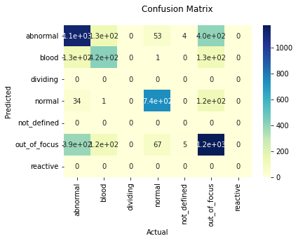
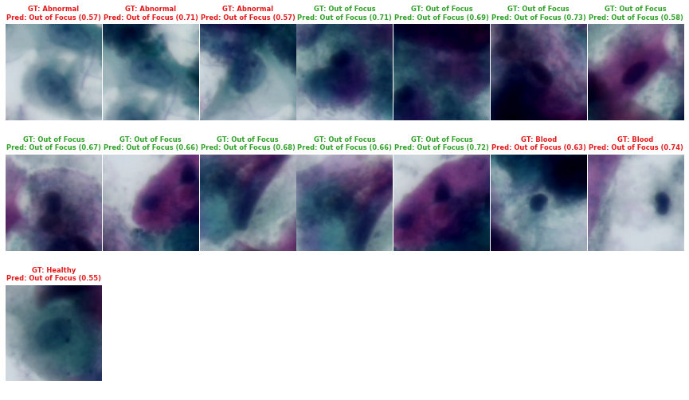

%reload_ext autoreload
%autoreload 2
%matplotlib inline
!/opt/bin/nvidia-smi
!nvcc --versionHRNet
Libs setup and imports
Installs required libs and creates util functions
%pip install lapixdl==0.7.19 # For model evaluation
%pip install -U albumentations # For data augmentations
%pip install torch==1.7.1 torchvision==0.8.2 # For HRNet compatibility# Installs HRNet from the git source
!git clone https://github.com/HRNet/HRNet-Image-Classification /HRNet
with open("/HRNet/requirements.txt") as file:
filedata = file.read()
filedata = filedata.replace(
"opencv-python==3.4.1.15", "opencv-python==3.4.2.17"
) # Fix OpenCV version
with open("/HRNet/requirements.txt", "w") as file:
file.write(filedata)
%pip install -r /HRNet/requirements.txt
import sys
sys.path.append("/HRNet/lib")import logging
import os
import random
import time
from pathlib import Path
import albumentations as A
import models # noqa: F401
import numpy as np
import torch
import torch.backends.cudnn as cudnn
import torch.distributed as dist
import torch.nn as nn
import torchvision.datasets as datasets
import torchvision.transforms as transforms
from config import config as cfg
from core.function import AverageMeter
from lapixdl.evaluation.model import Classification
from lapixdl.evaluation.visualize import show_classifications
from tensorboardX import SummaryWriter
from utils.utils import get_optimizer, save_checkpoint
# Fix seeds
random.seed(1462)
torch.manual_seed(1462)
# HRNet needs distributed config
os.environ["MASTER_ADDR"] = "localhost"
os.environ["MASTER_PORT"] = "1234"
dist.init_process_group("nccl", rank=0, world_size=1, init_method="env://")Utils
# Remaps classes if needed
def simplify_normal(cls_idx):
return 3 if cls_idx in [2, 6] else cls_idx
def accuracy(output, target, topk=(1,)):
"""Computes the precision@k for the specified values of k"""
with torch.no_grad():
maxk = max(topk)
batch_size = target.size(0)
_, pred = output.topk(maxk, 1, True, True)
pred = pred.t()
correct = pred.eq(target.view(1, -1).expand_as(pred))
res = []
for k in topk:
correct_k = correct[:k].contiguous().view(-1).float().sum(0, keepdim=True)
res.append(correct_k.mul_(100.0 / batch_size))
return resPaths and metadata configuration
Fill the paths accordingly to the structure of the dataset and the output directories.
To load the data from google drive (on google colab), use:
from google.colab import drive
drive.mount("/content/gdrive")path_img = Path(
"[images root folder]"
) # Images root folder. The images must be inside the [train|val|test]/[class] folders.
path_output = Path("[output root folder]")
path_models = (
path_output / "models"
) # Folder where the models/weights should be saved inTrain pipeline setup
Architecture Definition
The complete list of supported models is available at https://github.com/HRNet/HRNet-Image-Classification#imagenet-pretrained-models
# You need to find the correct configuration inside the /HRNet/experiments/ folder
model_cfg_file = "/HRNet/experiments/cls_hrnet_w18_sgd_lr5e-2_wd1e-4_bs32_x100.yaml"# Downloads the pretrained model to /pretrained.pth. The weights must be compatible with the chosen configuration.
# !wget "https://opr0mq.dm.files.1drv.com/y4mIoWpP2n-LUohHHANpC0jrOixm1FZgO2OsUtP2DwIozH5RsoYVyv_De5wDgR6XuQmirMV3C0AljLeB-zQXevfLlnQpcNeJlT9Q8LwNYDwh3TsECkMTWXCUn3vDGJWpCxQcQWKONr5VQWO1hLEKPeJbbSZ6tgbWwJHgHF7592HY7ilmGe39o5BhHz7P9QqMYLBts6V7QGoaKrr0PL3wvvR4w" -O "/pretrained.pth" # noqa: E501Pipeline
# Augmentations/Transforms setup
def albumentation_transforms(img):
return A.Compose(
[
A.VerticalFlip(p=0.5),
A.HorizontalFlip(p=0.5),
A.Rotate((-10, 10), p=0.75),
A.RandomBrightnessContrast(0.1, 0.1, p=0.75),
A.Affine(p=0.75, shear=0.2),
]
)(image=np.array(img))["image"]
# Normalization statistics
normalize = transforms.Normalize(mean=[0.485, 0.456, 0.406], std=[0.229, 0.224, 0.225])
# Resize images to be compatible with the model's default
imgs_size = [224, 224]
resize = transforms.Resize((imgs_size[0], imgs_size[1]))
transforms_pipeline = transforms.Compose(
[albumentation_transforms, transforms.ToTensor(), normalize, resize]
)bs = 64 # Adjust the batch size accordingly to the GPU VRAM capacity
# train_dataset.classes:
# ['abnormal',
# 'blood',
# 'dividing',
# 'normal',
# 'not_defined',
# 'out_of_focus',
# 'reactive']
train_dir = path_img / "train"
train_dataset = datasets.ImageFolder(
train_dir,
transforms_pipeline,
# target_transform=simplify_normal
)
train_loader = torch.utils.data.DataLoader(
train_dataset, batch_size=bs, shuffle=True, num_workers=1, pin_memory=True
)
val_dir = path_img / "val"
val_dataset = datasets.ImageFolder(
val_dir,
transforms.Compose([transforms.ToTensor(), normalize, resize]),
# target_transform=simplify_normal
)
val_loader = torch.utils.data.DataLoader(
val_dataset, batch_size=bs, shuffle=False, num_workers=1, pin_memory=True
)# Training configuration
cudnn.benchmark = True
cudnn.deterministic = False
cudnn.enabled = True
cfg.defrost()
cfg.merge_from_file(model_cfg_file)
cfg.OUTPUT_DIR = str(path_models)
cfg.LOG_DIR = str(path_models)
cfg.GPUS = (0,)
cfg.WORKERS = 4
cfg.PRINT_FREQ = 20
cfg.AUTO_RESUME = False
cfg.PIN_MEMORY = True
cfg.RANK = 0
cfg.DATASET.DATASET = "ufsc-ocpap"
cfg.DATASET.DATA_FORMAT = "png"
cfg.DATASET.ROOT = str(path_img)
cfg.DATASET.TEST_SET = "val"
cfg.DATASET.TRAIN_SET = "train"
cfg.MODEL.PRETRAINED = "" # '/pretrained.pth' # Loads pretrained weights
cfg.MODEL.IMAGE_SIZE = imgs_size
cfg.MODEL.NUM_CLASSES = len(train_dataset.classes)
# Training
cfg.TRAIN.LR_FACTOR = 0.1
cfg.TRAIN.LR_STEP = [30, 60, 90]
cfg.TRAIN.LR = 0.05
cfg.TRAIN.OPTIMIZER = "adam"
cfg.TRAIN.MOMENTUM = 0.9
cfg.TRAIN.WD = 0.0001
cfg.TRAIN.NESTEROV = True
cfg.TRAIN.BATCH_SIZE_PER_GPU = bs
cfg.TRAIN.BEGIN_EPOCH = 0
cfg.TRAIN.END_EPOCH = 100
cfg.TRAIN.RESUME = True
cfg.TRAIN.SHUFFLE = True
# Validation
cfg.TEST.BATCH_SIZE_PER_GPU = bs
cfg.TEST.MODEL_FILE = ""
cfg.TEST.FLIP_TEST = False
cfg.TEST.SHIFT_HEATMAP = False
cfg.TEST.USE_GT_BBOX = False
cfg.freeze()# Output and Logs
final_output_dir = path_models
root_output_dir = Path(cfg.OUTPUT_DIR)
if not root_output_dir.exists():
print(f"=> creating {root_output_dir}")
root_output_dir.mkdir(parents=True)
dataset = cfg.DATASET.DATASET
model_name = "hrnet_18"
print(f"=> creating {final_output_dir}")
final_output_dir.mkdir(parents=True, exist_ok=True)
time_str = time.strftime("%Y-%m-%d-%H-%M")
log_file = "{}_{}.log".format(time_str, "train")
final_log_file = final_output_dir / log_file
head = "%(asctime)-15s %(message)s"
logging.basicConfig(filename=str(final_log_file), format=head)
logger = logging.getLogger()
logger.setLevel(logging.INFO)
console = logging.StreamHandler()
logging.getLogger("").addHandler(console)
tensorboard_log_dir = Path(cfg.LOG_DIR) / dataset / model_name / (time_str)
print(f"=> creating {tensorboard_log_dir}")
tensorboard_log_dir.mkdir(parents=True, exist_ok=True)
writer_dict = {
"writer": SummaryWriter(log_dir=tensorboard_log_dir),
"train_global_steps": 0,
"valid_global_steps": 0,
}Training
model = eval("models." + cfg.MODEL.NAME + ".get_cls_net")(cfg)
gpus = list(cfg.GPUS)
model = torch.nn.DataParallel(model, device_ids=gpus).cuda()
criterion = torch.nn.CrossEntropyLoss().cuda()
optimizer = get_optimizer(cfg, model)best_perf = 0.0
best_model = False
last_epoch = cfg.TRAIN.BEGIN_EPOCH
if cfg.TRAIN.RESUME:
model_state_file = os.path.join(final_output_dir, "checkpoint.pth.tar")
if os.path.isfile(model_state_file):
checkpoint = torch.load(model_state_file)
last_epoch = checkpoint["epoch"]
best_perf = checkpoint["perf"]
model.module.load_state_dict(checkpoint["state_dict"])
optimizer.load_state_dict(checkpoint["optimizer"])
logger.info("=> loaded checkpoint (epoch {})".format(checkpoint["epoch"]))
best_model = True
if isinstance(cfg.TRAIN.LR_STEP, list):
lr_scheduler = torch.optim.lr_scheduler.MultiStepLR(
optimizer, cfg.TRAIN.LR_STEP, cfg.TRAIN.LR_FACTOR, last_epoch - 1
)
else:
lr_scheduler = torch.optim.lr_scheduler.StepLR(
optimizer, cfg.TRAIN.LR_STEP, cfg.TRAIN.LR_FACTOR, last_epoch - 1
)# Shows tensorboard
%reload_ext tensorboard
%tensorboard --logdir {tensorboard_log_dir}# Debug
# CUDA_LAUNCH_BLOCKING="1"# Define training and validation functions
def train(
config,
train_loader,
model,
criterion,
optimizer,
epoch,
output_dir,
tb_log_dir,
writer_dict,
):
batch_time = AverageMeter()
data_time = AverageMeter()
losses = AverageMeter()
top1 = AverageMeter()
top5 = AverageMeter()
# switch to train mode
model.train()
end = time.time()
for i, (input, target) in enumerate(train_loader):
# measure data loading time
data_time.update(time.time() - end)
# target = target - 1 # Specific for imagenet
# compute output
output = model(input)
target = target.cuda(non_blocking=True)
loss = criterion(output, target)
# compute gradient and do update step
optimizer.zero_grad()
loss.backward()
optimizer.step()
# measure accuracy and record loss
losses.update(loss.item(), input.size(0))
prec1, prec5 = accuracy(output, target, (1, 5))
top1.update(prec1[0], input.size(0))
top5.update(prec5[0], input.size(0))
# measure elapsed time
batch_time.update(time.time() - end)
end = time.time()
if i % config.PRINT_FREQ == 0:
msg = (
"Epoch: [{0}][{1}/{2}]\t"
"Time {batch_time.val:.3f}s ({batch_time.avg:.3f}s)\t"
"Speed {speed:.1f} samples/s\t"
"Data {data_time.val:.3f}s ({data_time.avg:.3f}s)\t"
"Loss {loss.val:.5f} ({loss.avg:.5f})\t"
"Accuracy@1 {top1.val:.3f} ({top1.avg:.3f})\t"
"Accuracy@5 {top5.val:.3f} ({top5.avg:.3f})\t".format(
epoch,
i,
len(train_loader),
batch_time=batch_time,
speed=input.size(0) / batch_time.val,
data_time=data_time,
loss=losses,
top1=top1,
top5=top5,
)
)
logger.info(msg)
if writer_dict:
writer = writer_dict["writer"]
global_steps = writer_dict["train_global_steps"]
writer.add_scalar("train_loss", losses.val, global_steps)
writer.add_scalar("train_top1", top1.val, global_steps)
writer_dict["train_global_steps"] = global_steps + 1
def validate(
config, val_loader, model, criterion, output_dir, tb_log_dir, writer_dict=None
):
batch_time = AverageMeter()
losses = AverageMeter()
top1 = AverageMeter()
top5 = AverageMeter()
# switch to evaluate mode
model.eval()
with torch.no_grad():
end = time.time()
for i, (input, target) in enumerate(val_loader):
# compute output
output = model(input)
target = target.cuda(non_blocking=True)
loss = criterion(output, target)
# measure accuracy and record loss
losses.update(loss.item(), input.size(0))
prec1, prec5 = accuracy(output, target, (1, 5))
top1.update(prec1[0], input.size(0))
top5.update(prec5[0], input.size(0))
# measure elapsed time
batch_time.update(time.time() - end)
end = time.time()
msg = (
"Test: Time {batch_time.avg:.3f}\t"
"Loss {loss.avg:.4f}\t"
"Error@1 {error1:.3f}\t"
"Error@5 {error5:.3f}\t"
"Accuracy@1 {top1.avg:.3f}\t"
"Accuracy@5 {top5.avg:.3f}\t".format(
batch_time=batch_time,
loss=losses,
top1=top1,
top5=top5,
error1=100 - top1.avg,
error5=100 - top5.avg,
)
)
logger.info(msg)
if writer_dict:
writer = writer_dict["writer"]
global_steps = writer_dict["valid_global_steps"]
writer.add_scalar("valid_loss", losses.avg, global_steps)
writer.add_scalar("valid_top1", top1.avg, global_steps)
writer_dict["valid_global_steps"] = global_steps + 1
return top1.avg# Train
logger = logging.getLogger(__name__)
for epoch in range(last_epoch, cfg.TRAIN.END_EPOCH):
# train for one epoch
train(
cfg,
train_loader,
model,
criterion,
optimizer,
epoch,
final_output_dir,
tensorboard_log_dir,
writer_dict,
)
lr_scheduler.step()
# evaluate on validation set
perf_indicator = validate(
cfg,
val_loader,
model,
criterion,
final_output_dir,
tensorboard_log_dir,
writer_dict,
)
if perf_indicator > best_perf:
best_perf = perf_indicator
best_model = True
else:
best_model = False
logger.info(f"=> saving checkpoint to {final_output_dir}")
save_checkpoint(
{
"epoch": epoch + 1,
"model": cfg.MODEL.NAME,
"state_dict": model.module.state_dict(),
"perf": perf_indicator,
"optimizer": optimizer.state_dict(),
},
best_model,
final_output_dir,
filename="checkpoint.pth.tar",
)
final_model_state_file = os.path.join(final_output_dir, "final_state.pth.tar")
logger.info(f"saving final model state to {final_model_state_file}")
torch.save(model.module.state_dict(), final_model_state_file)
writer_dict["writer"].close()/usr/local/lib/python3.7/dist-packages/torch/optim/lr_scheduler.py:136: UserWarning: Detected call of `lr_scheduler.step()` before `optimizer.step()`. In PyTorch 1.1.0 and later, you should call them in the opposite order: `optimizer.step()` before `lr_scheduler.step()`. Failure to do this will result in PyTorch skipping the first value of the learning rate schedule. See more details at https://pytorch.org/docs/stable/optim.html#how-to-adjust-learning-rate
"https://pytorch.org/docs/stable/optim.html#how-to-adjust-learning-rate", UserWarning)
Epoch: [1][0/365] Time 38.265s (38.265s) Speed 1.7 samples/s Data 35.436s (35.436s) Loss 1.27922 (1.27922) Accuracy@1 37.500 (37.500) Accuracy@5 100.000 (100.000)
Epoch: [1][20/365] Time 33.299s (33.758s) Speed 1.9 samples/s Data 32.510s (32.869s) Loss 1.04818 (1.12176) Accuracy@1 59.375 (46.652) Accuracy@5 100.000 (100.000)
Epoch: [1][40/365] Time 31.916s (34.308s) Speed 2.0 samples/s Data 31.124s (33.469s) Loss 1.23115 (1.11084) Accuracy@1 39.062 (45.998) Accuracy@5 100.000 (100.000)
Epoch: [1][60/365] Time 34.633s (34.194s) Speed 1.8 samples/s Data 33.845s (33.372s) Loss 1.07179 (1.10104) Accuracy@1 43.750 (46.081) Accuracy@5 100.000 (100.000)
Epoch: [1][80/365] Time 32.429s (33.993s) Speed 2.0 samples/s Data 31.635s (33.180s) Loss 1.06371 (1.09809) Accuracy@1 51.562 (46.316) Accuracy@5 100.000 (100.000)
Epoch: [1][100/365] Time 32.319s (33.681s) Speed 2.0 samples/s Data 31.529s (32.873s) Loss 1.05341 (1.09033) Accuracy@1 48.438 (46.550) Accuracy@5 100.000 (100.000)
Epoch: [1][120/365] Time 32.371s (33.489s) Speed 2.0 samples/s Data 31.578s (32.684s) Loss 1.07068 (1.08933) Accuracy@1 51.562 (46.798) Accuracy@5 100.000 (100.000)
Epoch: [1][140/365] Time 31.942s (33.311s) Speed 2.0 samples/s Data 31.158s (32.509s) Loss 1.01636 (1.08759) Accuracy@1 42.188 (46.964) Accuracy@5 100.000 (100.000)
Epoch: [1][160/365] Time 31.975s (33.201s) Speed 2.0 samples/s Data 31.181s (32.401s) Loss 1.19316 (1.08650) Accuracy@1 42.188 (47.331) Accuracy@5 100.000 (100.000)
Epoch: [1][180/365] Time 33.039s (33.165s) Speed 1.9 samples/s Data 32.253s (32.366s) Loss 1.11821 (1.09161) Accuracy@1 43.750 (47.160) Accuracy@5 100.000 (100.000)
Epoch: [1][200/365] Time 32.820s (33.129s) Speed 2.0 samples/s Data 32.037s (32.332s) Loss 1.23476 (1.08920) Accuracy@1 43.750 (47.139) Accuracy@5 100.000 (100.000)
Epoch: [1][220/365] Time 33.398s (33.084s) Speed 1.9 samples/s Data 32.606s (32.287s) Loss 1.12511 (1.08919) Accuracy@1 45.312 (47.016) Accuracy@5 100.000 (100.000)
Epoch: [1][240/365] Time 32.324s (33.038s) Speed 2.0 samples/s Data 31.531s (32.242s) Loss 1.12532 (1.08629) Accuracy@1 40.625 (47.251) Accuracy@5 100.000 (100.000)
Epoch: [1][260/365] Time 31.500s (32.982s) Speed 2.0 samples/s Data 30.705s (32.187s) Loss 1.09701 (1.08692) Accuracy@1 43.750 (47.198) Accuracy@5 100.000 (100.000)
Epoch: [1][280/365] Time 32.937s (32.916s) Speed 1.9 samples/s Data 32.147s (32.121s) Loss 1.08703 (1.08936) Accuracy@1 42.188 (47.042) Accuracy@5 100.000 (100.000)
Epoch: [1][300/365] Time 37.436s (32.892s) Speed 1.7 samples/s Data 36.639s (32.098s) Loss 1.06938 (1.08723) Accuracy@1 48.438 (47.119) Accuracy@5 100.000 (100.000)
Epoch: [1][320/365] Time 31.899s (32.864s) Speed 2.0 samples/s Data 31.115s (32.071s) Loss 1.08734 (1.08692) Accuracy@1 51.562 (47.152) Accuracy@5 100.000 (100.000)
Epoch: [1][340/365] Time 32.097s (32.797s) Speed 2.0 samples/s Data 31.306s (32.004s) Loss 1.00410 (1.08873) Accuracy@1 59.375 (47.008) Accuracy@5 100.000 (100.000)
Epoch: [1][360/365] Time 31.841s (32.777s) Speed 2.0 samples/s Data 31.061s (31.985s) Loss 0.99296 (1.08536) Accuracy@1 54.688 (47.252) Accuracy@5 100.000 (100.000)
Test: Time 32.817 Loss 1.0170 Error@1 48.460 Error@5 0.000 Accuracy@1 51.540 Accuracy@5 100.000
=> saving checkpoint to /content/gdrive/MyDrive/Mestrado/Citologia_de_Cavidade_Oral/Models/Outputs/classification/models_hrnet_18_v41
Epoch: [2][0/365] Time 1.559s (1.559s) Speed 41.1 samples/s Data 0.699s (0.699s) Loss 0.84660 (0.84660) Accuracy@1 65.625 (65.625) Accuracy@5 100.000 (100.000)
Epoch: [2][20/365] Time 0.781s (0.843s) Speed 82.0 samples/s Data 0.000s (0.034s) Loss 1.01372 (1.03605) Accuracy@1 50.000 (48.958) Accuracy@5 100.000 (100.000)
Epoch: [2][40/365] Time 0.788s (0.815s) Speed 81.2 samples/s Data 0.000s (0.017s) Loss 1.04198 (1.05256) Accuracy@1 50.000 (47.752) Accuracy@5 100.000 (100.000)
Epoch: [2][60/365] Time 0.784s (0.806s) Speed 81.6 samples/s Data 0.000s (0.012s) Loss 1.18453 (1.04826) Accuracy@1 45.312 (49.001) Accuracy@5 100.000 (100.000)
Epoch: [2][80/365] Time 0.786s (0.801s) Speed 81.4 samples/s Data 0.000s (0.009s) Loss 1.01639 (1.04444) Accuracy@1 48.438 (49.228) Accuracy@5 100.000 (100.000)
Epoch: [2][100/365] Time 0.798s (0.798s) Speed 80.2 samples/s Data 0.000s (0.007s) Loss 1.11360 (1.04880) Accuracy@1 48.438 (48.979) Accuracy@5 100.000 (100.000)
Epoch: [2][120/365] Time 0.792s (0.797s) Speed 80.9 samples/s Data 0.000s (0.006s) Loss 1.20054 (1.04918) Accuracy@1 40.625 (48.825) Accuracy@5 100.000 (100.000)
Epoch: [2][140/365] Time 0.784s (0.795s) Speed 81.6 samples/s Data 0.000s (0.005s) Loss 0.97432 (1.05613) Accuracy@1 51.562 (48.759) Accuracy@5 100.000 (100.000)
Epoch: [2][160/365] Time 0.782s (0.794s) Speed 81.8 samples/s Data 0.000s (0.005s) Loss 0.98636 (1.05409) Accuracy@1 48.438 (48.894) Accuracy@5 100.000 (100.000)
Epoch: [2][180/365] Time 0.790s (0.793s) Speed 81.0 samples/s Data 0.000s (0.004s) Loss 1.01145 (1.05480) Accuracy@1 50.000 (48.653) Accuracy@5 100.000 (100.000)
Epoch: [2][200/365] Time 0.781s (0.793s) Speed 81.9 samples/s Data 0.000s (0.004s) Loss 1.34332 (1.05464) Accuracy@1 43.750 (48.678) Accuracy@5 100.000 (100.000)
Epoch: [2][220/365] Time 0.789s (0.792s) Speed 81.1 samples/s Data 0.000s (0.003s) Loss 1.08719 (1.05837) Accuracy@1 42.188 (48.628) Accuracy@5 100.000 (100.000)
Epoch: [2][240/365] Time 0.783s (0.791s) Speed 81.7 samples/s Data 0.000s (0.003s) Loss 1.09318 (1.05951) Accuracy@1 53.125 (48.522) Accuracy@5 100.000 (100.000)
Epoch: [2][260/365] Time 0.785s (0.791s) Speed 81.5 samples/s Data 0.000s (0.003s) Loss 1.05795 (1.06042) Accuracy@1 42.188 (48.485) Accuracy@5 100.000 (100.000)
Epoch: [2][280/365] Time 0.793s (0.791s) Speed 80.7 samples/s Data 0.000s (0.003s) Loss 1.02965 (1.06153) Accuracy@1 50.000 (48.460) Accuracy@5 100.000 (100.000)
Epoch: [2][300/365] Time 0.790s (0.791s) Speed 81.1 samples/s Data 0.000s (0.003s) Loss 1.02970 (1.06207) Accuracy@1 46.875 (48.453) Accuracy@5 100.000 (100.000)
Epoch: [2][320/365] Time 0.784s (0.790s) Speed 81.7 samples/s Data 0.000s (0.002s) Loss 0.97219 (1.06000) Accuracy@1 56.250 (48.423) Accuracy@5 100.000 (100.000)
Epoch: [2][340/365] Time 0.792s (0.790s) Speed 80.8 samples/s Data 0.000s (0.002s) Loss 1.01745 (1.05824) Accuracy@1 46.875 (48.360) Accuracy@5 100.000 (100.000)
Epoch: [2][360/365] Time 0.787s (0.790s) Speed 81.3 samples/s Data 0.000s (0.002s) Loss 1.04316 (1.05542) Accuracy@1 50.000 (48.515) Accuracy@5 100.000 (100.000)
Test: Time 0.363 Loss 1.4559 Error@1 61.656 Error@5 0.000 Accuracy@1 38.344 Accuracy@5 100.000
=> saving checkpoint to /content/gdrive/MyDrive/Mestrado/Citologia_de_Cavidade_Oral/Models/Outputs/classification/models_hrnet_18_v41
Epoch: [3][0/365] Time 1.408s (1.408s) Speed 45.5 samples/s Data 0.571s (0.571s) Loss 1.00993 (1.00993) Accuracy@1 53.125 (53.125) Accuracy@5 100.000 (100.000)
Epoch: [3][20/365] Time 0.783s (0.823s) Speed 81.7 samples/s Data 0.000s (0.028s) Loss 1.00136 (1.03043) Accuracy@1 59.375 (50.595) Accuracy@5 100.000 (100.000)
Epoch: [3][40/365] Time 0.787s (0.805s) Speed 81.3 samples/s Data 0.000s (0.014s) Loss 1.11765 (1.04256) Accuracy@1 48.438 (49.924) Accuracy@5 100.000 (100.000)
Epoch: [3][60/365] Time 0.790s (0.799s) Speed 81.0 samples/s Data 0.000s (0.010s) Loss 0.98046 (1.04860) Accuracy@1 57.812 (50.077) Accuracy@5 100.000 (100.000)
Epoch: [3][80/365] Time 0.788s (0.796s) Speed 81.2 samples/s Data 0.000s (0.007s) Loss 1.10932 (1.05331) Accuracy@1 40.625 (49.595) Accuracy@5 100.000 (100.000)
Epoch: [3][100/365] Time 0.788s (0.794s) Speed 81.2 samples/s Data 0.000s (0.006s) Loss 0.98088 (1.05085) Accuracy@1 51.562 (49.010) Accuracy@5 100.000 (100.000)
Epoch: [3][120/365] Time 0.785s (0.793s) Speed 81.6 samples/s Data 0.000s (0.005s) Loss 1.17830 (1.04756) Accuracy@1 48.438 (48.889) Accuracy@5 100.000 (100.000)
Epoch: [3][140/365] Time 0.791s (0.792s) Speed 80.9 samples/s Data 0.000s (0.004s) Loss 1.02416 (1.04900) Accuracy@1 50.000 (48.703) Accuracy@5 100.000 (100.000)
Epoch: [3][160/365] Time 0.786s (0.791s) Speed 81.4 samples/s Data 0.000s (0.004s) Loss 0.93839 (1.04710) Accuracy@1 62.500 (48.641) Accuracy@5 100.000 (100.000)
Epoch: [3][180/365] Time 0.786s (0.790s) Speed 81.4 samples/s Data 0.000s (0.003s) Loss 1.08866 (1.04812) Accuracy@1 40.625 (48.463) Accuracy@5 100.000 (100.000)
Epoch: [3][200/365] Time 0.792s (0.790s) Speed 80.9 samples/s Data 0.000s (0.003s) Loss 1.12626 (1.04556) Accuracy@1 45.312 (48.780) Accuracy@5 100.000 (100.000)
Epoch: [3][220/365] Time 0.789s (0.790s) Speed 81.2 samples/s Data 0.000s (0.003s) Loss 1.00003 (1.04342) Accuracy@1 51.562 (48.982) Accuracy@5 100.000 (100.000)
Epoch: [3][240/365] Time 0.785s (0.790s) Speed 81.5 samples/s Data 0.000s (0.003s) Loss 0.98111 (1.04132) Accuracy@1 50.000 (49.157) Accuracy@5 100.000 (100.000)
Epoch: [3][260/365] Time 0.788s (0.789s) Speed 81.2 samples/s Data 0.000s (0.002s) Loss 0.92314 (1.03685) Accuracy@1 46.875 (49.395) Accuracy@5 100.000 (100.000)
Epoch: [3][280/365] Time 0.786s (0.789s) Speed 81.4 samples/s Data 0.000s (0.002s) Loss 1.01783 (1.03688) Accuracy@1 59.375 (49.483) Accuracy@5 100.000 (100.000)
Epoch: [3][300/365] Time 0.784s (0.789s) Speed 81.6 samples/s Data 0.000s (0.002s) Loss 1.05998 (1.03912) Accuracy@1 46.875 (49.382) Accuracy@5 100.000 (100.000)
Epoch: [3][320/365] Time 0.786s (0.789s) Speed 81.5 samples/s Data 0.000s (0.002s) Loss 0.94438 (1.03791) Accuracy@1 48.438 (49.469) Accuracy@5 100.000 (100.000)
Epoch: [3][340/365] Time 0.785s (0.789s) Speed 81.6 samples/s Data 0.000s (0.002s) Loss 0.95991 (1.03662) Accuracy@1 56.250 (49.578) Accuracy@5 100.000 (100.000)
Epoch: [3][360/365] Time 0.788s (0.789s) Speed 81.2 samples/s Data 0.000s (0.002s) Loss 1.18593 (1.03607) Accuracy@1 48.438 (49.567) Accuracy@5 100.000 (100.000)
Test: Time 0.348 Loss 1.0475 Error@1 50.950 Error@5 0.000 Accuracy@1 49.050 Accuracy@5 100.000
=> saving checkpoint to /content/gdrive/MyDrive/Mestrado/Citologia_de_Cavidade_Oral/Models/Outputs/classification/models_hrnet_18_v41
Epoch: [4][0/365] Time 1.426s (1.426s) Speed 44.9 samples/s Data 0.577s (0.577s) Loss 1.04015 (1.04015) Accuracy@1 48.438 (48.438) Accuracy@5 100.000 (100.000)
Epoch: [4][20/365] Time 0.783s (0.821s) Speed 81.8 samples/s Data 0.000s (0.028s) Loss 1.06752 (1.04937) Accuracy@1 43.750 (48.363) Accuracy@5 100.000 (100.000)
Epoch: [4][40/365] Time 0.784s (0.804s) Speed 81.7 samples/s Data 0.000s (0.014s) Loss 0.94011 (1.04500) Accuracy@1 50.000 (47.523) Accuracy@5 100.000 (100.000)
Epoch: [4][60/365] Time 0.782s (0.798s) Speed 81.8 samples/s Data 0.000s (0.010s) Loss 0.95265 (1.04401) Accuracy@1 56.250 (48.899) Accuracy@5 100.000 (100.000)
Epoch: [4][80/365] Time 0.781s (0.795s) Speed 81.9 samples/s Data 0.000s (0.007s) Loss 0.91019 (1.03718) Accuracy@1 53.125 (48.804) Accuracy@5 100.000 (100.000)
Epoch: [4][100/365] Time 0.783s (0.794s) Speed 81.7 samples/s Data 0.000s (0.006s) Loss 1.02701 (1.03628) Accuracy@1 50.000 (48.840) Accuracy@5 100.000 (100.000)
Epoch: [4][120/365] Time 0.784s (0.793s) Speed 81.6 samples/s Data 0.000s (0.005s) Loss 1.04220 (1.03114) Accuracy@1 48.438 (49.419) Accuracy@5 100.000 (100.000)
Epoch: [4][140/365] Time 0.786s (0.792s) Speed 81.4 samples/s Data 0.000s (0.004s) Loss 0.92417 (1.03141) Accuracy@1 51.562 (49.269) Accuracy@5 100.000 (100.000)
Epoch: [4][160/365] Time 0.784s (0.791s) Speed 81.6 samples/s Data 0.000s (0.004s) Loss 0.95478 (1.02770) Accuracy@1 56.250 (49.612) Accuracy@5 100.000 (100.000)
Epoch: [4][180/365] Time 0.808s (0.791s) Speed 79.2 samples/s Data 0.000s (0.003s) Loss 0.86804 (1.02151) Accuracy@1 50.000 (49.931) Accuracy@5 100.000 (100.000)
Epoch: [4][200/365] Time 0.783s (0.791s) Speed 81.8 samples/s Data 0.000s (0.003s) Loss 0.85324 (1.02424) Accuracy@1 60.938 (49.946) Accuracy@5 100.000 (100.000)
Epoch: [4][220/365] Time 0.794s (0.790s) Speed 80.6 samples/s Data 0.000s (0.003s) Loss 1.11055 (1.02473) Accuracy@1 53.125 (50.064) Accuracy@5 100.000 (100.000)
Epoch: [4][240/365] Time 0.794s (0.790s) Speed 80.6 samples/s Data 0.000s (0.003s) Loss 0.98444 (1.02582) Accuracy@1 50.000 (49.883) Accuracy@5 100.000 (100.000)
Epoch: [4][260/365] Time 0.785s (0.790s) Speed 81.5 samples/s Data 0.000s (0.002s) Loss 1.05905 (1.02510) Accuracy@1 48.438 (50.060) Accuracy@5 100.000 (100.000)
Epoch: [4][280/365] Time 0.784s (0.790s) Speed 81.6 samples/s Data 0.000s (0.002s) Loss 1.00329 (1.02445) Accuracy@1 57.812 (50.095) Accuracy@5 100.000 (100.000)
Epoch: [4][300/365] Time 0.785s (0.789s) Speed 81.5 samples/s Data 0.000s (0.002s) Loss 1.06303 (1.02190) Accuracy@1 50.000 (50.327) Accuracy@5 100.000 (100.000)
Epoch: [4][320/365] Time 0.787s (0.789s) Speed 81.3 samples/s Data 0.000s (0.002s) Loss 1.07759 (1.02126) Accuracy@1 56.250 (50.380) Accuracy@5 100.000 (100.000)
Epoch: [4][340/365] Time 0.792s (0.789s) Speed 80.8 samples/s Data 0.000s (0.002s) Loss 1.00270 (1.02111) Accuracy@1 43.750 (50.385) Accuracy@5 100.000 (100.000)
Epoch: [4][360/365] Time 0.791s (0.789s) Speed 80.9 samples/s Data 0.000s (0.002s) Loss 0.97355 (1.02030) Accuracy@1 56.250 (50.515) Accuracy@5 100.000 (100.000)
Test: Time 0.362 Loss 0.9809 Error@1 49.377 Error@5 0.000 Accuracy@1 50.623 Accuracy@5 100.000
=> saving checkpoint to /content/gdrive/MyDrive/Mestrado/Citologia_de_Cavidade_Oral/Models/Outputs/classification/models_hrnet_18_v41
Epoch: [5][0/365] Time 1.459s (1.459s) Speed 43.9 samples/s Data 0.614s (0.614s) Loss 1.11752 (1.11752) Accuracy@1 45.312 (45.312) Accuracy@5 100.000 (100.000)
Epoch: [5][20/365] Time 0.790s (0.830s) Speed 81.0 samples/s Data 0.000s (0.030s) Loss 0.98819 (1.03212) Accuracy@1 59.375 (51.190) Accuracy@5 100.000 (100.000)
Epoch: [5][40/365] Time 0.791s (0.809s) Speed 81.0 samples/s Data 0.000s (0.015s) Loss 1.03245 (1.02728) Accuracy@1 53.125 (51.105) Accuracy@5 100.000 (100.000)
Epoch: [5][60/365] Time 0.782s (0.802s) Speed 81.8 samples/s Data 0.000s (0.010s) Loss 1.06552 (1.02225) Accuracy@1 40.625 (51.101) Accuracy@5 100.000 (100.000)
Epoch: [5][80/365] Time 0.783s (0.799s) Speed 81.8 samples/s Data 0.000s (0.008s) Loss 1.21630 (1.01498) Accuracy@1 43.750 (50.965) Accuracy@5 100.000 (100.000)
Epoch: [5][100/365] Time 0.784s (0.796s) Speed 81.7 samples/s Data 0.000s (0.006s) Loss 0.95408 (1.01890) Accuracy@1 48.438 (51.114) Accuracy@5 100.000 (100.000)
Epoch: [5][120/365] Time 0.793s (0.795s) Speed 80.7 samples/s Data 0.000s (0.005s) Loss 0.96881 (1.01798) Accuracy@1 62.500 (51.614) Accuracy@5 100.000 (100.000)
Epoch: [5][140/365] Time 0.782s (0.794s) Speed 81.8 samples/s Data 0.000s (0.005s) Loss 0.99134 (1.01218) Accuracy@1 53.125 (51.928) Accuracy@5 100.000 (100.000)
Epoch: [5][160/365] Time 0.779s (0.793s) Speed 82.1 samples/s Data 0.000s (0.004s) Loss 0.89271 (1.01049) Accuracy@1 54.688 (51.892) Accuracy@5 100.000 (100.000)
Epoch: [5][180/365] Time 0.788s (0.792s) Speed 81.2 samples/s Data 0.000s (0.004s) Loss 0.91467 (1.00894) Accuracy@1 53.125 (51.761) Accuracy@5 100.000 (100.000)
Epoch: [5][200/365] Time 0.786s (0.791s) Speed 81.4 samples/s Data 0.000s (0.003s) Loss 1.00074 (1.01281) Accuracy@1 50.000 (51.539) Accuracy@5 100.000 (100.000)
Epoch: [5][220/365] Time 0.784s (0.791s) Speed 81.6 samples/s Data 0.000s (0.003s) Loss 1.03981 (1.01015) Accuracy@1 50.000 (51.456) Accuracy@5 100.000 (100.000)
Epoch: [5][240/365] Time 0.784s (0.791s) Speed 81.6 samples/s Data 0.000s (0.003s) Loss 1.05854 (1.00972) Accuracy@1 45.312 (51.394) Accuracy@5 100.000 (100.000)
Epoch: [5][260/365] Time 0.784s (0.790s) Speed 81.6 samples/s Data 0.000s (0.003s) Loss 0.85612 (1.00972) Accuracy@1 60.938 (51.551) Accuracy@5 100.000 (100.000)
Epoch: [5][280/365] Time 0.785s (0.790s) Speed 81.5 samples/s Data 0.000s (0.002s) Loss 1.15624 (1.01096) Accuracy@1 35.938 (51.435) Accuracy@5 100.000 (100.000)
Epoch: [5][300/365] Time 0.784s (0.790s) Speed 81.7 samples/s Data 0.000s (0.002s) Loss 0.98141 (1.01173) Accuracy@1 46.875 (51.210) Accuracy@5 100.000 (100.000)
Epoch: [5][320/365] Time 0.784s (0.790s) Speed 81.6 samples/s Data 0.000s (0.002s) Loss 0.99629 (1.01195) Accuracy@1 45.312 (51.154) Accuracy@5 100.000 (100.000)
Epoch: [5][340/365] Time 0.788s (0.789s) Speed 81.2 samples/s Data 0.000s (0.002s) Loss 1.01187 (1.01090) Accuracy@1 42.188 (51.182) Accuracy@5 100.000 (100.000)
Epoch: [5][360/365] Time 0.784s (0.789s) Speed 81.6 samples/s Data 0.000s (0.002s) Loss 1.02458 (1.01070) Accuracy@1 54.688 (51.190) Accuracy@5 100.000 (100.000)
Test: Time 0.340 Loss 0.9969 Error@1 50.055 Error@5 0.000 Accuracy@1 49.945 Accuracy@5 100.000
=> saving checkpoint to /content/gdrive/MyDrive/Mestrado/Citologia_de_Cavidade_Oral/Models/Outputs/classification/models_hrnet_18_v41
Epoch: [6][0/365] Time 1.468s (1.468s) Speed 43.6 samples/s Data 0.603s (0.603s) Loss 1.10630 (1.10630) Accuracy@1 51.562 (51.562) Accuracy@5 100.000 (100.000)
Epoch: [6][20/365] Time 0.790s (0.830s) Speed 81.0 samples/s Data 0.000s (0.029s) Loss 1.01493 (1.00577) Accuracy@1 46.875 (52.009) Accuracy@5 100.000 (100.000)
Epoch: [6][40/365] Time 0.787s (0.809s) Speed 81.4 samples/s Data 0.000s (0.015s) Loss 1.16454 (1.00244) Accuracy@1 46.875 (51.524) Accuracy@5 100.000 (100.000)
Epoch: [6][60/365] Time 0.789s (0.801s) Speed 81.2 samples/s Data 0.000s (0.010s) Loss 0.95916 (0.98922) Accuracy@1 57.812 (51.691) Accuracy@5 100.000 (100.000)
Epoch: [6][80/365] Time 0.785s (0.798s) Speed 81.6 samples/s Data 0.000s (0.008s) Loss 0.94036 (0.99480) Accuracy@1 51.562 (51.447) Accuracy@5 100.000 (100.000)
Epoch: [6][100/365] Time 0.789s (0.796s) Speed 81.1 samples/s Data 0.000s (0.006s) Loss 1.16058 (0.99190) Accuracy@1 46.875 (51.392) Accuracy@5 100.000 (100.000)
Epoch: [6][120/365] Time 0.785s (0.795s) Speed 81.6 samples/s Data 0.000s (0.005s) Loss 1.03165 (0.99677) Accuracy@1 54.688 (51.240) Accuracy@5 100.000 (100.000)
Epoch: [6][140/365] Time 0.795s (0.793s) Speed 80.5 samples/s Data 0.000s (0.005s) Loss 0.97036 (1.00096) Accuracy@1 51.562 (50.931) Accuracy@5 100.000 (100.000)
Epoch: [6][160/365] Time 0.783s (0.793s) Speed 81.7 samples/s Data 0.000s (0.004s) Loss 0.97431 (1.00053) Accuracy@1 59.375 (51.106) Accuracy@5 100.000 (100.000)
Epoch: [6][180/365] Time 0.783s (0.792s) Speed 81.7 samples/s Data 0.000s (0.004s) Loss 1.04227 (0.99932) Accuracy@1 53.125 (51.260) Accuracy@5 100.000 (100.000)
Epoch: [6][200/365] Time 0.785s (0.792s) Speed 81.5 samples/s Data 0.000s (0.003s) Loss 1.08306 (0.99999) Accuracy@1 50.000 (51.430) Accuracy@5 100.000 (100.000)
Epoch: [6][220/365] Time 0.794s (0.791s) Speed 80.6 samples/s Data 0.000s (0.003s) Loss 0.99532 (1.00113) Accuracy@1 45.312 (51.456) Accuracy@5 100.000 (100.000)
Epoch: [6][240/365] Time 0.782s (0.791s) Speed 81.8 samples/s Data 0.000s (0.003s) Loss 1.02901 (1.00122) Accuracy@1 65.625 (51.420) Accuracy@5 100.000 (100.000)
Epoch: [6][260/365] Time 0.788s (0.790s) Speed 81.3 samples/s Data 0.000s (0.003s) Loss 0.96214 (1.00007) Accuracy@1 57.812 (51.431) Accuracy@5 100.000 (100.000)
Epoch: [6][280/365] Time 0.789s (0.790s) Speed 81.1 samples/s Data 0.000s (0.002s) Loss 1.04665 (1.00022) Accuracy@1 46.875 (51.340) Accuracy@5 100.000 (100.000)
Epoch: [6][300/365] Time 0.794s (0.790s) Speed 80.6 samples/s Data 0.000s (0.002s) Loss 1.01435 (1.00006) Accuracy@1 48.438 (51.199) Accuracy@5 100.000 (100.000)
Epoch: [6][320/365] Time 0.786s (0.790s) Speed 81.4 samples/s Data 0.000s (0.002s) Loss 1.14753 (1.00286) Accuracy@1 57.812 (51.047) Accuracy@5 100.000 (100.000)
Epoch: [6][340/365] Time 0.784s (0.789s) Speed 81.6 samples/s Data 0.000s (0.002s) Loss 1.07089 (1.00302) Accuracy@1 53.125 (51.127) Accuracy@5 100.000 (100.000)
Epoch: [6][360/365] Time 0.783s (0.789s) Speed 81.7 samples/s Data 0.000s (0.002s) Loss 0.95843 (1.00335) Accuracy@1 48.438 (51.151) Accuracy@5 100.000 (100.000)
Test: Time 0.336 Loss 0.9533 Error@1 46.668 Error@5 0.000 Accuracy@1 53.332 Accuracy@5 100.000
=> saving checkpoint to /content/gdrive/MyDrive/Mestrado/Citologia_de_Cavidade_Oral/Models/Outputs/classification/models_hrnet_18_v41
Epoch: [7][0/365] Time 1.429s (1.429s) Speed 44.8 samples/s Data 0.563s (0.563s) Loss 0.94264 (0.94264) Accuracy@1 56.250 (56.250) Accuracy@5 100.000 (100.000)
Epoch: [7][20/365] Time 0.791s (0.827s) Speed 80.9 samples/s Data 0.000s (0.028s) Loss 0.93563 (0.98522) Accuracy@1 50.000 (53.497) Accuracy@5 100.000 (100.000)
Epoch: [7][40/365] Time 0.789s (0.808s) Speed 81.1 samples/s Data 0.000s (0.014s) Loss 1.12320 (0.99417) Accuracy@1 40.625 (52.668) Accuracy@5 100.000 (100.000)
Epoch: [7][60/365] Time 0.790s (0.801s) Speed 81.1 samples/s Data 0.000s (0.010s) Loss 1.13756 (0.98808) Accuracy@1 62.500 (52.357) Accuracy@5 100.000 (100.000)
Epoch: [7][80/365] Time 0.787s (0.798s) Speed 81.3 samples/s Data 0.000s (0.007s) Loss 0.88671 (0.98758) Accuracy@1 54.688 (52.450) Accuracy@5 100.000 (100.000)
Epoch: [7][100/365] Time 0.784s (0.796s) Speed 81.6 samples/s Data 0.000s (0.006s) Loss 0.84732 (0.98836) Accuracy@1 56.250 (52.181) Accuracy@5 100.000 (100.000)
Epoch: [7][120/365] Time 0.792s (0.795s) Speed 80.9 samples/s Data 0.000s (0.005s) Loss 1.00750 (0.98719) Accuracy@1 48.438 (51.989) Accuracy@5 100.000 (100.000)
Epoch: [7][140/365] Time 0.789s (0.794s) Speed 81.2 samples/s Data 0.000s (0.004s) Loss 0.93516 (0.99387) Accuracy@1 60.938 (51.474) Accuracy@5 100.000 (100.000)
Epoch: [7][160/365] Time 0.789s (0.793s) Speed 81.1 samples/s Data 0.000s (0.004s) Loss 0.92852 (0.99141) Accuracy@1 56.250 (51.805) Accuracy@5 100.000 (100.000)
Epoch: [7][180/365] Time 0.785s (0.792s) Speed 81.6 samples/s Data 0.000s (0.003s) Loss 1.02661 (0.99058) Accuracy@1 46.875 (51.839) Accuracy@5 100.000 (100.000)
Epoch: [7][200/365] Time 0.787s (0.792s) Speed 81.4 samples/s Data 0.000s (0.003s) Loss 1.13183 (0.99648) Accuracy@1 48.438 (51.679) Accuracy@5 100.000 (100.000)
Epoch: [7][220/365] Time 0.790s (0.792s) Speed 81.0 samples/s Data 0.000s (0.003s) Loss 0.95752 (0.99547) Accuracy@1 50.000 (51.817) Accuracy@5 100.000 (100.000)
Epoch: [7][240/365] Time 0.782s (0.791s) Speed 81.9 samples/s Data 0.000s (0.003s) Loss 0.95431 (0.99474) Accuracy@1 40.625 (51.776) Accuracy@5 100.000 (100.000)
Epoch: [7][260/365] Time 0.783s (0.791s) Speed 81.8 samples/s Data 0.000s (0.002s) Loss 1.00171 (0.99597) Accuracy@1 50.000 (51.586) Accuracy@5 100.000 (100.000)
Epoch: [7][280/365] Time 0.792s (0.791s) Speed 80.8 samples/s Data 0.000s (0.002s) Loss 1.04566 (0.99406) Accuracy@1 45.312 (51.718) Accuracy@5 100.000 (100.000)
Epoch: [7][300/365] Time 0.783s (0.790s) Speed 81.7 samples/s Data 0.000s (0.002s) Loss 1.07386 (0.99423) Accuracy@1 43.750 (51.749) Accuracy@5 100.000 (100.000)
Epoch: [7][320/365] Time 0.790s (0.790s) Speed 81.0 samples/s Data 0.000s (0.002s) Loss 1.07792 (0.99386) Accuracy@1 50.000 (51.791) Accuracy@5 100.000 (100.000)
Epoch: [7][340/365] Time 0.792s (0.790s) Speed 80.8 samples/s Data 0.000s (0.002s) Loss 1.08333 (0.99633) Accuracy@1 54.688 (51.677) Accuracy@5 100.000 (100.000)
Epoch: [7][360/365] Time 0.791s (0.790s) Speed 80.9 samples/s Data 0.000s (0.002s) Loss 0.92072 (0.99544) Accuracy@1 51.562 (51.718) Accuracy@5 100.000 (100.000)
Test: Time 0.336 Loss 1.0749 Error@1 52.720 Error@5 0.000 Accuracy@1 47.280 Accuracy@5 100.000
=> saving checkpoint to /content/gdrive/MyDrive/Mestrado/Citologia_de_Cavidade_Oral/Models/Outputs/classification/models_hrnet_18_v41
Epoch: [8][0/365] Time 1.460s (1.460s) Speed 43.8 samples/s Data 0.580s (0.580s) Loss 0.91652 (0.91652) Accuracy@1 57.812 (57.812) Accuracy@5 100.000 (100.000)
Epoch: [8][20/365] Time 0.787s (0.829s) Speed 81.4 samples/s Data 0.000s (0.028s) Loss 0.94320 (0.98759) Accuracy@1 53.125 (51.265) Accuracy@5 100.000 (100.000)
Epoch: [8][40/365] Time 0.787s (0.809s) Speed 81.3 samples/s Data 0.000s (0.015s) Loss 0.93603 (0.97424) Accuracy@1 46.875 (52.591) Accuracy@5 100.000 (100.000)
Epoch: [8][60/365] Time 0.785s (0.802s) Speed 81.6 samples/s Data 0.000s (0.010s) Loss 0.97321 (0.98162) Accuracy@1 51.562 (52.177) Accuracy@5 100.000 (100.000)
Epoch: [8][80/365] Time 0.787s (0.798s) Speed 81.3 samples/s Data 0.000s (0.008s) Loss 1.02626 (0.98466) Accuracy@1 42.188 (52.450) Accuracy@5 100.000 (100.000)
Epoch: [8][100/365] Time 0.788s (0.796s) Speed 81.3 samples/s Data 0.000s (0.006s) Loss 0.93849 (0.98687) Accuracy@1 50.000 (51.934) Accuracy@5 100.000 (100.000)
Epoch: [8][120/365] Time 0.790s (0.795s) Speed 81.1 samples/s Data 0.000s (0.005s) Loss 1.04732 (0.98525) Accuracy@1 46.875 (52.027) Accuracy@5 100.000 (100.000)
Epoch: [8][140/365] Time 0.790s (0.794s) Speed 81.1 samples/s Data 0.000s (0.004s) Loss 0.93073 (0.98151) Accuracy@1 46.875 (51.784) Accuracy@5 100.000 (100.000)
Epoch: [8][160/365] Time 0.786s (0.793s) Speed 81.4 samples/s Data 0.000s (0.004s) Loss 1.03775 (0.97984) Accuracy@1 51.562 (51.776) Accuracy@5 100.000 (100.000)
Epoch: [8][180/365] Time 0.793s (0.792s) Speed 80.7 samples/s Data 0.000s (0.004s) Loss 0.92063 (0.98300) Accuracy@1 56.250 (51.752) Accuracy@5 100.000 (100.000)
Epoch: [8][200/365] Time 0.783s (0.792s) Speed 81.7 samples/s Data 0.000s (0.003s) Loss 1.06760 (0.98659) Accuracy@1 48.438 (51.609) Accuracy@5 100.000 (100.000)
Epoch: [8][220/365] Time 0.786s (0.791s) Speed 81.4 samples/s Data 0.000s (0.003s) Loss 0.94392 (0.98726) Accuracy@1 56.250 (51.591) Accuracy@5 100.000 (100.000)
Epoch: [8][240/365] Time 0.789s (0.791s) Speed 81.2 samples/s Data 0.000s (0.003s) Loss 0.89769 (0.98824) Accuracy@1 60.938 (51.439) Accuracy@5 100.000 (100.000)
Epoch: [8][260/365] Time 0.793s (0.791s) Speed 80.7 samples/s Data 0.000s (0.003s) Loss 1.05117 (0.99078) Accuracy@1 53.125 (51.293) Accuracy@5 100.000 (100.000)
Epoch: [8][280/365] Time 0.789s (0.791s) Speed 81.1 samples/s Data 0.000s (0.002s) Loss 0.96461 (0.99302) Accuracy@1 57.812 (51.201) Accuracy@5 100.000 (100.000)
Epoch: [8][300/365] Time 0.785s (0.791s) Speed 81.5 samples/s Data 0.000s (0.002s) Loss 0.89613 (0.99050) Accuracy@1 59.375 (51.350) Accuracy@5 100.000 (100.000)
Epoch: [8][320/365] Time 0.786s (0.790s) Speed 81.4 samples/s Data 0.000s (0.002s) Loss 1.10856 (0.99130) Accuracy@1 50.000 (51.436) Accuracy@5 100.000 (100.000)
Epoch: [8][340/365] Time 0.789s (0.790s) Speed 81.1 samples/s Data 0.000s (0.002s) Loss 1.04399 (0.99184) Accuracy@1 50.000 (51.439) Accuracy@5 100.000 (100.000)
Epoch: [8][360/365] Time 0.790s (0.790s) Speed 81.0 samples/s Data 0.000s (0.002s) Loss 1.02560 (0.99128) Accuracy@1 51.562 (51.524) Accuracy@5 100.000 (100.000)
Test: Time 0.337 Loss 1.3912 Error@1 57.090 Error@5 0.000 Accuracy@1 42.910 Accuracy@5 100.000
=> saving checkpoint to /content/gdrive/MyDrive/Mestrado/Citologia_de_Cavidade_Oral/Models/Outputs/classification/models_hrnet_18_v41
Epoch: [9][0/365] Time 1.420s (1.420s) Speed 45.1 samples/s Data 0.574s (0.574s) Loss 0.99551 (0.99551) Accuracy@1 40.625 (40.625) Accuracy@5 100.000 (100.000)
Epoch: [9][20/365] Time 0.785s (0.824s) Speed 81.5 samples/s Data 0.000s (0.028s) Loss 0.84975 (0.99387) Accuracy@1 68.750 (52.753) Accuracy@5 100.000 (100.000)
Epoch: [9][40/365] Time 0.785s (0.807s) Speed 81.6 samples/s Data 0.000s (0.014s) Loss 1.03957 (0.99886) Accuracy@1 50.000 (51.829) Accuracy@5 100.000 (100.000)
Epoch: [9][60/365] Time 0.785s (0.801s) Speed 81.5 samples/s Data 0.000s (0.010s) Loss 0.91368 (0.99133) Accuracy@1 54.688 (51.819) Accuracy@5 100.000 (100.000)
Epoch: [9][80/365] Time 0.784s (0.798s) Speed 81.6 samples/s Data 0.000s (0.007s) Loss 0.92318 (0.98810) Accuracy@1 53.125 (51.871) Accuracy@5 100.000 (100.000)
Epoch: [9][100/365] Time 0.785s (0.796s) Speed 81.5 samples/s Data 0.000s (0.006s) Loss 0.89142 (0.98433) Accuracy@1 56.250 (51.965) Accuracy@5 100.000 (100.000)
Epoch: [9][120/365] Time 0.786s (0.794s) Speed 81.4 samples/s Data 0.000s (0.005s) Loss 0.99640 (0.98492) Accuracy@1 50.000 (52.053) Accuracy@5 100.000 (100.000)
Epoch: [9][140/365] Time 0.784s (0.793s) Speed 81.6 samples/s Data 0.000s (0.004s) Loss 1.19746 (0.98142) Accuracy@1 35.938 (52.083) Accuracy@5 100.000 (100.000)
Epoch: [9][160/365] Time 0.786s (0.793s) Speed 81.4 samples/s Data 0.000s (0.004s) Loss 0.92734 (0.98110) Accuracy@1 51.562 (52.319) Accuracy@5 100.000 (100.000)
Epoch: [9][180/365] Time 0.789s (0.792s) Speed 81.2 samples/s Data 0.000s (0.003s) Loss 0.86265 (0.98170) Accuracy@1 56.250 (52.279) Accuracy@5 100.000 (100.000)
Epoch: [9][200/365] Time 0.786s (0.792s) Speed 81.4 samples/s Data 0.000s (0.003s) Loss 0.85457 (0.98442) Accuracy@1 64.062 (52.208) Accuracy@5 100.000 (100.000)
Epoch: [9][220/365] Time 0.786s (0.791s) Speed 81.4 samples/s Data 0.000s (0.003s) Loss 1.03952 (0.98357) Accuracy@1 51.562 (52.128) Accuracy@5 100.000 (100.000)
Epoch: [9][240/365] Time 0.792s (0.791s) Speed 80.9 samples/s Data 0.000s (0.003s) Loss 1.14986 (0.98434) Accuracy@1 45.312 (52.101) Accuracy@5 100.000 (100.000)
Epoch: [9][260/365] Time 0.785s (0.791s) Speed 81.5 samples/s Data 0.000s (0.002s) Loss 0.88835 (0.98490) Accuracy@1 59.375 (52.059) Accuracy@5 100.000 (100.000)
Epoch: [9][280/365] Time 0.784s (0.791s) Speed 81.6 samples/s Data 0.000s (0.002s) Loss 0.93351 (0.98369) Accuracy@1 54.688 (52.113) Accuracy@5 100.000 (100.000)
Epoch: [9][300/365] Time 0.787s (0.790s) Speed 81.3 samples/s Data 0.000s (0.002s) Loss 1.08202 (0.98472) Accuracy@1 45.312 (52.009) Accuracy@5 100.000 (100.000)
Epoch: [9][320/365] Time 0.786s (0.790s) Speed 81.4 samples/s Data 0.000s (0.002s) Loss 1.13327 (0.98296) Accuracy@1 51.562 (52.098) Accuracy@5 100.000 (100.000)
Epoch: [9][340/365] Time 0.794s (0.790s) Speed 80.6 samples/s Data 0.000s (0.002s) Loss 1.03645 (0.98270) Accuracy@1 48.438 (52.286) Accuracy@5 100.000 (100.000)
Epoch: [9][360/365] Time 0.788s (0.790s) Speed 81.2 samples/s Data 0.000s (0.002s) Loss 0.97899 (0.98241) Accuracy@1 54.688 (52.381) Accuracy@5 100.000 (100.000)
Test: Time 0.337 Loss 0.9970 Error@1 51.060 Error@5 0.000 Accuracy@1 48.940 Accuracy@5 100.000
=> saving checkpoint to /content/gdrive/MyDrive/Mestrado/Citologia_de_Cavidade_Oral/Models/Outputs/classification/models_hrnet_18_v41
Epoch: [10][0/365] Time 1.450s (1.450s) Speed 44.1 samples/s Data 0.591s (0.591s) Loss 0.86205 (0.86205) Accuracy@1 54.688 (54.688) Accuracy@5 100.000 (100.000)
Epoch: [10][20/365] Time 0.784s (0.832s) Speed 81.6 samples/s Data 0.000s (0.029s) Loss 0.95655 (0.97667) Accuracy@1 56.250 (53.051) Accuracy@5 100.000 (100.000)
Epoch: [10][40/365] Time 0.785s (0.811s) Speed 81.5 samples/s Data 0.000s (0.015s) Loss 0.96442 (0.98763) Accuracy@1 54.688 (52.172) Accuracy@5 100.000 (100.000)
Epoch: [10][60/365] Time 0.788s (0.804s) Speed 81.2 samples/s Data 0.000s (0.010s) Loss 0.96850 (0.98322) Accuracy@1 54.688 (51.947) Accuracy@5 100.000 (100.000)
Epoch: [10][80/365] Time 0.787s (0.800s) Speed 81.3 samples/s Data 0.000s (0.008s) Loss 1.19203 (0.98544) Accuracy@1 46.875 (52.508) Accuracy@5 100.000 (100.000)
Epoch: [10][100/365] Time 0.786s (0.797s) Speed 81.4 samples/s Data 0.000s (0.006s) Loss 0.89670 (0.98404) Accuracy@1 60.938 (52.367) Accuracy@5 100.000 (100.000)
Epoch: [10][120/365] Time 0.787s (0.796s) Speed 81.3 samples/s Data 0.000s (0.005s) Loss 0.93593 (0.98259) Accuracy@1 54.688 (52.647) Accuracy@5 100.000 (100.000)
Epoch: [10][140/365] Time 0.793s (0.795s) Speed 80.7 samples/s Data 0.000s (0.005s) Loss 0.99235 (0.98017) Accuracy@1 60.938 (52.903) Accuracy@5 100.000 (100.000)
Epoch: [10][160/365] Time 0.787s (0.794s) Speed 81.3 samples/s Data 0.000s (0.004s) Loss 1.01130 (0.97964) Accuracy@1 37.500 (52.853) Accuracy@5 100.000 (100.000)
Epoch: [10][180/365] Time 0.784s (0.793s) Speed 81.6 samples/s Data 0.000s (0.004s) Loss 0.90979 (0.98144) Accuracy@1 53.125 (52.762) Accuracy@5 100.000 (100.000)
Epoch: [10][200/365] Time 0.787s (0.793s) Speed 81.3 samples/s Data 0.000s (0.003s) Loss 1.01008 (0.98125) Accuracy@1 60.938 (52.861) Accuracy@5 100.000 (100.000)
Epoch: [10][220/365] Time 0.790s (0.793s) Speed 81.0 samples/s Data 0.000s (0.003s) Loss 0.90148 (0.98009) Accuracy@1 59.375 (52.899) Accuracy@5 100.000 (100.000)
Epoch: [10][240/365] Time 0.786s (0.792s) Speed 81.4 samples/s Data 0.000s (0.003s) Loss 1.02416 (0.98420) Accuracy@1 45.312 (52.704) Accuracy@5 100.000 (100.000)
Epoch: [10][260/365] Time 0.783s (0.792s) Speed 81.8 samples/s Data 0.000s (0.003s) Loss 0.91228 (0.97853) Accuracy@1 53.125 (52.886) Accuracy@5 100.000 (100.000)
Epoch: [10][280/365] Time 0.783s (0.792s) Speed 81.7 samples/s Data 0.000s (0.002s) Loss 0.85368 (0.97759) Accuracy@1 60.938 (52.880) Accuracy@5 100.000 (100.000)
Epoch: [10][300/365] Time 0.790s (0.791s) Speed 81.0 samples/s Data 0.000s (0.002s) Loss 0.95290 (0.97709) Accuracy@1 54.688 (52.959) Accuracy@5 100.000 (100.000)
Epoch: [10][320/365] Time 0.785s (0.791s) Speed 81.6 samples/s Data 0.000s (0.002s) Loss 1.20990 (0.97637) Accuracy@1 42.188 (52.998) Accuracy@5 100.000 (100.000)
Epoch: [10][340/365] Time 0.787s (0.791s) Speed 81.3 samples/s Data 0.000s (0.002s) Loss 1.03655 (0.97492) Accuracy@1 57.812 (53.020) Accuracy@5 100.000 (100.000)
Epoch: [10][360/365] Time 0.788s (0.791s) Speed 81.2 samples/s Data 0.000s (0.002s) Loss 0.94311 (0.97397) Accuracy@1 51.562 (53.051) Accuracy@5 100.000 (100.000)
Test: Time 0.337 Loss 0.9519 Error@1 46.253 Error@5 0.000 Accuracy@1 53.747 Accuracy@5 100.000
=> saving checkpoint to /content/gdrive/MyDrive/Mestrado/Citologia_de_Cavidade_Oral/Models/Outputs/classification/models_hrnet_18_v41
Epoch: [11][0/365] Time 1.432s (1.432s) Speed 44.7 samples/s Data 0.569s (0.569s) Loss 0.82632 (0.82632) Accuracy@1 60.938 (60.938) Accuracy@5 100.000 (100.000)
Epoch: [11][20/365] Time 0.786s (0.824s) Speed 81.5 samples/s Data 0.000s (0.028s) Loss 0.88054 (0.94213) Accuracy@1 53.125 (55.729) Accuracy@5 100.000 (100.000)
Epoch: [11][40/365] Time 0.787s (0.807s) Speed 81.3 samples/s Data 0.000s (0.014s) Loss 0.92220 (0.96360) Accuracy@1 57.812 (53.887) Accuracy@5 100.000 (100.000)
Epoch: [11][60/365] Time 0.787s (0.801s) Speed 81.3 samples/s Data 0.000s (0.010s) Loss 0.89654 (0.96485) Accuracy@1 56.250 (53.023) Accuracy@5 100.000 (100.000)
Epoch: [11][80/365] Time 0.791s (0.798s) Speed 80.9 samples/s Data 0.000s (0.007s) Loss 1.07369 (0.95810) Accuracy@1 43.750 (53.202) Accuracy@5 100.000 (100.000)
Epoch: [11][100/365] Time 0.799s (0.796s) Speed 80.1 samples/s Data 0.000s (0.006s) Loss 0.98568 (0.96101) Accuracy@1 51.562 (53.373) Accuracy@5 100.000 (100.000)
Epoch: [11][120/365] Time 0.784s (0.795s) Speed 81.7 samples/s Data 0.000s (0.005s) Loss 0.82529 (0.96177) Accuracy@1 67.188 (53.822) Accuracy@5 100.000 (100.000)
Epoch: [11][140/365] Time 0.797s (0.794s) Speed 80.3 samples/s Data 0.000s (0.004s) Loss 0.99613 (0.96344) Accuracy@1 48.438 (53.812) Accuracy@5 100.000 (100.000)
Epoch: [11][160/365] Time 0.784s (0.793s) Speed 81.6 samples/s Data 0.000s (0.004s) Loss 0.98812 (0.96230) Accuracy@1 59.375 (54.037) Accuracy@5 100.000 (100.000)
Epoch: [11][180/365] Time 0.790s (0.793s) Speed 81.0 samples/s Data 0.000s (0.003s) Loss 0.95828 (0.95829) Accuracy@1 57.812 (54.334) Accuracy@5 100.000 (100.000)
Epoch: [11][200/365] Time 0.792s (0.792s) Speed 80.9 samples/s Data 0.000s (0.003s) Loss 0.92758 (0.96034) Accuracy@1 40.625 (53.902) Accuracy@5 100.000 (100.000)
Epoch: [11][220/365] Time 0.790s (0.792s) Speed 81.0 samples/s Data 0.000s (0.003s) Loss 0.86083 (0.95809) Accuracy@1 65.625 (53.973) Accuracy@5 100.000 (100.000)
Epoch: [11][240/365] Time 0.783s (0.791s) Speed 81.7 samples/s Data 0.000s (0.003s) Loss 0.91976 (0.96084) Accuracy@1 54.688 (53.890) Accuracy@5 100.000 (100.000)
Epoch: [11][260/365] Time 0.791s (0.791s) Speed 80.9 samples/s Data 0.000s (0.002s) Loss 0.93630 (0.96099) Accuracy@1 56.250 (53.742) Accuracy@5 100.000 (100.000)
Epoch: [11][280/365] Time 0.792s (0.791s) Speed 80.8 samples/s Data 0.000s (0.002s) Loss 0.91631 (0.96189) Accuracy@1 56.250 (53.592) Accuracy@5 100.000 (100.000)
Epoch: [11][300/365] Time 0.797s (0.791s) Speed 80.3 samples/s Data 0.000s (0.002s) Loss 1.02335 (0.96177) Accuracy@1 51.562 (53.488) Accuracy@5 100.000 (100.000)
Epoch: [11][320/365] Time 0.785s (0.790s) Speed 81.6 samples/s Data 0.000s (0.002s) Loss 0.78431 (0.96389) Accuracy@1 65.625 (53.349) Accuracy@5 100.000 (100.000)
Epoch: [11][340/365] Time 0.792s (0.790s) Speed 80.8 samples/s Data 0.000s (0.002s) Loss 0.98633 (0.96442) Accuracy@1 51.562 (53.308) Accuracy@5 100.000 (100.000)
Epoch: [11][360/365] Time 0.786s (0.790s) Speed 81.4 samples/s Data 0.000s (0.002s) Loss 0.93691 (0.96673) Accuracy@1 54.688 (53.268) Accuracy@5 100.000 (100.000)
Test: Time 0.338 Loss 0.9744 Error@1 48.263 Error@5 0.000 Accuracy@1 51.737 Accuracy@5 100.000
=> saving checkpoint to /content/gdrive/MyDrive/Mestrado/Citologia_de_Cavidade_Oral/Models/Outputs/classification/models_hrnet_18_v41
Epoch: [12][0/365] Time 1.468s (1.468s) Speed 43.6 samples/s Data 0.585s (0.585s) Loss 0.92522 (0.92522) Accuracy@1 57.812 (57.812) Accuracy@5 100.000 (100.000)
Epoch: [12][20/365] Time 0.784s (0.829s) Speed 81.7 samples/s Data 0.000s (0.028s) Loss 0.92398 (0.94344) Accuracy@1 59.375 (53.943) Accuracy@5 100.000 (100.000)
Epoch: [12][40/365] Time 0.787s (0.809s) Speed 81.3 samples/s Data 0.000s (0.015s) Loss 1.03998 (0.94208) Accuracy@1 56.250 (55.259) Accuracy@5 100.000 (100.000)
Epoch: [12][60/365] Time 0.784s (0.803s) Speed 81.6 samples/s Data 0.000s (0.010s) Loss 0.89661 (0.94889) Accuracy@1 62.500 (54.816) Accuracy@5 100.000 (100.000)
Epoch: [12][80/365] Time 0.786s (0.799s) Speed 81.5 samples/s Data 0.000s (0.008s) Loss 0.86149 (0.94392) Accuracy@1 57.812 (54.784) Accuracy@5 100.000 (100.000)
Epoch: [12][100/365] Time 0.786s (0.797s) Speed 81.4 samples/s Data 0.000s (0.006s) Loss 0.85402 (0.94555) Accuracy@1 59.375 (54.966) Accuracy@5 100.000 (100.000)
Epoch: [12][120/365] Time 0.796s (0.796s) Speed 80.4 samples/s Data 0.000s (0.005s) Loss 0.78727 (0.94731) Accuracy@1 64.062 (54.713) Accuracy@5 100.000 (100.000)
Epoch: [12][140/365] Time 0.786s (0.794s) Speed 81.4 samples/s Data 0.000s (0.004s) Loss 1.03639 (0.94975) Accuracy@1 59.375 (54.477) Accuracy@5 100.000 (100.000)
Epoch: [12][160/365] Time 0.791s (0.794s) Speed 80.9 samples/s Data 0.000s (0.004s) Loss 0.86112 (0.94930) Accuracy@1 53.125 (54.532) Accuracy@5 100.000 (100.000)
Epoch: [12][180/365] Time 0.785s (0.793s) Speed 81.5 samples/s Data 0.000s (0.004s) Loss 0.94021 (0.95274) Accuracy@1 56.250 (54.247) Accuracy@5 100.000 (100.000)
Epoch: [12][200/365] Time 0.790s (0.793s) Speed 81.0 samples/s Data 0.000s (0.003s) Loss 1.05076 (0.95289) Accuracy@1 54.688 (54.307) Accuracy@5 100.000 (100.000)
Epoch: [12][220/365] Time 0.797s (0.793s) Speed 80.3 samples/s Data 0.000s (0.003s) Loss 0.93479 (0.95358) Accuracy@1 57.812 (54.355) Accuracy@5 100.000 (100.000)
Epoch: [12][240/365] Time 0.786s (0.792s) Speed 81.4 samples/s Data 0.000s (0.003s) Loss 0.80045 (0.95308) Accuracy@1 62.500 (54.214) Accuracy@5 100.000 (100.000)
Epoch: [12][260/365] Time 0.793s (0.792s) Speed 80.7 samples/s Data 0.000s (0.003s) Loss 1.18661 (0.95487) Accuracy@1 37.500 (53.999) Accuracy@5 100.000 (100.000)
Epoch: [12][280/365] Time 0.789s (0.792s) Speed 81.1 samples/s Data 0.000s (0.002s) Loss 1.08275 (0.95659) Accuracy@1 54.688 (53.937) Accuracy@5 100.000 (100.000)
Epoch: [12][300/365] Time 0.781s (0.791s) Speed 81.9 samples/s Data 0.000s (0.002s) Loss 0.88720 (0.95518) Accuracy@1 62.500 (54.132) Accuracy@5 100.000 (100.000)
Epoch: [12][320/365] Time 0.787s (0.791s) Speed 81.3 samples/s Data 0.000s (0.002s) Loss 0.94474 (0.95560) Accuracy@1 53.125 (54.137) Accuracy@5 100.000 (100.000)
Epoch: [12][340/365] Time 0.787s (0.791s) Speed 81.3 samples/s Data 0.000s (0.002s) Loss 0.85149 (0.95342) Accuracy@1 59.375 (54.179) Accuracy@5 100.000 (100.000)
Epoch: [12][360/365] Time 0.788s (0.791s) Speed 81.3 samples/s Data 0.000s (0.002s) Loss 0.97545 (0.95610) Accuracy@1 53.125 (54.099) Accuracy@5 100.000 (100.000)
Test: Time 0.335 Loss 1.1986 Error@1 53.944 Error@5 0.000 Accuracy@1 46.056 Accuracy@5 100.000
=> saving checkpoint to /content/gdrive/MyDrive/Mestrado/Citologia_de_Cavidade_Oral/Models/Outputs/classification/models_hrnet_18_v41
Epoch: [13][0/365] Time 1.448s (1.448s) Speed 44.2 samples/s Data 0.591s (0.591s) Loss 0.91758 (0.91758) Accuracy@1 50.000 (50.000) Accuracy@5 100.000 (100.000)
Epoch: [13][20/365] Time 0.791s (0.830s) Speed 81.0 samples/s Data 0.000s (0.029s) Loss 0.93338 (0.95366) Accuracy@1 54.688 (54.464) Accuracy@5 100.000 (100.000)
Epoch: [13][40/365] Time 0.792s (0.810s) Speed 80.8 samples/s Data 0.000s (0.015s) Loss 0.95088 (0.95442) Accuracy@1 50.000 (53.659) Accuracy@5 100.000 (100.000)
Epoch: [13][60/365] Time 0.788s (0.803s) Speed 81.2 samples/s Data 0.000s (0.010s) Loss 0.92879 (0.95159) Accuracy@1 54.688 (54.124) Accuracy@5 100.000 (100.000)
Epoch: [13][80/365] Time 0.792s (0.800s) Speed 80.8 samples/s Data 0.000s (0.008s) Loss 0.79296 (0.95142) Accuracy@1 67.188 (54.225) Accuracy@5 100.000 (100.000)
Epoch: [13][100/365] Time 0.782s (0.797s) Speed 81.8 samples/s Data 0.000s (0.006s) Loss 0.91403 (0.94950) Accuracy@1 57.812 (54.394) Accuracy@5 100.000 (100.000)
Epoch: [13][120/365] Time 0.787s (0.796s) Speed 81.3 samples/s Data 0.000s (0.005s) Loss 1.05523 (0.95148) Accuracy@1 48.438 (54.507) Accuracy@5 100.000 (100.000)
Epoch: [13][140/365] Time 0.787s (0.795s) Speed 81.3 samples/s Data 0.000s (0.005s) Loss 0.94792 (0.94521) Accuracy@1 51.562 (54.610) Accuracy@5 100.000 (100.000)
Epoch: [13][160/365] Time 0.787s (0.794s) Speed 81.3 samples/s Data 0.000s (0.004s) Loss 0.88911 (0.94748) Accuracy@1 50.000 (54.532) Accuracy@5 100.000 (100.000)
Epoch: [13][180/365] Time 0.789s (0.794s) Speed 81.1 samples/s Data 0.000s (0.004s) Loss 0.84735 (0.94704) Accuracy@1 62.500 (54.662) Accuracy@5 100.000 (100.000)
Epoch: [13][200/365] Time 0.783s (0.793s) Speed 81.7 samples/s Data 0.000s (0.003s) Loss 0.77074 (0.94660) Accuracy@1 76.562 (54.703) Accuracy@5 100.000 (100.000)
Epoch: [13][220/365] Time 0.791s (0.793s) Speed 80.9 samples/s Data 0.000s (0.003s) Loss 1.02007 (0.94572) Accuracy@1 53.125 (54.786) Accuracy@5 100.000 (100.000)
Epoch: [13][240/365] Time 0.795s (0.792s) Speed 80.5 samples/s Data 0.000s (0.003s) Loss 0.96734 (0.94518) Accuracy@1 53.125 (54.746) Accuracy@5 100.000 (100.000)
Epoch: [13][260/365] Time 0.788s (0.792s) Speed 81.2 samples/s Data 0.000s (0.003s) Loss 1.02026 (0.94683) Accuracy@1 53.125 (54.777) Accuracy@5 100.000 (100.000)
Epoch: [13][280/365] Time 0.786s (0.792s) Speed 81.4 samples/s Data 0.000s (0.002s) Loss 0.98496 (0.94531) Accuracy@1 53.125 (54.971) Accuracy@5 100.000 (100.000)
Epoch: [13][300/365] Time 0.786s (0.792s) Speed 81.4 samples/s Data 0.000s (0.002s) Loss 0.80579 (0.94495) Accuracy@1 59.375 (55.066) Accuracy@5 100.000 (100.000)
Epoch: [13][320/365] Time 0.784s (0.792s) Speed 81.6 samples/s Data 0.000s (0.002s) Loss 1.04371 (0.94336) Accuracy@1 51.562 (55.096) Accuracy@5 100.000 (100.000)
Epoch: [13][340/365] Time 0.791s (0.791s) Speed 80.9 samples/s Data 0.000s (0.002s) Loss 0.83553 (0.94341) Accuracy@1 64.062 (55.182) Accuracy@5 100.000 (100.000)
Epoch: [13][360/365] Time 0.786s (0.791s) Speed 81.4 samples/s Data 0.000s (0.002s) Loss 0.84452 (0.94241) Accuracy@1 65.625 (55.181) Accuracy@5 100.000 (100.000)
Test: Time 0.339 Loss 0.9470 Error@1 43.784 Error@5 0.000 Accuracy@1 56.216 Accuracy@5 100.000
=> saving checkpoint to /content/gdrive/MyDrive/Mestrado/Citologia_de_Cavidade_Oral/Models/Outputs/classification/models_hrnet_18_v41
Epoch: [14][0/365] Time 1.525s (1.525s) Speed 42.0 samples/s Data 0.655s (0.655s) Loss 0.93791 (0.93791) Accuracy@1 64.062 (64.062) Accuracy@5 100.000 (100.000)
Epoch: [14][20/365] Time 0.785s (0.840s) Speed 81.6 samples/s Data 0.000s (0.032s) Loss 0.96463 (0.91869) Accuracy@1 57.812 (57.738) Accuracy@5 100.000 (100.000)
Epoch: [14][40/365] Time 0.785s (0.814s) Speed 81.5 samples/s Data 0.000s (0.016s) Loss 0.84539 (0.93867) Accuracy@1 62.500 (57.050) Accuracy@5 100.000 (100.000)
Epoch: [14][60/365] Time 0.783s (0.805s) Speed 81.7 samples/s Data 0.000s (0.011s) Loss 0.81945 (0.94060) Accuracy@1 62.500 (56.481) Accuracy@5 100.000 (100.000)
Epoch: [14][80/365] Time 0.786s (0.801s) Speed 81.5 samples/s Data 0.000s (0.008s) Loss 0.91263 (0.93703) Accuracy@1 51.562 (56.115) Accuracy@5 100.000 (100.000)
Epoch: [14][100/365] Time 0.783s (0.798s) Speed 81.7 samples/s Data 0.000s (0.007s) Loss 0.89572 (0.93419) Accuracy@1 67.188 (56.358) Accuracy@5 100.000 (100.000)
Epoch: [14][120/365] Time 0.781s (0.796s) Speed 81.9 samples/s Data 0.000s (0.006s) Loss 0.85188 (0.92695) Accuracy@1 54.688 (56.676) Accuracy@5 100.000 (100.000)
Epoch: [14][140/365] Time 0.785s (0.795s) Speed 81.5 samples/s Data 0.000s (0.005s) Loss 0.86900 (0.92552) Accuracy@1 53.125 (56.605) Accuracy@5 100.000 (100.000)
Epoch: [14][160/365] Time 0.784s (0.794s) Speed 81.7 samples/s Data 0.000s (0.004s) Loss 0.75766 (0.92612) Accuracy@1 73.438 (56.541) Accuracy@5 100.000 (100.000)
Epoch: [14][180/365] Time 0.789s (0.793s) Speed 81.1 samples/s Data 0.000s (0.004s) Loss 0.94531 (0.93032) Accuracy@1 56.250 (56.397) Accuracy@5 100.000 (100.000)
Epoch: [14][200/365] Time 0.790s (0.793s) Speed 81.0 samples/s Data 0.000s (0.004s) Loss 0.73226 (0.93277) Accuracy@1 67.188 (56.180) Accuracy@5 100.000 (100.000)
Epoch: [14][220/365] Time 0.781s (0.792s) Speed 81.9 samples/s Data 0.000s (0.003s) Loss 0.85586 (0.93184) Accuracy@1 62.500 (56.123) Accuracy@5 100.000 (100.000)
Epoch: [14][240/365] Time 0.785s (0.792s) Speed 81.5 samples/s Data 0.000s (0.003s) Loss 0.92997 (0.93221) Accuracy@1 53.125 (56.036) Accuracy@5 100.000 (100.000)
Epoch: [14][260/365] Time 0.786s (0.791s) Speed 81.5 samples/s Data 0.000s (0.003s) Loss 0.88701 (0.93186) Accuracy@1 60.938 (55.957) Accuracy@5 100.000 (100.000)
Epoch: [14][280/365] Time 0.784s (0.791s) Speed 81.6 samples/s Data 0.000s (0.003s) Loss 0.88486 (0.93109) Accuracy@1 57.812 (55.989) Accuracy@5 100.000 (100.000)
Epoch: [14][300/365] Time 0.787s (0.791s) Speed 81.3 samples/s Data 0.000s (0.002s) Loss 0.87170 (0.92965) Accuracy@1 51.562 (55.985) Accuracy@5 100.000 (100.000)
Epoch: [14][320/365] Time 0.786s (0.791s) Speed 81.4 samples/s Data 0.000s (0.002s) Loss 0.94942 (0.92966) Accuracy@1 51.562 (55.895) Accuracy@5 100.000 (100.000)
Epoch: [14][340/365] Time 0.791s (0.791s) Speed 80.9 samples/s Data 0.000s (0.002s) Loss 0.91516 (0.92886) Accuracy@1 51.562 (55.952) Accuracy@5 100.000 (100.000)
Epoch: [14][360/365] Time 0.790s (0.791s) Speed 81.1 samples/s Data 0.000s (0.002s) Loss 1.02172 (0.93011) Accuracy@1 51.562 (55.930) Accuracy@5 100.000 (100.000)
Test: Time 0.336 Loss 0.8893 Error@1 40.944 Error@5 0.000 Accuracy@1 59.056 Accuracy@5 100.000
=> saving checkpoint to /content/gdrive/MyDrive/Mestrado/Citologia_de_Cavidade_Oral/Models/Outputs/classification/models_hrnet_18_v41
Epoch: [15][0/365] Time 1.447s (1.447s) Speed 44.2 samples/s Data 0.576s (0.576s) Loss 1.14547 (1.14547) Accuracy@1 43.750 (43.750) Accuracy@5 100.000 (100.000)
Epoch: [15][20/365] Time 0.787s (0.832s) Speed 81.3 samples/s Data 0.000s (0.028s) Loss 0.94487 (0.89751) Accuracy@1 56.250 (55.878) Accuracy@5 100.000 (100.000)
Epoch: [15][40/365] Time 0.787s (0.810s) Speed 81.4 samples/s Data 0.000s (0.014s) Loss 0.79668 (0.91841) Accuracy@1 60.938 (56.936) Accuracy@5 100.000 (100.000)
Epoch: [15][60/365] Time 0.783s (0.803s) Speed 81.7 samples/s Data 0.000s (0.010s) Loss 0.88752 (0.92266) Accuracy@1 65.625 (56.942) Accuracy@5 100.000 (100.000)
Epoch: [15][80/365] Time 0.790s (0.799s) Speed 81.0 samples/s Data 0.000s (0.007s) Loss 0.96961 (0.92191) Accuracy@1 53.125 (56.829) Accuracy@5 100.000 (100.000)
Epoch: [15][100/365] Time 0.784s (0.797s) Speed 81.6 samples/s Data 0.000s (0.006s) Loss 1.02960 (0.92606) Accuracy@1 57.812 (56.962) Accuracy@5 100.000 (100.000)
Epoch: [15][120/365] Time 0.783s (0.796s) Speed 81.8 samples/s Data 0.000s (0.005s) Loss 1.05902 (0.92497) Accuracy@1 51.562 (57.244) Accuracy@5 100.000 (100.000)
Epoch: [15][140/365] Time 0.789s (0.794s) Speed 81.1 samples/s Data 0.000s (0.004s) Loss 1.01409 (0.92550) Accuracy@1 51.562 (57.114) Accuracy@5 100.000 (100.000)
Epoch: [15][160/365] Time 0.787s (0.794s) Speed 81.3 samples/s Data 0.000s (0.004s) Loss 0.78090 (0.92341) Accuracy@1 64.062 (57.269) Accuracy@5 100.000 (100.000)
Epoch: [15][180/365] Time 0.784s (0.793s) Speed 81.6 samples/s Data 0.000s (0.003s) Loss 0.91411 (0.91992) Accuracy@1 60.938 (57.424) Accuracy@5 100.000 (100.000)
Epoch: [15][200/365] Time 0.785s (0.792s) Speed 81.5 samples/s Data 0.000s (0.003s) Loss 0.81017 (0.91624) Accuracy@1 64.062 (57.432) Accuracy@5 100.000 (100.000)
Epoch: [15][220/365] Time 0.796s (0.792s) Speed 80.4 samples/s Data 0.000s (0.003s) Loss 0.94097 (0.91688) Accuracy@1 59.375 (57.622) Accuracy@5 100.000 (100.000)
Epoch: [15][240/365] Time 0.789s (0.791s) Speed 81.1 samples/s Data 0.000s (0.003s) Loss 0.78523 (0.91321) Accuracy@1 62.500 (57.728) Accuracy@5 100.000 (100.000)
Epoch: [15][260/365] Time 0.799s (0.791s) Speed 80.1 samples/s Data 0.000s (0.003s) Loss 0.83714 (0.91400) Accuracy@1 57.812 (57.543) Accuracy@5 100.000 (100.000)
Epoch: [15][280/365] Time 0.786s (0.791s) Speed 81.4 samples/s Data 0.000s (0.002s) Loss 0.89991 (0.91414) Accuracy@1 51.562 (57.540) Accuracy@5 100.000 (100.000)
Epoch: [15][300/365] Time 0.782s (0.791s) Speed 81.8 samples/s Data 0.000s (0.002s) Loss 0.95461 (0.91410) Accuracy@1 54.688 (57.392) Accuracy@5 100.000 (100.000)
Epoch: [15][320/365] Time 0.790s (0.791s) Speed 81.0 samples/s Data 0.000s (0.002s) Loss 1.04177 (0.91300) Accuracy@1 57.812 (57.399) Accuracy@5 100.000 (100.000)
Epoch: [15][340/365] Time 0.790s (0.790s) Speed 81.0 samples/s Data 0.000s (0.002s) Loss 0.76655 (0.91311) Accuracy@1 68.750 (57.423) Accuracy@5 100.000 (100.000)
Epoch: [15][360/365] Time 0.789s (0.790s) Speed 81.1 samples/s Data 0.000s (0.002s) Loss 0.89040 (0.91414) Accuracy@1 56.250 (57.497) Accuracy@5 100.000 (100.000)
Test: Time 0.338 Loss 0.9687 Error@1 44.680 Error@5 0.000 Accuracy@1 55.320 Accuracy@5 100.000
=> saving checkpoint to /content/gdrive/MyDrive/Mestrado/Citologia_de_Cavidade_Oral/Models/Outputs/classification/models_hrnet_18_v41
Epoch: [16][0/365] Time 1.443s (1.443s) Speed 44.3 samples/s Data 0.569s (0.569s) Loss 0.85865 (0.85865) Accuracy@1 57.812 (57.812) Accuracy@5 100.000 (100.000)
Epoch: [16][20/365] Time 0.782s (0.828s) Speed 81.8 samples/s Data 0.000s (0.028s) Loss 0.98021 (0.89636) Accuracy@1 59.375 (59.375) Accuracy@5 100.000 (100.000)
Epoch: [16][40/365] Time 0.783s (0.808s) Speed 81.7 samples/s Data 0.000s (0.014s) Loss 0.87158 (0.90463) Accuracy@1 59.375 (59.680) Accuracy@5 100.000 (100.000)
Epoch: [16][60/365] Time 0.790s (0.801s) Speed 81.0 samples/s Data 0.000s (0.010s) Loss 0.96022 (0.90209) Accuracy@1 57.812 (58.837) Accuracy@5 100.000 (100.000)
Epoch: [16][80/365] Time 0.791s (0.798s) Speed 80.9 samples/s Data 0.000s (0.007s) Loss 0.97657 (0.89866) Accuracy@1 57.812 (58.526) Accuracy@5 100.000 (100.000)
Epoch: [16][100/365] Time 0.787s (0.796s) Speed 81.3 samples/s Data 0.000s (0.006s) Loss 1.08835 (0.90157) Accuracy@1 53.125 (58.431) Accuracy@5 100.000 (100.000)
Epoch: [16][120/365] Time 0.782s (0.794s) Speed 81.8 samples/s Data 0.000s (0.005s) Loss 0.83618 (0.90221) Accuracy@1 57.812 (58.445) Accuracy@5 100.000 (100.000)
Epoch: [16][140/365] Time 0.784s (0.793s) Speed 81.7 samples/s Data 0.000s (0.004s) Loss 0.84385 (0.89894) Accuracy@1 54.688 (58.533) Accuracy@5 100.000 (100.000)
Epoch: [16][160/365] Time 0.792s (0.793s) Speed 80.8 samples/s Data 0.000s (0.004s) Loss 0.88280 (0.89999) Accuracy@1 56.250 (58.443) Accuracy@5 100.000 (100.000)
Epoch: [16][180/365] Time 0.786s (0.792s) Speed 81.4 samples/s Data 0.000s (0.003s) Loss 0.73326 (0.90067) Accuracy@1 78.125 (58.236) Accuracy@5 100.000 (100.000)
Epoch: [16][200/365] Time 0.786s (0.792s) Speed 81.4 samples/s Data 0.000s (0.003s) Loss 0.80367 (0.90085) Accuracy@1 65.625 (58.442) Accuracy@5 100.000 (100.000)
Epoch: [16][220/365] Time 0.783s (0.791s) Speed 81.7 samples/s Data 0.000s (0.003s) Loss 0.92010 (0.90160) Accuracy@1 51.562 (58.399) Accuracy@5 100.000 (100.000)
Epoch: [16][240/365] Time 0.783s (0.791s) Speed 81.8 samples/s Data 0.000s (0.003s) Loss 0.78259 (0.89980) Accuracy@1 60.938 (58.701) Accuracy@5 100.000 (100.000)
Epoch: [16][260/365] Time 0.789s (0.791s) Speed 81.1 samples/s Data 0.000s (0.003s) Loss 0.75311 (0.90002) Accuracy@1 60.938 (58.752) Accuracy@5 100.000 (100.000)
Epoch: [16][280/365] Time 0.784s (0.790s) Speed 81.7 samples/s Data 0.000s (0.002s) Loss 0.73259 (0.89962) Accuracy@1 65.625 (58.880) Accuracy@5 100.000 (100.000)
Epoch: [16][300/365] Time 0.785s (0.790s) Speed 81.6 samples/s Data 0.000s (0.002s) Loss 0.89267 (0.90049) Accuracy@1 54.688 (58.871) Accuracy@5 100.000 (100.000)
Epoch: [16][320/365] Time 0.785s (0.790s) Speed 81.6 samples/s Data 0.000s (0.002s) Loss 1.00883 (0.90017) Accuracy@1 50.000 (58.742) Accuracy@5 100.000 (100.000)
Epoch: [16][340/365] Time 0.785s (0.790s) Speed 81.5 samples/s Data 0.000s (0.002s) Loss 0.98899 (0.90004) Accuracy@1 43.750 (58.683) Accuracy@5 100.000 (100.000)
Epoch: [16][360/365] Time 0.786s (0.790s) Speed 81.4 samples/s Data 0.000s (0.002s) Loss 0.87048 (0.89826) Accuracy@1 60.938 (58.799) Accuracy@5 100.000 (100.000)
Test: Time 0.340 Loss 0.9560 Error@1 44.898 Error@5 0.000 Accuracy@1 55.102 Accuracy@5 100.000
=> saving checkpoint to /content/gdrive/MyDrive/Mestrado/Citologia_de_Cavidade_Oral/Models/Outputs/classification/models_hrnet_18_v41
Epoch: [17][0/365] Time 1.422s (1.422s) Speed 45.0 samples/s Data 0.576s (0.576s) Loss 0.85755 (0.85755) Accuracy@1 67.188 (67.188) Accuracy@5 100.000 (100.000)
Epoch: [17][20/365] Time 0.785s (0.831s) Speed 81.5 samples/s Data 0.000s (0.028s) Loss 0.85190 (0.87586) Accuracy@1 57.812 (59.152) Accuracy@5 100.000 (100.000)
Epoch: [17][40/365] Time 0.786s (0.809s) Speed 81.5 samples/s Data 0.000s (0.014s) Loss 0.90567 (0.87390) Accuracy@1 60.938 (60.823) Accuracy@5 100.000 (100.000)
Epoch: [17][60/365] Time 0.795s (0.802s) Speed 80.5 samples/s Data 0.000s (0.010s) Loss 0.94243 (0.86899) Accuracy@1 60.938 (60.374) Accuracy@5 100.000 (100.000)
Epoch: [17][80/365] Time 0.785s (0.799s) Speed 81.5 samples/s Data 0.000s (0.007s) Loss 1.03523 (0.87895) Accuracy@1 43.750 (59.684) Accuracy@5 100.000 (100.000)
Epoch: [17][100/365] Time 0.784s (0.797s) Speed 81.7 samples/s Data 0.000s (0.006s) Loss 0.89346 (0.87613) Accuracy@1 57.812 (60.056) Accuracy@5 100.000 (100.000)
Epoch: [17][120/365] Time 0.785s (0.795s) Speed 81.5 samples/s Data 0.000s (0.005s) Loss 0.78318 (0.88006) Accuracy@1 68.750 (59.866) Accuracy@5 100.000 (100.000)
Epoch: [17][140/365] Time 0.783s (0.794s) Speed 81.7 samples/s Data 0.000s (0.004s) Loss 0.91878 (0.88027) Accuracy@1 60.938 (59.796) Accuracy@5 100.000 (100.000)
Epoch: [17][160/365] Time 0.784s (0.793s) Speed 81.7 samples/s Data 0.000s (0.004s) Loss 0.83210 (0.87661) Accuracy@1 62.500 (59.977) Accuracy@5 100.000 (100.000)
Epoch: [17][180/365] Time 0.783s (0.793s) Speed 81.7 samples/s Data 0.000s (0.003s) Loss 0.92564 (0.87810) Accuracy@1 54.688 (59.824) Accuracy@5 100.000 (100.000)
Epoch: [17][200/365] Time 0.787s (0.792s) Speed 81.4 samples/s Data 0.000s (0.003s) Loss 0.97312 (0.87870) Accuracy@1 50.000 (59.795) Accuracy@5 100.000 (100.000)
Epoch: [17][220/365] Time 0.787s (0.792s) Speed 81.3 samples/s Data 0.000s (0.003s) Loss 0.89521 (0.88136) Accuracy@1 50.000 (59.644) Accuracy@5 100.000 (100.000)
Epoch: [17][240/365] Time 0.786s (0.791s) Speed 81.4 samples/s Data 0.000s (0.003s) Loss 0.79880 (0.88116) Accuracy@1 67.188 (59.608) Accuracy@5 100.000 (100.000)
Epoch: [17][260/365] Time 0.786s (0.791s) Speed 81.4 samples/s Data 0.000s (0.002s) Loss 0.88384 (0.88277) Accuracy@1 51.562 (59.644) Accuracy@5 100.000 (100.000)
Epoch: [17][280/365] Time 0.787s (0.791s) Speed 81.4 samples/s Data 0.000s (0.002s) Loss 0.83069 (0.88185) Accuracy@1 67.188 (59.731) Accuracy@5 100.000 (100.000)
Epoch: [17][300/365] Time 0.787s (0.791s) Speed 81.3 samples/s Data 0.000s (0.002s) Loss 0.74041 (0.88060) Accuracy@1 71.875 (60.060) Accuracy@5 100.000 (100.000)
Epoch: [17][320/365] Time 0.790s (0.791s) Speed 81.0 samples/s Data 0.000s (0.002s) Loss 0.79951 (0.88049) Accuracy@1 64.062 (60.042) Accuracy@5 100.000 (100.000)
Epoch: [17][340/365] Time 0.785s (0.790s) Speed 81.6 samples/s Data 0.000s (0.002s) Loss 0.79981 (0.88199) Accuracy@1 64.062 (59.943) Accuracy@5 100.000 (100.000)
Epoch: [17][360/365] Time 0.791s (0.790s) Speed 80.9 samples/s Data 0.000s (0.002s) Loss 0.75605 (0.87894) Accuracy@1 64.062 (60.106) Accuracy@5 100.000 (100.000)
Test: Time 0.334 Loss 0.9425 Error@1 42.735 Error@5 0.000 Accuracy@1 57.265 Accuracy@5 100.000
=> saving checkpoint to /content/gdrive/MyDrive/Mestrado/Citologia_de_Cavidade_Oral/Models/Outputs/classification/models_hrnet_18_v41
Epoch: [18][0/365] Time 1.509s (1.509s) Speed 42.4 samples/s Data 0.655s (0.655s) Loss 0.84189 (0.84189) Accuracy@1 57.812 (57.812) Accuracy@5 100.000 (100.000)
Epoch: [18][20/365] Time 0.784s (0.830s) Speed 81.6 samples/s Data 0.000s (0.032s) Loss 0.74750 (0.89516) Accuracy@1 68.750 (57.366) Accuracy@5 100.000 (100.000)
Epoch: [18][40/365] Time 0.785s (0.809s) Speed 81.6 samples/s Data 0.000s (0.016s) Loss 0.81887 (0.87154) Accuracy@1 56.250 (60.137) Accuracy@5 100.000 (100.000)
Epoch: [18][60/365] Time 0.791s (0.802s) Speed 80.9 samples/s Data 0.000s (0.011s) Loss 0.94983 (0.86919) Accuracy@1 59.375 (60.220) Accuracy@5 100.000 (100.000)
Epoch: [18][80/365] Time 0.796s (0.798s) Speed 80.4 samples/s Data 0.000s (0.008s) Loss 0.84402 (0.86598) Accuracy@1 60.938 (60.822) Accuracy@5 100.000 (100.000)
Epoch: [18][100/365] Time 0.787s (0.796s) Speed 81.3 samples/s Data 0.000s (0.007s) Loss 0.85932 (0.86267) Accuracy@1 65.625 (61.046) Accuracy@5 100.000 (100.000)
Epoch: [18][120/365] Time 0.785s (0.795s) Speed 81.5 samples/s Data 0.000s (0.006s) Loss 0.87705 (0.86572) Accuracy@1 57.812 (60.731) Accuracy@5 100.000 (100.000)
Epoch: [18][140/365] Time 0.785s (0.794s) Speed 81.5 samples/s Data 0.000s (0.005s) Loss 0.88774 (0.86186) Accuracy@1 65.625 (61.059) Accuracy@5 100.000 (100.000)
Epoch: [18][160/365] Time 0.789s (0.793s) Speed 81.1 samples/s Data 0.000s (0.004s) Loss 1.14021 (0.86302) Accuracy@1 56.250 (60.986) Accuracy@5 100.000 (100.000)
Epoch: [18][180/365] Time 0.789s (0.792s) Speed 81.1 samples/s Data 0.000s (0.004s) Loss 0.80808 (0.86635) Accuracy@1 60.938 (60.696) Accuracy@5 100.000 (100.000)
Epoch: [18][200/365] Time 0.785s (0.792s) Speed 81.6 samples/s Data 0.000s (0.004s) Loss 1.03283 (0.86640) Accuracy@1 60.938 (60.743) Accuracy@5 100.000 (100.000)
Epoch: [18][220/365] Time 0.787s (0.792s) Speed 81.4 samples/s Data 0.000s (0.003s) Loss 0.85587 (0.87057) Accuracy@1 65.625 (60.591) Accuracy@5 100.000 (100.000)
Epoch: [18][240/365] Time 0.783s (0.791s) Speed 81.7 samples/s Data 0.000s (0.003s) Loss 0.80537 (0.87159) Accuracy@1 64.062 (60.425) Accuracy@5 100.000 (100.000)
Epoch: [18][260/365] Time 0.790s (0.791s) Speed 81.0 samples/s Data 0.000s (0.003s) Loss 0.87227 (0.87039) Accuracy@1 51.562 (60.459) Accuracy@5 100.000 (100.000)
Epoch: [18][280/365] Time 0.788s (0.791s) Speed 81.2 samples/s Data 0.000s (0.003s) Loss 0.99942 (0.87318) Accuracy@1 54.688 (60.470) Accuracy@5 100.000 (100.000)
Epoch: [18][300/365] Time 0.784s (0.791s) Speed 81.7 samples/s Data 0.000s (0.002s) Loss 0.79428 (0.87050) Accuracy@1 65.625 (60.574) Accuracy@5 100.000 (100.000)
Epoch: [18][320/365] Time 0.784s (0.790s) Speed 81.6 samples/s Data 0.000s (0.002s) Loss 0.95395 (0.87198) Accuracy@1 62.500 (60.485) Accuracy@5 100.000 (100.000)
Epoch: [18][340/365] Time 0.790s (0.790s) Speed 81.1 samples/s Data 0.000s (0.002s) Loss 0.93881 (0.87103) Accuracy@1 59.375 (60.598) Accuracy@5 100.000 (100.000)
Epoch: [18][360/365] Time 0.789s (0.790s) Speed 81.1 samples/s Data 0.000s (0.002s) Loss 0.84014 (0.86961) Accuracy@1 57.812 (60.613) Accuracy@5 100.000 (100.000)
Test: Time 0.338 Loss 1.1105 Error@1 45.139 Error@5 0.000 Accuracy@1 54.861 Accuracy@5 100.000
=> saving checkpoint to /content/gdrive/MyDrive/Mestrado/Citologia_de_Cavidade_Oral/Models/Outputs/classification/models_hrnet_18_v41
Epoch: [19][0/365] Time 1.443s (1.443s) Speed 44.3 samples/s Data 0.595s (0.595s) Loss 0.82236 (0.82236) Accuracy@1 67.188 (67.188) Accuracy@5 100.000 (100.000)
Epoch: [19][20/365] Time 0.786s (0.828s) Speed 81.4 samples/s Data 0.000s (0.029s) Loss 0.92402 (0.88365) Accuracy@1 53.125 (59.226) Accuracy@5 100.000 (100.000)
Epoch: [19][40/365] Time 0.790s (0.809s) Speed 81.0 samples/s Data 0.000s (0.015s) Loss 0.83759 (0.86486) Accuracy@1 68.750 (60.785) Accuracy@5 100.000 (100.000)
Epoch: [19][60/365] Time 0.788s (0.802s) Speed 81.2 samples/s Data 0.000s (0.010s) Loss 0.86166 (0.86878) Accuracy@1 54.688 (60.502) Accuracy@5 100.000 (100.000)
Epoch: [19][80/365] Time 0.800s (0.799s) Speed 80.0 samples/s Data 0.000s (0.008s) Loss 0.98404 (0.86828) Accuracy@1 64.062 (60.204) Accuracy@5 100.000 (100.000)
Epoch: [19][100/365] Time 0.793s (0.796s) Speed 80.7 samples/s Data 0.000s (0.006s) Loss 0.86121 (0.87144) Accuracy@1 60.938 (60.597) Accuracy@5 100.000 (100.000)
Epoch: [19][120/365] Time 0.792s (0.795s) Speed 80.8 samples/s Data 0.000s (0.005s) Loss 0.92535 (0.87199) Accuracy@1 64.062 (60.498) Accuracy@5 100.000 (100.000)
Epoch: [19][140/365] Time 0.790s (0.794s) Speed 81.0 samples/s Data 0.000s (0.005s) Loss 0.89451 (0.87000) Accuracy@1 53.125 (60.849) Accuracy@5 100.000 (100.000)
Epoch: [19][160/365] Time 0.788s (0.793s) Speed 81.3 samples/s Data 0.000s (0.004s) Loss 0.93445 (0.86600) Accuracy@1 57.812 (60.899) Accuracy@5 100.000 (100.000)
Epoch: [19][180/365] Time 0.797s (0.793s) Speed 80.3 samples/s Data 0.000s (0.004s) Loss 0.97508 (0.86082) Accuracy@1 50.000 (61.214) Accuracy@5 100.000 (100.000)
Epoch: [19][200/365] Time 0.786s (0.792s) Speed 81.4 samples/s Data 0.000s (0.003s) Loss 0.81889 (0.85889) Accuracy@1 73.438 (61.264) Accuracy@5 100.000 (100.000)
Epoch: [19][220/365] Time 0.789s (0.792s) Speed 81.1 samples/s Data 0.000s (0.003s) Loss 0.93807 (0.85825) Accuracy@1 54.688 (61.185) Accuracy@5 100.000 (100.000)
Epoch: [19][240/365] Time 0.786s (0.792s) Speed 81.4 samples/s Data 0.000s (0.003s) Loss 0.72924 (0.85495) Accuracy@1 76.562 (61.378) Accuracy@5 100.000 (100.000)
Epoch: [19][260/365] Time 0.793s (0.792s) Speed 80.7 samples/s Data 0.000s (0.003s) Loss 0.87772 (0.85441) Accuracy@1 64.062 (61.404) Accuracy@5 100.000 (100.000)
Epoch: [19][280/365] Time 0.788s (0.791s) Speed 81.2 samples/s Data 0.000s (0.002s) Loss 0.72952 (0.85648) Accuracy@1 65.625 (61.199) Accuracy@5 100.000 (100.000)
Epoch: [19][300/365] Time 0.785s (0.791s) Speed 81.6 samples/s Data 0.000s (0.002s) Loss 0.95107 (0.85638) Accuracy@1 57.812 (61.223) Accuracy@5 100.000 (100.000)
Epoch: [19][320/365] Time 0.786s (0.791s) Speed 81.4 samples/s Data 0.000s (0.002s) Loss 0.97208 (0.85589) Accuracy@1 45.312 (61.264) Accuracy@5 100.000 (100.000)
Epoch: [19][340/365] Time 0.789s (0.791s) Speed 81.1 samples/s Data 0.000s (0.002s) Loss 0.90589 (0.85655) Accuracy@1 59.375 (61.295) Accuracy@5 100.000 (100.000)
Epoch: [19][360/365] Time 0.786s (0.791s) Speed 81.4 samples/s Data 0.000s (0.002s) Loss 0.83328 (0.85605) Accuracy@1 57.812 (61.396) Accuracy@5 100.000 (100.000)
Test: Time 0.335 Loss 0.9461 Error@1 42.058 Error@5 0.000 Accuracy@1 57.942 Accuracy@5 100.000
=> saving checkpoint to /content/gdrive/MyDrive/Mestrado/Citologia_de_Cavidade_Oral/Models/Outputs/classification/models_hrnet_18_v41
Epoch: [20][0/365] Time 1.431s (1.431s) Speed 44.7 samples/s Data 0.577s (0.577s) Loss 0.74799 (0.74799) Accuracy@1 70.312 (70.312) Accuracy@5 100.000 (100.000)
Epoch: [20][20/365] Time 0.784s (0.823s) Speed 81.6 samples/s Data 0.000s (0.028s) Loss 0.71336 (0.84627) Accuracy@1 56.250 (61.161) Accuracy@5 100.000 (100.000)
Epoch: [20][40/365] Time 0.789s (0.806s) Speed 81.2 samples/s Data 0.000s (0.015s) Loss 0.84946 (0.83498) Accuracy@1 56.250 (62.195) Accuracy@5 100.000 (100.000)
Epoch: [20][60/365] Time 0.789s (0.800s) Speed 81.2 samples/s Data 0.000s (0.010s) Loss 0.78676 (0.84996) Accuracy@1 62.500 (60.835) Accuracy@5 100.000 (100.000)
Epoch: [20][80/365] Time 0.784s (0.797s) Speed 81.6 samples/s Data 0.000s (0.007s) Loss 0.81017 (0.85717) Accuracy@1 57.812 (60.667) Accuracy@5 100.000 (100.000)
Epoch: [20][100/365] Time 0.783s (0.795s) Speed 81.7 samples/s Data 0.000s (0.006s) Loss 0.91738 (0.85042) Accuracy@1 64.062 (61.262) Accuracy@5 100.000 (100.000)
Epoch: [20][120/365] Time 0.785s (0.794s) Speed 81.5 samples/s Data 0.000s (0.005s) Loss 0.86593 (0.85555) Accuracy@1 59.375 (61.351) Accuracy@5 100.000 (100.000)
Epoch: [20][140/365] Time 0.784s (0.793s) Speed 81.6 samples/s Data 0.000s (0.004s) Loss 0.88207 (0.85828) Accuracy@1 67.188 (61.192) Accuracy@5 100.000 (100.000)
Epoch: [20][160/365] Time 0.788s (0.793s) Speed 81.3 samples/s Data 0.000s (0.004s) Loss 0.84709 (0.85049) Accuracy@1 60.938 (61.394) Accuracy@5 100.000 (100.000)
Epoch: [20][180/365] Time 0.789s (0.792s) Speed 81.1 samples/s Data 0.000s (0.003s) Loss 0.80367 (0.85239) Accuracy@1 60.938 (61.352) Accuracy@5 100.000 (100.000)
Epoch: [20][200/365] Time 0.787s (0.792s) Speed 81.3 samples/s Data 0.000s (0.003s) Loss 0.72053 (0.85124) Accuracy@1 71.875 (61.419) Accuracy@5 100.000 (100.000)
Epoch: [20][220/365] Time 0.793s (0.792s) Speed 80.7 samples/s Data 0.000s (0.003s) Loss 0.72206 (0.84925) Accuracy@1 73.438 (61.503) Accuracy@5 100.000 (100.000)
Epoch: [20][240/365] Time 0.786s (0.791s) Speed 81.4 samples/s Data 0.000s (0.003s) Loss 0.76437 (0.84694) Accuracy@1 67.188 (61.527) Accuracy@5 100.000 (100.000)
Epoch: [20][260/365] Time 0.788s (0.791s) Speed 81.2 samples/s Data 0.000s (0.003s) Loss 0.86257 (0.84944) Accuracy@1 65.625 (61.464) Accuracy@5 100.000 (100.000)
Epoch: [20][280/365] Time 0.787s (0.791s) Speed 81.3 samples/s Data 0.000s (0.002s) Loss 0.88808 (0.84817) Accuracy@1 59.375 (61.510) Accuracy@5 100.000 (100.000)
Epoch: [20][300/365] Time 0.787s (0.791s) Speed 81.3 samples/s Data 0.000s (0.002s) Loss 0.79996 (0.84601) Accuracy@1 62.500 (61.633) Accuracy@5 100.000 (100.000)
Epoch: [20][320/365] Time 0.790s (0.791s) Speed 81.0 samples/s Data 0.000s (0.002s) Loss 1.00202 (0.84591) Accuracy@1 59.375 (61.638) Accuracy@5 100.000 (100.000)
Epoch: [20][340/365] Time 0.789s (0.791s) Speed 81.2 samples/s Data 0.000s (0.002s) Loss 0.80984 (0.84423) Accuracy@1 65.625 (61.739) Accuracy@5 100.000 (100.000)
Epoch: [20][360/365] Time 0.786s (0.790s) Speed 81.5 samples/s Data 0.000s (0.002s) Loss 0.63203 (0.84460) Accuracy@1 78.125 (61.838) Accuracy@5 100.000 (100.000)
Test: Time 0.338 Loss 0.8450 Error@1 39.109 Error@5 0.000 Accuracy@1 60.891 Accuracy@5 100.000
=> saving checkpoint to /content/gdrive/MyDrive/Mestrado/Citologia_de_Cavidade_Oral/Models/Outputs/classification/models_hrnet_18_v41
Epoch: [21][0/365] Time 1.420s (1.420s) Speed 45.1 samples/s Data 0.555s (0.555s) Loss 0.91432 (0.91432) Accuracy@1 68.750 (68.750) Accuracy@5 100.000 (100.000)
Epoch: [21][20/365] Time 0.785s (0.828s) Speed 81.5 samples/s Data 0.000s (0.027s) Loss 0.78632 (0.81888) Accuracy@1 70.312 (63.318) Accuracy@5 100.000 (100.000)
Epoch: [21][40/365] Time 0.787s (0.809s) Speed 81.4 samples/s Data 0.000s (0.014s) Loss 0.97010 (0.82906) Accuracy@1 65.625 (63.148) Accuracy@5 100.000 (100.000)
Epoch: [21][60/365] Time 0.786s (0.802s) Speed 81.4 samples/s Data 0.000s (0.009s) Loss 0.77266 (0.83094) Accuracy@1 60.938 (62.654) Accuracy@5 100.000 (100.000)
Epoch: [21][80/365] Time 0.787s (0.799s) Speed 81.3 samples/s Data 0.000s (0.007s) Loss 0.74939 (0.82479) Accuracy@1 71.875 (63.368) Accuracy@5 100.000 (100.000)
Epoch: [21][100/365] Time 0.786s (0.797s) Speed 81.5 samples/s Data 0.000s (0.006s) Loss 0.70526 (0.82065) Accuracy@1 70.312 (63.320) Accuracy@5 100.000 (100.000)
Epoch: [21][120/365] Time 0.785s (0.795s) Speed 81.5 samples/s Data 0.000s (0.005s) Loss 0.72473 (0.82751) Accuracy@1 64.062 (63.068) Accuracy@5 100.000 (100.000)
Epoch: [21][140/365] Time 0.793s (0.794s) Speed 80.7 samples/s Data 0.000s (0.004s) Loss 0.88552 (0.82591) Accuracy@1 57.812 (63.121) Accuracy@5 100.000 (100.000)
Epoch: [21][160/365] Time 0.792s (0.793s) Speed 80.8 samples/s Data 0.000s (0.004s) Loss 0.70181 (0.82123) Accuracy@1 70.312 (63.141) Accuracy@5 100.000 (100.000)
Epoch: [21][180/365] Time 0.789s (0.793s) Speed 81.1 samples/s Data 0.000s (0.003s) Loss 0.66747 (0.82518) Accuracy@1 70.312 (63.044) Accuracy@5 100.000 (100.000)
Epoch: [21][200/365] Time 0.786s (0.792s) Speed 81.5 samples/s Data 0.000s (0.003s) Loss 0.91923 (0.82675) Accuracy@1 53.125 (63.176) Accuracy@5 100.000 (100.000)
Epoch: [21][220/365] Time 0.786s (0.792s) Speed 81.4 samples/s Data 0.000s (0.003s) Loss 0.77632 (0.82598) Accuracy@1 68.750 (63.200) Accuracy@5 100.000 (100.000)
Epoch: [21][240/365] Time 0.789s (0.792s) Speed 81.2 samples/s Data 0.000s (0.003s) Loss 0.75986 (0.82838) Accuracy@1 64.062 (63.129) Accuracy@5 100.000 (100.000)
Epoch: [21][260/365] Time 0.785s (0.791s) Speed 81.6 samples/s Data 0.000s (0.002s) Loss 0.87376 (0.82878) Accuracy@1 67.188 (63.021) Accuracy@5 100.000 (100.000)
Epoch: [21][280/365] Time 0.786s (0.791s) Speed 81.5 samples/s Data 0.000s (0.002s) Loss 0.74468 (0.82713) Accuracy@1 68.750 (63.123) Accuracy@5 100.000 (100.000)
Epoch: [21][300/365] Time 0.793s (0.791s) Speed 80.8 samples/s Data 0.000s (0.002s) Loss 1.02452 (0.83013) Accuracy@1 59.375 (62.983) Accuracy@5 100.000 (100.000)
Epoch: [21][320/365] Time 0.788s (0.791s) Speed 81.2 samples/s Data 0.000s (0.002s) Loss 0.76972 (0.83119) Accuracy@1 60.938 (62.836) Accuracy@5 100.000 (100.000)
Epoch: [21][340/365] Time 0.794s (0.791s) Speed 80.6 samples/s Data 0.000s (0.002s) Loss 1.10592 (0.83164) Accuracy@1 56.250 (62.812) Accuracy@5 100.000 (100.000)
Epoch: [21][360/365] Time 0.792s (0.790s) Speed 80.8 samples/s Data 0.000s (0.002s) Loss 0.74655 (0.83042) Accuracy@1 65.625 (62.803) Accuracy@5 100.000 (100.000)
Test: Time 0.348 Loss 0.8789 Error@1 39.240 Error@5 0.000 Accuracy@1 60.760 Accuracy@5 100.000
=> saving checkpoint to /content/gdrive/MyDrive/Mestrado/Citologia_de_Cavidade_Oral/Models/Outputs/classification/models_hrnet_18_v41
Epoch: [22][0/365] Time 1.398s (1.398s) Speed 45.8 samples/s Data 0.550s (0.550s) Loss 0.91551 (0.91551) Accuracy@1 62.500 (62.500) Accuracy@5 100.000 (100.000)
Epoch: [22][20/365] Time 0.797s (0.831s) Speed 80.3 samples/s Data 0.000s (0.027s) Loss 0.75083 (0.79852) Accuracy@1 68.750 (63.839) Accuracy@5 100.000 (100.000)
Epoch: [22][40/365] Time 0.789s (0.812s) Speed 81.1 samples/s Data 0.000s (0.014s) Loss 0.86910 (0.80915) Accuracy@1 64.062 (63.948) Accuracy@5 100.000 (100.000)
Epoch: [22][60/365] Time 0.791s (0.804s) Speed 80.9 samples/s Data 0.000s (0.009s) Loss 0.75801 (0.81152) Accuracy@1 62.500 (63.243) Accuracy@5 100.000 (100.000)
Epoch: [22][80/365] Time 0.783s (0.800s) Speed 81.7 samples/s Data 0.000s (0.007s) Loss 0.85896 (0.81835) Accuracy@1 64.062 (63.407) Accuracy@5 100.000 (100.000)
Epoch: [22][100/365] Time 0.789s (0.798s) Speed 81.1 samples/s Data 0.000s (0.006s) Loss 0.86067 (0.82152) Accuracy@1 53.125 (63.227) Accuracy@5 100.000 (100.000)
Epoch: [22][120/365] Time 0.787s (0.797s) Speed 81.4 samples/s Data 0.000s (0.005s) Loss 0.98750 (0.81631) Accuracy@1 54.688 (63.146) Accuracy@5 100.000 (100.000)
Epoch: [22][140/365] Time 0.787s (0.796s) Speed 81.4 samples/s Data 0.000s (0.004s) Loss 0.69276 (0.82249) Accuracy@1 70.312 (63.121) Accuracy@5 100.000 (100.000)
Epoch: [22][160/365] Time 0.798s (0.795s) Speed 80.2 samples/s Data 0.000s (0.004s) Loss 0.80952 (0.82108) Accuracy@1 57.812 (62.966) Accuracy@5 100.000 (100.000)
Epoch: [22][180/365] Time 0.783s (0.794s) Speed 81.7 samples/s Data 0.000s (0.003s) Loss 0.82329 (0.81880) Accuracy@1 57.812 (63.217) Accuracy@5 100.000 (100.000)
Epoch: [22][200/365] Time 0.784s (0.793s) Speed 81.7 samples/s Data 0.000s (0.003s) Loss 0.86146 (0.82116) Accuracy@1 57.812 (62.990) Accuracy@5 100.000 (100.000)
Epoch: [22][220/365] Time 0.785s (0.793s) Speed 81.5 samples/s Data 0.000s (0.003s) Loss 0.76940 (0.82392) Accuracy@1 68.750 (63.002) Accuracy@5 100.000 (100.000)
Epoch: [22][240/365] Time 0.786s (0.792s) Speed 81.4 samples/s Data 0.000s (0.003s) Loss 0.76505 (0.82330) Accuracy@1 65.625 (63.148) Accuracy@5 100.000 (100.000)
Epoch: [22][260/365] Time 0.783s (0.792s) Speed 81.8 samples/s Data 0.000s (0.002s) Loss 0.68297 (0.82071) Accuracy@1 70.312 (63.380) Accuracy@5 100.000 (100.000)
Epoch: [22][280/365] Time 0.792s (0.792s) Speed 80.8 samples/s Data 0.000s (0.002s) Loss 0.75261 (0.82020) Accuracy@1 65.625 (63.317) Accuracy@5 100.000 (100.000)
Epoch: [22][300/365] Time 0.786s (0.791s) Speed 81.5 samples/s Data 0.000s (0.002s) Loss 0.72043 (0.82111) Accuracy@1 71.875 (63.325) Accuracy@5 100.000 (100.000)
Epoch: [22][320/365] Time 0.785s (0.791s) Speed 81.5 samples/s Data 0.000s (0.002s) Loss 0.86730 (0.82265) Accuracy@1 62.500 (63.337) Accuracy@5 100.000 (100.000)
Epoch: [22][340/365] Time 0.784s (0.791s) Speed 81.6 samples/s Data 0.000s (0.002s) Loss 0.86532 (0.82180) Accuracy@1 62.500 (63.476) Accuracy@5 100.000 (100.000)
Epoch: [22][360/365] Time 0.793s (0.791s) Speed 80.7 samples/s Data 0.000s (0.002s) Loss 0.74392 (0.82366) Accuracy@1 68.750 (63.500) Accuracy@5 100.000 (100.000)
Test: Time 0.338 Loss 0.8564 Error@1 41.293 Error@5 0.000 Accuracy@1 58.707 Accuracy@5 100.000
=> saving checkpoint to /content/gdrive/MyDrive/Mestrado/Citologia_de_Cavidade_Oral/Models/Outputs/classification/models_hrnet_18_v41
Epoch: [23][0/365] Time 1.386s (1.386s) Speed 46.2 samples/s Data 0.533s (0.533s) Loss 0.82676 (0.82676) Accuracy@1 59.375 (59.375) Accuracy@5 100.000 (100.000)
Epoch: [23][20/365] Time 0.787s (0.830s) Speed 81.3 samples/s Data 0.000s (0.026s) Loss 0.84060 (0.84108) Accuracy@1 51.562 (61.979) Accuracy@5 100.000 (100.000)
Epoch: [23][40/365] Time 0.785s (0.809s) Speed 81.5 samples/s Data 0.000s (0.013s) Loss 0.66330 (0.81235) Accuracy@1 76.562 (62.881) Accuracy@5 100.000 (100.000)
Epoch: [23][60/365] Time 0.784s (0.802s) Speed 81.6 samples/s Data 0.000s (0.009s) Loss 0.82610 (0.81404) Accuracy@1 64.062 (63.422) Accuracy@5 100.000 (100.000)
Epoch: [23][80/365] Time 0.798s (0.799s) Speed 80.2 samples/s Data 0.000s (0.007s) Loss 0.66556 (0.81217) Accuracy@1 68.750 (63.542) Accuracy@5 100.000 (100.000)
Epoch: [23][100/365] Time 0.787s (0.797s) Speed 81.3 samples/s Data 0.000s (0.006s) Loss 0.94663 (0.81634) Accuracy@1 56.250 (63.614) Accuracy@5 100.000 (100.000)
Epoch: [23][120/365] Time 0.784s (0.795s) Speed 81.6 samples/s Data 0.000s (0.005s) Loss 0.83852 (0.81530) Accuracy@1 59.375 (63.598) Accuracy@5 100.000 (100.000)
Epoch: [23][140/365] Time 0.787s (0.794s) Speed 81.3 samples/s Data 0.000s (0.004s) Loss 0.80943 (0.81365) Accuracy@1 62.500 (63.442) Accuracy@5 100.000 (100.000)
Epoch: [23][160/365] Time 0.782s (0.794s) Speed 81.8 samples/s Data 0.000s (0.004s) Loss 0.88827 (0.81762) Accuracy@1 60.938 (63.276) Accuracy@5 100.000 (100.000)
Epoch: [23][180/365] Time 0.792s (0.793s) Speed 80.8 samples/s Data 0.000s (0.003s) Loss 0.85123 (0.81572) Accuracy@1 60.938 (63.277) Accuracy@5 100.000 (100.000)
Epoch: [23][200/365] Time 0.785s (0.793s) Speed 81.5 samples/s Data 0.000s (0.003s) Loss 0.89549 (0.81472) Accuracy@1 54.688 (63.417) Accuracy@5 100.000 (100.000)
Epoch: [23][220/365] Time 0.784s (0.792s) Speed 81.6 samples/s Data 0.000s (0.003s) Loss 0.87944 (0.81274) Accuracy@1 70.312 (63.462) Accuracy@5 100.000 (100.000)
Epoch: [23][240/365] Time 0.785s (0.792s) Speed 81.5 samples/s Data 0.000s (0.003s) Loss 0.84380 (0.81610) Accuracy@1 59.375 (63.142) Accuracy@5 100.000 (100.000)
Epoch: [23][260/365] Time 0.792s (0.792s) Speed 80.8 samples/s Data 0.000s (0.002s) Loss 0.81763 (0.81797) Accuracy@1 62.500 (63.027) Accuracy@5 100.000 (100.000)
Epoch: [23][280/365] Time 0.785s (0.791s) Speed 81.6 samples/s Data 0.000s (0.002s) Loss 0.77999 (0.81706) Accuracy@1 68.750 (63.190) Accuracy@5 100.000 (100.000)
Epoch: [23][300/365] Time 0.785s (0.791s) Speed 81.5 samples/s Data 0.000s (0.002s) Loss 0.90835 (0.81383) Accuracy@1 60.938 (63.382) Accuracy@5 100.000 (100.000)
Epoch: [23][320/365] Time 0.789s (0.791s) Speed 81.2 samples/s Data 0.000s (0.002s) Loss 0.75128 (0.81409) Accuracy@1 68.750 (63.474) Accuracy@5 100.000 (100.000)
Epoch: [23][340/365] Time 0.788s (0.791s) Speed 81.2 samples/s Data 0.000s (0.002s) Loss 0.72383 (0.81302) Accuracy@1 68.750 (63.517) Accuracy@5 100.000 (100.000)
Epoch: [23][360/365] Time 0.784s (0.791s) Speed 81.6 samples/s Data 0.000s (0.002s) Loss 0.89480 (0.81295) Accuracy@1 59.375 (63.552) Accuracy@5 100.000 (100.000)
Test: Time 0.341 Loss 0.8010 Error@1 36.137 Error@5 0.000 Accuracy@1 63.863 Accuracy@5 100.000
=> saving checkpoint to /content/gdrive/MyDrive/Mestrado/Citologia_de_Cavidade_Oral/Models/Outputs/classification/models_hrnet_18_v41
Epoch: [24][0/365] Time 1.429s (1.429s) Speed 44.8 samples/s Data 0.565s (0.565s) Loss 0.82380 (0.82380) Accuracy@1 60.938 (60.938) Accuracy@5 100.000 (100.000)
Epoch: [24][20/365] Time 0.788s (0.828s) Speed 81.3 samples/s Data 0.000s (0.027s) Loss 0.89604 (0.82579) Accuracy@1 54.688 (61.012) Accuracy@5 100.000 (100.000)
Epoch: [24][40/365] Time 0.787s (0.810s) Speed 81.3 samples/s Data 0.000s (0.014s) Loss 0.68369 (0.80936) Accuracy@1 68.750 (63.186) Accuracy@5 100.000 (100.000)
Epoch: [24][60/365] Time 0.788s (0.802s) Speed 81.2 samples/s Data 0.000s (0.010s) Loss 0.69849 (0.80478) Accuracy@1 67.188 (63.576) Accuracy@5 100.000 (100.000)
Epoch: [24][80/365] Time 0.793s (0.799s) Speed 80.7 samples/s Data 0.000s (0.007s) Loss 0.73982 (0.80186) Accuracy@1 60.938 (63.754) Accuracy@5 100.000 (100.000)
Epoch: [24][100/365] Time 0.784s (0.797s) Speed 81.7 samples/s Data 0.000s (0.006s) Loss 1.07346 (0.80822) Accuracy@1 53.125 (63.629) Accuracy@5 100.000 (100.000)
Epoch: [24][120/365] Time 0.787s (0.795s) Speed 81.4 samples/s Data 0.000s (0.005s) Loss 0.86860 (0.80723) Accuracy@1 59.375 (63.417) Accuracy@5 100.000 (100.000)
Epoch: [24][140/365] Time 0.790s (0.794s) Speed 81.1 samples/s Data 0.000s (0.004s) Loss 0.88351 (0.81434) Accuracy@1 65.625 (63.453) Accuracy@5 100.000 (100.000)
Epoch: [24][160/365] Time 0.788s (0.794s) Speed 81.2 samples/s Data 0.000s (0.004s) Loss 0.68690 (0.81255) Accuracy@1 67.188 (63.354) Accuracy@5 100.000 (100.000)
Epoch: [24][180/365] Time 0.788s (0.793s) Speed 81.2 samples/s Data 0.000s (0.003s) Loss 0.81012 (0.81376) Accuracy@1 60.938 (63.320) Accuracy@5 100.000 (100.000)
Epoch: [24][200/365] Time 0.792s (0.792s) Speed 80.8 samples/s Data 0.000s (0.003s) Loss 0.69959 (0.80719) Accuracy@1 68.750 (63.557) Accuracy@5 100.000 (100.000)
Epoch: [24][220/365] Time 0.784s (0.792s) Speed 81.6 samples/s Data 0.000s (0.003s) Loss 0.75698 (0.80385) Accuracy@1 64.062 (63.766) Accuracy@5 100.000 (100.000)
Epoch: [24][240/365] Time 0.793s (0.792s) Speed 80.7 samples/s Data 0.000s (0.003s) Loss 0.78805 (0.80687) Accuracy@1 71.875 (63.797) Accuracy@5 100.000 (100.000)
Epoch: [24][260/365] Time 0.791s (0.791s) Speed 80.9 samples/s Data 0.000s (0.002s) Loss 0.95349 (0.80659) Accuracy@1 65.625 (63.847) Accuracy@5 100.000 (100.000)
Epoch: [24][280/365] Time 0.786s (0.791s) Speed 81.4 samples/s Data 0.000s (0.002s) Loss 0.76152 (0.80467) Accuracy@1 67.188 (63.935) Accuracy@5 100.000 (100.000)
Epoch: [24][300/365] Time 0.784s (0.791s) Speed 81.6 samples/s Data 0.000s (0.002s) Loss 0.85586 (0.80475) Accuracy@1 68.750 (64.083) Accuracy@5 100.000 (100.000)
Epoch: [24][320/365] Time 0.791s (0.791s) Speed 80.9 samples/s Data 0.000s (0.002s) Loss 0.84975 (0.80404) Accuracy@1 53.125 (64.277) Accuracy@5 100.000 (100.000)
Epoch: [24][340/365] Time 0.787s (0.791s) Speed 81.3 samples/s Data 0.000s (0.002s) Loss 0.71279 (0.80160) Accuracy@1 71.875 (64.484) Accuracy@5 100.000 (100.000)
Epoch: [24][360/365] Time 0.784s (0.791s) Speed 81.7 samples/s Data 0.000s (0.002s) Loss 0.96120 (0.80138) Accuracy@1 65.625 (64.604) Accuracy@5 100.000 (100.000)
Test: Time 0.340 Loss 0.8192 Error@1 36.793 Error@5 0.000 Accuracy@1 63.207 Accuracy@5 100.000
=> saving checkpoint to /content/gdrive/MyDrive/Mestrado/Citologia_de_Cavidade_Oral/Models/Outputs/classification/models_hrnet_18_v41
Epoch: [25][0/365] Time 1.423s (1.423s) Speed 45.0 samples/s Data 0.560s (0.560s) Loss 0.77657 (0.77657) Accuracy@1 57.812 (57.812) Accuracy@5 100.000 (100.000)
Epoch: [25][20/365] Time 0.786s (0.829s) Speed 81.4 samples/s Data 0.000s (0.027s) Loss 0.65111 (0.75050) Accuracy@1 70.312 (67.634) Accuracy@5 100.000 (100.000)
Epoch: [25][40/365] Time 0.784s (0.809s) Speed 81.7 samples/s Data 0.000s (0.014s) Loss 0.68433 (0.77843) Accuracy@1 76.562 (65.854) Accuracy@5 100.000 (100.000)
Epoch: [25][60/365] Time 0.784s (0.802s) Speed 81.6 samples/s Data 0.000s (0.010s) Loss 0.70119 (0.78979) Accuracy@1 67.188 (64.703) Accuracy@5 100.000 (100.000)
Epoch: [25][80/365] Time 0.792s (0.798s) Speed 80.8 samples/s Data 0.000s (0.007s) Loss 0.76664 (0.79285) Accuracy@1 70.312 (64.660) Accuracy@5 100.000 (100.000)
Epoch: [25][100/365] Time 0.785s (0.796s) Speed 81.5 samples/s Data 0.000s (0.006s) Loss 0.70920 (0.79336) Accuracy@1 62.500 (64.867) Accuracy@5 100.000 (100.000)
Epoch: [25][120/365] Time 0.785s (0.795s) Speed 81.6 samples/s Data 0.000s (0.005s) Loss 0.72665 (0.79273) Accuracy@1 71.875 (64.850) Accuracy@5 100.000 (100.000)
Epoch: [25][140/365] Time 0.783s (0.794s) Speed 81.7 samples/s Data 0.000s (0.004s) Loss 0.88816 (0.79629) Accuracy@1 65.625 (64.506) Accuracy@5 100.000 (100.000)
Epoch: [25][160/365] Time 0.790s (0.793s) Speed 81.0 samples/s Data 0.000s (0.004s) Loss 0.66121 (0.79506) Accuracy@1 75.000 (64.587) Accuracy@5 100.000 (100.000)
Epoch: [25][180/365] Time 0.789s (0.793s) Speed 81.1 samples/s Data 0.000s (0.003s) Loss 0.84314 (0.79254) Accuracy@1 57.812 (64.451) Accuracy@5 100.000 (100.000)
Epoch: [25][200/365] Time 0.784s (0.792s) Speed 81.6 samples/s Data 0.000s (0.003s) Loss 0.74684 (0.79490) Accuracy@1 67.188 (64.373) Accuracy@5 100.000 (100.000)
Epoch: [25][220/365] Time 0.791s (0.792s) Speed 80.9 samples/s Data 0.000s (0.003s) Loss 0.71911 (0.79228) Accuracy@1 60.938 (64.678) Accuracy@5 100.000 (100.000)
Epoch: [25][240/365] Time 0.787s (0.792s) Speed 81.4 samples/s Data 0.000s (0.003s) Loss 0.99506 (0.79386) Accuracy@1 64.062 (64.685) Accuracy@5 100.000 (100.000)
Epoch: [25][260/365] Time 0.786s (0.791s) Speed 81.4 samples/s Data 0.000s (0.002s) Loss 0.63714 (0.79403) Accuracy@1 70.312 (64.631) Accuracy@5 100.000 (100.000)
Epoch: [25][280/365] Time 0.787s (0.791s) Speed 81.4 samples/s Data 0.000s (0.002s) Loss 0.87315 (0.79377) Accuracy@1 64.062 (64.546) Accuracy@5 100.000 (100.000)
Epoch: [25][300/365] Time 0.795s (0.791s) Speed 80.5 samples/s Data 0.000s (0.002s) Loss 0.81289 (0.79443) Accuracy@1 64.062 (64.576) Accuracy@5 100.000 (100.000)
Epoch: [25][320/365] Time 0.784s (0.791s) Speed 81.7 samples/s Data 0.000s (0.002s) Loss 0.61012 (0.79383) Accuracy@1 78.125 (64.637) Accuracy@5 100.000 (100.000)
Epoch: [25][340/365] Time 0.787s (0.790s) Speed 81.3 samples/s Data 0.000s (0.002s) Loss 0.76117 (0.79265) Accuracy@1 70.312 (64.796) Accuracy@5 100.000 (100.000)
Epoch: [25][360/365] Time 0.786s (0.790s) Speed 81.4 samples/s Data 0.000s (0.002s) Loss 0.89439 (0.79235) Accuracy@1 65.625 (64.868) Accuracy@5 100.000 (100.000)
Test: Time 0.338 Loss 0.8044 Error@1 37.601 Error@5 0.000 Accuracy@1 62.399 Accuracy@5 100.000
=> saving checkpoint to /content/gdrive/MyDrive/Mestrado/Citologia_de_Cavidade_Oral/Models/Outputs/classification/models_hrnet_18_v41
Epoch: [26][0/365] Time 1.430s (1.430s) Speed 44.7 samples/s Data 0.574s (0.574s) Loss 0.79582 (0.79582) Accuracy@1 68.750 (68.750) Accuracy@5 100.000 (100.000)
Epoch: [26][20/365] Time 0.796s (0.826s) Speed 80.4 samples/s Data 0.000s (0.028s) Loss 0.86344 (0.79302) Accuracy@1 57.812 (64.211) Accuracy@5 100.000 (100.000)
Epoch: [26][40/365] Time 0.786s (0.808s) Speed 81.4 samples/s Data 0.000s (0.014s) Loss 0.71418 (0.79162) Accuracy@1 70.312 (65.244) Accuracy@5 100.000 (100.000)
Epoch: [26][60/365] Time 0.787s (0.801s) Speed 81.4 samples/s Data 0.000s (0.010s) Loss 0.70591 (0.79317) Accuracy@1 68.750 (64.882) Accuracy@5 100.000 (100.000)
Epoch: [26][80/365] Time 0.790s (0.798s) Speed 81.0 samples/s Data 0.000s (0.007s) Loss 0.81019 (0.78869) Accuracy@1 65.625 (65.413) Accuracy@5 100.000 (100.000)
Epoch: [26][100/365] Time 0.786s (0.796s) Speed 81.4 samples/s Data 0.000s (0.006s) Loss 0.87919 (0.79226) Accuracy@1 59.375 (65.300) Accuracy@5 100.000 (100.000)
Epoch: [26][120/365] Time 0.788s (0.795s) Speed 81.2 samples/s Data 0.000s (0.005s) Loss 0.84152 (0.79030) Accuracy@1 62.500 (65.457) Accuracy@5 100.000 (100.000)
Epoch: [26][140/365] Time 0.786s (0.794s) Speed 81.5 samples/s Data 0.000s (0.004s) Loss 0.73674 (0.79431) Accuracy@1 76.562 (65.381) Accuracy@5 100.000 (100.000)
Epoch: [26][160/365] Time 0.789s (0.793s) Speed 81.1 samples/s Data 0.000s (0.004s) Loss 0.81155 (0.79363) Accuracy@1 65.625 (65.208) Accuracy@5 100.000 (100.000)
Epoch: [26][180/365] Time 0.786s (0.792s) Speed 81.4 samples/s Data 0.000s (0.003s) Loss 0.85665 (0.79316) Accuracy@1 56.250 (65.323) Accuracy@5 100.000 (100.000)
Epoch: [26][200/365] Time 0.790s (0.792s) Speed 81.0 samples/s Data 0.000s (0.003s) Loss 0.75212 (0.79050) Accuracy@1 64.062 (65.617) Accuracy@5 100.000 (100.000)
Epoch: [26][220/365] Time 0.784s (0.792s) Speed 81.6 samples/s Data 0.000s (0.003s) Loss 0.77935 (0.78789) Accuracy@1 64.062 (65.604) Accuracy@5 100.000 (100.000)
Epoch: [26][240/365] Time 0.787s (0.791s) Speed 81.3 samples/s Data 0.000s (0.003s) Loss 0.91254 (0.78696) Accuracy@1 64.062 (65.541) Accuracy@5 100.000 (100.000)
Epoch: [26][260/365] Time 0.785s (0.791s) Speed 81.6 samples/s Data 0.000s (0.002s) Loss 0.74479 (0.78651) Accuracy@1 59.375 (65.505) Accuracy@5 100.000 (100.000)
Epoch: [26][280/365] Time 0.785s (0.791s) Speed 81.5 samples/s Data 0.000s (0.002s) Loss 0.74843 (0.78437) Accuracy@1 73.438 (65.664) Accuracy@5 100.000 (100.000)
Epoch: [26][300/365] Time 0.792s (0.791s) Speed 80.9 samples/s Data 0.000s (0.002s) Loss 0.79195 (0.78412) Accuracy@1 65.625 (65.672) Accuracy@5 100.000 (100.000)
Epoch: [26][320/365] Time 0.795s (0.791s) Speed 80.5 samples/s Data 0.000s (0.002s) Loss 0.90645 (0.78583) Accuracy@1 64.062 (65.640) Accuracy@5 100.000 (100.000)
Epoch: [26][340/365] Time 0.784s (0.791s) Speed 81.6 samples/s Data 0.000s (0.002s) Loss 0.82158 (0.78388) Accuracy@1 65.625 (65.744) Accuracy@5 100.000 (100.000)
Epoch: [26][360/365] Time 0.787s (0.790s) Speed 81.3 samples/s Data 0.000s (0.002s) Loss 0.73207 (0.78411) Accuracy@1 70.312 (65.733) Accuracy@5 100.000 (100.000)
Test: Time 0.341 Loss 0.8105 Error@1 36.181 Error@5 0.000 Accuracy@1 63.819 Accuracy@5 100.000
=> saving checkpoint to /content/gdrive/MyDrive/Mestrado/Citologia_de_Cavidade_Oral/Models/Outputs/classification/models_hrnet_18_v41
Epoch: [27][0/365] Time 1.443s (1.443s) Speed 44.3 samples/s Data 0.599s (0.599s) Loss 0.79809 (0.79809) Accuracy@1 62.500 (62.500) Accuracy@5 100.000 (100.000)
Epoch: [27][20/365] Time 0.790s (0.827s) Speed 81.0 samples/s Data 0.000s (0.029s) Loss 1.03220 (0.81674) Accuracy@1 57.812 (65.253) Accuracy@5 100.000 (100.000)
Epoch: [27][40/365] Time 0.790s (0.809s) Speed 81.0 samples/s Data 0.000s (0.015s) Loss 0.87434 (0.80264) Accuracy@1 62.500 (65.434) Accuracy@5 100.000 (100.000)
Epoch: [27][60/365] Time 0.792s (0.803s) Speed 80.8 samples/s Data 0.000s (0.010s) Loss 0.79093 (0.78742) Accuracy@1 57.812 (65.804) Accuracy@5 100.000 (100.000)
Epoch: [27][80/365] Time 0.786s (0.800s) Speed 81.4 samples/s Data 0.000s (0.008s) Loss 0.86084 (0.77807) Accuracy@1 54.688 (66.223) Accuracy@5 100.000 (100.000)
Epoch: [27][100/365] Time 0.799s (0.798s) Speed 80.1 samples/s Data 0.000s (0.006s) Loss 0.86929 (0.77782) Accuracy@1 65.625 (66.058) Accuracy@5 100.000 (100.000)
Epoch: [27][120/365] Time 0.792s (0.796s) Speed 80.8 samples/s Data 0.000s (0.005s) Loss 0.59044 (0.77651) Accuracy@1 78.125 (66.180) Accuracy@5 100.000 (100.000)
Epoch: [27][140/365] Time 0.787s (0.795s) Speed 81.3 samples/s Data 0.000s (0.005s) Loss 0.73870 (0.77637) Accuracy@1 71.875 (66.124) Accuracy@5 100.000 (100.000)
Epoch: [27][160/365] Time 0.790s (0.795s) Speed 81.0 samples/s Data 0.000s (0.004s) Loss 0.68088 (0.77382) Accuracy@1 75.000 (66.198) Accuracy@5 100.000 (100.000)
Epoch: [27][180/365] Time 0.790s (0.794s) Speed 81.0 samples/s Data 0.000s (0.004s) Loss 0.80204 (0.77180) Accuracy@1 56.250 (66.316) Accuracy@5 100.000 (100.000)
Epoch: [27][200/365] Time 0.792s (0.794s) Speed 80.9 samples/s Data 0.000s (0.003s) Loss 0.76916 (0.77376) Accuracy@1 68.750 (66.270) Accuracy@5 100.000 (100.000)
Epoch: [27][220/365] Time 0.788s (0.793s) Speed 81.3 samples/s Data 0.000s (0.003s) Loss 0.86912 (0.77478) Accuracy@1 67.188 (66.184) Accuracy@5 100.000 (100.000)
Epoch: [27][240/365] Time 0.790s (0.793s) Speed 81.0 samples/s Data 0.000s (0.003s) Loss 0.74935 (0.77540) Accuracy@1 64.062 (66.040) Accuracy@5 100.000 (100.000)
Epoch: [27][260/365] Time 0.791s (0.793s) Speed 81.0 samples/s Data 0.000s (0.003s) Loss 0.86711 (0.77626) Accuracy@1 59.375 (65.924) Accuracy@5 100.000 (100.000)
Epoch: [27][280/365] Time 0.790s (0.793s) Speed 81.0 samples/s Data 0.000s (0.002s) Loss 0.64174 (0.77274) Accuracy@1 68.750 (66.053) Accuracy@5 100.000 (100.000)
Epoch: [27][300/365] Time 0.787s (0.793s) Speed 81.4 samples/s Data 0.000s (0.002s) Loss 0.71230 (0.77343) Accuracy@1 73.438 (66.056) Accuracy@5 100.000 (100.000)
Epoch: [27][320/365] Time 0.790s (0.792s) Speed 81.0 samples/s Data 0.000s (0.002s) Loss 0.86542 (0.77351) Accuracy@1 71.875 (66.083) Accuracy@5 100.000 (100.000)
Epoch: [27][340/365] Time 0.794s (0.792s) Speed 80.7 samples/s Data 0.000s (0.002s) Loss 0.84122 (0.77376) Accuracy@1 62.500 (66.097) Accuracy@5 100.000 (100.000)
Epoch: [27][360/365] Time 0.787s (0.792s) Speed 81.3 samples/s Data 0.000s (0.002s) Loss 0.77395 (0.77363) Accuracy@1 64.062 (66.110) Accuracy@5 100.000 (100.000)
Test: Time 0.337 Loss 0.7666 Error@1 33.712 Error@5 0.000 Accuracy@1 66.288 Accuracy@5 100.000
=> saving checkpoint to /content/gdrive/MyDrive/Mestrado/Citologia_de_Cavidade_Oral/Models/Outputs/classification/models_hrnet_18_v41
Epoch: [28][0/365] Time 1.434s (1.434s) Speed 44.6 samples/s Data 0.587s (0.587s) Loss 0.85820 (0.85820) Accuracy@1 67.188 (67.188) Accuracy@5 100.000 (100.000)
Epoch: [28][20/365] Time 0.789s (0.828s) Speed 81.1 samples/s Data 0.000s (0.028s) Loss 0.79332 (0.74431) Accuracy@1 73.438 (67.188) Accuracy@5 100.000 (100.000)
Epoch: [28][40/365] Time 0.788s (0.810s) Speed 81.2 samples/s Data 0.000s (0.015s) Loss 0.70791 (0.74710) Accuracy@1 64.062 (66.806) Accuracy@5 100.000 (100.000)
Epoch: [28][60/365] Time 0.788s (0.803s) Speed 81.2 samples/s Data 0.000s (0.010s) Loss 0.91092 (0.74669) Accuracy@1 56.250 (66.419) Accuracy@5 100.000 (100.000)
Epoch: [28][80/365] Time 0.787s (0.800s) Speed 81.3 samples/s Data 0.000s (0.008s) Loss 0.51428 (0.73832) Accuracy@1 76.562 (66.840) Accuracy@5 100.000 (100.000)
Epoch: [28][100/365] Time 0.787s (0.798s) Speed 81.3 samples/s Data 0.000s (0.006s) Loss 0.72817 (0.73886) Accuracy@1 70.312 (67.017) Accuracy@5 100.000 (100.000)
Epoch: [28][120/365] Time 0.796s (0.797s) Speed 80.4 samples/s Data 0.000s (0.005s) Loss 0.99524 (0.75722) Accuracy@1 51.562 (66.335) Accuracy@5 100.000 (100.000)
Epoch: [28][140/365] Time 0.793s (0.796s) Speed 80.7 samples/s Data 0.000s (0.004s) Loss 1.01259 (0.75659) Accuracy@1 54.688 (66.589) Accuracy@5 100.000 (100.000)
Epoch: [28][160/365] Time 0.789s (0.795s) Speed 81.1 samples/s Data 0.000s (0.004s) Loss 0.87527 (0.76042) Accuracy@1 60.938 (66.343) Accuracy@5 100.000 (100.000)
Epoch: [28][180/365] Time 0.790s (0.795s) Speed 81.0 samples/s Data 0.000s (0.004s) Loss 0.88328 (0.76242) Accuracy@1 60.938 (66.497) Accuracy@5 100.000 (100.000)
Epoch: [28][200/365] Time 0.789s (0.794s) Speed 81.1 samples/s Data 0.000s (0.003s) Loss 0.72436 (0.76118) Accuracy@1 71.875 (66.519) Accuracy@5 100.000 (100.000)
Epoch: [28][220/365] Time 0.788s (0.794s) Speed 81.3 samples/s Data 0.000s (0.003s) Loss 0.64652 (0.76190) Accuracy@1 75.000 (66.551) Accuracy@5 100.000 (100.000)
Epoch: [28][240/365] Time 0.787s (0.793s) Speed 81.3 samples/s Data 0.000s (0.003s) Loss 0.66930 (0.76299) Accuracy@1 65.625 (66.572) Accuracy@5 100.000 (100.000)
Epoch: [28][260/365] Time 0.787s (0.793s) Speed 81.3 samples/s Data 0.000s (0.003s) Loss 0.78920 (0.76544) Accuracy@1 68.750 (66.553) Accuracy@5 100.000 (100.000)
Epoch: [28][280/365] Time 0.796s (0.793s) Speed 80.4 samples/s Data 0.000s (0.002s) Loss 1.11359 (0.76557) Accuracy@1 54.688 (66.598) Accuracy@5 100.000 (100.000)
Epoch: [28][300/365] Time 0.788s (0.793s) Speed 81.2 samples/s Data 0.000s (0.002s) Loss 0.73068 (0.76852) Accuracy@1 65.625 (66.523) Accuracy@5 100.000 (100.000)
Epoch: [28][320/365] Time 0.786s (0.793s) Speed 81.5 samples/s Data 0.000s (0.002s) Loss 0.75135 (0.76732) Accuracy@1 65.625 (66.574) Accuracy@5 100.000 (100.000)
Epoch: [28][340/365] Time 0.798s (0.792s) Speed 80.2 samples/s Data 0.000s (0.002s) Loss 0.69547 (0.76895) Accuracy@1 71.875 (66.399) Accuracy@5 100.000 (100.000)
Epoch: [28][360/365] Time 0.786s (0.792s) Speed 81.4 samples/s Data 0.000s (0.002s) Loss 0.84034 (0.76976) Accuracy@1 60.938 (66.382) Accuracy@5 100.000 (100.000)
Test: Time 0.337 Loss 0.7617 Error@1 34.411 Error@5 0.000 Accuracy@1 65.589 Accuracy@5 100.000
=> saving checkpoint to /content/gdrive/MyDrive/Mestrado/Citologia_de_Cavidade_Oral/Models/Outputs/classification/models_hrnet_18_v41
Epoch: [29][0/365] Time 1.460s (1.460s) Speed 43.8 samples/s Data 0.603s (0.603s) Loss 0.89272 (0.89272) Accuracy@1 68.750 (68.750) Accuracy@5 100.000 (100.000)
Epoch: [29][20/365] Time 0.789s (0.831s) Speed 81.1 samples/s Data 0.000s (0.029s) Loss 0.63089 (0.77190) Accuracy@1 71.875 (66.890) Accuracy@5 100.000 (100.000)
Epoch: [29][40/365] Time 0.788s (0.812s) Speed 81.2 samples/s Data 0.000s (0.015s) Loss 0.68039 (0.73941) Accuracy@1 73.438 (68.178) Accuracy@5 100.000 (100.000)
Epoch: [29][60/365] Time 0.787s (0.805s) Speed 81.3 samples/s Data 0.000s (0.010s) Loss 0.58677 (0.73046) Accuracy@1 73.438 (68.929) Accuracy@5 100.000 (100.000)
Epoch: [29][80/365] Time 0.787s (0.800s) Speed 81.3 samples/s Data 0.000s (0.008s) Loss 0.65646 (0.72496) Accuracy@1 73.438 (68.808) Accuracy@5 100.000 (100.000)
Epoch: [29][100/365] Time 0.784s (0.798s) Speed 81.6 samples/s Data 0.000s (0.006s) Loss 0.75016 (0.72870) Accuracy@1 67.188 (68.796) Accuracy@5 100.000 (100.000)
Epoch: [29][120/365] Time 0.786s (0.796s) Speed 81.4 samples/s Data 0.000s (0.005s) Loss 0.85451 (0.73004) Accuracy@1 62.500 (68.737) Accuracy@5 100.000 (100.000)
Epoch: [29][140/365] Time 0.791s (0.795s) Speed 80.9 samples/s Data 0.000s (0.005s) Loss 0.57948 (0.72719) Accuracy@1 73.438 (68.761) Accuracy@5 100.000 (100.000)
Epoch: [29][160/365] Time 0.782s (0.794s) Speed 81.8 samples/s Data 0.000s (0.004s) Loss 0.76189 (0.73096) Accuracy@1 67.188 (68.488) Accuracy@5 100.000 (100.000)
Epoch: [29][180/365] Time 0.784s (0.793s) Speed 81.7 samples/s Data 0.000s (0.004s) Loss 0.79200 (0.73047) Accuracy@1 65.625 (68.577) Accuracy@5 100.000 (100.000)
Epoch: [29][200/365] Time 0.787s (0.792s) Speed 81.3 samples/s Data 0.000s (0.003s) Loss 0.61126 (0.72810) Accuracy@1 68.750 (68.618) Accuracy@5 100.000 (100.000)
Epoch: [29][220/365] Time 0.782s (0.792s) Speed 81.8 samples/s Data 0.000s (0.003s) Loss 0.60215 (0.72969) Accuracy@1 78.125 (68.545) Accuracy@5 100.000 (100.000)
Epoch: [29][240/365] Time 0.786s (0.792s) Speed 81.4 samples/s Data 0.000s (0.003s) Loss 0.64660 (0.72934) Accuracy@1 70.312 (68.484) Accuracy@5 100.000 (100.000)
Epoch: [29][260/365] Time 0.786s (0.791s) Speed 81.5 samples/s Data 0.000s (0.003s) Loss 0.67494 (0.72944) Accuracy@1 73.438 (68.505) Accuracy@5 100.000 (100.000)
Epoch: [29][280/365] Time 0.783s (0.791s) Speed 81.7 samples/s Data 0.000s (0.003s) Loss 0.78854 (0.72719) Accuracy@1 70.312 (68.578) Accuracy@5 100.000 (100.000)
Epoch: [29][300/365] Time 0.785s (0.791s) Speed 81.5 samples/s Data 0.000s (0.002s) Loss 0.77474 (0.72613) Accuracy@1 68.750 (68.553) Accuracy@5 100.000 (100.000)
Epoch: [29][320/365] Time 0.788s (0.790s) Speed 81.2 samples/s Data 0.000s (0.002s) Loss 0.62504 (0.72546) Accuracy@1 71.875 (68.604) Accuracy@5 100.000 (100.000)
Epoch: [29][340/365] Time 0.785s (0.790s) Speed 81.5 samples/s Data 0.000s (0.002s) Loss 0.74558 (0.72619) Accuracy@1 73.438 (68.631) Accuracy@5 100.000 (100.000)
Epoch: [29][360/365] Time 0.785s (0.790s) Speed 81.5 samples/s Data 0.000s (0.002s) Loss 0.79224 (0.72614) Accuracy@1 57.812 (68.599) Accuracy@5 100.000 (100.000)
Test: Time 0.337 Loss 0.7177 Error@1 31.549 Error@5 0.000 Accuracy@1 68.451 Accuracy@5 100.000
=> saving checkpoint to /content/gdrive/MyDrive/Mestrado/Citologia_de_Cavidade_Oral/Models/Outputs/classification/models_hrnet_18_v41
Epoch: [30][0/365] Time 1.512s (1.512s) Speed 42.3 samples/s Data 0.654s (0.654s) Loss 0.70426 (0.70426) Accuracy@1 70.312 (70.312) Accuracy@5 100.000 (100.000)
Epoch: [30][20/365] Time 0.795s (0.829s) Speed 80.5 samples/s Data 0.000s (0.032s) Loss 0.69346 (0.73089) Accuracy@1 68.750 (68.080) Accuracy@5 100.000 (100.000)
Epoch: [30][40/365] Time 0.790s (0.808s) Speed 81.1 samples/s Data 0.000s (0.016s) Loss 0.64077 (0.72478) Accuracy@1 70.312 (68.788) Accuracy@5 100.000 (100.000)
Epoch: [30][60/365] Time 0.784s (0.801s) Speed 81.6 samples/s Data 0.000s (0.011s) Loss 0.80847 (0.72396) Accuracy@1 65.625 (68.929) Accuracy@5 100.000 (100.000)
Epoch: [30][80/365] Time 0.786s (0.798s) Speed 81.4 samples/s Data 0.000s (0.008s) Loss 0.68341 (0.72879) Accuracy@1 73.438 (68.692) Accuracy@5 100.000 (100.000)
Epoch: [30][100/365] Time 0.783s (0.796s) Speed 81.8 samples/s Data 0.000s (0.007s) Loss 0.66263 (0.72532) Accuracy@1 75.000 (68.781) Accuracy@5 100.000 (100.000)
Epoch: [30][120/365] Time 0.786s (0.795s) Speed 81.5 samples/s Data 0.000s (0.006s) Loss 0.65487 (0.72410) Accuracy@1 68.750 (68.892) Accuracy@5 100.000 (100.000)
Epoch: [30][140/365] Time 0.782s (0.794s) Speed 81.8 samples/s Data 0.000s (0.005s) Loss 0.79643 (0.72335) Accuracy@1 62.500 (68.816) Accuracy@5 100.000 (100.000)
Epoch: [30][160/365] Time 0.791s (0.793s) Speed 80.9 samples/s Data 0.000s (0.004s) Loss 0.84483 (0.72363) Accuracy@1 64.062 (69.031) Accuracy@5 100.000 (100.000)
Epoch: [30][180/365] Time 0.787s (0.792s) Speed 81.3 samples/s Data 0.000s (0.004s) Loss 0.75268 (0.72276) Accuracy@1 62.500 (68.974) Accuracy@5 100.000 (100.000)
Epoch: [30][200/365] Time 0.784s (0.792s) Speed 81.6 samples/s Data 0.000s (0.004s) Loss 0.68784 (0.72117) Accuracy@1 67.188 (68.843) Accuracy@5 100.000 (100.000)
Epoch: [30][220/365] Time 0.787s (0.792s) Speed 81.4 samples/s Data 0.000s (0.003s) Loss 0.72061 (0.72217) Accuracy@1 67.188 (68.771) Accuracy@5 100.000 (100.000)
Epoch: [30][240/365] Time 0.790s (0.791s) Speed 81.0 samples/s Data 0.000s (0.003s) Loss 0.76781 (0.71876) Accuracy@1 64.062 (68.854) Accuracy@5 100.000 (100.000)
Epoch: [30][260/365] Time 0.786s (0.791s) Speed 81.4 samples/s Data 0.000s (0.003s) Loss 0.82479 (0.71910) Accuracy@1 51.562 (68.762) Accuracy@5 100.000 (100.000)
Epoch: [30][280/365] Time 0.785s (0.791s) Speed 81.6 samples/s Data 0.000s (0.003s) Loss 0.84512 (0.71717) Accuracy@1 64.062 (68.856) Accuracy@5 100.000 (100.000)
Epoch: [30][300/365] Time 0.789s (0.791s) Speed 81.1 samples/s Data 0.000s (0.002s) Loss 0.57701 (0.71752) Accuracy@1 78.125 (68.823) Accuracy@5 100.000 (100.000)
Epoch: [30][320/365] Time 0.792s (0.791s) Speed 80.9 samples/s Data 0.000s (0.002s) Loss 0.60154 (0.71442) Accuracy@1 71.875 (68.872) Accuracy@5 100.000 (100.000)
Epoch: [30][340/365] Time 0.794s (0.790s) Speed 80.6 samples/s Data 0.000s (0.002s) Loss 0.66647 (0.71375) Accuracy@1 67.188 (68.897) Accuracy@5 100.000 (100.000)
Epoch: [30][360/365] Time 0.790s (0.790s) Speed 81.0 samples/s Data 0.000s (0.002s) Loss 0.73759 (0.71499) Accuracy@1 68.750 (68.767) Accuracy@5 100.000 (100.000)
Test: Time 0.339 Loss 0.7154 Error@1 31.899 Error@5 0.000 Accuracy@1 68.101 Accuracy@5 100.000
=> saving checkpoint to /content/gdrive/MyDrive/Mestrado/Citologia_de_Cavidade_Oral/Models/Outputs/classification/models_hrnet_18_v41
Epoch: [31][0/365] Time 1.396s (1.396s) Speed 45.8 samples/s Data 0.528s (0.528s) Loss 0.70430 (0.70430) Accuracy@1 73.438 (73.438) Accuracy@5 100.000 (100.000)
Epoch: [31][20/365] Time 0.783s (0.825s) Speed 81.7 samples/s Data 0.000s (0.026s) Loss 0.65624 (0.71225) Accuracy@1 71.875 (68.676) Accuracy@5 100.000 (100.000)
Epoch: [31][40/365] Time 0.786s (0.807s) Speed 81.5 samples/s Data 0.000s (0.013s) Loss 0.70076 (0.70849) Accuracy@1 73.438 (69.055) Accuracy@5 100.000 (100.000)
Epoch: [31][60/365] Time 0.795s (0.801s) Speed 80.5 samples/s Data 0.000s (0.009s) Loss 0.68098 (0.69784) Accuracy@1 67.188 (69.826) Accuracy@5 100.000 (100.000)
Epoch: [31][80/365] Time 0.787s (0.798s) Speed 81.4 samples/s Data 0.000s (0.007s) Loss 0.77315 (0.69345) Accuracy@1 67.188 (70.081) Accuracy@5 100.000 (100.000)
Epoch: [31][100/365] Time 0.791s (0.796s) Speed 80.9 samples/s Data 0.000s (0.006s) Loss 0.82427 (0.69801) Accuracy@1 68.750 (69.740) Accuracy@5 100.000 (100.000)
Epoch: [31][120/365] Time 0.783s (0.795s) Speed 81.8 samples/s Data 0.000s (0.005s) Loss 0.82969 (0.69730) Accuracy@1 62.500 (69.693) Accuracy@5 100.000 (100.000)
Epoch: [31][140/365] Time 0.787s (0.794s) Speed 81.3 samples/s Data 0.000s (0.004s) Loss 0.82840 (0.70142) Accuracy@1 65.625 (69.648) Accuracy@5 100.000 (100.000)
Epoch: [31][160/365] Time 0.788s (0.793s) Speed 81.2 samples/s Data 0.000s (0.004s) Loss 0.76597 (0.69653) Accuracy@1 76.562 (70.050) Accuracy@5 100.000 (100.000)
Epoch: [31][180/365] Time 0.790s (0.793s) Speed 81.1 samples/s Data 0.000s (0.003s) Loss 0.51468 (0.69660) Accuracy@1 81.250 (69.872) Accuracy@5 100.000 (100.000)
Epoch: [31][200/365] Time 0.786s (0.792s) Speed 81.5 samples/s Data 0.000s (0.003s) Loss 0.92529 (0.70193) Accuracy@1 64.062 (69.753) Accuracy@5 100.000 (100.000)
Epoch: [31][220/365] Time 0.786s (0.792s) Speed 81.4 samples/s Data 0.000s (0.003s) Loss 0.62433 (0.70550) Accuracy@1 75.000 (69.464) Accuracy@5 100.000 (100.000)
Epoch: [31][240/365] Time 0.784s (0.791s) Speed 81.6 samples/s Data 0.000s (0.002s) Loss 0.55121 (0.70293) Accuracy@1 75.000 (69.703) Accuracy@5 100.000 (100.000)
Epoch: [31][260/365] Time 0.786s (0.791s) Speed 81.5 samples/s Data 0.000s (0.002s) Loss 0.80246 (0.70260) Accuracy@1 71.875 (69.582) Accuracy@5 100.000 (100.000)
Epoch: [31][280/365] Time 0.785s (0.791s) Speed 81.6 samples/s Data 0.000s (0.002s) Loss 0.66489 (0.70543) Accuracy@1 68.750 (69.428) Accuracy@5 100.000 (100.000)
Epoch: [31][300/365] Time 0.786s (0.791s) Speed 81.4 samples/s Data 0.000s (0.002s) Loss 0.66668 (0.70627) Accuracy@1 68.750 (69.388) Accuracy@5 100.000 (100.000)
Epoch: [31][320/365] Time 0.795s (0.790s) Speed 80.5 samples/s Data 0.000s (0.002s) Loss 0.66586 (0.70705) Accuracy@1 71.875 (69.339) Accuracy@5 100.000 (100.000)
Epoch: [31][340/365] Time 0.789s (0.790s) Speed 81.2 samples/s Data 0.000s (0.002s) Loss 0.78353 (0.70713) Accuracy@1 64.062 (69.332) Accuracy@5 100.000 (100.000)
Epoch: [31][360/365] Time 0.786s (0.790s) Speed 81.5 samples/s Data 0.000s (0.002s) Loss 0.66992 (0.70723) Accuracy@1 78.125 (69.304) Accuracy@5 100.000 (100.000)
Test: Time 0.338 Loss 0.7164 Error@1 31.899 Error@5 0.000 Accuracy@1 68.101 Accuracy@5 100.000
=> saving checkpoint to /content/gdrive/MyDrive/Mestrado/Citologia_de_Cavidade_Oral/Models/Outputs/classification/models_hrnet_18_v41
Epoch: [32][0/365] Time 1.438s (1.438s) Speed 44.5 samples/s Data 0.597s (0.597s) Loss 0.71655 (0.71655) Accuracy@1 62.500 (62.500) Accuracy@5 100.000 (100.000)
Epoch: [32][20/365] Time 0.793s (0.827s) Speed 80.7 samples/s Data 0.000s (0.029s) Loss 0.63786 (0.70536) Accuracy@1 71.875 (70.461) Accuracy@5 100.000 (100.000)
Epoch: [32][40/365] Time 0.791s (0.808s) Speed 80.9 samples/s Data 0.000s (0.015s) Loss 0.89865 (0.70421) Accuracy@1 59.375 (69.970) Accuracy@5 100.000 (100.000)
Epoch: [32][60/365] Time 0.794s (0.801s) Speed 80.6 samples/s Data 0.000s (0.010s) Loss 0.91154 (0.70181) Accuracy@1 68.750 (69.467) Accuracy@5 100.000 (100.000)
Epoch: [32][80/365] Time 0.792s (0.798s) Speed 80.8 samples/s Data 0.000s (0.008s) Loss 0.72213 (0.69659) Accuracy@1 71.875 (69.715) Accuracy@5 100.000 (100.000)
Epoch: [32][100/365] Time 0.792s (0.796s) Speed 80.8 samples/s Data 0.000s (0.006s) Loss 0.64933 (0.70520) Accuracy@1 65.625 (69.276) Accuracy@5 100.000 (100.000)
Epoch: [32][120/365] Time 0.783s (0.795s) Speed 81.7 samples/s Data 0.000s (0.005s) Loss 0.58372 (0.70508) Accuracy@1 71.875 (69.344) Accuracy@5 100.000 (100.000)
Epoch: [32][140/365] Time 0.786s (0.794s) Speed 81.5 samples/s Data 0.000s (0.005s) Loss 0.53298 (0.70159) Accuracy@1 70.312 (69.515) Accuracy@5 100.000 (100.000)
Epoch: [32][160/365] Time 0.788s (0.793s) Speed 81.3 samples/s Data 0.000s (0.004s) Loss 0.70347 (0.70382) Accuracy@1 71.875 (69.449) Accuracy@5 100.000 (100.000)
Epoch: [32][180/365] Time 0.794s (0.793s) Speed 80.6 samples/s Data 0.000s (0.004s) Loss 0.75724 (0.70611) Accuracy@1 59.375 (69.182) Accuracy@5 100.000 (100.000)
Epoch: [32][200/365] Time 0.788s (0.793s) Speed 81.2 samples/s Data 0.000s (0.003s) Loss 0.61611 (0.70456) Accuracy@1 67.188 (69.380) Accuracy@5 100.000 (100.000)
Epoch: [32][220/365] Time 0.799s (0.792s) Speed 80.1 samples/s Data 0.000s (0.003s) Loss 0.67666 (0.70431) Accuracy@1 71.875 (69.478) Accuracy@5 100.000 (100.000)
Epoch: [32][240/365] Time 0.788s (0.792s) Speed 81.2 samples/s Data 0.000s (0.003s) Loss 0.74095 (0.70643) Accuracy@1 71.875 (69.197) Accuracy@5 100.000 (100.000)
Epoch: [32][260/365] Time 0.793s (0.792s) Speed 80.7 samples/s Data 0.000s (0.003s) Loss 0.61881 (0.70716) Accuracy@1 73.438 (69.121) Accuracy@5 100.000 (100.000)
Epoch: [32][280/365] Time 0.790s (0.792s) Speed 81.0 samples/s Data 0.000s (0.002s) Loss 0.57746 (0.70521) Accuracy@1 71.875 (69.284) Accuracy@5 100.000 (100.000)
Epoch: [32][300/365] Time 0.790s (0.792s) Speed 81.0 samples/s Data 0.000s (0.002s) Loss 0.68298 (0.70328) Accuracy@1 65.625 (69.316) Accuracy@5 100.000 (100.000)
Epoch: [32][320/365] Time 0.796s (0.792s) Speed 80.4 samples/s Data 0.000s (0.002s) Loss 0.75266 (0.70308) Accuracy@1 62.500 (69.208) Accuracy@5 100.000 (100.000)
Epoch: [32][340/365] Time 0.796s (0.792s) Speed 80.4 samples/s Data 0.000s (0.002s) Loss 0.66377 (0.70250) Accuracy@1 79.688 (69.282) Accuracy@5 100.000 (100.000)
Epoch: [32][360/365] Time 0.799s (0.791s) Speed 80.1 samples/s Data 0.000s (0.002s) Loss 0.64274 (0.70365) Accuracy@1 71.875 (69.256) Accuracy@5 100.000 (100.000)
Test: Time 0.338 Loss 0.7137 Error@1 31.702 Error@5 0.000 Accuracy@1 68.298 Accuracy@5 100.000
=> saving checkpoint to /content/gdrive/MyDrive/Mestrado/Citologia_de_Cavidade_Oral/Models/Outputs/classification/models_hrnet_18_v41
Epoch: [33][0/365] Time 1.436s (1.436s) Speed 44.6 samples/s Data 0.584s (0.584s) Loss 0.60017 (0.60017) Accuracy@1 75.000 (75.000) Accuracy@5 100.000 (100.000)
Epoch: [33][20/365] Time 0.787s (0.833s) Speed 81.3 samples/s Data 0.000s (0.028s) Loss 0.68082 (0.71707) Accuracy@1 71.875 (69.048) Accuracy@5 100.000 (100.000)
Epoch: [33][40/365] Time 0.792s (0.812s) Speed 80.8 samples/s Data 0.000s (0.015s) Loss 0.60108 (0.69473) Accuracy@1 70.312 (69.322) Accuracy@5 100.000 (100.000)
Epoch: [33][60/365] Time 0.788s (0.805s) Speed 81.2 samples/s Data 0.000s (0.010s) Loss 0.68127 (0.69555) Accuracy@1 73.438 (69.672) Accuracy@5 100.000 (100.000)
Epoch: [33][80/365] Time 0.789s (0.801s) Speed 81.1 samples/s Data 0.000s (0.008s) Loss 0.68694 (0.69317) Accuracy@1 70.312 (69.599) Accuracy@5 100.000 (100.000)
Epoch: [33][100/365] Time 0.788s (0.799s) Speed 81.2 samples/s Data 0.000s (0.006s) Loss 0.64397 (0.69097) Accuracy@1 73.438 (69.926) Accuracy@5 100.000 (100.000)
Epoch: [33][120/365] Time 0.786s (0.797s) Speed 81.4 samples/s Data 0.000s (0.005s) Loss 0.65114 (0.68932) Accuracy@1 76.562 (69.912) Accuracy@5 100.000 (100.000)
Epoch: [33][140/365] Time 0.787s (0.796s) Speed 81.3 samples/s Data 0.000s (0.004s) Loss 0.68435 (0.69470) Accuracy@1 65.625 (69.592) Accuracy@5 100.000 (100.000)
Epoch: [33][160/365] Time 0.789s (0.795s) Speed 81.1 samples/s Data 0.000s (0.004s) Loss 0.69780 (0.69239) Accuracy@1 65.625 (69.662) Accuracy@5 100.000 (100.000)
Epoch: [33][180/365] Time 0.786s (0.795s) Speed 81.4 samples/s Data 0.000s (0.004s) Loss 0.66345 (0.69492) Accuracy@1 68.750 (69.467) Accuracy@5 100.000 (100.000)
Epoch: [33][200/365] Time 0.786s (0.794s) Speed 81.4 samples/s Data 0.000s (0.003s) Loss 0.59729 (0.69286) Accuracy@1 76.562 (69.675) Accuracy@5 100.000 (100.000)
Epoch: [33][220/365] Time 0.790s (0.794s) Speed 81.0 samples/s Data 0.000s (0.003s) Loss 0.71319 (0.69110) Accuracy@1 65.625 (69.747) Accuracy@5 100.000 (100.000)
Epoch: [33][240/365] Time 0.786s (0.794s) Speed 81.4 samples/s Data 0.000s (0.003s) Loss 0.65389 (0.69226) Accuracy@1 79.688 (69.807) Accuracy@5 100.000 (100.000)
Epoch: [33][260/365] Time 0.787s (0.793s) Speed 81.3 samples/s Data 0.000s (0.003s) Loss 0.66017 (0.69372) Accuracy@1 73.438 (69.726) Accuracy@5 100.000 (100.000)
Epoch: [33][280/365] Time 0.786s (0.793s) Speed 81.4 samples/s Data 0.000s (0.002s) Loss 0.73703 (0.69377) Accuracy@1 65.625 (69.662) Accuracy@5 100.000 (100.000)
Epoch: [33][300/365] Time 0.786s (0.793s) Speed 81.5 samples/s Data 0.000s (0.002s) Loss 0.75625 (0.69724) Accuracy@1 68.750 (69.544) Accuracy@5 100.000 (100.000)
Epoch: [33][320/365] Time 0.786s (0.793s) Speed 81.4 samples/s Data 0.000s (0.002s) Loss 0.82962 (0.69888) Accuracy@1 68.750 (69.553) Accuracy@5 100.000 (100.000)
Epoch: [33][340/365] Time 0.795s (0.793s) Speed 80.5 samples/s Data 0.000s (0.002s) Loss 0.66245 (0.70035) Accuracy@1 71.875 (69.547) Accuracy@5 100.000 (100.000)
Epoch: [33][360/365] Time 0.794s (0.793s) Speed 80.6 samples/s Data 0.000s (0.002s) Loss 0.66917 (0.70019) Accuracy@1 73.438 (69.607) Accuracy@5 100.000 (100.000)
Test: Time 0.338 Loss 0.7127 Error@1 31.549 Error@5 0.000 Accuracy@1 68.451 Accuracy@5 100.000
=> saving checkpoint to /content/gdrive/MyDrive/Mestrado/Citologia_de_Cavidade_Oral/Models/Outputs/classification/models_hrnet_18_v41
Epoch: [34][0/365] Time 1.455s (1.455s) Speed 44.0 samples/s Data 0.598s (0.598s) Loss 0.89467 (0.89467) Accuracy@1 53.125 (53.125) Accuracy@5 100.000 (100.000)
Epoch: [34][20/365] Time 0.790s (0.831s) Speed 81.0 samples/s Data 0.000s (0.029s) Loss 0.73945 (0.73763) Accuracy@1 65.625 (68.378) Accuracy@5 100.000 (100.000)
Epoch: [34][40/365] Time 0.785s (0.811s) Speed 81.5 samples/s Data 0.000s (0.015s) Loss 0.67374 (0.72187) Accuracy@1 64.062 (68.788) Accuracy@5 100.000 (100.000)
Epoch: [34][60/365] Time 0.789s (0.804s) Speed 81.1 samples/s Data 0.000s (0.010s) Loss 0.77776 (0.71762) Accuracy@1 60.938 (68.929) Accuracy@5 100.000 (100.000)
Epoch: [34][80/365] Time 0.795s (0.801s) Speed 80.5 samples/s Data 0.000s (0.008s) Loss 0.50172 (0.70579) Accuracy@1 81.250 (69.425) Accuracy@5 100.000 (100.000)
Epoch: [34][100/365] Time 0.791s (0.799s) Speed 80.9 samples/s Data 0.000s (0.006s) Loss 0.60485 (0.69537) Accuracy@1 76.562 (69.848) Accuracy@5 100.000 (100.000)
Epoch: [34][120/365] Time 0.800s (0.798s) Speed 80.0 samples/s Data 0.000s (0.005s) Loss 0.63139 (0.69282) Accuracy@1 75.000 (69.977) Accuracy@5 100.000 (100.000)
Epoch: [34][140/365] Time 0.784s (0.796s) Speed 81.6 samples/s Data 0.000s (0.005s) Loss 0.58891 (0.69323) Accuracy@1 76.562 (69.991) Accuracy@5 100.000 (100.000)
Epoch: [34][160/365] Time 0.790s (0.796s) Speed 81.1 samples/s Data 0.000s (0.004s) Loss 0.63022 (0.69194) Accuracy@1 79.688 (70.002) Accuracy@5 100.000 (100.000)
Epoch: [34][180/365] Time 0.785s (0.795s) Speed 81.5 samples/s Data 0.000s (0.004s) Loss 0.65787 (0.69402) Accuracy@1 71.875 (69.984) Accuracy@5 100.000 (100.000)
Epoch: [34][200/365] Time 0.789s (0.794s) Speed 81.2 samples/s Data 0.000s (0.003s) Loss 0.66956 (0.69482) Accuracy@1 67.188 (69.924) Accuracy@5 100.000 (100.000)
Epoch: [34][220/365] Time 0.798s (0.794s) Speed 80.2 samples/s Data 0.000s (0.003s) Loss 0.68942 (0.69827) Accuracy@1 65.625 (69.754) Accuracy@5 100.000 (100.000)
Epoch: [34][240/365] Time 0.787s (0.794s) Speed 81.3 samples/s Data 0.000s (0.003s) Loss 0.68271 (0.69827) Accuracy@1 64.062 (69.742) Accuracy@5 100.000 (100.000)
Epoch: [34][260/365] Time 0.785s (0.793s) Speed 81.6 samples/s Data 0.000s (0.003s) Loss 0.63664 (0.69537) Accuracy@1 73.438 (69.905) Accuracy@5 100.000 (100.000)
Epoch: [34][280/365] Time 0.785s (0.793s) Speed 81.5 samples/s Data 0.000s (0.002s) Loss 0.61000 (0.69536) Accuracy@1 73.438 (69.862) Accuracy@5 100.000 (100.000)
Epoch: [34][300/365] Time 0.783s (0.793s) Speed 81.7 samples/s Data 0.000s (0.002s) Loss 0.63278 (0.69421) Accuracy@1 79.688 (69.913) Accuracy@5 100.000 (100.000)
Epoch: [34][320/365] Time 0.787s (0.792s) Speed 81.3 samples/s Data 0.000s (0.002s) Loss 0.72801 (0.69649) Accuracy@1 73.438 (69.933) Accuracy@5 100.000 (100.000)
Epoch: [34][340/365] Time 0.785s (0.792s) Speed 81.5 samples/s Data 0.000s (0.002s) Loss 0.76813 (0.69565) Accuracy@1 70.312 (69.946) Accuracy@5 100.000 (100.000)
Epoch: [34][360/365] Time 0.783s (0.792s) Speed 81.8 samples/s Data 0.000s (0.002s) Loss 0.66564 (0.69582) Accuracy@1 75.000 (69.971) Accuracy@5 100.000 (100.000)
Test: Time 0.336 Loss 0.7208 Error@1 31.265 Error@5 0.000 Accuracy@1 68.735 Accuracy@5 100.000
=> saving checkpoint to /content/gdrive/MyDrive/Mestrado/Citologia_de_Cavidade_Oral/Models/Outputs/classification/models_hrnet_18_v41
Epoch: [35][0/365] Time 1.420s (1.420s) Speed 45.1 samples/s Data 0.546s (0.546s) Loss 0.88133 (0.88133) Accuracy@1 65.625 (65.625) Accuracy@5 100.000 (100.000)
Epoch: [35][20/365] Time 0.787s (0.828s) Speed 81.3 samples/s Data 0.000s (0.026s) Loss 0.65141 (0.69686) Accuracy@1 71.875 (71.057) Accuracy@5 100.000 (100.000)
Epoch: [35][40/365] Time 0.788s (0.809s) Speed 81.2 samples/s Data 0.000s (0.014s) Loss 0.72105 (0.68795) Accuracy@1 68.750 (71.456) Accuracy@5 100.000 (100.000)
Epoch: [35][60/365] Time 0.784s (0.802s) Speed 81.7 samples/s Data 0.000s (0.009s) Loss 0.78623 (0.69439) Accuracy@1 67.188 (70.466) Accuracy@5 100.000 (100.000)
Epoch: [35][80/365] Time 0.787s (0.798s) Speed 81.3 samples/s Data 0.000s (0.007s) Loss 0.51709 (0.69080) Accuracy@1 82.812 (70.679) Accuracy@5 100.000 (100.000)
Epoch: [35][100/365] Time 0.789s (0.797s) Speed 81.1 samples/s Data 0.000s (0.006s) Loss 0.74881 (0.69525) Accuracy@1 76.562 (70.282) Accuracy@5 100.000 (100.000)
Epoch: [35][120/365] Time 0.789s (0.796s) Speed 81.1 samples/s Data 0.000s (0.005s) Loss 0.80398 (0.69297) Accuracy@1 70.312 (70.312) Accuracy@5 100.000 (100.000)
Epoch: [35][140/365] Time 0.787s (0.796s) Speed 81.3 samples/s Data 0.000s (0.004s) Loss 0.71196 (0.69373) Accuracy@1 70.312 (70.135) Accuracy@5 100.000 (100.000)
Epoch: [35][160/365] Time 0.790s (0.795s) Speed 81.0 samples/s Data 0.000s (0.004s) Loss 0.71763 (0.69356) Accuracy@1 68.750 (70.274) Accuracy@5 100.000 (100.000)
Epoch: [35][180/365] Time 0.787s (0.795s) Speed 81.4 samples/s Data 0.000s (0.003s) Loss 0.84484 (0.69385) Accuracy@1 62.500 (70.235) Accuracy@5 100.000 (100.000)
Epoch: [35][200/365] Time 0.789s (0.794s) Speed 81.1 samples/s Data 0.000s (0.003s) Loss 0.77679 (0.69480) Accuracy@1 67.188 (70.351) Accuracy@5 100.000 (100.000)
Epoch: [35][220/365] Time 0.784s (0.794s) Speed 81.6 samples/s Data 0.000s (0.003s) Loss 0.55686 (0.69313) Accuracy@1 76.562 (70.312) Accuracy@5 100.000 (100.000)
Epoch: [35][240/365] Time 0.785s (0.794s) Speed 81.5 samples/s Data 0.000s (0.003s) Loss 0.71599 (0.69291) Accuracy@1 65.625 (70.267) Accuracy@5 100.000 (100.000)
Epoch: [35][260/365] Time 0.791s (0.793s) Speed 80.9 samples/s Data 0.000s (0.002s) Loss 0.67077 (0.69442) Accuracy@1 68.750 (70.085) Accuracy@5 100.000 (100.000)
Epoch: [35][280/365] Time 0.790s (0.793s) Speed 81.0 samples/s Data 0.000s (0.002s) Loss 0.74957 (0.69456) Accuracy@1 70.312 (70.118) Accuracy@5 100.000 (100.000)
Epoch: [35][300/365] Time 0.787s (0.793s) Speed 81.3 samples/s Data 0.000s (0.002s) Loss 0.72742 (0.69704) Accuracy@1 60.938 (69.928) Accuracy@5 100.000 (100.000)
Epoch: [35][320/365] Time 0.793s (0.793s) Speed 80.7 samples/s Data 0.000s (0.002s) Loss 0.82998 (0.69756) Accuracy@1 67.188 (69.947) Accuracy@5 100.000 (100.000)
Epoch: [35][340/365] Time 0.791s (0.793s) Speed 80.9 samples/s Data 0.000s (0.002s) Loss 0.53029 (0.69821) Accuracy@1 79.688 (69.859) Accuracy@5 100.000 (100.000)
Epoch: [35][360/365] Time 0.786s (0.793s) Speed 81.5 samples/s Data 0.000s (0.002s) Loss 0.58370 (0.69605) Accuracy@1 76.562 (69.958) Accuracy@5 100.000 (100.000)
Test: Time 0.340 Loss 0.7139 Error@1 31.199 Error@5 0.000 Accuracy@1 68.801 Accuracy@5 100.000
=> saving checkpoint to /content/gdrive/MyDrive/Mestrado/Citologia_de_Cavidade_Oral/Models/Outputs/classification/models_hrnet_18_v41
Epoch: [36][0/365] Time 1.449s (1.449s) Speed 44.2 samples/s Data 0.589s (0.589s) Loss 0.75456 (0.75456) Accuracy@1 70.312 (70.312) Accuracy@5 100.000 (100.000)
Epoch: [36][20/365] Time 0.794s (0.831s) Speed 80.6 samples/s Data 0.000s (0.029s) Loss 0.96165 (0.74901) Accuracy@1 59.375 (67.113) Accuracy@5 100.000 (100.000)
Epoch: [36][40/365] Time 0.785s (0.811s) Speed 81.5 samples/s Data 0.000s (0.015s) Loss 0.70016 (0.71622) Accuracy@1 65.625 (69.093) Accuracy@5 100.000 (100.000)
Epoch: [36][60/365] Time 0.787s (0.805s) Speed 81.3 samples/s Data 0.000s (0.010s) Loss 0.66742 (0.70117) Accuracy@1 71.875 (69.851) Accuracy@5 100.000 (100.000)
Epoch: [36][80/365] Time 0.789s (0.801s) Speed 81.1 samples/s Data 0.000s (0.008s) Loss 0.76811 (0.70328) Accuracy@1 68.750 (70.004) Accuracy@5 100.000 (100.000)
Epoch: [36][100/365] Time 0.787s (0.799s) Speed 81.3 samples/s Data 0.000s (0.006s) Loss 0.68358 (0.69747) Accuracy@1 70.312 (70.080) Accuracy@5 100.000 (100.000)
Epoch: [36][120/365] Time 0.789s (0.798s) Speed 81.1 samples/s Data 0.000s (0.005s) Loss 0.57607 (0.69963) Accuracy@1 71.875 (70.145) Accuracy@5 100.000 (100.000)
Epoch: [36][140/365] Time 0.788s (0.797s) Speed 81.2 samples/s Data 0.000s (0.005s) Loss 0.76417 (0.70097) Accuracy@1 71.875 (70.146) Accuracy@5 100.000 (100.000)
Epoch: [36][160/365] Time 0.788s (0.797s) Speed 81.2 samples/s Data 0.000s (0.004s) Loss 0.58904 (0.69909) Accuracy@1 76.562 (70.021) Accuracy@5 100.000 (100.000)
Epoch: [36][180/365] Time 0.796s (0.796s) Speed 80.4 samples/s Data 0.000s (0.004s) Loss 0.58250 (0.69734) Accuracy@1 73.438 (70.071) Accuracy@5 100.000 (100.000)
Epoch: [36][200/365] Time 0.791s (0.796s) Speed 80.9 samples/s Data 0.000s (0.003s) Loss 0.78522 (0.69521) Accuracy@1 59.375 (70.079) Accuracy@5 100.000 (100.000)
Epoch: [36][220/365] Time 0.791s (0.795s) Speed 80.9 samples/s Data 0.000s (0.003s) Loss 0.56606 (0.68958) Accuracy@1 76.562 (70.256) Accuracy@5 100.000 (100.000)
Epoch: [36][240/365] Time 0.789s (0.795s) Speed 81.2 samples/s Data 0.000s (0.003s) Loss 0.62286 (0.68860) Accuracy@1 73.438 (70.267) Accuracy@5 100.000 (100.000)
Epoch: [36][260/365] Time 0.787s (0.794s) Speed 81.4 samples/s Data 0.000s (0.003s) Loss 0.78764 (0.68931) Accuracy@1 62.500 (70.235) Accuracy@5 100.000 (100.000)
Epoch: [36][280/365] Time 0.788s (0.794s) Speed 81.2 samples/s Data 0.000s (0.002s) Loss 0.75533 (0.68751) Accuracy@1 64.062 (70.246) Accuracy@5 100.000 (100.000)
Epoch: [36][300/365] Time 0.787s (0.794s) Speed 81.3 samples/s Data 0.000s (0.002s) Loss 0.77343 (0.68759) Accuracy@1 64.062 (70.245) Accuracy@5 100.000 (100.000)
Epoch: [36][320/365] Time 0.788s (0.794s) Speed 81.2 samples/s Data 0.000s (0.002s) Loss 0.67103 (0.68948) Accuracy@1 71.875 (70.162) Accuracy@5 100.000 (100.000)
Epoch: [36][340/365] Time 0.787s (0.793s) Speed 81.3 samples/s Data 0.000s (0.002s) Loss 0.80382 (0.68958) Accuracy@1 65.625 (70.189) Accuracy@5 100.000 (100.000)
Epoch: [36][360/365] Time 0.792s (0.793s) Speed 80.8 samples/s Data 0.000s (0.002s) Loss 0.59606 (0.68969) Accuracy@1 71.875 (70.100) Accuracy@5 100.000 (100.000)
Test: Time 0.337 Loss 0.7129 Error@1 31.374 Error@5 0.000 Accuracy@1 68.626 Accuracy@5 100.000
=> saving checkpoint to /content/gdrive/MyDrive/Mestrado/Citologia_de_Cavidade_Oral/Models/Outputs/classification/models_hrnet_18_v41
Epoch: [37][0/365] Time 1.450s (1.450s) Speed 44.1 samples/s Data 0.598s (0.598s) Loss 0.58663 (0.58663) Accuracy@1 75.000 (75.000) Accuracy@5 100.000 (100.000)
Epoch: [37][20/365] Time 0.792s (0.829s) Speed 80.8 samples/s Data 0.000s (0.029s) Loss 0.70597 (0.68967) Accuracy@1 71.875 (71.429) Accuracy@5 100.000 (100.000)
Epoch: [37][40/365] Time 0.798s (0.810s) Speed 80.2 samples/s Data 0.000s (0.015s) Loss 0.68863 (0.69851) Accuracy@1 70.312 (70.312) Accuracy@5 100.000 (100.000)
Epoch: [37][60/365] Time 0.781s (0.803s) Speed 81.9 samples/s Data 0.000s (0.010s) Loss 0.47698 (0.70590) Accuracy@1 81.250 (69.621) Accuracy@5 100.000 (100.000)
Epoch: [37][80/365] Time 0.792s (0.799s) Speed 80.8 samples/s Data 0.000s (0.008s) Loss 0.61211 (0.69072) Accuracy@1 70.312 (70.177) Accuracy@5 100.000 (100.000)
Epoch: [37][100/365] Time 0.784s (0.797s) Speed 81.6 samples/s Data 0.000s (0.006s) Loss 0.63658 (0.68260) Accuracy@1 67.188 (70.622) Accuracy@5 100.000 (100.000)
Epoch: [37][120/365] Time 0.791s (0.795s) Speed 80.9 samples/s Data 0.000s (0.005s) Loss 0.67364 (0.68867) Accuracy@1 68.750 (70.106) Accuracy@5 100.000 (100.000)
Epoch: [37][140/365] Time 0.785s (0.794s) Speed 81.5 samples/s Data 0.000s (0.005s) Loss 0.54387 (0.69003) Accuracy@1 82.812 (70.146) Accuracy@5 100.000 (100.000)
Epoch: [37][160/365] Time 0.789s (0.793s) Speed 81.1 samples/s Data 0.000s (0.004s) Loss 0.71801 (0.68839) Accuracy@1 65.625 (70.283) Accuracy@5 100.000 (100.000)
Epoch: [37][180/365] Time 0.787s (0.793s) Speed 81.3 samples/s Data 0.000s (0.004s) Loss 0.71654 (0.68828) Accuracy@1 68.750 (70.312) Accuracy@5 100.000 (100.000)
Epoch: [37][200/365] Time 0.788s (0.793s) Speed 81.2 samples/s Data 0.000s (0.003s) Loss 0.56454 (0.68929) Accuracy@1 75.000 (70.211) Accuracy@5 100.000 (100.000)
Epoch: [37][220/365] Time 0.789s (0.792s) Speed 81.1 samples/s Data 0.000s (0.003s) Loss 0.79225 (0.68825) Accuracy@1 67.188 (70.235) Accuracy@5 100.000 (100.000)
Epoch: [37][240/365] Time 0.787s (0.792s) Speed 81.3 samples/s Data 0.000s (0.003s) Loss 0.64783 (0.68752) Accuracy@1 70.312 (70.274) Accuracy@5 100.000 (100.000)
Epoch: [37][260/365] Time 0.794s (0.792s) Speed 80.6 samples/s Data 0.000s (0.003s) Loss 0.71485 (0.68856) Accuracy@1 71.875 (70.187) Accuracy@5 100.000 (100.000)
Epoch: [37][280/365] Time 0.788s (0.792s) Speed 81.2 samples/s Data 0.000s (0.002s) Loss 0.70281 (0.68629) Accuracy@1 65.625 (70.224) Accuracy@5 100.000 (100.000)
Epoch: [37][300/365] Time 0.784s (0.792s) Speed 81.6 samples/s Data 0.000s (0.002s) Loss 0.66796 (0.68678) Accuracy@1 75.000 (70.183) Accuracy@5 100.000 (100.000)
Epoch: [37][320/365] Time 0.786s (0.791s) Speed 81.5 samples/s Data 0.000s (0.002s) Loss 0.65899 (0.68868) Accuracy@1 71.875 (70.230) Accuracy@5 100.000 (100.000)
Epoch: [37][340/365] Time 0.785s (0.791s) Speed 81.5 samples/s Data 0.000s (0.002s) Loss 0.72863 (0.68755) Accuracy@1 71.875 (70.230) Accuracy@5 100.000 (100.000)
Epoch: [37][360/365] Time 0.787s (0.791s) Speed 81.3 samples/s Data 0.000s (0.002s) Loss 0.52577 (0.68731) Accuracy@1 78.125 (70.304) Accuracy@5 100.000 (100.000)
Test: Time 0.335 Loss 0.7193 Error@1 30.981 Error@5 0.000 Accuracy@1 69.019 Accuracy@5 100.000
=> saving checkpoint to /content/gdrive/MyDrive/Mestrado/Citologia_de_Cavidade_Oral/Models/Outputs/classification/models_hrnet_18_v41
Epoch: [38][0/365] Time 1.423s (1.423s) Speed 45.0 samples/s Data 0.559s (0.559s) Loss 0.56779 (0.56779) Accuracy@1 76.562 (76.562) Accuracy@5 100.000 (100.000)
Epoch: [38][20/365] Time 0.787s (0.827s) Speed 81.4 samples/s Data 0.000s (0.027s) Loss 0.68392 (0.64826) Accuracy@1 70.312 (71.577) Accuracy@5 100.000 (100.000)
Epoch: [38][40/365] Time 0.789s (0.809s) Speed 81.1 samples/s Data 0.000s (0.014s) Loss 0.71319 (0.67455) Accuracy@1 68.750 (70.617) Accuracy@5 100.000 (100.000)
Epoch: [38][60/365] Time 0.787s (0.803s) Speed 81.3 samples/s Data 0.000s (0.009s) Loss 0.75978 (0.68708) Accuracy@1 62.500 (69.595) Accuracy@5 100.000 (100.000)
Epoch: [38][80/365] Time 0.790s (0.800s) Speed 81.0 samples/s Data 0.000s (0.007s) Loss 0.59514 (0.68765) Accuracy@1 73.438 (69.657) Accuracy@5 100.000 (100.000)
Epoch: [38][100/365] Time 0.796s (0.798s) Speed 80.4 samples/s Data 0.000s (0.006s) Loss 0.57496 (0.68799) Accuracy@1 79.688 (69.972) Accuracy@5 100.000 (100.000)
Epoch: [38][120/365] Time 0.787s (0.797s) Speed 81.3 samples/s Data 0.000s (0.005s) Loss 0.90120 (0.68214) Accuracy@1 62.500 (70.338) Accuracy@5 100.000 (100.000)
Epoch: [38][140/365] Time 0.786s (0.796s) Speed 81.4 samples/s Data 0.000s (0.004s) Loss 0.61641 (0.68607) Accuracy@1 75.000 (70.312) Accuracy@5 100.000 (100.000)
Epoch: [38][160/365] Time 0.787s (0.795s) Speed 81.4 samples/s Data 0.000s (0.004s) Loss 0.68802 (0.68347) Accuracy@1 73.438 (70.555) Accuracy@5 100.000 (100.000)
Epoch: [38][180/365] Time 0.787s (0.794s) Speed 81.4 samples/s Data 0.000s (0.003s) Loss 0.78567 (0.68496) Accuracy@1 65.625 (70.511) Accuracy@5 100.000 (100.000)
Epoch: [38][200/365] Time 0.787s (0.794s) Speed 81.3 samples/s Data 0.000s (0.003s) Loss 0.63241 (0.68688) Accuracy@1 82.812 (70.452) Accuracy@5 100.000 (100.000)
Epoch: [38][220/365] Time 0.786s (0.793s) Speed 81.4 samples/s Data 0.000s (0.003s) Loss 0.74031 (0.68566) Accuracy@1 68.750 (70.546) Accuracy@5 100.000 (100.000)
Epoch: [38][240/365] Time 0.786s (0.793s) Speed 81.5 samples/s Data 0.000s (0.003s) Loss 0.76916 (0.68423) Accuracy@1 62.500 (70.630) Accuracy@5 100.000 (100.000)
Epoch: [38][260/365] Time 0.786s (0.793s) Speed 81.5 samples/s Data 0.000s (0.002s) Loss 0.64296 (0.68285) Accuracy@1 71.875 (70.684) Accuracy@5 100.000 (100.000)
Epoch: [38][280/365] Time 0.787s (0.793s) Speed 81.3 samples/s Data 0.000s (0.002s) Loss 0.52175 (0.68080) Accuracy@1 78.125 (70.741) Accuracy@5 100.000 (100.000)
Epoch: [38][300/365] Time 0.789s (0.792s) Speed 81.1 samples/s Data 0.000s (0.002s) Loss 0.52486 (0.68090) Accuracy@1 76.562 (70.582) Accuracy@5 100.000 (100.000)
Epoch: [38][320/365] Time 0.786s (0.792s) Speed 81.4 samples/s Data 0.000s (0.002s) Loss 0.72085 (0.68096) Accuracy@1 60.938 (70.502) Accuracy@5 100.000 (100.000)
Epoch: [38][340/365] Time 0.791s (0.792s) Speed 81.0 samples/s Data 0.000s (0.002s) Loss 0.73631 (0.68282) Accuracy@1 64.062 (70.308) Accuracy@5 100.000 (100.000)
Epoch: [38][360/365] Time 0.787s (0.792s) Speed 81.3 samples/s Data 0.000s (0.002s) Loss 0.72749 (0.68337) Accuracy@1 70.312 (70.222) Accuracy@5 100.000 (100.000)
Test: Time 0.337 Loss 0.7160 Error@1 31.396 Error@5 0.000 Accuracy@1 68.604 Accuracy@5 100.000
=> saving checkpoint to /content/gdrive/MyDrive/Mestrado/Citologia_de_Cavidade_Oral/Models/Outputs/classification/models_hrnet_18_v41
Epoch: [39][0/365] Time 1.391s (1.391s) Speed 46.0 samples/s Data 0.544s (0.544s) Loss 0.71283 (0.71283) Accuracy@1 68.750 (68.750) Accuracy@5 100.000 (100.000)
Epoch: [39][20/365] Time 0.787s (0.825s) Speed 81.3 samples/s Data 0.000s (0.026s) Loss 0.56553 (0.67667) Accuracy@1 79.688 (71.801) Accuracy@5 100.000 (100.000)
Epoch: [39][40/365] Time 0.788s (0.807s) Speed 81.2 samples/s Data 0.000s (0.014s) Loss 0.56574 (0.68110) Accuracy@1 75.000 (71.189) Accuracy@5 100.000 (100.000)
Epoch: [39][60/365] Time 0.791s (0.802s) Speed 80.9 samples/s Data 0.000s (0.009s) Loss 0.62675 (0.66340) Accuracy@1 73.438 (71.619) Accuracy@5 100.000 (100.000)
Epoch: [39][80/365] Time 0.796s (0.799s) Speed 80.4 samples/s Data 0.000s (0.007s) Loss 0.76307 (0.66738) Accuracy@1 70.312 (71.412) Accuracy@5 100.000 (100.000)
Epoch: [39][100/365] Time 0.791s (0.798s) Speed 80.9 samples/s Data 0.000s (0.006s) Loss 0.72123 (0.67048) Accuracy@1 67.188 (71.148) Accuracy@5 100.000 (100.000)
Epoch: [39][120/365] Time 0.788s (0.797s) Speed 81.2 samples/s Data 0.000s (0.005s) Loss 0.87960 (0.67575) Accuracy@1 64.062 (70.842) Accuracy@5 100.000 (100.000)
Epoch: [39][140/365] Time 0.790s (0.795s) Speed 81.0 samples/s Data 0.000s (0.004s) Loss 0.68969 (0.67586) Accuracy@1 71.875 (70.922) Accuracy@5 100.000 (100.000)
Epoch: [39][160/365] Time 0.790s (0.794s) Speed 81.0 samples/s Data 0.000s (0.004s) Loss 0.58959 (0.67416) Accuracy@1 73.438 (70.914) Accuracy@5 100.000 (100.000)
Epoch: [39][180/365] Time 0.788s (0.794s) Speed 81.2 samples/s Data 0.000s (0.003s) Loss 0.59126 (0.67615) Accuracy@1 76.562 (70.753) Accuracy@5 100.000 (100.000)
Epoch: [39][200/365] Time 0.790s (0.793s) Speed 81.0 samples/s Data 0.000s (0.003s) Loss 0.80789 (0.68144) Accuracy@1 62.500 (70.631) Accuracy@5 100.000 (100.000)
Epoch: [39][220/365] Time 0.785s (0.792s) Speed 81.5 samples/s Data 0.000s (0.003s) Loss 0.74992 (0.68359) Accuracy@1 67.188 (70.659) Accuracy@5 100.000 (100.000)
Epoch: [39][240/365] Time 0.789s (0.792s) Speed 81.1 samples/s Data 0.000s (0.003s) Loss 0.64427 (0.68499) Accuracy@1 73.438 (70.676) Accuracy@5 100.000 (100.000)
Epoch: [39][260/365] Time 0.791s (0.792s) Speed 80.9 samples/s Data 0.000s (0.002s) Loss 0.85947 (0.68594) Accuracy@1 60.938 (70.594) Accuracy@5 100.000 (100.000)
Epoch: [39][280/365] Time 0.790s (0.791s) Speed 81.0 samples/s Data 0.000s (0.002s) Loss 0.56359 (0.68518) Accuracy@1 76.562 (70.591) Accuracy@5 100.000 (100.000)
Epoch: [39][300/365] Time 0.788s (0.791s) Speed 81.2 samples/s Data 0.000s (0.002s) Loss 0.64238 (0.68397) Accuracy@1 68.750 (70.629) Accuracy@5 100.000 (100.000)
Epoch: [39][320/365] Time 0.789s (0.791s) Speed 81.2 samples/s Data 0.000s (0.002s) Loss 0.60559 (0.68458) Accuracy@1 73.438 (70.517) Accuracy@5 100.000 (100.000)
Epoch: [39][340/365] Time 0.794s (0.791s) Speed 80.6 samples/s Data 0.000s (0.002s) Loss 0.89884 (0.68391) Accuracy@1 62.500 (70.555) Accuracy@5 100.000 (100.000)
Epoch: [39][360/365] Time 0.791s (0.791s) Speed 81.0 samples/s Data 0.000s (0.002s) Loss 0.70638 (0.68444) Accuracy@1 76.562 (70.538) Accuracy@5 100.000 (100.000)
Test: Time 0.337 Loss 0.7096 Error@1 31.374 Error@5 0.000 Accuracy@1 68.626 Accuracy@5 100.000
=> saving checkpoint to /content/gdrive/MyDrive/Mestrado/Citologia_de_Cavidade_Oral/Models/Outputs/classification/models_hrnet_18_v41
Epoch: [40][0/365] Time 1.434s (1.434s) Speed 44.6 samples/s Data 0.582s (0.582s) Loss 0.67119 (0.67119) Accuracy@1 76.562 (76.562) Accuracy@5 100.000 (100.000)
Epoch: [40][20/365] Time 0.786s (0.829s) Speed 81.4 samples/s Data 0.000s (0.028s) Loss 0.69858 (0.68146) Accuracy@1 67.188 (71.801) Accuracy@5 100.000 (100.000)
Epoch: [40][40/365] Time 0.788s (0.811s) Speed 81.2 samples/s Data 0.000s (0.015s) Loss 0.79062 (0.67267) Accuracy@1 62.500 (71.151) Accuracy@5 100.000 (100.000)
Epoch: [40][60/365] Time 0.800s (0.804s) Speed 80.0 samples/s Data 0.000s (0.010s) Loss 0.64983 (0.67674) Accuracy@1 67.188 (71.030) Accuracy@5 100.000 (100.000)
Epoch: [40][80/365] Time 0.787s (0.801s) Speed 81.3 samples/s Data 0.000s (0.007s) Loss 0.76357 (0.67617) Accuracy@1 59.375 (70.910) Accuracy@5 100.000 (100.000)
Epoch: [40][100/365] Time 0.794s (0.799s) Speed 80.6 samples/s Data 0.000s (0.006s) Loss 0.80583 (0.68088) Accuracy@1 62.500 (70.777) Accuracy@5 100.000 (100.000)
Epoch: [40][120/365] Time 0.790s (0.797s) Speed 81.0 samples/s Data 0.000s (0.005s) Loss 0.69673 (0.67491) Accuracy@1 67.188 (71.229) Accuracy@5 100.000 (100.000)
Epoch: [40][140/365] Time 0.790s (0.796s) Speed 81.0 samples/s Data 0.000s (0.004s) Loss 0.67359 (0.67583) Accuracy@1 65.625 (71.088) Accuracy@5 100.000 (100.000)
Epoch: [40][160/365] Time 0.794s (0.795s) Speed 80.6 samples/s Data 0.000s (0.004s) Loss 0.61968 (0.67585) Accuracy@1 73.438 (71.079) Accuracy@5 100.000 (100.000)
Epoch: [40][180/365] Time 0.795s (0.795s) Speed 80.5 samples/s Data 0.000s (0.003s) Loss 0.66446 (0.67549) Accuracy@1 68.750 (71.081) Accuracy@5 100.000 (100.000)
Epoch: [40][200/365] Time 0.790s (0.795s) Speed 81.0 samples/s Data 0.000s (0.003s) Loss 0.54408 (0.67335) Accuracy@1 75.000 (71.074) Accuracy@5 100.000 (100.000)
Epoch: [40][220/365] Time 0.789s (0.794s) Speed 81.2 samples/s Data 0.000s (0.003s) Loss 0.70185 (0.67491) Accuracy@1 71.875 (70.984) Accuracy@5 100.000 (100.000)
Epoch: [40][240/365] Time 0.801s (0.794s) Speed 79.9 samples/s Data 0.000s (0.003s) Loss 0.73253 (0.67192) Accuracy@1 65.625 (70.980) Accuracy@5 100.000 (100.000)
Epoch: [40][260/365] Time 0.788s (0.794s) Speed 81.3 samples/s Data 0.000s (0.003s) Loss 0.72813 (0.67395) Accuracy@1 73.438 (70.911) Accuracy@5 100.000 (100.000)
Epoch: [40][280/365] Time 0.793s (0.793s) Speed 80.7 samples/s Data 0.000s (0.002s) Loss 0.65006 (0.67444) Accuracy@1 73.438 (70.835) Accuracy@5 100.000 (100.000)
Epoch: [40][300/365] Time 0.789s (0.793s) Speed 81.1 samples/s Data 0.000s (0.002s) Loss 0.63273 (0.67318) Accuracy@1 75.000 (70.915) Accuracy@5 100.000 (100.000)
Epoch: [40][320/365] Time 0.790s (0.793s) Speed 81.1 samples/s Data 0.000s (0.002s) Loss 0.65564 (0.67269) Accuracy@1 68.750 (70.926) Accuracy@5 100.000 (100.000)
Epoch: [40][340/365] Time 0.795s (0.793s) Speed 80.5 samples/s Data 0.000s (0.002s) Loss 0.62202 (0.67481) Accuracy@1 78.125 (70.830) Accuracy@5 100.000 (100.000)
Epoch: [40][360/365] Time 0.787s (0.793s) Speed 81.3 samples/s Data 0.000s (0.002s) Loss 0.88351 (0.67729) Accuracy@1 60.938 (70.745) Accuracy@5 100.000 (100.000)
Test: Time 0.339 Loss 0.7272 Error@1 31.112 Error@5 0.000 Accuracy@1 68.888 Accuracy@5 100.000
=> saving checkpoint to /content/gdrive/MyDrive/Mestrado/Citologia_de_Cavidade_Oral/Models/Outputs/classification/models_hrnet_18_v41
Epoch: [41][0/365] Time 1.403s (1.403s) Speed 45.6 samples/s Data 0.551s (0.551s) Loss 0.69078 (0.69078) Accuracy@1 67.188 (67.188) Accuracy@5 100.000 (100.000)
Epoch: [41][20/365] Time 0.789s (0.829s) Speed 81.1 samples/s Data 0.000s (0.027s) Loss 0.78914 (0.68461) Accuracy@1 64.062 (69.643) Accuracy@5 100.000 (100.000)
Epoch: [41][40/365] Time 0.792s (0.811s) Speed 80.8 samples/s Data 0.000s (0.014s) Loss 0.67559 (0.69830) Accuracy@1 73.438 (69.627) Accuracy@5 100.000 (100.000)
Epoch: [41][60/365] Time 0.790s (0.804s) Speed 81.0 samples/s Data 0.000s (0.009s) Loss 0.82420 (0.69300) Accuracy@1 60.938 (69.903) Accuracy@5 100.000 (100.000)
Epoch: [41][80/365] Time 0.785s (0.801s) Speed 81.6 samples/s Data 0.000s (0.007s) Loss 0.66584 (0.68954) Accuracy@1 73.438 (70.100) Accuracy@5 100.000 (100.000)
Epoch: [41][100/365] Time 0.786s (0.798s) Speed 81.4 samples/s Data 0.000s (0.006s) Loss 0.73098 (0.69034) Accuracy@1 79.688 (69.988) Accuracy@5 100.000 (100.000)
Epoch: [41][120/365] Time 0.788s (0.797s) Speed 81.3 samples/s Data 0.000s (0.005s) Loss 0.59271 (0.69251) Accuracy@1 75.000 (69.899) Accuracy@5 100.000 (100.000)
Epoch: [41][140/365] Time 0.790s (0.796s) Speed 81.0 samples/s Data 0.000s (0.004s) Loss 0.70443 (0.68891) Accuracy@1 67.188 (69.980) Accuracy@5 100.000 (100.000)
Epoch: [41][160/365] Time 0.788s (0.795s) Speed 81.2 samples/s Data 0.000s (0.004s) Loss 0.50719 (0.68736) Accuracy@1 76.562 (70.060) Accuracy@5 100.000 (100.000)
Epoch: [41][180/365] Time 0.785s (0.795s) Speed 81.6 samples/s Data 0.000s (0.003s) Loss 0.67029 (0.68064) Accuracy@1 70.312 (70.373) Accuracy@5 100.000 (100.000)
Epoch: [41][200/365] Time 0.791s (0.794s) Speed 80.9 samples/s Data 0.000s (0.003s) Loss 0.74166 (0.68052) Accuracy@1 65.625 (70.336) Accuracy@5 100.000 (100.000)
Epoch: [41][220/365] Time 0.787s (0.794s) Speed 81.3 samples/s Data 0.000s (0.003s) Loss 0.56978 (0.67806) Accuracy@1 71.875 (70.496) Accuracy@5 100.000 (100.000)
Epoch: [41][240/365] Time 0.786s (0.793s) Speed 81.5 samples/s Data 0.000s (0.003s) Loss 0.75238 (0.67910) Accuracy@1 64.062 (70.513) Accuracy@5 100.000 (100.000)
Epoch: [41][260/365] Time 0.786s (0.793s) Speed 81.4 samples/s Data 0.000s (0.002s) Loss 0.52475 (0.67823) Accuracy@1 75.000 (70.564) Accuracy@5 100.000 (100.000)
Epoch: [41][280/365] Time 0.784s (0.793s) Speed 81.6 samples/s Data 0.000s (0.002s) Loss 0.59382 (0.68007) Accuracy@1 76.562 (70.413) Accuracy@5 100.000 (100.000)
Epoch: [41][300/365] Time 0.782s (0.792s) Speed 81.8 samples/s Data 0.000s (0.002s) Loss 0.66141 (0.68038) Accuracy@1 70.312 (70.432) Accuracy@5 100.000 (100.000)
Epoch: [41][320/365] Time 0.784s (0.792s) Speed 81.6 samples/s Data 0.000s (0.002s) Loss 0.69022 (0.67831) Accuracy@1 67.188 (70.517) Accuracy@5 100.000 (100.000)
Epoch: [41][340/365] Time 0.784s (0.791s) Speed 81.6 samples/s Data 0.000s (0.002s) Loss 0.62792 (0.67772) Accuracy@1 71.875 (70.519) Accuracy@5 100.000 (100.000)
Epoch: [41][360/365] Time 0.785s (0.791s) Speed 81.6 samples/s Data 0.000s (0.002s) Loss 0.70919 (0.67664) Accuracy@1 65.625 (70.464) Accuracy@5 100.000 (100.000)
Test: Time 0.337 Loss 0.7178 Error@1 31.178 Error@5 0.000 Accuracy@1 68.822 Accuracy@5 100.000
=> saving checkpoint to /content/gdrive/MyDrive/Mestrado/Citologia_de_Cavidade_Oral/Models/Outputs/classification/models_hrnet_18_v41
Epoch: [42][0/365] Time 1.396s (1.396s) Speed 45.9 samples/s Data 0.555s (0.555s) Loss 0.70940 (0.70940) Accuracy@1 65.625 (65.625) Accuracy@5 100.000 (100.000)
Epoch: [42][20/365] Time 0.783s (0.823s) Speed 81.8 samples/s Data 0.000s (0.027s) Loss 0.57760 (0.68582) Accuracy@1 75.000 (69.420) Accuracy@5 100.000 (100.000)
Epoch: [42][40/365] Time 0.791s (0.806s) Speed 80.9 samples/s Data 0.000s (0.014s) Loss 0.62714 (0.68490) Accuracy@1 76.562 (69.741) Accuracy@5 100.000 (100.000)
Epoch: [42][60/365] Time 0.792s (0.800s) Speed 80.8 samples/s Data 0.000s (0.010s) Loss 0.61527 (0.67996) Accuracy@1 68.750 (69.954) Accuracy@5 100.000 (100.000)
Epoch: [42][80/365] Time 0.789s (0.797s) Speed 81.1 samples/s Data 0.000s (0.007s) Loss 0.63305 (0.67345) Accuracy@1 75.000 (70.505) Accuracy@5 100.000 (100.000)
Epoch: [42][100/365] Time 0.785s (0.796s) Speed 81.6 samples/s Data 0.000s (0.006s) Loss 0.77257 (0.68276) Accuracy@1 60.938 (69.972) Accuracy@5 100.000 (100.000)
Epoch: [42][120/365] Time 0.791s (0.794s) Speed 80.9 samples/s Data 0.000s (0.005s) Loss 0.62458 (0.67544) Accuracy@1 65.625 (70.455) Accuracy@5 100.000 (100.000)
Epoch: [42][140/365] Time 0.792s (0.793s) Speed 80.8 samples/s Data 0.000s (0.004s) Loss 0.78756 (0.67730) Accuracy@1 67.188 (70.335) Accuracy@5 100.000 (100.000)
Epoch: [42][160/365] Time 0.793s (0.793s) Speed 80.7 samples/s Data 0.000s (0.004s) Loss 0.78884 (0.67742) Accuracy@1 65.625 (70.477) Accuracy@5 100.000 (100.000)
Epoch: [42][180/365] Time 0.787s (0.792s) Speed 81.3 samples/s Data 0.000s (0.003s) Loss 0.70702 (0.67836) Accuracy@1 73.438 (70.442) Accuracy@5 100.000 (100.000)
Epoch: [42][200/365] Time 0.782s (0.792s) Speed 81.9 samples/s Data 0.000s (0.003s) Loss 0.67545 (0.68031) Accuracy@1 65.625 (70.320) Accuracy@5 100.000 (100.000)
Epoch: [42][220/365] Time 0.785s (0.791s) Speed 81.5 samples/s Data 0.000s (0.003s) Loss 0.62799 (0.68052) Accuracy@1 68.750 (70.397) Accuracy@5 100.000 (100.000)
Epoch: [42][240/365] Time 0.782s (0.791s) Speed 81.8 samples/s Data 0.000s (0.003s) Loss 0.53803 (0.67844) Accuracy@1 75.000 (70.488) Accuracy@5 100.000 (100.000)
Epoch: [42][260/365] Time 0.783s (0.790s) Speed 81.7 samples/s Data 0.000s (0.002s) Loss 0.59732 (0.67918) Accuracy@1 76.562 (70.522) Accuracy@5 100.000 (100.000)
Epoch: [42][280/365] Time 0.785s (0.790s) Speed 81.5 samples/s Data 0.000s (0.002s) Loss 0.64116 (0.67837) Accuracy@1 76.562 (70.579) Accuracy@5 100.000 (100.000)
Epoch: [42][300/365] Time 0.783s (0.790s) Speed 81.7 samples/s Data 0.000s (0.002s) Loss 0.70136 (0.67642) Accuracy@1 68.750 (70.603) Accuracy@5 100.000 (100.000)
Epoch: [42][320/365] Time 0.792s (0.790s) Speed 80.8 samples/s Data 0.000s (0.002s) Loss 0.57054 (0.67539) Accuracy@1 75.000 (70.678) Accuracy@5 100.000 (100.000)
Epoch: [42][340/365] Time 0.785s (0.790s) Speed 81.6 samples/s Data 0.000s (0.002s) Loss 0.67074 (0.67730) Accuracy@1 68.750 (70.583) Accuracy@5 100.000 (100.000)
Epoch: [42][360/365] Time 0.784s (0.789s) Speed 81.7 samples/s Data 0.000s (0.002s) Loss 0.68363 (0.67506) Accuracy@1 76.562 (70.728) Accuracy@5 100.000 (100.000)
Test: Time 0.338 Loss 0.7080 Error@1 31.221 Error@5 0.000 Accuracy@1 68.779 Accuracy@5 100.000
=> saving checkpoint to /content/gdrive/MyDrive/Mestrado/Citologia_de_Cavidade_Oral/Models/Outputs/classification/models_hrnet_18_v41
Epoch: [43][0/365] Time 1.410s (1.410s) Speed 45.4 samples/s Data 0.538s (0.538s) Loss 0.53584 (0.53584) Accuracy@1 75.000 (75.000) Accuracy@5 100.000 (100.000)
Epoch: [43][20/365] Time 0.787s (0.821s) Speed 81.3 samples/s Data 0.000s (0.026s) Loss 0.74366 (0.65396) Accuracy@1 67.188 (71.875) Accuracy@5 100.000 (100.000)
Epoch: [43][40/365] Time 0.781s (0.804s) Speed 81.9 samples/s Data 0.000s (0.013s) Loss 0.76266 (0.65380) Accuracy@1 71.875 (71.875) Accuracy@5 100.000 (100.000)
Epoch: [43][60/365] Time 0.793s (0.799s) Speed 80.7 samples/s Data 0.000s (0.009s) Loss 0.75291 (0.66476) Accuracy@1 65.625 (71.158) Accuracy@5 100.000 (100.000)
Epoch: [43][80/365] Time 0.782s (0.796s) Speed 81.8 samples/s Data 0.000s (0.007s) Loss 0.78828 (0.66312) Accuracy@1 75.000 (71.528) Accuracy@5 100.000 (100.000)
Epoch: [43][100/365] Time 0.783s (0.794s) Speed 81.7 samples/s Data 0.000s (0.006s) Loss 0.75690 (0.65517) Accuracy@1 65.625 (71.689) Accuracy@5 100.000 (100.000)
Epoch: [43][120/365] Time 0.786s (0.793s) Speed 81.4 samples/s Data 0.000s (0.005s) Loss 0.68367 (0.66238) Accuracy@1 76.562 (71.604) Accuracy@5 100.000 (100.000)
Epoch: [43][140/365] Time 0.783s (0.792s) Speed 81.8 samples/s Data 0.000s (0.004s) Loss 0.81847 (0.66157) Accuracy@1 59.375 (71.676) Accuracy@5 100.000 (100.000)
Epoch: [43][160/365] Time 0.787s (0.792s) Speed 81.3 samples/s Data 0.000s (0.004s) Loss 0.69221 (0.66329) Accuracy@1 71.875 (71.749) Accuracy@5 100.000 (100.000)
Epoch: [43][180/365] Time 0.795s (0.791s) Speed 80.5 samples/s Data 0.000s (0.003s) Loss 0.63651 (0.66409) Accuracy@1 75.000 (71.702) Accuracy@5 100.000 (100.000)
Epoch: [43][200/365] Time 0.792s (0.791s) Speed 80.8 samples/s Data 0.000s (0.003s) Loss 0.54922 (0.66529) Accuracy@1 76.562 (71.502) Accuracy@5 100.000 (100.000)
Epoch: [43][220/365] Time 0.784s (0.791s) Speed 81.6 samples/s Data 0.000s (0.003s) Loss 0.60272 (0.66391) Accuracy@1 67.188 (71.628) Accuracy@5 100.000 (100.000)
Epoch: [43][240/365] Time 0.787s (0.790s) Speed 81.3 samples/s Data 0.000s (0.003s) Loss 0.80775 (0.66427) Accuracy@1 60.938 (71.570) Accuracy@5 100.000 (100.000)
Epoch: [43][260/365] Time 0.793s (0.790s) Speed 80.7 samples/s Data 0.000s (0.002s) Loss 0.65301 (0.66475) Accuracy@1 70.312 (71.534) Accuracy@5 100.000 (100.000)
Epoch: [43][280/365] Time 0.801s (0.790s) Speed 79.9 samples/s Data 0.000s (0.002s) Loss 0.53083 (0.66366) Accuracy@1 81.250 (71.636) Accuracy@5 100.000 (100.000)
Epoch: [43][300/365] Time 0.785s (0.790s) Speed 81.5 samples/s Data 0.000s (0.002s) Loss 0.51651 (0.66474) Accuracy@1 82.812 (71.714) Accuracy@5 100.000 (100.000)
Epoch: [43][320/365] Time 0.794s (0.790s) Speed 80.6 samples/s Data 0.000s (0.002s) Loss 0.83923 (0.66485) Accuracy@1 64.062 (71.641) Accuracy@5 100.000 (100.000)
Epoch: [43][340/365] Time 0.790s (0.790s) Speed 81.0 samples/s Data 0.000s (0.002s) Loss 0.60231 (0.66642) Accuracy@1 68.750 (71.573) Accuracy@5 100.000 (100.000)
Epoch: [43][360/365] Time 0.796s (0.790s) Speed 80.4 samples/s Data 0.000s (0.002s) Loss 0.59429 (0.66747) Accuracy@1 67.188 (71.485) Accuracy@5 100.000 (100.000)
Test: Time 0.342 Loss 0.7111 Error@1 31.068 Error@5 0.000 Accuracy@1 68.932 Accuracy@5 100.000
=> saving checkpoint to /content/gdrive/MyDrive/Mestrado/Citologia_de_Cavidade_Oral/Models/Outputs/classification/models_hrnet_18_v41
Epoch: [44][0/365] Time 1.475s (1.475s) Speed 43.4 samples/s Data 0.611s (0.611s) Loss 0.77584 (0.77584) Accuracy@1 64.062 (64.062) Accuracy@5 100.000 (100.000)
Epoch: [44][20/365] Time 0.792s (0.839s) Speed 80.8 samples/s Data 0.000s (0.030s) Loss 0.62278 (0.64521) Accuracy@1 78.125 (72.098) Accuracy@5 100.000 (100.000)
Epoch: [44][40/365] Time 0.792s (0.815s) Speed 80.8 samples/s Data 0.000s (0.015s) Loss 0.61239 (0.65808) Accuracy@1 71.875 (71.227) Accuracy@5 100.000 (100.000)
Epoch: [44][60/365] Time 0.792s (0.808s) Speed 80.9 samples/s Data 0.000s (0.010s) Loss 0.78109 (0.66673) Accuracy@1 68.750 (71.004) Accuracy@5 100.000 (100.000)
Epoch: [44][80/365] Time 0.790s (0.804s) Speed 81.1 samples/s Data 0.000s (0.008s) Loss 0.88900 (0.66571) Accuracy@1 65.625 (71.470) Accuracy@5 100.000 (100.000)
Epoch: [44][100/365] Time 0.792s (0.801s) Speed 80.8 samples/s Data 0.000s (0.006s) Loss 0.74762 (0.66942) Accuracy@1 68.750 (71.473) Accuracy@5 100.000 (100.000)
Epoch: [44][120/365] Time 0.788s (0.800s) Speed 81.2 samples/s Data 0.000s (0.005s) Loss 0.65937 (0.67243) Accuracy@1 73.438 (71.358) Accuracy@5 100.000 (100.000)
Epoch: [44][140/365] Time 0.788s (0.799s) Speed 81.2 samples/s Data 0.000s (0.005s) Loss 0.64402 (0.67473) Accuracy@1 68.750 (71.177) Accuracy@5 100.000 (100.000)
Epoch: [44][160/365] Time 0.792s (0.798s) Speed 80.8 samples/s Data 0.000s (0.004s) Loss 0.51861 (0.67824) Accuracy@1 78.125 (71.002) Accuracy@5 100.000 (100.000)
Epoch: [44][180/365] Time 0.788s (0.797s) Speed 81.2 samples/s Data 0.000s (0.004s) Loss 0.63235 (0.67466) Accuracy@1 76.562 (71.133) Accuracy@5 100.000 (100.000)
Epoch: [44][200/365] Time 0.790s (0.796s) Speed 81.0 samples/s Data 0.000s (0.003s) Loss 0.63378 (0.67351) Accuracy@1 64.062 (71.160) Accuracy@5 100.000 (100.000)
Epoch: [44][220/365] Time 0.794s (0.796s) Speed 80.6 samples/s Data 0.000s (0.003s) Loss 0.70069 (0.67142) Accuracy@1 73.438 (71.140) Accuracy@5 100.000 (100.000)
Epoch: [44][240/365] Time 0.786s (0.796s) Speed 81.4 samples/s Data 0.000s (0.003s) Loss 0.75448 (0.67135) Accuracy@1 73.438 (71.220) Accuracy@5 100.000 (100.000)
Epoch: [44][260/365] Time 0.803s (0.795s) Speed 79.7 samples/s Data 0.000s (0.003s) Loss 0.69824 (0.67140) Accuracy@1 71.875 (71.145) Accuracy@5 100.000 (100.000)
Epoch: [44][280/365] Time 0.788s (0.795s) Speed 81.2 samples/s Data 0.000s (0.002s) Loss 0.59924 (0.67368) Accuracy@1 76.562 (71.035) Accuracy@5 100.000 (100.000)
Epoch: [44][300/365] Time 0.789s (0.795s) Speed 81.1 samples/s Data 0.000s (0.002s) Loss 0.62950 (0.67321) Accuracy@1 75.000 (71.034) Accuracy@5 100.000 (100.000)
Epoch: [44][320/365] Time 0.788s (0.795s) Speed 81.2 samples/s Data 0.000s (0.002s) Loss 0.69873 (0.67077) Accuracy@1 73.438 (71.091) Accuracy@5 100.000 (100.000)
Epoch: [44][340/365] Time 0.789s (0.794s) Speed 81.1 samples/s Data 0.000s (0.002s) Loss 0.53102 (0.66905) Accuracy@1 81.250 (71.156) Accuracy@5 100.000 (100.000)
Epoch: [44][360/365] Time 0.796s (0.794s) Speed 80.4 samples/s Data 0.000s (0.002s) Loss 0.61062 (0.67092) Accuracy@1 75.000 (71.122) Accuracy@5 100.000 (100.000)
Test: Time 0.343 Loss 0.7066 Error@1 30.784 Error@5 0.000 Accuracy@1 69.216 Accuracy@5 100.000
=> saving checkpoint to /content/gdrive/MyDrive/Mestrado/Citologia_de_Cavidade_Oral/Models/Outputs/classification/models_hrnet_18_v41
Epoch: [45][0/365] Time 1.427s (1.427s) Speed 44.9 samples/s Data 0.548s (0.548s) Loss 0.54768 (0.54768) Accuracy@1 78.125 (78.125) Accuracy@5 100.000 (100.000)
Epoch: [45][20/365] Time 0.787s (0.834s) Speed 81.3 samples/s Data 0.000s (0.027s) Loss 0.63253 (0.63873) Accuracy@1 70.312 (72.545) Accuracy@5 100.000 (100.000)
Epoch: [45][40/365] Time 0.790s (0.813s) Speed 81.0 samples/s Data 0.000s (0.014s) Loss 0.68395 (0.64925) Accuracy@1 68.750 (71.875) Accuracy@5 100.000 (100.000)
Epoch: [45][60/365] Time 0.789s (0.806s) Speed 81.1 samples/s Data 0.000s (0.009s) Loss 0.61974 (0.65695) Accuracy@1 71.875 (71.977) Accuracy@5 100.000 (100.000)
Epoch: [45][80/365] Time 0.790s (0.802s) Speed 81.0 samples/s Data 0.000s (0.007s) Loss 0.70765 (0.65104) Accuracy@1 65.625 (72.203) Accuracy@5 100.000 (100.000)
Epoch: [45][100/365] Time 0.789s (0.800s) Speed 81.1 samples/s Data 0.000s (0.006s) Loss 0.67400 (0.66088) Accuracy@1 67.188 (71.798) Accuracy@5 100.000 (100.000)
Epoch: [45][120/365] Time 0.787s (0.799s) Speed 81.4 samples/s Data 0.000s (0.005s) Loss 0.51425 (0.65434) Accuracy@1 79.688 (72.133) Accuracy@5 100.000 (100.000)
Epoch: [45][140/365] Time 0.788s (0.798s) Speed 81.2 samples/s Data 0.000s (0.004s) Loss 0.76526 (0.65956) Accuracy@1 67.188 (71.786) Accuracy@5 100.000 (100.000)
Epoch: [45][160/365] Time 0.800s (0.797s) Speed 80.0 samples/s Data 0.000s (0.004s) Loss 0.73773 (0.65935) Accuracy@1 67.188 (71.759) Accuracy@5 100.000 (100.000)
Epoch: [45][180/365] Time 0.787s (0.796s) Speed 81.3 samples/s Data 0.000s (0.003s) Loss 0.56502 (0.66292) Accuracy@1 84.375 (71.478) Accuracy@5 100.000 (100.000)
Epoch: [45][200/365] Time 0.789s (0.796s) Speed 81.2 samples/s Data 0.000s (0.003s) Loss 0.73810 (0.66229) Accuracy@1 64.062 (71.556) Accuracy@5 100.000 (100.000)
Epoch: [45][220/365] Time 0.789s (0.796s) Speed 81.1 samples/s Data 0.000s (0.003s) Loss 0.51481 (0.66365) Accuracy@1 79.688 (71.550) Accuracy@5 100.000 (100.000)
Epoch: [45][240/365] Time 0.786s (0.795s) Speed 81.4 samples/s Data 0.000s (0.003s) Loss 0.50389 (0.66428) Accuracy@1 79.688 (71.460) Accuracy@5 100.000 (100.000)
Epoch: [45][260/365] Time 0.790s (0.795s) Speed 81.0 samples/s Data 0.000s (0.003s) Loss 0.52476 (0.66453) Accuracy@1 84.375 (71.558) Accuracy@5 100.000 (100.000)
Epoch: [45][280/365] Time 0.785s (0.794s) Speed 81.5 samples/s Data 0.000s (0.002s) Loss 0.56867 (0.66226) Accuracy@1 73.438 (71.586) Accuracy@5 100.000 (100.000)
Epoch: [45][300/365] Time 0.783s (0.794s) Speed 81.7 samples/s Data 0.000s (0.002s) Loss 0.80328 (0.66123) Accuracy@1 71.875 (71.631) Accuracy@5 100.000 (100.000)
Epoch: [45][320/365] Time 0.784s (0.794s) Speed 81.6 samples/s Data 0.000s (0.002s) Loss 0.63614 (0.66116) Accuracy@1 75.000 (71.568) Accuracy@5 100.000 (100.000)
Epoch: [45][340/365] Time 0.787s (0.793s) Speed 81.3 samples/s Data 0.000s (0.002s) Loss 0.52013 (0.66197) Accuracy@1 76.562 (71.513) Accuracy@5 100.000 (100.000)
Epoch: [45][360/365] Time 0.786s (0.793s) Speed 81.5 samples/s Data 0.000s (0.002s) Loss 0.61241 (0.66247) Accuracy@1 79.688 (71.438) Accuracy@5 100.000 (100.000)
Test: Time 0.339 Loss 0.7108 Error@1 30.981 Error@5 0.000 Accuracy@1 69.019 Accuracy@5 100.000
=> saving checkpoint to /content/gdrive/MyDrive/Mestrado/Citologia_de_Cavidade_Oral/Models/Outputs/classification/models_hrnet_18_v41
Epoch: [46][0/365] Time 1.465s (1.465s) Speed 43.7 samples/s Data 0.615s (0.615s) Loss 0.71762 (0.71762) Accuracy@1 70.312 (70.312) Accuracy@5 100.000 (100.000)
Epoch: [46][20/365] Time 0.796s (0.832s) Speed 80.4 samples/s Data 0.000s (0.030s) Loss 0.64807 (0.65191) Accuracy@1 71.875 (70.908) Accuracy@5 100.000 (100.000)
Epoch: [46][40/365] Time 0.785s (0.810s) Speed 81.6 samples/s Data 0.000s (0.015s) Loss 0.70280 (0.64409) Accuracy@1 68.750 (72.104) Accuracy@5 100.000 (100.000)
Epoch: [46][60/365] Time 0.786s (0.803s) Speed 81.4 samples/s Data 0.000s (0.010s) Loss 0.67614 (0.66176) Accuracy@1 73.438 (71.849) Accuracy@5 100.000 (100.000)
Epoch: [46][80/365] Time 0.792s (0.799s) Speed 80.8 samples/s Data 0.000s (0.008s) Loss 0.65634 (0.66740) Accuracy@1 73.438 (71.740) Accuracy@5 100.000 (100.000)
Epoch: [46][100/365] Time 0.789s (0.797s) Speed 81.1 samples/s Data 0.000s (0.006s) Loss 0.70861 (0.66809) Accuracy@1 76.562 (71.767) Accuracy@5 100.000 (100.000)
Epoch: [46][120/365] Time 0.787s (0.795s) Speed 81.4 samples/s Data 0.000s (0.005s) Loss 0.63411 (0.66727) Accuracy@1 78.125 (71.785) Accuracy@5 100.000 (100.000)
Epoch: [46][140/365] Time 0.790s (0.795s) Speed 81.0 samples/s Data 0.000s (0.005s) Loss 0.61470 (0.66621) Accuracy@1 71.875 (71.953) Accuracy@5 100.000 (100.000)
Epoch: [46][160/365] Time 0.784s (0.794s) Speed 81.6 samples/s Data 0.000s (0.004s) Loss 0.76106 (0.66565) Accuracy@1 64.062 (71.953) Accuracy@5 100.000 (100.000)
Epoch: [46][180/365] Time 0.785s (0.793s) Speed 81.6 samples/s Data 0.000s (0.004s) Loss 0.70215 (0.66550) Accuracy@1 70.312 (72.039) Accuracy@5 100.000 (100.000)
Epoch: [46][200/365] Time 0.788s (0.792s) Speed 81.2 samples/s Data 0.000s (0.003s) Loss 0.66068 (0.66251) Accuracy@1 67.188 (72.132) Accuracy@5 100.000 (100.000)
Epoch: [46][220/365] Time 0.785s (0.792s) Speed 81.6 samples/s Data 0.000s (0.003s) Loss 0.72711 (0.66405) Accuracy@1 64.062 (71.953) Accuracy@5 100.000 (100.000)
Epoch: [46][240/365] Time 0.787s (0.792s) Speed 81.3 samples/s Data 0.000s (0.003s) Loss 0.74233 (0.66597) Accuracy@1 73.438 (71.836) Accuracy@5 100.000 (100.000)
Epoch: [46][260/365] Time 0.787s (0.791s) Speed 81.4 samples/s Data 0.000s (0.003s) Loss 0.78685 (0.66561) Accuracy@1 68.750 (71.815) Accuracy@5 100.000 (100.000)
Epoch: [46][280/365] Time 0.786s (0.791s) Speed 81.5 samples/s Data 0.000s (0.002s) Loss 0.80800 (0.66512) Accuracy@1 70.312 (71.842) Accuracy@5 100.000 (100.000)
Epoch: [46][300/365] Time 0.786s (0.791s) Speed 81.5 samples/s Data 0.000s (0.002s) Loss 0.70702 (0.66574) Accuracy@1 60.938 (71.688) Accuracy@5 100.000 (100.000)
Epoch: [46][320/365] Time 0.785s (0.791s) Speed 81.6 samples/s Data 0.000s (0.002s) Loss 0.69491 (0.66597) Accuracy@1 70.312 (71.719) Accuracy@5 100.000 (100.000)
Epoch: [46][340/365] Time 0.785s (0.791s) Speed 81.5 samples/s Data 0.000s (0.002s) Loss 0.65406 (0.66770) Accuracy@1 71.875 (71.678) Accuracy@5 100.000 (100.000)
Epoch: [46][360/365] Time 0.788s (0.790s) Speed 81.2 samples/s Data 0.000s (0.002s) Loss 0.77613 (0.66552) Accuracy@1 67.188 (71.797) Accuracy@5 100.000 (100.000)
Test: Time 0.341 Loss 0.7170 Error@1 31.549 Error@5 0.000 Accuracy@1 68.451 Accuracy@5 100.000
=> saving checkpoint to /content/gdrive/MyDrive/Mestrado/Citologia_de_Cavidade_Oral/Models/Outputs/classification/models_hrnet_18_v41
Epoch: [47][0/365] Time 1.419s (1.419s) Speed 45.1 samples/s Data 0.569s (0.569s) Loss 0.51543 (0.51543) Accuracy@1 78.125 (78.125) Accuracy@5 100.000 (100.000)
Epoch: [47][20/365] Time 0.788s (0.829s) Speed 81.2 samples/s Data 0.000s (0.028s) Loss 0.61100 (0.66927) Accuracy@1 73.438 (69.345) Accuracy@5 100.000 (100.000)
Epoch: [47][40/365] Time 0.786s (0.810s) Speed 81.4 samples/s Data 0.000s (0.014s) Loss 0.61753 (0.66964) Accuracy@1 71.875 (69.741) Accuracy@5 100.000 (100.000)
Epoch: [47][60/365] Time 0.784s (0.803s) Speed 81.6 samples/s Data 0.000s (0.010s) Loss 0.64887 (0.66928) Accuracy@1 68.750 (69.698) Accuracy@5 100.000 (100.000)
Epoch: [47][80/365] Time 0.783s (0.799s) Speed 81.7 samples/s Data 0.000s (0.007s) Loss 0.76860 (0.66667) Accuracy@1 64.062 (69.850) Accuracy@5 100.000 (100.000)
Epoch: [47][100/365] Time 0.793s (0.797s) Speed 80.7 samples/s Data 0.000s (0.006s) Loss 0.71821 (0.66859) Accuracy@1 62.500 (70.050) Accuracy@5 100.000 (100.000)
Epoch: [47][120/365] Time 0.785s (0.796s) Speed 81.5 samples/s Data 0.000s (0.005s) Loss 0.48127 (0.66723) Accuracy@1 79.688 (70.506) Accuracy@5 100.000 (100.000)
Epoch: [47][140/365] Time 0.789s (0.795s) Speed 81.2 samples/s Data 0.000s (0.004s) Loss 0.55347 (0.66631) Accuracy@1 73.438 (70.578) Accuracy@5 100.000 (100.000)
Epoch: [47][160/365] Time 0.784s (0.794s) Speed 81.6 samples/s Data 0.000s (0.004s) Loss 0.68887 (0.66699) Accuracy@1 79.688 (70.555) Accuracy@5 100.000 (100.000)
Epoch: [47][180/365] Time 0.803s (0.793s) Speed 79.7 samples/s Data 0.000s (0.003s) Loss 0.82367 (0.66665) Accuracy@1 67.188 (70.727) Accuracy@5 100.000 (100.000)
Epoch: [47][200/365] Time 0.789s (0.793s) Speed 81.1 samples/s Data 0.000s (0.003s) Loss 0.63872 (0.66654) Accuracy@1 76.562 (70.748) Accuracy@5 100.000 (100.000)
Epoch: [47][220/365] Time 0.788s (0.792s) Speed 81.2 samples/s Data 0.000s (0.003s) Loss 0.55163 (0.66054) Accuracy@1 76.562 (71.182) Accuracy@5 100.000 (100.000)
Epoch: [47][240/365] Time 0.803s (0.792s) Speed 79.7 samples/s Data 0.000s (0.003s) Loss 0.73502 (0.65821) Accuracy@1 71.875 (71.447) Accuracy@5 100.000 (100.000)
Epoch: [47][260/365] Time 0.791s (0.792s) Speed 80.9 samples/s Data 0.000s (0.002s) Loss 0.74472 (0.65855) Accuracy@1 68.750 (71.432) Accuracy@5 100.000 (100.000)
Epoch: [47][280/365] Time 0.791s (0.792s) Speed 80.9 samples/s Data 0.000s (0.002s) Loss 0.70568 (0.65968) Accuracy@1 65.625 (71.375) Accuracy@5 100.000 (100.000)
Epoch: [47][300/365] Time 0.789s (0.792s) Speed 81.1 samples/s Data 0.000s (0.002s) Loss 0.85606 (0.66070) Accuracy@1 70.312 (71.449) Accuracy@5 100.000 (100.000)
Epoch: [47][320/365] Time 0.789s (0.792s) Speed 81.1 samples/s Data 0.000s (0.002s) Loss 0.53929 (0.65983) Accuracy@1 75.000 (71.471) Accuracy@5 100.000 (100.000)
Epoch: [47][340/365] Time 0.796s (0.792s) Speed 80.4 samples/s Data 0.000s (0.002s) Loss 0.78585 (0.66016) Accuracy@1 60.938 (71.481) Accuracy@5 100.000 (100.000)
Epoch: [47][360/365] Time 0.787s (0.791s) Speed 81.3 samples/s Data 0.000s (0.002s) Loss 0.53620 (0.65994) Accuracy@1 78.125 (71.464) Accuracy@5 100.000 (100.000)
Test: Time 0.338 Loss 0.7121 Error@1 30.894 Error@5 0.000 Accuracy@1 69.106 Accuracy@5 100.000
=> saving checkpoint to /content/gdrive/MyDrive/Mestrado/Citologia_de_Cavidade_Oral/Models/Outputs/classification/models_hrnet_18_v41
Epoch: [48][0/365] Time 1.447s (1.447s) Speed 44.2 samples/s Data 0.592s (0.592s) Loss 0.48402 (0.48402) Accuracy@1 78.125 (78.125) Accuracy@5 100.000 (100.000)
Epoch: [48][20/365] Time 0.786s (0.828s) Speed 81.4 samples/s Data 0.000s (0.029s) Loss 0.70050 (0.66938) Accuracy@1 68.750 (70.610) Accuracy@5 100.000 (100.000)
Epoch: [48][40/365] Time 0.785s (0.809s) Speed 81.5 samples/s Data 0.000s (0.015s) Loss 0.72778 (0.66901) Accuracy@1 71.875 (70.922) Accuracy@5 100.000 (100.000)
Epoch: [48][60/365] Time 0.790s (0.802s) Speed 81.0 samples/s Data 0.000s (0.010s) Loss 0.77255 (0.65699) Accuracy@1 67.188 (72.054) Accuracy@5 100.000 (100.000)
Epoch: [48][80/365] Time 0.785s (0.798s) Speed 81.5 samples/s Data 0.000s (0.008s) Loss 0.59276 (0.65518) Accuracy@1 76.562 (71.875) Accuracy@5 100.000 (100.000)
Epoch: [48][100/365] Time 0.786s (0.797s) Speed 81.4 samples/s Data 0.000s (0.006s) Loss 0.78071 (0.66210) Accuracy@1 57.812 (71.689) Accuracy@5 100.000 (100.000)
Epoch: [48][120/365] Time 0.793s (0.795s) Speed 80.7 samples/s Data 0.000s (0.005s) Loss 0.58172 (0.65991) Accuracy@1 76.562 (71.604) Accuracy@5 100.000 (100.000)
Epoch: [48][140/365] Time 0.790s (0.795s) Speed 81.0 samples/s Data 0.000s (0.004s) Loss 0.53059 (0.65482) Accuracy@1 79.688 (71.687) Accuracy@5 100.000 (100.000)
Epoch: [48][160/365] Time 0.796s (0.794s) Speed 80.4 samples/s Data 0.000s (0.004s) Loss 0.53709 (0.65377) Accuracy@1 78.125 (71.865) Accuracy@5 100.000 (100.000)
Epoch: [48][180/365] Time 0.792s (0.794s) Speed 80.8 samples/s Data 0.000s (0.004s) Loss 0.71502 (0.65244) Accuracy@1 67.188 (71.892) Accuracy@5 100.000 (100.000)
Epoch: [48][200/365] Time 0.789s (0.793s) Speed 81.1 samples/s Data 0.000s (0.003s) Loss 0.60941 (0.65279) Accuracy@1 73.438 (71.922) Accuracy@5 100.000 (100.000)
Epoch: [48][220/365] Time 0.787s (0.793s) Speed 81.3 samples/s Data 0.000s (0.003s) Loss 0.57382 (0.65458) Accuracy@1 75.000 (71.868) Accuracy@5 100.000 (100.000)
Epoch: [48][240/365] Time 0.786s (0.793s) Speed 81.4 samples/s Data 0.000s (0.003s) Loss 0.62099 (0.65671) Accuracy@1 71.875 (71.797) Accuracy@5 100.000 (100.000)
Epoch: [48][260/365] Time 0.784s (0.792s) Speed 81.6 samples/s Data 0.000s (0.003s) Loss 0.58552 (0.66066) Accuracy@1 71.875 (71.594) Accuracy@5 100.000 (100.000)
Epoch: [48][280/365] Time 0.786s (0.792s) Speed 81.4 samples/s Data 0.000s (0.002s) Loss 0.46523 (0.65876) Accuracy@1 84.375 (71.747) Accuracy@5 100.000 (100.000)
Epoch: [48][300/365] Time 0.783s (0.792s) Speed 81.7 samples/s Data 0.000s (0.002s) Loss 0.72851 (0.65994) Accuracy@1 65.625 (71.688) Accuracy@5 100.000 (100.000)
Epoch: [48][320/365] Time 0.786s (0.791s) Speed 81.4 samples/s Data 0.000s (0.002s) Loss 0.56832 (0.66135) Accuracy@1 78.125 (71.583) Accuracy@5 100.000 (100.000)
Epoch: [48][340/365] Time 0.784s (0.791s) Speed 81.6 samples/s Data 0.000s (0.002s) Loss 0.74334 (0.66226) Accuracy@1 75.000 (71.605) Accuracy@5 100.000 (100.000)
Epoch: [48][360/365] Time 0.791s (0.791s) Speed 80.9 samples/s Data 0.000s (0.002s) Loss 0.60252 (0.66030) Accuracy@1 68.750 (71.685) Accuracy@5 100.000 (100.000)
Test: Time 0.344 Loss 0.7172 Error@1 30.894 Error@5 0.000 Accuracy@1 69.106 Accuracy@5 100.000
=> saving checkpoint to /content/gdrive/MyDrive/Mestrado/Citologia_de_Cavidade_Oral/Models/Outputs/classification/models_hrnet_18_v41
Epoch: [49][0/365] Time 1.446s (1.446s) Speed 44.3 samples/s Data 0.594s (0.594s) Loss 0.67009 (0.67009) Accuracy@1 73.438 (73.438) Accuracy@5 100.000 (100.000)
Epoch: [49][20/365] Time 0.788s (0.824s) Speed 81.3 samples/s Data 0.000s (0.029s) Loss 0.71001 (0.62502) Accuracy@1 65.625 (72.396) Accuracy@5 100.000 (100.000)
Epoch: [49][40/365] Time 0.785s (0.807s) Speed 81.5 samples/s Data 0.000s (0.015s) Loss 0.72376 (0.63724) Accuracy@1 65.625 (71.799) Accuracy@5 100.000 (100.000)
Epoch: [49][60/365] Time 0.791s (0.801s) Speed 80.9 samples/s Data 0.000s (0.010s) Loss 0.83822 (0.63725) Accuracy@1 59.375 (72.234) Accuracy@5 100.000 (100.000)
Epoch: [49][80/365] Time 0.788s (0.798s) Speed 81.2 samples/s Data 0.000s (0.008s) Loss 0.76847 (0.64646) Accuracy@1 70.312 (71.952) Accuracy@5 100.000 (100.000)
Epoch: [49][100/365] Time 0.788s (0.796s) Speed 81.2 samples/s Data 0.000s (0.006s) Loss 0.63312 (0.64034) Accuracy@1 81.250 (72.386) Accuracy@5 100.000 (100.000)
Epoch: [49][120/365] Time 0.788s (0.795s) Speed 81.3 samples/s Data 0.000s (0.005s) Loss 0.57116 (0.63713) Accuracy@1 70.312 (72.249) Accuracy@5 100.000 (100.000)
Epoch: [49][140/365] Time 0.784s (0.794s) Speed 81.6 samples/s Data 0.000s (0.005s) Loss 0.63686 (0.64131) Accuracy@1 62.500 (72.307) Accuracy@5 100.000 (100.000)
Epoch: [49][160/365] Time 0.788s (0.793s) Speed 81.2 samples/s Data 0.000s (0.004s) Loss 0.61651 (0.64937) Accuracy@1 78.125 (71.972) Accuracy@5 100.000 (100.000)
Epoch: [49][180/365] Time 0.785s (0.793s) Speed 81.5 samples/s Data 0.000s (0.004s) Loss 0.66702 (0.64692) Accuracy@1 75.000 (72.048) Accuracy@5 100.000 (100.000)
Epoch: [49][200/365] Time 0.800s (0.792s) Speed 80.0 samples/s Data 0.000s (0.003s) Loss 0.59175 (0.64758) Accuracy@1 78.125 (72.132) Accuracy@5 100.000 (100.000)
Epoch: [49][220/365] Time 0.786s (0.792s) Speed 81.4 samples/s Data 0.000s (0.003s) Loss 0.72540 (0.65012) Accuracy@1 76.562 (71.974) Accuracy@5 100.000 (100.000)
Epoch: [49][240/365] Time 0.787s (0.792s) Speed 81.3 samples/s Data 0.000s (0.003s) Loss 0.66501 (0.65230) Accuracy@1 71.875 (71.797) Accuracy@5 100.000 (100.000)
Epoch: [49][260/365] Time 0.790s (0.791s) Speed 81.0 samples/s Data 0.000s (0.003s) Loss 0.72795 (0.65438) Accuracy@1 64.062 (71.683) Accuracy@5 100.000 (100.000)
Epoch: [49][280/365] Time 0.784s (0.791s) Speed 81.7 samples/s Data 0.000s (0.002s) Loss 0.61806 (0.65481) Accuracy@1 75.000 (71.703) Accuracy@5 100.000 (100.000)
Epoch: [49][300/365] Time 0.787s (0.791s) Speed 81.3 samples/s Data 0.000s (0.002s) Loss 0.54567 (0.65368) Accuracy@1 84.375 (71.750) Accuracy@5 100.000 (100.000)
Epoch: [49][320/365] Time 0.795s (0.791s) Speed 80.5 samples/s Data 0.000s (0.002s) Loss 0.71606 (0.65404) Accuracy@1 67.188 (71.729) Accuracy@5 100.000 (100.000)
Epoch: [49][340/365] Time 0.796s (0.791s) Speed 80.4 samples/s Data 0.000s (0.002s) Loss 0.71253 (0.65469) Accuracy@1 67.188 (71.687) Accuracy@5 100.000 (100.000)
Epoch: [49][360/365] Time 0.795s (0.791s) Speed 80.5 samples/s Data 0.000s (0.002s) Loss 0.67906 (0.65494) Accuracy@1 70.312 (71.749) Accuracy@5 100.000 (100.000)
Test: Time 0.343 Loss 0.7154 Error@1 30.894 Error@5 0.000 Accuracy@1 69.106 Accuracy@5 100.000
=> saving checkpoint to /content/gdrive/MyDrive/Mestrado/Citologia_de_Cavidade_Oral/Models/Outputs/classification/models_hrnet_18_v41
Epoch: [50][0/365] Time 1.437s (1.437s) Speed 44.5 samples/s Data 0.547s (0.547s) Loss 0.57369 (0.57369) Accuracy@1 78.125 (78.125) Accuracy@5 100.000 (100.000)
Epoch: [50][20/365] Time 0.791s (0.828s) Speed 80.9 samples/s Data 0.000s (0.027s) Loss 0.54328 (0.63091) Accuracy@1 78.125 (73.214) Accuracy@5 100.000 (100.000)
Epoch: [50][40/365] Time 0.785s (0.809s) Speed 81.5 samples/s Data 0.000s (0.014s) Loss 0.72024 (0.63927) Accuracy@1 65.625 (72.294) Accuracy@5 100.000 (100.000)
Epoch: [50][60/365] Time 0.796s (0.803s) Speed 80.4 samples/s Data 0.000s (0.009s) Loss 0.63816 (0.63274) Accuracy@1 68.750 (72.567) Accuracy@5 100.000 (100.000)
Epoch: [50][80/365] Time 0.790s (0.799s) Speed 81.1 samples/s Data 0.000s (0.007s) Loss 0.64329 (0.62552) Accuracy@1 71.875 (73.167) Accuracy@5 100.000 (100.000)
Epoch: [50][100/365] Time 0.785s (0.797s) Speed 81.5 samples/s Data 0.000s (0.006s) Loss 0.69212 (0.63133) Accuracy@1 71.875 (72.942) Accuracy@5 100.000 (100.000)
Epoch: [50][120/365] Time 0.787s (0.796s) Speed 81.3 samples/s Data 0.000s (0.005s) Loss 0.89332 (0.64149) Accuracy@1 57.812 (72.456) Accuracy@5 100.000 (100.000)
Epoch: [50][140/365] Time 0.789s (0.795s) Speed 81.1 samples/s Data 0.000s (0.004s) Loss 0.64134 (0.64027) Accuracy@1 75.000 (72.706) Accuracy@5 100.000 (100.000)
Epoch: [50][160/365] Time 0.791s (0.794s) Speed 80.9 samples/s Data 0.000s (0.004s) Loss 0.56944 (0.64358) Accuracy@1 79.688 (72.564) Accuracy@5 100.000 (100.000)
Epoch: [50][180/365] Time 0.787s (0.794s) Speed 81.3 samples/s Data 0.000s (0.003s) Loss 0.53400 (0.64220) Accuracy@1 75.000 (72.462) Accuracy@5 100.000 (100.000)
Epoch: [50][200/365] Time 0.782s (0.793s) Speed 81.9 samples/s Data 0.000s (0.003s) Loss 0.63469 (0.64447) Accuracy@1 75.000 (72.326) Accuracy@5 100.000 (100.000)
Epoch: [50][220/365] Time 0.787s (0.793s) Speed 81.4 samples/s Data 0.000s (0.003s) Loss 0.49168 (0.64311) Accuracy@1 85.938 (72.335) Accuracy@5 100.000 (100.000)
Epoch: [50][240/365] Time 0.788s (0.792s) Speed 81.2 samples/s Data 0.000s (0.003s) Loss 0.69820 (0.64541) Accuracy@1 68.750 (72.232) Accuracy@5 100.000 (100.000)
Epoch: [50][260/365] Time 0.790s (0.792s) Speed 81.0 samples/s Data 0.000s (0.002s) Loss 0.69461 (0.64561) Accuracy@1 75.000 (72.330) Accuracy@5 100.000 (100.000)
Epoch: [50][280/365] Time 0.788s (0.792s) Speed 81.2 samples/s Data 0.000s (0.002s) Loss 0.52773 (0.64943) Accuracy@1 75.000 (72.142) Accuracy@5 100.000 (100.000)
Epoch: [50][300/365] Time 0.788s (0.792s) Speed 81.2 samples/s Data 0.000s (0.002s) Loss 0.81210 (0.65148) Accuracy@1 73.438 (72.026) Accuracy@5 100.000 (100.000)
Epoch: [50][320/365] Time 0.788s (0.792s) Speed 81.2 samples/s Data 0.000s (0.002s) Loss 0.69869 (0.65153) Accuracy@1 71.875 (72.094) Accuracy@5 100.000 (100.000)
Epoch: [50][340/365] Time 0.792s (0.792s) Speed 80.8 samples/s Data 0.000s (0.002s) Loss 0.88919 (0.65303) Accuracy@1 59.375 (72.017) Accuracy@5 100.000 (100.000)
Epoch: [50][360/365] Time 0.788s (0.791s) Speed 81.2 samples/s Data 0.000s (0.002s) Loss 0.66609 (0.65160) Accuracy@1 70.312 (72.014) Accuracy@5 100.000 (100.000)
Test: Time 0.339 Loss 0.7150 Error@1 30.850 Error@5 0.000 Accuracy@1 69.150 Accuracy@5 100.000
=> saving checkpoint to /content/gdrive/MyDrive/Mestrado/Citologia_de_Cavidade_Oral/Models/Outputs/classification/models_hrnet_18_v41
Epoch: [51][0/365] Time 1.451s (1.451s) Speed 44.1 samples/s Data 0.596s (0.596s) Loss 0.72597 (0.72597) Accuracy@1 71.875 (71.875) Accuracy@5 100.000 (100.000)
Epoch: [51][20/365] Time 0.788s (0.828s) Speed 81.2 samples/s Data 0.000s (0.029s) Loss 0.72432 (0.64073) Accuracy@1 68.750 (72.024) Accuracy@5 100.000 (100.000)
Epoch: [51][40/365] Time 0.783s (0.808s) Speed 81.7 samples/s Data 0.000s (0.015s) Loss 0.49375 (0.63953) Accuracy@1 79.688 (72.599) Accuracy@5 100.000 (100.000)
Epoch: [51][60/365] Time 0.784s (0.801s) Speed 81.6 samples/s Data 0.000s (0.010s) Loss 0.57891 (0.63622) Accuracy@1 76.562 (72.874) Accuracy@5 100.000 (100.000)
Epoch: [51][80/365] Time 0.800s (0.799s) Speed 80.0 samples/s Data 0.000s (0.008s) Loss 0.75506 (0.64624) Accuracy@1 64.062 (72.859) Accuracy@5 100.000 (100.000)
Epoch: [51][100/365] Time 0.791s (0.796s) Speed 80.9 samples/s Data 0.000s (0.006s) Loss 0.54810 (0.64940) Accuracy@1 76.562 (72.401) Accuracy@5 100.000 (100.000)
Epoch: [51][120/365] Time 0.787s (0.795s) Speed 81.3 samples/s Data 0.000s (0.005s) Loss 0.60978 (0.64723) Accuracy@1 70.312 (72.585) Accuracy@5 100.000 (100.000)
Epoch: [51][140/365] Time 0.784s (0.794s) Speed 81.7 samples/s Data 0.000s (0.005s) Loss 0.57085 (0.64215) Accuracy@1 73.438 (72.706) Accuracy@5 100.000 (100.000)
Epoch: [51][160/365] Time 0.784s (0.794s) Speed 81.6 samples/s Data 0.000s (0.004s) Loss 0.60370 (0.64409) Accuracy@1 71.875 (72.583) Accuracy@5 100.000 (100.000)
Epoch: [51][180/365] Time 0.787s (0.793s) Speed 81.4 samples/s Data 0.000s (0.004s) Loss 0.59144 (0.64733) Accuracy@1 73.438 (72.462) Accuracy@5 100.000 (100.000)
Epoch: [51][200/365] Time 0.787s (0.793s) Speed 81.3 samples/s Data 0.000s (0.003s) Loss 0.73316 (0.64850) Accuracy@1 62.500 (72.396) Accuracy@5 100.000 (100.000)
Epoch: [51][220/365] Time 0.789s (0.792s) Speed 81.1 samples/s Data 0.000s (0.003s) Loss 0.68238 (0.64914) Accuracy@1 75.000 (72.335) Accuracy@5 100.000 (100.000)
Epoch: [51][240/365] Time 0.784s (0.792s) Speed 81.6 samples/s Data 0.000s (0.003s) Loss 0.69048 (0.65003) Accuracy@1 64.062 (72.270) Accuracy@5 100.000 (100.000)
Epoch: [51][260/365] Time 0.788s (0.792s) Speed 81.3 samples/s Data 0.000s (0.003s) Loss 0.74218 (0.65081) Accuracy@1 70.312 (72.294) Accuracy@5 100.000 (100.000)
Epoch: [51][280/365] Time 0.786s (0.792s) Speed 81.4 samples/s Data 0.000s (0.002s) Loss 0.58147 (0.64896) Accuracy@1 79.688 (72.487) Accuracy@5 100.000 (100.000)
Epoch: [51][300/365] Time 0.786s (0.791s) Speed 81.5 samples/s Data 0.000s (0.002s) Loss 0.53023 (0.64917) Accuracy@1 79.688 (72.420) Accuracy@5 100.000 (100.000)
Epoch: [51][320/365] Time 0.785s (0.791s) Speed 81.6 samples/s Data 0.000s (0.002s) Loss 0.59358 (0.64913) Accuracy@1 75.000 (72.352) Accuracy@5 100.000 (100.000)
Epoch: [51][340/365] Time 0.785s (0.791s) Speed 81.5 samples/s Data 0.000s (0.002s) Loss 0.54449 (0.64850) Accuracy@1 75.000 (72.379) Accuracy@5 100.000 (100.000)
Epoch: [51][360/365] Time 0.787s (0.791s) Speed 81.3 samples/s Data 0.000s (0.002s) Loss 0.69582 (0.64827) Accuracy@1 70.312 (72.351) Accuracy@5 100.000 (100.000)
Test: Time 0.339 Loss 0.7274 Error@1 31.331 Error@5 0.000 Accuracy@1 68.669 Accuracy@5 100.000
=> saving checkpoint to /content/gdrive/MyDrive/Mestrado/Citologia_de_Cavidade_Oral/Models/Outputs/classification/models_hrnet_18_v41
Epoch: [52][0/365] Time 1.429s (1.429s) Speed 44.8 samples/s Data 0.561s (0.561s) Loss 0.64829 (0.64829) Accuracy@1 65.625 (65.625) Accuracy@5 100.000 (100.000)
Epoch: [52][20/365] Time 0.783s (0.827s) Speed 81.8 samples/s Data 0.000s (0.027s) Loss 0.54610 (0.61929) Accuracy@1 76.562 (73.661) Accuracy@5 100.000 (100.000)
Epoch: [52][40/365] Time 0.786s (0.808s) Speed 81.4 samples/s Data 0.000s (0.014s) Loss 0.63135 (0.63397) Accuracy@1 73.438 (73.095) Accuracy@5 100.000 (100.000)
Epoch: [52][60/365] Time 0.786s (0.802s) Speed 81.5 samples/s Data 0.000s (0.010s) Loss 0.78374 (0.65332) Accuracy@1 60.938 (72.029) Accuracy@5 100.000 (100.000)
Epoch: [52][80/365] Time 0.785s (0.798s) Speed 81.5 samples/s Data 0.000s (0.007s) Loss 0.73453 (0.65089) Accuracy@1 67.188 (72.203) Accuracy@5 100.000 (100.000)
Epoch: [52][100/365] Time 0.789s (0.796s) Speed 81.2 samples/s Data 0.000s (0.006s) Loss 0.73576 (0.65253) Accuracy@1 65.625 (71.937) Accuracy@5 100.000 (100.000)
Epoch: [52][120/365] Time 0.786s (0.795s) Speed 81.4 samples/s Data 0.000s (0.005s) Loss 0.59940 (0.65109) Accuracy@1 75.000 (72.056) Accuracy@5 100.000 (100.000)
Epoch: [52][140/365] Time 0.784s (0.794s) Speed 81.6 samples/s Data 0.000s (0.004s) Loss 0.66168 (0.65379) Accuracy@1 67.188 (71.775) Accuracy@5 100.000 (100.000)
Epoch: [52][160/365] Time 0.790s (0.793s) Speed 81.0 samples/s Data 0.000s (0.004s) Loss 0.63582 (0.64906) Accuracy@1 68.750 (71.788) Accuracy@5 100.000 (100.000)
Epoch: [52][180/365] Time 0.792s (0.793s) Speed 80.8 samples/s Data 0.000s (0.003s) Loss 0.44759 (0.65048) Accuracy@1 84.375 (71.737) Accuracy@5 100.000 (100.000)
Epoch: [52][200/365] Time 0.788s (0.792s) Speed 81.3 samples/s Data 0.000s (0.003s) Loss 0.75602 (0.65093) Accuracy@1 68.750 (71.852) Accuracy@5 100.000 (100.000)
Epoch: [52][220/365] Time 0.786s (0.792s) Speed 81.4 samples/s Data 0.000s (0.003s) Loss 0.65084 (0.65114) Accuracy@1 76.562 (71.910) Accuracy@5 100.000 (100.000)
Epoch: [52][240/365] Time 0.787s (0.791s) Speed 81.4 samples/s Data 0.000s (0.003s) Loss 0.69397 (0.65151) Accuracy@1 68.750 (71.933) Accuracy@5 100.000 (100.000)
Epoch: [52][260/365] Time 0.787s (0.791s) Speed 81.3 samples/s Data 0.000s (0.002s) Loss 0.54032 (0.65111) Accuracy@1 79.688 (71.965) Accuracy@5 100.000 (100.000)
Epoch: [52][280/365] Time 0.782s (0.791s) Speed 81.8 samples/s Data 0.000s (0.002s) Loss 0.75573 (0.65236) Accuracy@1 76.562 (71.897) Accuracy@5 100.000 (100.000)
Epoch: [52][300/365] Time 0.785s (0.791s) Speed 81.5 samples/s Data 0.000s (0.002s) Loss 0.60738 (0.65080) Accuracy@1 73.438 (71.953) Accuracy@5 100.000 (100.000)
Epoch: [52][320/365] Time 0.789s (0.790s) Speed 81.1 samples/s Data 0.000s (0.002s) Loss 0.50506 (0.65178) Accuracy@1 76.562 (71.924) Accuracy@5 100.000 (100.000)
Epoch: [52][340/365] Time 0.789s (0.790s) Speed 81.2 samples/s Data 0.000s (0.002s) Loss 0.70077 (0.65064) Accuracy@1 67.188 (72.063) Accuracy@5 100.000 (100.000)
Epoch: [52][360/365] Time 0.786s (0.790s) Speed 81.4 samples/s Data 0.000s (0.002s) Loss 0.70941 (0.65251) Accuracy@1 73.438 (71.975) Accuracy@5 100.000 (100.000)
Test: Time 0.341 Loss 0.7193 Error@1 31.352 Error@5 0.000 Accuracy@1 68.648 Accuracy@5 100.000
=> saving checkpoint to /content/gdrive/MyDrive/Mestrado/Citologia_de_Cavidade_Oral/Models/Outputs/classification/models_hrnet_18_v41
Epoch: [53][0/365] Time 1.481s (1.481s) Speed 43.2 samples/s Data 0.622s (0.622s) Loss 0.69939 (0.69939) Accuracy@1 71.875 (71.875) Accuracy@5 100.000 (100.000)
Epoch: [53][20/365] Time 0.786s (0.826s) Speed 81.5 samples/s Data 0.000s (0.030s) Loss 0.70973 (0.67016) Accuracy@1 70.312 (72.396) Accuracy@5 100.000 (100.000)
Epoch: [53][40/365] Time 0.787s (0.808s) Speed 81.3 samples/s Data 0.000s (0.016s) Loss 0.67072 (0.65582) Accuracy@1 75.000 (72.256) Accuracy@5 100.000 (100.000)
Epoch: [53][60/365] Time 0.785s (0.802s) Speed 81.5 samples/s Data 0.000s (0.011s) Loss 0.67847 (0.65245) Accuracy@1 62.500 (72.029) Accuracy@5 100.000 (100.000)
Epoch: [53][80/365] Time 0.784s (0.798s) Speed 81.6 samples/s Data 0.000s (0.008s) Loss 0.61496 (0.64651) Accuracy@1 73.438 (72.685) Accuracy@5 100.000 (100.000)
Epoch: [53][100/365] Time 0.783s (0.797s) Speed 81.7 samples/s Data 0.000s (0.007s) Loss 0.61920 (0.64392) Accuracy@1 71.875 (72.633) Accuracy@5 100.000 (100.000)
Epoch: [53][120/365] Time 0.784s (0.795s) Speed 81.6 samples/s Data 0.000s (0.005s) Loss 0.68901 (0.64158) Accuracy@1 70.312 (72.585) Accuracy@5 100.000 (100.000)
Epoch: [53][140/365] Time 0.785s (0.794s) Speed 81.5 samples/s Data 0.000s (0.005s) Loss 0.87215 (0.64708) Accuracy@1 64.062 (72.374) Accuracy@5 100.000 (100.000)
Epoch: [53][160/365] Time 0.794s (0.794s) Speed 80.7 samples/s Data 0.000s (0.004s) Loss 0.47215 (0.64492) Accuracy@1 82.812 (72.428) Accuracy@5 100.000 (100.000)
Epoch: [53][180/365] Time 0.795s (0.793s) Speed 80.5 samples/s Data 0.000s (0.004s) Loss 0.63738 (0.64933) Accuracy@1 73.438 (72.229) Accuracy@5 100.000 (100.000)
Epoch: [53][200/365] Time 0.789s (0.793s) Speed 81.1 samples/s Data 0.000s (0.003s) Loss 0.75998 (0.65036) Accuracy@1 71.875 (72.170) Accuracy@5 100.000 (100.000)
Epoch: [53][220/365] Time 0.790s (0.792s) Speed 81.0 samples/s Data 0.000s (0.003s) Loss 0.62304 (0.65206) Accuracy@1 70.312 (72.144) Accuracy@5 100.000 (100.000)
Epoch: [53][240/365] Time 0.784s (0.792s) Speed 81.6 samples/s Data 0.000s (0.003s) Loss 0.62056 (0.65086) Accuracy@1 71.875 (72.245) Accuracy@5 100.000 (100.000)
Epoch: [53][260/365] Time 0.790s (0.791s) Speed 81.0 samples/s Data 0.000s (0.003s) Loss 0.78582 (0.65396) Accuracy@1 75.000 (72.198) Accuracy@5 100.000 (100.000)
Epoch: [53][280/365] Time 0.791s (0.791s) Speed 80.9 samples/s Data 0.000s (0.003s) Loss 0.49116 (0.65371) Accuracy@1 84.375 (72.114) Accuracy@5 100.000 (100.000)
Epoch: [53][300/365] Time 0.790s (0.791s) Speed 81.0 samples/s Data 0.000s (0.002s) Loss 0.56676 (0.65205) Accuracy@1 70.312 (72.119) Accuracy@5 100.000 (100.000)
Epoch: [53][320/365] Time 0.785s (0.791s) Speed 81.5 samples/s Data 0.000s (0.002s) Loss 0.84041 (0.65162) Accuracy@1 64.062 (72.143) Accuracy@5 100.000 (100.000)
Epoch: [53][340/365] Time 0.790s (0.791s) Speed 81.0 samples/s Data 0.000s (0.002s) Loss 0.78535 (0.64863) Accuracy@1 68.750 (72.237) Accuracy@5 100.000 (100.000)
Epoch: [53][360/365] Time 0.783s (0.791s) Speed 81.8 samples/s Data 0.000s (0.002s) Loss 0.69873 (0.64963) Accuracy@1 67.188 (72.208) Accuracy@5 100.000 (100.000)
Test: Time 0.341 Loss 0.7152 Error@1 30.391 Error@5 0.000 Accuracy@1 69.609 Accuracy@5 100.000
=> saving checkpoint to /content/gdrive/MyDrive/Mestrado/Citologia_de_Cavidade_Oral/Models/Outputs/classification/models_hrnet_18_v41
Epoch: [54][0/365] Time 1.443s (1.443s) Speed 44.4 samples/s Data 0.575s (0.575s) Loss 0.49900 (0.49900) Accuracy@1 84.375 (84.375) Accuracy@5 100.000 (100.000)
Epoch: [54][20/365] Time 0.786s (0.834s) Speed 81.4 samples/s Data 0.000s (0.028s) Loss 0.79202 (0.62691) Accuracy@1 70.312 (73.586) Accuracy@5 100.000 (100.000)
Epoch: [54][40/365] Time 0.790s (0.811s) Speed 81.0 samples/s Data 0.000s (0.015s) Loss 0.59842 (0.62939) Accuracy@1 73.438 (73.247) Accuracy@5 100.000 (100.000)
Epoch: [54][60/365] Time 0.800s (0.804s) Speed 80.0 samples/s Data 0.000s (0.010s) Loss 0.72239 (0.64038) Accuracy@1 64.062 (72.515) Accuracy@5 100.000 (100.000)
Epoch: [54][80/365] Time 0.790s (0.800s) Speed 81.0 samples/s Data 0.000s (0.008s) Loss 0.72723 (0.64270) Accuracy@1 70.312 (72.550) Accuracy@5 100.000 (100.000)
Epoch: [54][100/365] Time 0.786s (0.798s) Speed 81.5 samples/s Data 0.000s (0.006s) Loss 0.48047 (0.63554) Accuracy@1 81.250 (72.649) Accuracy@5 100.000 (100.000)
Epoch: [54][120/365] Time 0.794s (0.796s) Speed 80.7 samples/s Data 0.000s (0.005s) Loss 0.74116 (0.63652) Accuracy@1 71.875 (72.753) Accuracy@5 100.000 (100.000)
Epoch: [54][140/365] Time 0.784s (0.795s) Speed 81.6 samples/s Data 0.000s (0.004s) Loss 0.73647 (0.63787) Accuracy@1 71.875 (72.806) Accuracy@5 100.000 (100.000)
Epoch: [54][160/365] Time 0.786s (0.795s) Speed 81.4 samples/s Data 0.000s (0.004s) Loss 0.75571 (0.63844) Accuracy@1 65.625 (72.972) Accuracy@5 100.000 (100.000)
Epoch: [54][180/365] Time 0.784s (0.794s) Speed 81.7 samples/s Data 0.000s (0.004s) Loss 0.62798 (0.63967) Accuracy@1 75.000 (72.971) Accuracy@5 100.000 (100.000)
Epoch: [54][200/365] Time 0.786s (0.793s) Speed 81.4 samples/s Data 0.000s (0.003s) Loss 0.72473 (0.64012) Accuracy@1 67.188 (72.862) Accuracy@5 100.000 (100.000)
Epoch: [54][220/365] Time 0.789s (0.793s) Speed 81.2 samples/s Data 0.000s (0.003s) Loss 0.53033 (0.64115) Accuracy@1 78.125 (72.886) Accuracy@5 100.000 (100.000)
Epoch: [54][240/365] Time 0.786s (0.792s) Speed 81.4 samples/s Data 0.000s (0.003s) Loss 0.52319 (0.64070) Accuracy@1 78.125 (72.822) Accuracy@5 100.000 (100.000)
Epoch: [54][260/365] Time 0.787s (0.792s) Speed 81.3 samples/s Data 0.000s (0.003s) Loss 0.49170 (0.63923) Accuracy@1 78.125 (72.779) Accuracy@5 100.000 (100.000)
Epoch: [54][280/365] Time 0.786s (0.792s) Speed 81.4 samples/s Data 0.000s (0.002s) Loss 0.50612 (0.63948) Accuracy@1 75.000 (72.698) Accuracy@5 100.000 (100.000)
Epoch: [54][300/365] Time 0.787s (0.792s) Speed 81.3 samples/s Data 0.000s (0.002s) Loss 0.61171 (0.63903) Accuracy@1 76.562 (72.721) Accuracy@5 100.000 (100.000)
Epoch: [54][320/365] Time 0.799s (0.792s) Speed 80.1 samples/s Data 0.000s (0.002s) Loss 0.73057 (0.63960) Accuracy@1 76.562 (72.722) Accuracy@5 100.000 (100.000)
Epoch: [54][340/365] Time 0.785s (0.791s) Speed 81.5 samples/s Data 0.000s (0.002s) Loss 0.53800 (0.63977) Accuracy@1 75.000 (72.535) Accuracy@5 100.000 (100.000)
Epoch: [54][360/365] Time 0.790s (0.791s) Speed 81.0 samples/s Data 0.000s (0.002s) Loss 0.76729 (0.64236) Accuracy@1 73.438 (72.416) Accuracy@5 100.000 (100.000)
Test: Time 0.339 Loss 0.7197 Error@1 31.025 Error@5 0.000 Accuracy@1 68.975 Accuracy@5 100.000
=> saving checkpoint to /content/gdrive/MyDrive/Mestrado/Citologia_de_Cavidade_Oral/Models/Outputs/classification/models_hrnet_18_v41
Epoch: [55][0/365] Time 1.433s (1.433s) Speed 44.7 samples/s Data 0.577s (0.577s) Loss 0.60803 (0.60803) Accuracy@1 73.438 (73.438) Accuracy@5 100.000 (100.000)
Epoch: [55][20/365] Time 0.786s (0.828s) Speed 81.4 samples/s Data 0.000s (0.028s) Loss 0.60344 (0.66669) Accuracy@1 78.125 (71.652) Accuracy@5 100.000 (100.000)
Epoch: [55][40/365] Time 0.789s (0.808s) Speed 81.1 samples/s Data 0.000s (0.014s) Loss 0.71760 (0.67617) Accuracy@1 67.188 (71.303) Accuracy@5 100.000 (100.000)
Epoch: [55][60/365] Time 0.785s (0.801s) Speed 81.5 samples/s Data 0.000s (0.010s) Loss 0.67864 (0.66152) Accuracy@1 70.312 (71.747) Accuracy@5 100.000 (100.000)
Epoch: [55][80/365] Time 0.788s (0.798s) Speed 81.3 samples/s Data 0.000s (0.007s) Loss 0.55062 (0.65844) Accuracy@1 78.125 (71.605) Accuracy@5 100.000 (100.000)
Epoch: [55][100/365] Time 0.786s (0.796s) Speed 81.4 samples/s Data 0.000s (0.006s) Loss 0.58560 (0.65666) Accuracy@1 75.000 (71.999) Accuracy@5 100.000 (100.000)
Epoch: [55][120/365] Time 0.785s (0.795s) Speed 81.6 samples/s Data 0.000s (0.005s) Loss 0.66458 (0.65528) Accuracy@1 75.000 (72.275) Accuracy@5 100.000 (100.000)
Epoch: [55][140/365] Time 0.786s (0.794s) Speed 81.4 samples/s Data 0.000s (0.004s) Loss 0.59226 (0.64936) Accuracy@1 71.875 (72.196) Accuracy@5 100.000 (100.000)
Epoch: [55][160/365] Time 0.786s (0.793s) Speed 81.4 samples/s Data 0.000s (0.004s) Loss 0.49204 (0.64580) Accuracy@1 84.375 (72.360) Accuracy@5 100.000 (100.000)
Epoch: [55][180/365] Time 0.784s (0.792s) Speed 81.7 samples/s Data 0.000s (0.003s) Loss 0.74756 (0.64087) Accuracy@1 71.875 (72.479) Accuracy@5 100.000 (100.000)
Epoch: [55][200/365] Time 0.786s (0.792s) Speed 81.4 samples/s Data 0.000s (0.003s) Loss 0.68686 (0.64246) Accuracy@1 73.438 (72.520) Accuracy@5 100.000 (100.000)
Epoch: [55][220/365] Time 0.790s (0.791s) Speed 81.0 samples/s Data 0.000s (0.003s) Loss 0.50992 (0.64026) Accuracy@1 81.250 (72.377) Accuracy@5 100.000 (100.000)
Epoch: [55][240/365] Time 0.783s (0.791s) Speed 81.7 samples/s Data 0.000s (0.003s) Loss 0.57358 (0.63619) Accuracy@1 76.562 (72.588) Accuracy@5 100.000 (100.000)
Epoch: [55][260/365] Time 0.783s (0.791s) Speed 81.7 samples/s Data 0.000s (0.002s) Loss 0.63252 (0.63650) Accuracy@1 67.188 (72.545) Accuracy@5 100.000 (100.000)
Epoch: [55][280/365] Time 0.788s (0.790s) Speed 81.2 samples/s Data 0.000s (0.002s) Loss 0.67837 (0.63860) Accuracy@1 67.188 (72.387) Accuracy@5 100.000 (100.000)
Epoch: [55][300/365] Time 0.789s (0.790s) Speed 81.1 samples/s Data 0.000s (0.002s) Loss 0.62862 (0.63899) Accuracy@1 65.625 (72.280) Accuracy@5 100.000 (100.000)
Epoch: [55][320/365] Time 0.783s (0.790s) Speed 81.8 samples/s Data 0.000s (0.002s) Loss 0.71170 (0.63948) Accuracy@1 67.188 (72.298) Accuracy@5 100.000 (100.000)
Epoch: [55][340/365] Time 0.786s (0.790s) Speed 81.5 samples/s Data 0.000s (0.002s) Loss 0.73249 (0.63946) Accuracy@1 62.500 (72.274) Accuracy@5 100.000 (100.000)
Epoch: [55][360/365] Time 0.785s (0.790s) Speed 81.5 samples/s Data 0.000s (0.002s) Loss 0.64846 (0.64201) Accuracy@1 67.188 (72.226) Accuracy@5 100.000 (100.000)
Test: Time 0.344 Loss 0.7309 Error@1 31.156 Error@5 0.000 Accuracy@1 68.844 Accuracy@5 100.000
=> saving checkpoint to /content/gdrive/MyDrive/Mestrado/Citologia_de_Cavidade_Oral/Models/Outputs/classification/models_hrnet_18_v41
Epoch: [56][0/365] Time 1.471s (1.471s) Speed 43.5 samples/s Data 0.617s (0.617s) Loss 0.47569 (0.47569) Accuracy@1 82.812 (82.812) Accuracy@5 100.000 (100.000)
Epoch: [56][20/365] Time 0.789s (0.831s) Speed 81.2 samples/s Data 0.000s (0.030s) Loss 0.63628 (0.64517) Accuracy@1 70.312 (73.289) Accuracy@5 100.000 (100.000)
Epoch: [56][40/365] Time 0.790s (0.811s) Speed 81.0 samples/s Data 0.000s (0.015s) Loss 0.62108 (0.63544) Accuracy@1 73.438 (73.476) Accuracy@5 100.000 (100.000)
Epoch: [56][60/365] Time 0.787s (0.803s) Speed 81.3 samples/s Data 0.000s (0.010s) Loss 0.62092 (0.62996) Accuracy@1 75.000 (73.258) Accuracy@5 100.000 (100.000)
Epoch: [56][80/365] Time 0.786s (0.800s) Speed 81.5 samples/s Data 0.000s (0.008s) Loss 0.71132 (0.62990) Accuracy@1 70.312 (73.032) Accuracy@5 100.000 (100.000)
Epoch: [56][100/365] Time 0.786s (0.798s) Speed 81.4 samples/s Data 0.000s (0.006s) Loss 0.63882 (0.62668) Accuracy@1 73.438 (73.175) Accuracy@5 100.000 (100.000)
Epoch: [56][120/365] Time 0.784s (0.796s) Speed 81.6 samples/s Data 0.000s (0.005s) Loss 0.73653 (0.63133) Accuracy@1 70.312 (73.063) Accuracy@5 100.000 (100.000)
Epoch: [56][140/365] Time 0.784s (0.795s) Speed 81.6 samples/s Data 0.000s (0.005s) Loss 0.67120 (0.63749) Accuracy@1 67.188 (72.839) Accuracy@5 100.000 (100.000)
Epoch: [56][160/365] Time 0.804s (0.794s) Speed 79.6 samples/s Data 0.000s (0.004s) Loss 0.51374 (0.63687) Accuracy@1 78.125 (72.826) Accuracy@5 100.000 (100.000)
Epoch: [56][180/365] Time 0.792s (0.794s) Speed 80.8 samples/s Data 0.000s (0.004s) Loss 0.70134 (0.64001) Accuracy@1 68.750 (72.652) Accuracy@5 100.000 (100.000)
Epoch: [56][200/365] Time 0.784s (0.793s) Speed 81.6 samples/s Data 0.000s (0.003s) Loss 0.54815 (0.64311) Accuracy@1 79.688 (72.582) Accuracy@5 100.000 (100.000)
Epoch: [56][220/365] Time 0.790s (0.793s) Speed 81.1 samples/s Data 0.000s (0.003s) Loss 0.72277 (0.64273) Accuracy@1 64.062 (72.554) Accuracy@5 100.000 (100.000)
Epoch: [56][240/365] Time 0.786s (0.793s) Speed 81.5 samples/s Data 0.000s (0.003s) Loss 0.61170 (0.64228) Accuracy@1 71.875 (72.640) Accuracy@5 100.000 (100.000)
Epoch: [56][260/365] Time 0.787s (0.792s) Speed 81.4 samples/s Data 0.000s (0.003s) Loss 0.65209 (0.64311) Accuracy@1 70.312 (72.569) Accuracy@5 100.000 (100.000)
Epoch: [56][280/365] Time 0.795s (0.792s) Speed 80.5 samples/s Data 0.000s (0.002s) Loss 0.67332 (0.64193) Accuracy@1 70.312 (72.665) Accuracy@5 100.000 (100.000)
Epoch: [56][300/365] Time 0.786s (0.792s) Speed 81.5 samples/s Data 0.000s (0.002s) Loss 0.55718 (0.63998) Accuracy@1 78.125 (72.768) Accuracy@5 100.000 (100.000)
Epoch: [56][320/365] Time 0.794s (0.792s) Speed 80.6 samples/s Data 0.000s (0.002s) Loss 0.78026 (0.64064) Accuracy@1 64.062 (72.678) Accuracy@5 100.000 (100.000)
Epoch: [56][340/365] Time 0.784s (0.791s) Speed 81.6 samples/s Data 0.000s (0.002s) Loss 0.71272 (0.64081) Accuracy@1 73.438 (72.617) Accuracy@5 100.000 (100.000)
Epoch: [56][360/365] Time 0.785s (0.791s) Speed 81.5 samples/s Data 0.000s (0.002s) Loss 0.64287 (0.64012) Accuracy@1 70.312 (72.606) Accuracy@5 100.000 (100.000)
Test: Time 0.339 Loss 0.7284 Error@1 31.134 Error@5 0.000 Accuracy@1 68.866 Accuracy@5 100.000
=> saving checkpoint to /content/gdrive/MyDrive/Mestrado/Citologia_de_Cavidade_Oral/Models/Outputs/classification/models_hrnet_18_v41
Epoch: [57][0/365] Time 1.416s (1.416s) Speed 45.2 samples/s Data 0.550s (0.550s) Loss 0.53109 (0.53109) Accuracy@1 76.562 (76.562) Accuracy@5 100.000 (100.000)
Epoch: [57][20/365] Time 0.784s (0.828s) Speed 81.6 samples/s Data 0.000s (0.027s) Loss 0.52023 (0.61843) Accuracy@1 82.812 (72.991) Accuracy@5 100.000 (100.000)
Epoch: [57][40/365] Time 0.790s (0.809s) Speed 81.0 samples/s Data 0.000s (0.014s) Loss 0.65942 (0.63492) Accuracy@1 78.125 (72.828) Accuracy@5 100.000 (100.000)
Epoch: [57][60/365] Time 0.787s (0.801s) Speed 81.3 samples/s Data 0.000s (0.009s) Loss 0.60350 (0.64049) Accuracy@1 68.750 (72.797) Accuracy@5 100.000 (100.000)
Epoch: [57][80/365] Time 0.791s (0.798s) Speed 80.9 samples/s Data 0.000s (0.007s) Loss 0.57176 (0.64711) Accuracy@1 78.125 (72.338) Accuracy@5 100.000 (100.000)
Epoch: [57][100/365] Time 0.786s (0.796s) Speed 81.4 samples/s Data 0.000s (0.006s) Loss 0.68416 (0.63661) Accuracy@1 68.750 (72.958) Accuracy@5 100.000 (100.000)
Epoch: [57][120/365] Time 0.784s (0.794s) Speed 81.6 samples/s Data 0.000s (0.005s) Loss 0.51411 (0.63357) Accuracy@1 73.438 (72.960) Accuracy@5 100.000 (100.000)
Epoch: [57][140/365] Time 0.788s (0.793s) Speed 81.2 samples/s Data 0.000s (0.004s) Loss 0.66008 (0.63144) Accuracy@1 71.875 (72.983) Accuracy@5 100.000 (100.000)
Epoch: [57][160/365] Time 0.784s (0.793s) Speed 81.7 samples/s Data 0.000s (0.004s) Loss 0.78697 (0.63041) Accuracy@1 64.062 (72.884) Accuracy@5 100.000 (100.000)
Epoch: [57][180/365] Time 0.784s (0.792s) Speed 81.6 samples/s Data 0.000s (0.003s) Loss 0.63620 (0.63492) Accuracy@1 76.562 (72.686) Accuracy@5 100.000 (100.000)
Epoch: [57][200/365] Time 0.792s (0.792s) Speed 80.8 samples/s Data 0.000s (0.003s) Loss 0.55924 (0.63404) Accuracy@1 70.312 (72.590) Accuracy@5 100.000 (100.000)
Epoch: [57][220/365] Time 0.782s (0.791s) Speed 81.8 samples/s Data 0.000s (0.003s) Loss 0.66786 (0.63046) Accuracy@1 73.438 (72.624) Accuracy@5 100.000 (100.000)
Epoch: [57][240/365] Time 0.788s (0.791s) Speed 81.2 samples/s Data 0.000s (0.003s) Loss 0.71979 (0.62789) Accuracy@1 73.438 (72.997) Accuracy@5 100.000 (100.000)
Epoch: [57][260/365] Time 0.793s (0.790s) Speed 80.7 samples/s Data 0.000s (0.002s) Loss 0.66249 (0.62712) Accuracy@1 73.438 (73.000) Accuracy@5 100.000 (100.000)
Epoch: [57][280/365] Time 0.788s (0.790s) Speed 81.2 samples/s Data 0.000s (0.002s) Loss 0.62523 (0.62953) Accuracy@1 76.562 (72.826) Accuracy@5 100.000 (100.000)
Epoch: [57][300/365] Time 0.784s (0.790s) Speed 81.6 samples/s Data 0.000s (0.002s) Loss 0.62815 (0.63013) Accuracy@1 79.688 (72.783) Accuracy@5 100.000 (100.000)
Epoch: [57][320/365] Time 0.793s (0.790s) Speed 80.7 samples/s Data 0.000s (0.002s) Loss 0.64587 (0.62986) Accuracy@1 79.688 (72.790) Accuracy@5 100.000 (100.000)
Epoch: [57][340/365] Time 0.792s (0.790s) Speed 80.9 samples/s Data 0.000s (0.002s) Loss 0.74376 (0.63211) Accuracy@1 68.750 (72.695) Accuracy@5 100.000 (100.000)
Epoch: [57][360/365] Time 0.786s (0.790s) Speed 81.5 samples/s Data 0.000s (0.002s) Loss 0.70229 (0.63364) Accuracy@1 75.000 (72.680) Accuracy@5 100.000 (100.000)
Test: Time 0.336 Loss 0.7206 Error@1 30.719 Error@5 0.000 Accuracy@1 69.281 Accuracy@5 100.000
=> saving checkpoint to /content/gdrive/MyDrive/Mestrado/Citologia_de_Cavidade_Oral/Models/Outputs/classification/models_hrnet_18_v41
Epoch: [58][0/365] Time 1.460s (1.460s) Speed 43.8 samples/s Data 0.589s (0.589s) Loss 0.53335 (0.53335) Accuracy@1 78.125 (78.125) Accuracy@5 100.000 (100.000)
Epoch: [58][20/365] Time 0.783s (0.827s) Speed 81.7 samples/s Data 0.000s (0.028s) Loss 0.60772 (0.61813) Accuracy@1 68.750 (72.991) Accuracy@5 100.000 (100.000)
Epoch: [58][40/365] Time 0.788s (0.808s) Speed 81.2 samples/s Data 0.000s (0.015s) Loss 0.49070 (0.62903) Accuracy@1 78.125 (72.599) Accuracy@5 100.000 (100.000)
Epoch: [58][60/365] Time 0.783s (0.802s) Speed 81.7 samples/s Data 0.000s (0.010s) Loss 0.55650 (0.63204) Accuracy@1 71.875 (72.567) Accuracy@5 100.000 (100.000)
Epoch: [58][80/365] Time 0.785s (0.799s) Speed 81.6 samples/s Data 0.000s (0.008s) Loss 0.79899 (0.62267) Accuracy@1 70.312 (73.013) Accuracy@5 100.000 (100.000)
Epoch: [58][100/365] Time 0.798s (0.797s) Speed 80.2 samples/s Data 0.000s (0.006s) Loss 0.62144 (0.62190) Accuracy@1 67.188 (73.066) Accuracy@5 100.000 (100.000)
Epoch: [58][120/365] Time 0.784s (0.795s) Speed 81.6 samples/s Data 0.000s (0.005s) Loss 0.63061 (0.62098) Accuracy@1 78.125 (73.179) Accuracy@5 100.000 (100.000)
Epoch: [58][140/365] Time 0.782s (0.794s) Speed 81.8 samples/s Data 0.000s (0.005s) Loss 0.51604 (0.62538) Accuracy@1 81.250 (73.172) Accuracy@5 100.000 (100.000)
Epoch: [58][160/365] Time 0.786s (0.794s) Speed 81.4 samples/s Data 0.000s (0.004s) Loss 0.62510 (0.62614) Accuracy@1 73.438 (73.127) Accuracy@5 100.000 (100.000)
Epoch: [58][180/365] Time 0.790s (0.793s) Speed 81.0 samples/s Data 0.000s (0.004s) Loss 0.51270 (0.62266) Accuracy@1 82.812 (73.153) Accuracy@5 100.000 (100.000)
Epoch: [58][200/365] Time 0.795s (0.793s) Speed 80.5 samples/s Data 0.000s (0.003s) Loss 0.62665 (0.62354) Accuracy@1 68.750 (73.158) Accuracy@5 100.000 (100.000)
Epoch: [58][220/365] Time 0.788s (0.792s) Speed 81.3 samples/s Data 0.000s (0.003s) Loss 0.62096 (0.62587) Accuracy@1 71.875 (73.020) Accuracy@5 100.000 (100.000)
Epoch: [58][240/365] Time 0.786s (0.792s) Speed 81.5 samples/s Data 0.000s (0.003s) Loss 0.75669 (0.62750) Accuracy@1 67.188 (73.003) Accuracy@5 100.000 (100.000)
Epoch: [58][260/365] Time 0.787s (0.792s) Speed 81.3 samples/s Data 0.000s (0.003s) Loss 0.63175 (0.62605) Accuracy@1 73.438 (73.120) Accuracy@5 100.000 (100.000)
Epoch: [58][280/365] Time 0.783s (0.791s) Speed 81.7 samples/s Data 0.000s (0.002s) Loss 0.53036 (0.62803) Accuracy@1 81.250 (73.043) Accuracy@5 100.000 (100.000)
Epoch: [58][300/365] Time 0.784s (0.791s) Speed 81.6 samples/s Data 0.000s (0.002s) Loss 0.60170 (0.63086) Accuracy@1 70.312 (72.975) Accuracy@5 100.000 (100.000)
Epoch: [58][320/365] Time 0.784s (0.791s) Speed 81.6 samples/s Data 0.000s (0.002s) Loss 0.41966 (0.62828) Accuracy@1 84.375 (73.111) Accuracy@5 100.000 (100.000)
Epoch: [58][340/365] Time 0.785s (0.791s) Speed 81.6 samples/s Data 0.000s (0.002s) Loss 0.58792 (0.62839) Accuracy@1 76.562 (73.103) Accuracy@5 100.000 (100.000)
Epoch: [58][360/365] Time 0.785s (0.790s) Speed 81.5 samples/s Data 0.000s (0.002s) Loss 0.65079 (0.62865) Accuracy@1 70.312 (73.074) Accuracy@5 100.000 (100.000)
Test: Time 0.340 Loss 0.7245 Error@1 31.352 Error@5 0.000 Accuracy@1 68.648 Accuracy@5 100.000
=> saving checkpoint to /content/gdrive/MyDrive/Mestrado/Citologia_de_Cavidade_Oral/Models/Outputs/classification/models_hrnet_18_v41
Epoch: [59][0/365] Time 1.376s (1.376s) Speed 46.5 samples/s Data 0.531s (0.531s) Loss 0.72506 (0.72506) Accuracy@1 64.062 (64.062) Accuracy@5 100.000 (100.000)
Epoch: [59][20/365] Time 0.785s (0.826s) Speed 81.5 samples/s Data 0.000s (0.026s) Loss 0.90795 (0.65600) Accuracy@1 67.188 (72.470) Accuracy@5 100.000 (100.000)
Epoch: [59][40/365] Time 0.787s (0.809s) Speed 81.4 samples/s Data 0.000s (0.013s) Loss 0.50301 (0.63597) Accuracy@1 78.125 (72.256) Accuracy@5 100.000 (100.000)
Epoch: [59][60/365] Time 0.785s (0.803s) Speed 81.5 samples/s Data 0.000s (0.009s) Loss 0.59422 (0.63162) Accuracy@1 73.438 (72.310) Accuracy@5 100.000 (100.000)
Epoch: [59][80/365] Time 0.789s (0.800s) Speed 81.1 samples/s Data 0.000s (0.007s) Loss 0.59654 (0.62818) Accuracy@1 78.125 (72.608) Accuracy@5 100.000 (100.000)
Epoch: [59][100/365] Time 0.786s (0.798s) Speed 81.4 samples/s Data 0.000s (0.006s) Loss 0.71895 (0.62894) Accuracy@1 71.875 (72.571) Accuracy@5 100.000 (100.000)
Epoch: [59][120/365] Time 0.783s (0.796s) Speed 81.8 samples/s Data 0.000s (0.005s) Loss 0.68600 (0.63225) Accuracy@1 64.062 (72.443) Accuracy@5 100.000 (100.000)
Epoch: [59][140/365] Time 0.793s (0.795s) Speed 80.8 samples/s Data 0.000s (0.004s) Loss 0.59309 (0.62918) Accuracy@1 78.125 (72.584) Accuracy@5 100.000 (100.000)
Epoch: [59][160/365] Time 0.787s (0.794s) Speed 81.4 samples/s Data 0.000s (0.004s) Loss 0.79277 (0.63134) Accuracy@1 68.750 (72.545) Accuracy@5 100.000 (100.000)
Epoch: [59][180/365] Time 0.784s (0.793s) Speed 81.6 samples/s Data 0.000s (0.003s) Loss 0.72059 (0.63133) Accuracy@1 71.875 (72.600) Accuracy@5 100.000 (100.000)
Epoch: [59][200/365] Time 0.785s (0.793s) Speed 81.5 samples/s Data 0.000s (0.003s) Loss 0.73856 (0.63224) Accuracy@1 67.188 (72.590) Accuracy@5 100.000 (100.000)
Epoch: [59][220/365] Time 0.786s (0.793s) Speed 81.5 samples/s Data 0.000s (0.003s) Loss 0.52832 (0.62699) Accuracy@1 75.000 (72.936) Accuracy@5 100.000 (100.000)
Epoch: [59][240/365] Time 0.794s (0.793s) Speed 80.6 samples/s Data 0.000s (0.003s) Loss 0.67810 (0.62470) Accuracy@1 68.750 (73.023) Accuracy@5 100.000 (100.000)
Epoch: [59][260/365] Time 0.787s (0.792s) Speed 81.3 samples/s Data 0.000s (0.002s) Loss 0.58745 (0.62730) Accuracy@1 76.562 (72.887) Accuracy@5 100.000 (100.000)
Epoch: [59][280/365] Time 0.788s (0.792s) Speed 81.2 samples/s Data 0.000s (0.002s) Loss 0.72186 (0.62589) Accuracy@1 71.875 (72.987) Accuracy@5 100.000 (100.000)
Epoch: [59][300/365] Time 0.787s (0.792s) Speed 81.4 samples/s Data 0.000s (0.002s) Loss 0.80062 (0.62723) Accuracy@1 67.188 (72.939) Accuracy@5 100.000 (100.000)
Epoch: [59][320/365] Time 0.784s (0.792s) Speed 81.7 samples/s Data 0.000s (0.002s) Loss 0.50923 (0.62558) Accuracy@1 79.688 (73.014) Accuracy@5 100.000 (100.000)
Epoch: [59][340/365] Time 0.785s (0.792s) Speed 81.6 samples/s Data 0.000s (0.002s) Loss 0.67952 (0.62586) Accuracy@1 75.000 (72.998) Accuracy@5 100.000 (100.000)
Epoch: [59][360/365] Time 0.786s (0.792s) Speed 81.4 samples/s Data 0.000s (0.002s) Loss 0.49194 (0.62382) Accuracy@1 78.125 (73.048) Accuracy@5 100.000 (100.000)
Test: Time 0.340 Loss 0.7200 Error@1 30.850 Error@5 0.000 Accuracy@1 69.150 Accuracy@5 100.000
=> saving checkpoint to /content/gdrive/MyDrive/Mestrado/Citologia_de_Cavidade_Oral/Models/Outputs/classification/models_hrnet_18_v41
Epoch: [60][0/365] Time 1.464s (1.464s) Speed 43.7 samples/s Data 0.615s (0.615s) Loss 0.61286 (0.61286) Accuracy@1 67.188 (67.188) Accuracy@5 100.000 (100.000)
Epoch: [60][20/365] Time 0.787s (0.830s) Speed 81.3 samples/s Data 0.000s (0.030s) Loss 0.72367 (0.65386) Accuracy@1 65.625 (71.949) Accuracy@5 100.000 (100.000)
Epoch: [60][40/365] Time 0.788s (0.811s) Speed 81.2 samples/s Data 0.000s (0.015s) Loss 0.64395 (0.64252) Accuracy@1 59.375 (71.875) Accuracy@5 100.000 (100.000)
Epoch: [60][60/365] Time 0.792s (0.804s) Speed 80.8 samples/s Data 0.000s (0.010s) Loss 0.62470 (0.63435) Accuracy@1 78.125 (72.413) Accuracy@5 100.000 (100.000)
Epoch: [60][80/365] Time 0.796s (0.801s) Speed 80.4 samples/s Data 0.000s (0.008s) Loss 0.53496 (0.62341) Accuracy@1 81.250 (72.377) Accuracy@5 100.000 (100.000)
Epoch: [60][100/365] Time 0.799s (0.799s) Speed 80.1 samples/s Data 0.000s (0.006s) Loss 0.60954 (0.62139) Accuracy@1 76.562 (72.525) Accuracy@5 100.000 (100.000)
Epoch: [60][120/365] Time 0.787s (0.797s) Speed 81.3 samples/s Data 0.000s (0.005s) Loss 0.66439 (0.62654) Accuracy@1 68.750 (72.469) Accuracy@5 100.000 (100.000)
Epoch: [60][140/365] Time 0.787s (0.796s) Speed 81.3 samples/s Data 0.000s (0.005s) Loss 0.69099 (0.62683) Accuracy@1 76.562 (72.739) Accuracy@5 100.000 (100.000)
Epoch: [60][160/365] Time 0.786s (0.795s) Speed 81.4 samples/s Data 0.000s (0.004s) Loss 0.58591 (0.62002) Accuracy@1 71.875 (72.826) Accuracy@5 100.000 (100.000)
Epoch: [60][180/365] Time 0.787s (0.795s) Speed 81.3 samples/s Data 0.000s (0.004s) Loss 0.63829 (0.62613) Accuracy@1 67.188 (72.557) Accuracy@5 100.000 (100.000)
Epoch: [60][200/365] Time 0.787s (0.794s) Speed 81.3 samples/s Data 0.000s (0.003s) Loss 0.57922 (0.62326) Accuracy@1 68.750 (72.683) Accuracy@5 100.000 (100.000)
Epoch: [60][220/365] Time 0.788s (0.794s) Speed 81.2 samples/s Data 0.000s (0.003s) Loss 0.59302 (0.62538) Accuracy@1 79.688 (72.617) Accuracy@5 100.000 (100.000)
Epoch: [60][240/365] Time 0.788s (0.793s) Speed 81.2 samples/s Data 0.000s (0.003s) Loss 0.67631 (0.62635) Accuracy@1 67.188 (72.685) Accuracy@5 100.000 (100.000)
Epoch: [60][260/365] Time 0.790s (0.793s) Speed 81.0 samples/s Data 0.000s (0.003s) Loss 0.50336 (0.62583) Accuracy@1 73.438 (72.671) Accuracy@5 100.000 (100.000)
Epoch: [60][280/365] Time 0.790s (0.793s) Speed 81.0 samples/s Data 0.000s (0.003s) Loss 0.53675 (0.62550) Accuracy@1 71.875 (72.698) Accuracy@5 100.000 (100.000)
Epoch: [60][300/365] Time 0.791s (0.793s) Speed 80.9 samples/s Data 0.000s (0.002s) Loss 0.71447 (0.62320) Accuracy@1 70.312 (72.815) Accuracy@5 100.000 (100.000)
Epoch: [60][320/365] Time 0.798s (0.793s) Speed 80.2 samples/s Data 0.000s (0.002s) Loss 0.54523 (0.62243) Accuracy@1 73.438 (72.814) Accuracy@5 100.000 (100.000)
Epoch: [60][340/365] Time 0.785s (0.792s) Speed 81.6 samples/s Data 0.000s (0.002s) Loss 0.38719 (0.62224) Accuracy@1 87.500 (72.888) Accuracy@5 100.000 (100.000)
Epoch: [60][360/365] Time 0.790s (0.792s) Speed 81.0 samples/s Data 0.000s (0.002s) Loss 0.60067 (0.62142) Accuracy@1 79.688 (73.091) Accuracy@5 100.000 (100.000)
Test: Time 0.342 Loss 0.7206 Error@1 30.784 Error@5 0.000 Accuracy@1 69.216 Accuracy@5 100.000
=> saving checkpoint to /content/gdrive/MyDrive/Mestrado/Citologia_de_Cavidade_Oral/Models/Outputs/classification/models_hrnet_18_v41
Epoch: [61][0/365] Time 1.444s (1.444s) Speed 44.3 samples/s Data 0.596s (0.596s) Loss 0.67478 (0.67478) Accuracy@1 70.312 (70.312) Accuracy@5 100.000 (100.000)
Epoch: [61][20/365] Time 0.786s (0.831s) Speed 81.5 samples/s Data 0.000s (0.029s) Loss 0.65296 (0.62036) Accuracy@1 71.875 (72.917) Accuracy@5 100.000 (100.000)
Epoch: [61][40/365] Time 0.785s (0.810s) Speed 81.6 samples/s Data 0.000s (0.015s) Loss 0.68055 (0.62733) Accuracy@1 67.188 (72.942) Accuracy@5 100.000 (100.000)
Epoch: [61][60/365] Time 0.800s (0.804s) Speed 80.0 samples/s Data 0.000s (0.010s) Loss 0.62181 (0.61566) Accuracy@1 78.125 (74.027) Accuracy@5 100.000 (100.000)
Epoch: [61][80/365] Time 0.785s (0.799s) Speed 81.5 samples/s Data 0.000s (0.008s) Loss 0.56655 (0.61538) Accuracy@1 78.125 (74.093) Accuracy@5 100.000 (100.000)
Epoch: [61][100/365] Time 0.793s (0.797s) Speed 80.7 samples/s Data 0.000s (0.006s) Loss 0.57474 (0.62671) Accuracy@1 76.562 (73.685) Accuracy@5 100.000 (100.000)
Epoch: [61][120/365] Time 0.784s (0.796s) Speed 81.6 samples/s Data 0.000s (0.005s) Loss 0.60154 (0.62387) Accuracy@1 78.125 (73.696) Accuracy@5 100.000 (100.000)
Epoch: [61][140/365] Time 0.787s (0.795s) Speed 81.3 samples/s Data 0.000s (0.005s) Loss 0.61846 (0.61617) Accuracy@1 79.688 (74.113) Accuracy@5 100.000 (100.000)
Epoch: [61][160/365] Time 0.788s (0.794s) Speed 81.3 samples/s Data 0.000s (0.004s) Loss 0.68535 (0.61177) Accuracy@1 75.000 (74.097) Accuracy@5 100.000 (100.000)
Epoch: [61][180/365] Time 0.793s (0.794s) Speed 80.7 samples/s Data 0.000s (0.004s) Loss 0.57656 (0.61332) Accuracy@1 75.000 (73.973) Accuracy@5 100.000 (100.000)
Epoch: [61][200/365] Time 0.784s (0.793s) Speed 81.7 samples/s Data 0.000s (0.003s) Loss 0.52682 (0.61319) Accuracy@1 75.000 (73.974) Accuracy@5 100.000 (100.000)
Epoch: [61][220/365] Time 0.783s (0.793s) Speed 81.7 samples/s Data 0.000s (0.003s) Loss 0.74222 (0.61226) Accuracy@1 62.500 (74.003) Accuracy@5 100.000 (100.000)
Epoch: [61][240/365] Time 0.793s (0.793s) Speed 80.7 samples/s Data 0.000s (0.003s) Loss 0.88596 (0.61423) Accuracy@1 62.500 (73.924) Accuracy@5 100.000 (100.000)
Epoch: [61][260/365] Time 0.788s (0.792s) Speed 81.2 samples/s Data 0.000s (0.003s) Loss 0.63929 (0.61512) Accuracy@1 73.438 (73.827) Accuracy@5 100.000 (100.000)
Epoch: [61][280/365] Time 0.788s (0.792s) Speed 81.2 samples/s Data 0.000s (0.002s) Loss 0.77574 (0.61622) Accuracy@1 62.500 (73.743) Accuracy@5 100.000 (100.000)
Epoch: [61][300/365] Time 0.785s (0.792s) Speed 81.5 samples/s Data 0.000s (0.002s) Loss 0.64910 (0.61785) Accuracy@1 71.875 (73.640) Accuracy@5 100.000 (100.000)
Epoch: [61][320/365] Time 0.791s (0.792s) Speed 80.9 samples/s Data 0.000s (0.002s) Loss 0.79936 (0.61922) Accuracy@1 67.188 (73.520) Accuracy@5 100.000 (100.000)
Epoch: [61][340/365] Time 0.787s (0.792s) Speed 81.4 samples/s Data 0.000s (0.002s) Loss 0.70830 (0.61694) Accuracy@1 70.312 (73.685) Accuracy@5 100.000 (100.000)
Epoch: [61][360/365] Time 0.786s (0.791s) Speed 81.4 samples/s Data 0.000s (0.002s) Loss 0.61188 (0.61640) Accuracy@1 75.000 (73.615) Accuracy@5 100.000 (100.000)
Test: Time 0.353 Loss 0.7280 Error@1 30.566 Error@5 0.000 Accuracy@1 69.434 Accuracy@5 100.000
=> saving checkpoint to /content/gdrive/MyDrive/Mestrado/Citologia_de_Cavidade_Oral/Models/Outputs/classification/models_hrnet_18_v41
Epoch: [62][0/365] Time 1.436s (1.436s) Speed 44.6 samples/s Data 0.581s (0.581s) Loss 0.61909 (0.61909) Accuracy@1 79.688 (79.688) Accuracy@5 100.000 (100.000)
Epoch: [62][20/365] Time 0.786s (0.829s) Speed 81.4 samples/s Data 0.000s (0.028s) Loss 0.57768 (0.61893) Accuracy@1 79.688 (74.256) Accuracy@5 100.000 (100.000)
Epoch: [62][40/365] Time 0.788s (0.810s) Speed 81.2 samples/s Data 0.000s (0.014s) Loss 0.61833 (0.59819) Accuracy@1 71.875 (74.581) Accuracy@5 100.000 (100.000)
Epoch: [62][60/365] Time 0.787s (0.804s) Speed 81.3 samples/s Data 0.000s (0.010s) Loss 0.85261 (0.60649) Accuracy@1 70.312 (74.232) Accuracy@5 100.000 (100.000)
Epoch: [62][80/365] Time 0.786s (0.800s) Speed 81.4 samples/s Data 0.000s (0.007s) Loss 0.62095 (0.60226) Accuracy@1 75.000 (74.190) Accuracy@5 100.000 (100.000)
Epoch: [62][100/365] Time 0.788s (0.798s) Speed 81.2 samples/s Data 0.000s (0.006s) Loss 0.67197 (0.60850) Accuracy@1 70.312 (74.010) Accuracy@5 100.000 (100.000)
Epoch: [62][120/365] Time 0.787s (0.796s) Speed 81.3 samples/s Data 0.000s (0.005s) Loss 0.58092 (0.61165) Accuracy@1 79.688 (73.786) Accuracy@5 100.000 (100.000)
Epoch: [62][140/365] Time 0.784s (0.795s) Speed 81.6 samples/s Data 0.000s (0.004s) Loss 0.48123 (0.60666) Accuracy@1 75.000 (74.113) Accuracy@5 100.000 (100.000)
Epoch: [62][160/365] Time 0.795s (0.794s) Speed 80.5 samples/s Data 0.000s (0.004s) Loss 0.79840 (0.60691) Accuracy@1 65.625 (73.952) Accuracy@5 100.000 (100.000)
Epoch: [62][180/365] Time 0.784s (0.794s) Speed 81.7 samples/s Data 0.000s (0.003s) Loss 0.68531 (0.60927) Accuracy@1 75.000 (73.783) Accuracy@5 100.000 (100.000)
Epoch: [62][200/365] Time 0.790s (0.793s) Speed 81.0 samples/s Data 0.000s (0.003s) Loss 0.72158 (0.60876) Accuracy@1 67.188 (73.741) Accuracy@5 100.000 (100.000)
Epoch: [62][220/365] Time 0.785s (0.793s) Speed 81.5 samples/s Data 0.000s (0.003s) Loss 0.71704 (0.61151) Accuracy@1 73.438 (73.699) Accuracy@5 100.000 (100.000)
Epoch: [62][240/365] Time 0.789s (0.793s) Speed 81.1 samples/s Data 0.000s (0.003s) Loss 0.53856 (0.61102) Accuracy@1 78.125 (73.716) Accuracy@5 100.000 (100.000)
Epoch: [62][260/365] Time 0.785s (0.792s) Speed 81.6 samples/s Data 0.000s (0.003s) Loss 0.52554 (0.61394) Accuracy@1 75.000 (73.581) Accuracy@5 100.000 (100.000)
Epoch: [62][280/365] Time 0.791s (0.792s) Speed 80.9 samples/s Data 0.000s (0.002s) Loss 0.56912 (0.61373) Accuracy@1 76.562 (73.560) Accuracy@5 100.000 (100.000)
Epoch: [62][300/365] Time 0.785s (0.792s) Speed 81.6 samples/s Data 0.000s (0.002s) Loss 0.56455 (0.61218) Accuracy@1 81.250 (73.604) Accuracy@5 100.000 (100.000)
Epoch: [62][320/365] Time 0.786s (0.792s) Speed 81.4 samples/s Data 0.000s (0.002s) Loss 0.72341 (0.61373) Accuracy@1 76.562 (73.511) Accuracy@5 100.000 (100.000)
Epoch: [62][340/365] Time 0.794s (0.791s) Speed 80.6 samples/s Data 0.000s (0.002s) Loss 0.50475 (0.61550) Accuracy@1 82.812 (73.383) Accuracy@5 100.000 (100.000)
Epoch: [62][360/365] Time 0.787s (0.791s) Speed 81.3 samples/s Data 0.000s (0.002s) Loss 0.58601 (0.61637) Accuracy@1 70.312 (73.334) Accuracy@5 100.000 (100.000)
Test: Time 0.344 Loss 0.7216 Error@1 30.457 Error@5 0.000 Accuracy@1 69.543 Accuracy@5 100.000
=> saving checkpoint to /content/gdrive/MyDrive/Mestrado/Citologia_de_Cavidade_Oral/Models/Outputs/classification/models_hrnet_18_v41
Epoch: [63][0/365] Time 1.398s (1.398s) Speed 45.8 samples/s Data 0.544s (0.544s) Loss 0.52352 (0.52352) Accuracy@1 78.125 (78.125) Accuracy@5 100.000 (100.000)
Epoch: [63][20/365] Time 0.785s (0.826s) Speed 81.6 samples/s Data 0.000s (0.026s) Loss 0.66769 (0.61836) Accuracy@1 78.125 (74.330) Accuracy@5 100.000 (100.000)
Epoch: [63][40/365] Time 0.792s (0.808s) Speed 80.8 samples/s Data 0.000s (0.014s) Loss 0.57685 (0.62981) Accuracy@1 78.125 (73.590) Accuracy@5 100.000 (100.000)
Epoch: [63][60/365] Time 0.786s (0.802s) Speed 81.4 samples/s Data 0.000s (0.009s) Loss 0.54489 (0.61625) Accuracy@1 78.125 (74.052) Accuracy@5 100.000 (100.000)
Epoch: [63][80/365] Time 0.786s (0.799s) Speed 81.5 samples/s Data 0.000s (0.007s) Loss 0.75849 (0.61358) Accuracy@1 62.500 (74.171) Accuracy@5 100.000 (100.000)
Epoch: [63][100/365] Time 0.788s (0.797s) Speed 81.2 samples/s Data 0.000s (0.006s) Loss 0.60606 (0.62087) Accuracy@1 76.562 (73.948) Accuracy@5 100.000 (100.000)
Epoch: [63][120/365] Time 0.782s (0.796s) Speed 81.9 samples/s Data 0.000s (0.005s) Loss 0.64356 (0.61503) Accuracy@1 73.438 (74.212) Accuracy@5 100.000 (100.000)
Epoch: [63][140/365] Time 0.790s (0.794s) Speed 81.0 samples/s Data 0.000s (0.004s) Loss 0.74393 (0.61209) Accuracy@1 70.312 (74.346) Accuracy@5 100.000 (100.000)
Epoch: [63][160/365] Time 0.789s (0.794s) Speed 81.1 samples/s Data 0.000s (0.004s) Loss 0.72351 (0.61603) Accuracy@1 68.750 (74.030) Accuracy@5 100.000 (100.000)
Epoch: [63][180/365] Time 0.789s (0.793s) Speed 81.1 samples/s Data 0.000s (0.003s) Loss 0.72731 (0.61121) Accuracy@1 78.125 (74.344) Accuracy@5 100.000 (100.000)
Epoch: [63][200/365] Time 0.784s (0.793s) Speed 81.6 samples/s Data 0.000s (0.003s) Loss 0.68250 (0.60983) Accuracy@1 71.875 (74.199) Accuracy@5 100.000 (100.000)
Epoch: [63][220/365] Time 0.791s (0.793s) Speed 80.9 samples/s Data 0.000s (0.003s) Loss 0.77527 (0.61284) Accuracy@1 73.438 (73.989) Accuracy@5 100.000 (100.000)
Epoch: [63][240/365] Time 0.786s (0.793s) Speed 81.4 samples/s Data 0.000s (0.003s) Loss 0.65497 (0.61397) Accuracy@1 68.750 (73.937) Accuracy@5 100.000 (100.000)
Epoch: [63][260/365] Time 0.789s (0.792s) Speed 81.1 samples/s Data 0.000s (0.002s) Loss 0.58197 (0.61244) Accuracy@1 78.125 (74.030) Accuracy@5 100.000 (100.000)
Epoch: [63][280/365] Time 0.794s (0.792s) Speed 80.6 samples/s Data 0.000s (0.002s) Loss 0.73493 (0.61285) Accuracy@1 68.750 (73.905) Accuracy@5 100.000 (100.000)
Epoch: [63][300/365] Time 0.788s (0.792s) Speed 81.3 samples/s Data 0.000s (0.002s) Loss 0.60293 (0.61404) Accuracy@1 79.688 (73.879) Accuracy@5 100.000 (100.000)
Epoch: [63][320/365] Time 0.790s (0.792s) Speed 81.0 samples/s Data 0.000s (0.002s) Loss 0.61918 (0.61450) Accuracy@1 71.875 (73.866) Accuracy@5 100.000 (100.000)
Epoch: [63][340/365] Time 0.783s (0.791s) Speed 81.8 samples/s Data 0.000s (0.002s) Loss 0.60881 (0.61343) Accuracy@1 68.750 (73.909) Accuracy@5 100.000 (100.000)
Epoch: [63][360/365] Time 0.785s (0.791s) Speed 81.5 samples/s Data 0.000s (0.002s) Loss 0.78926 (0.61394) Accuracy@1 68.750 (73.862) Accuracy@5 100.000 (100.000)
Test: Time 0.346 Loss 0.7309 Error@1 30.675 Error@5 0.000 Accuracy@1 69.325 Accuracy@5 100.000
=> saving checkpoint to /content/gdrive/MyDrive/Mestrado/Citologia_de_Cavidade_Oral/Models/Outputs/classification/models_hrnet_18_v41
Epoch: [64][0/365] Time 1.453s (1.453s) Speed 44.0 samples/s Data 0.595s (0.595s) Loss 0.73954 (0.73954) Accuracy@1 62.500 (62.500) Accuracy@5 100.000 (100.000)
Epoch: [64][20/365] Time 0.790s (0.833s) Speed 81.0 samples/s Data 0.000s (0.029s) Loss 0.54581 (0.58706) Accuracy@1 76.562 (74.851) Accuracy@5 100.000 (100.000)
Epoch: [64][40/365] Time 0.790s (0.812s) Speed 81.0 samples/s Data 0.000s (0.015s) Loss 0.52726 (0.59822) Accuracy@1 73.438 (74.581) Accuracy@5 100.000 (100.000)
Epoch: [64][60/365] Time 0.789s (0.804s) Speed 81.1 samples/s Data 0.000s (0.010s) Loss 0.63907 (0.59101) Accuracy@1 75.000 (74.872) Accuracy@5 100.000 (100.000)
Epoch: [64][80/365] Time 0.792s (0.801s) Speed 80.8 samples/s Data 0.000s (0.008s) Loss 0.65766 (0.59320) Accuracy@1 76.562 (74.981) Accuracy@5 100.000 (100.000)
Epoch: [64][100/365] Time 0.789s (0.798s) Speed 81.1 samples/s Data 0.000s (0.006s) Loss 0.99144 (0.60794) Accuracy@1 62.500 (74.180) Accuracy@5 100.000 (100.000)
Epoch: [64][120/365] Time 0.791s (0.797s) Speed 80.9 samples/s Data 0.000s (0.005s) Loss 0.60651 (0.60494) Accuracy@1 75.000 (74.354) Accuracy@5 100.000 (100.000)
Epoch: [64][140/365] Time 0.790s (0.796s) Speed 81.0 samples/s Data 0.000s (0.005s) Loss 0.75069 (0.60009) Accuracy@1 65.625 (74.357) Accuracy@5 100.000 (100.000)
Epoch: [64][160/365] Time 0.790s (0.795s) Speed 81.1 samples/s Data 0.000s (0.004s) Loss 0.44772 (0.60233) Accuracy@1 81.250 (74.321) Accuracy@5 100.000 (100.000)
Epoch: [64][180/365] Time 0.795s (0.794s) Speed 80.5 samples/s Data 0.000s (0.004s) Loss 0.53521 (0.60578) Accuracy@1 81.250 (74.128) Accuracy@5 100.000 (100.000)
Epoch: [64][200/365] Time 0.785s (0.794s) Speed 81.5 samples/s Data 0.000s (0.003s) Loss 0.49659 (0.60673) Accuracy@1 75.000 (74.238) Accuracy@5 100.000 (100.000)
Epoch: [64][220/365] Time 0.790s (0.793s) Speed 81.0 samples/s Data 0.000s (0.003s) Loss 0.49830 (0.60379) Accuracy@1 78.125 (74.562) Accuracy@5 100.000 (100.000)
Epoch: [64][240/365] Time 0.789s (0.793s) Speed 81.2 samples/s Data 0.000s (0.003s) Loss 0.76025 (0.60577) Accuracy@1 68.750 (74.365) Accuracy@5 100.000 (100.000)
Epoch: [64][260/365] Time 0.788s (0.793s) Speed 81.2 samples/s Data 0.000s (0.003s) Loss 0.48154 (0.60785) Accuracy@1 81.250 (74.377) Accuracy@5 100.000 (100.000)
Epoch: [64][280/365] Time 0.792s (0.792s) Speed 80.8 samples/s Data 0.000s (0.002s) Loss 0.48435 (0.60887) Accuracy@1 79.688 (74.372) Accuracy@5 100.000 (100.000)
Epoch: [64][300/365] Time 0.783s (0.792s) Speed 81.7 samples/s Data 0.000s (0.002s) Loss 0.45729 (0.61076) Accuracy@1 79.688 (74.195) Accuracy@5 100.000 (100.000)
Epoch: [64][320/365] Time 0.787s (0.792s) Speed 81.4 samples/s Data 0.000s (0.002s) Loss 0.68986 (0.61181) Accuracy@1 70.312 (74.163) Accuracy@5 100.000 (100.000)
Epoch: [64][340/365] Time 0.790s (0.792s) Speed 81.1 samples/s Data 0.000s (0.002s) Loss 0.59120 (0.61229) Accuracy@1 68.750 (74.093) Accuracy@5 100.000 (100.000)
Epoch: [64][360/365] Time 0.789s (0.792s) Speed 81.1 samples/s Data 0.000s (0.002s) Loss 0.52248 (0.61278) Accuracy@1 71.875 (74.009) Accuracy@5 100.000 (100.000)
Test: Time 0.342 Loss 0.7213 Error@1 30.631 Error@5 0.000 Accuracy@1 69.369 Accuracy@5 100.000
=> saving checkpoint to /content/gdrive/MyDrive/Mestrado/Citologia_de_Cavidade_Oral/Models/Outputs/classification/models_hrnet_18_v41
Epoch: [65][0/365] Time 1.432s (1.432s) Speed 44.7 samples/s Data 0.585s (0.585s) Loss 0.74569 (0.74569) Accuracy@1 75.000 (75.000) Accuracy@5 100.000 (100.000)
Epoch: [65][20/365] Time 0.790s (0.829s) Speed 81.0 samples/s Data 0.000s (0.028s) Loss 0.48431 (0.62231) Accuracy@1 78.125 (72.619) Accuracy@5 100.000 (100.000)
Epoch: [65][40/365] Time 0.794s (0.810s) Speed 80.6 samples/s Data 0.000s (0.015s) Loss 0.51914 (0.60038) Accuracy@1 76.562 (73.742) Accuracy@5 100.000 (100.000)
Epoch: [65][60/365] Time 0.784s (0.803s) Speed 81.7 samples/s Data 0.000s (0.010s) Loss 0.68427 (0.60506) Accuracy@1 73.438 (73.233) Accuracy@5 100.000 (100.000)
Epoch: [65][80/365] Time 0.793s (0.799s) Speed 80.7 samples/s Data 0.000s (0.008s) Loss 0.55630 (0.60172) Accuracy@1 79.688 (73.785) Accuracy@5 100.000 (100.000)
Epoch: [65][100/365] Time 0.788s (0.797s) Speed 81.2 samples/s Data 0.000s (0.006s) Loss 0.62222 (0.60484) Accuracy@1 67.188 (73.700) Accuracy@5 100.000 (100.000)
Epoch: [65][120/365] Time 0.783s (0.796s) Speed 81.7 samples/s Data 0.000s (0.005s) Loss 0.48500 (0.60919) Accuracy@1 82.812 (73.554) Accuracy@5 100.000 (100.000)
Epoch: [65][140/365] Time 0.793s (0.795s) Speed 80.7 samples/s Data 0.000s (0.005s) Loss 0.73306 (0.61334) Accuracy@1 62.500 (73.216) Accuracy@5 100.000 (100.000)
Epoch: [65][160/365] Time 0.786s (0.794s) Speed 81.4 samples/s Data 0.000s (0.004s) Loss 0.64482 (0.61298) Accuracy@1 70.312 (73.243) Accuracy@5 100.000 (100.000)
Epoch: [65][180/365] Time 0.785s (0.793s) Speed 81.5 samples/s Data 0.000s (0.004s) Loss 0.55689 (0.61371) Accuracy@1 71.875 (73.213) Accuracy@5 100.000 (100.000)
Epoch: [65][200/365] Time 0.786s (0.792s) Speed 81.5 samples/s Data 0.000s (0.003s) Loss 0.74313 (0.61112) Accuracy@1 64.062 (73.399) Accuracy@5 100.000 (100.000)
Epoch: [65][220/365] Time 0.789s (0.792s) Speed 81.1 samples/s Data 0.000s (0.003s) Loss 0.49060 (0.61131) Accuracy@1 75.000 (73.558) Accuracy@5 100.000 (100.000)
Epoch: [65][240/365] Time 0.795s (0.792s) Speed 80.5 samples/s Data 0.000s (0.003s) Loss 0.69642 (0.61191) Accuracy@1 70.312 (73.548) Accuracy@5 100.000 (100.000)
Epoch: [65][260/365] Time 0.791s (0.791s) Speed 81.0 samples/s Data 0.000s (0.003s) Loss 0.70424 (0.61409) Accuracy@1 70.312 (73.408) Accuracy@5 100.000 (100.000)
Epoch: [65][280/365] Time 0.791s (0.791s) Speed 80.9 samples/s Data 0.000s (0.002s) Loss 0.68631 (0.61631) Accuracy@1 71.875 (73.304) Accuracy@5 100.000 (100.000)
Epoch: [65][300/365] Time 0.787s (0.791s) Speed 81.3 samples/s Data 0.000s (0.002s) Loss 0.65602 (0.62015) Accuracy@1 76.562 (73.121) Accuracy@5 100.000 (100.000)
Epoch: [65][320/365] Time 0.785s (0.791s) Speed 81.5 samples/s Data 0.000s (0.002s) Loss 0.55973 (0.61498) Accuracy@1 78.125 (73.408) Accuracy@5 100.000 (100.000)
Epoch: [65][340/365] Time 0.794s (0.791s) Speed 80.6 samples/s Data 0.000s (0.002s) Loss 0.61581 (0.61493) Accuracy@1 71.875 (73.419) Accuracy@5 100.000 (100.000)
Epoch: [65][360/365] Time 0.785s (0.790s) Speed 81.6 samples/s Data 0.000s (0.002s) Loss 0.76004 (0.61443) Accuracy@1 65.625 (73.468) Accuracy@5 100.000 (100.000)
Test: Time 0.343 Loss 0.7239 Error@1 30.763 Error@5 0.000 Accuracy@1 69.237 Accuracy@5 100.000
=> saving checkpoint to /content/gdrive/MyDrive/Mestrado/Citologia_de_Cavidade_Oral/Models/Outputs/classification/models_hrnet_18_v41
Epoch: [66][0/365] Time 1.437s (1.437s) Speed 44.5 samples/s Data 0.549s (0.549s) Loss 0.48165 (0.48165) Accuracy@1 82.812 (82.812) Accuracy@5 100.000 (100.000)
Epoch: [66][20/365] Time 0.791s (0.828s) Speed 81.0 samples/s Data 0.000s (0.027s) Loss 0.54814 (0.62235) Accuracy@1 79.688 (73.214) Accuracy@5 100.000 (100.000)
Epoch: [66][40/365] Time 0.785s (0.811s) Speed 81.6 samples/s Data 0.000s (0.014s) Loss 0.54151 (0.62096) Accuracy@1 76.562 (74.200) Accuracy@5 100.000 (100.000)
Epoch: [66][60/365] Time 0.789s (0.804s) Speed 81.1 samples/s Data 0.000s (0.009s) Loss 0.53982 (0.62395) Accuracy@1 76.562 (73.899) Accuracy@5 100.000 (100.000)
Epoch: [66][80/365] Time 0.790s (0.801s) Speed 81.0 samples/s Data 0.000s (0.007s) Loss 0.55468 (0.61088) Accuracy@1 76.562 (74.248) Accuracy@5 100.000 (100.000)
Epoch: [66][100/365] Time 0.785s (0.798s) Speed 81.5 samples/s Data 0.000s (0.006s) Loss 0.60181 (0.61322) Accuracy@1 73.438 (74.056) Accuracy@5 100.000 (100.000)
Epoch: [66][120/365] Time 0.785s (0.796s) Speed 81.5 samples/s Data 0.000s (0.005s) Loss 0.65194 (0.61156) Accuracy@1 70.312 (73.644) Accuracy@5 100.000 (100.000)
Epoch: [66][140/365] Time 0.790s (0.795s) Speed 81.0 samples/s Data 0.000s (0.004s) Loss 0.68744 (0.61537) Accuracy@1 73.438 (73.404) Accuracy@5 100.000 (100.000)
Epoch: [66][160/365] Time 0.800s (0.795s) Speed 80.0 samples/s Data 0.000s (0.004s) Loss 0.59784 (0.61225) Accuracy@1 70.312 (73.467) Accuracy@5 100.000 (100.000)
Epoch: [66][180/365] Time 0.784s (0.794s) Speed 81.7 samples/s Data 0.000s (0.003s) Loss 0.43766 (0.61020) Accuracy@1 81.250 (73.541) Accuracy@5 100.000 (100.000)
Epoch: [66][200/365] Time 0.784s (0.793s) Speed 81.6 samples/s Data 0.000s (0.003s) Loss 0.52439 (0.61283) Accuracy@1 78.125 (73.445) Accuracy@5 100.000 (100.000)
Epoch: [66][220/365] Time 0.787s (0.793s) Speed 81.4 samples/s Data 0.000s (0.003s) Loss 0.57343 (0.61312) Accuracy@1 71.875 (73.374) Accuracy@5 100.000 (100.000)
Epoch: [66][240/365] Time 0.789s (0.792s) Speed 81.1 samples/s Data 0.000s (0.003s) Loss 0.54804 (0.60995) Accuracy@1 78.125 (73.593) Accuracy@5 100.000 (100.000)
Epoch: [66][260/365] Time 0.782s (0.792s) Speed 81.9 samples/s Data 0.000s (0.002s) Loss 0.63689 (0.61244) Accuracy@1 71.875 (73.485) Accuracy@5 100.000 (100.000)
Epoch: [66][280/365] Time 0.791s (0.792s) Speed 80.9 samples/s Data 0.000s (0.002s) Loss 0.79217 (0.61196) Accuracy@1 70.312 (73.543) Accuracy@5 100.000 (100.000)
Epoch: [66][300/365] Time 0.793s (0.792s) Speed 80.7 samples/s Data 0.000s (0.002s) Loss 0.53445 (0.60977) Accuracy@1 76.562 (73.630) Accuracy@5 100.000 (100.000)
Epoch: [66][320/365] Time 0.786s (0.791s) Speed 81.4 samples/s Data 0.000s (0.002s) Loss 0.72746 (0.61099) Accuracy@1 64.062 (73.525) Accuracy@5 100.000 (100.000)
Epoch: [66][340/365] Time 0.789s (0.791s) Speed 81.2 samples/s Data 0.000s (0.002s) Loss 0.61266 (0.60996) Accuracy@1 71.875 (73.616) Accuracy@5 100.000 (100.000)
Epoch: [66][360/365] Time 0.787s (0.791s) Speed 81.3 samples/s Data 0.000s (0.002s) Loss 0.46892 (0.61129) Accuracy@1 82.812 (73.576) Accuracy@5 100.000 (100.000)
Test: Time 0.342 Loss 0.7231 Error@1 30.828 Error@5 0.000 Accuracy@1 69.172 Accuracy@5 100.000
=> saving checkpoint to /content/gdrive/MyDrive/Mestrado/Citologia_de_Cavidade_Oral/Models/Outputs/classification/models_hrnet_18_v41
Epoch: [67][0/365] Time 1.472s (1.472s) Speed 43.5 samples/s Data 0.583s (0.583s) Loss 0.51929 (0.51929) Accuracy@1 71.875 (71.875) Accuracy@5 100.000 (100.000)
Epoch: [67][20/365] Time 0.789s (0.831s) Speed 81.1 samples/s Data 0.000s (0.028s) Loss 0.60066 (0.59460) Accuracy@1 73.438 (75.223) Accuracy@5 100.000 (100.000)
Epoch: [67][40/365] Time 0.785s (0.810s) Speed 81.5 samples/s Data 0.000s (0.015s) Loss 0.76173 (0.61921) Accuracy@1 67.188 (74.009) Accuracy@5 100.000 (100.000)
Epoch: [67][60/365] Time 0.788s (0.803s) Speed 81.2 samples/s Data 0.000s (0.010s) Loss 0.74005 (0.62029) Accuracy@1 71.875 (74.206) Accuracy@5 100.000 (100.000)
Epoch: [67][80/365] Time 0.793s (0.800s) Speed 80.7 samples/s Data 0.000s (0.008s) Loss 0.74320 (0.61721) Accuracy@1 71.875 (74.171) Accuracy@5 100.000 (100.000)
Epoch: [67][100/365] Time 0.784s (0.797s) Speed 81.7 samples/s Data 0.000s (0.006s) Loss 0.72964 (0.61700) Accuracy@1 67.188 (74.505) Accuracy@5 100.000 (100.000)
Epoch: [67][120/365] Time 0.786s (0.796s) Speed 81.4 samples/s Data 0.000s (0.005s) Loss 0.54577 (0.61148) Accuracy@1 73.438 (74.768) Accuracy@5 100.000 (100.000)
Epoch: [67][140/365] Time 0.784s (0.795s) Speed 81.7 samples/s Data 0.000s (0.004s) Loss 0.59957 (0.61368) Accuracy@1 79.688 (74.424) Accuracy@5 100.000 (100.000)
Epoch: [67][160/365] Time 0.785s (0.794s) Speed 81.5 samples/s Data 0.000s (0.004s) Loss 0.58421 (0.61201) Accuracy@1 81.250 (74.544) Accuracy@5 100.000 (100.000)
Epoch: [67][180/365] Time 0.784s (0.794s) Speed 81.7 samples/s Data 0.000s (0.004s) Loss 0.43778 (0.60819) Accuracy@1 82.812 (74.706) Accuracy@5 100.000 (100.000)
Epoch: [67][200/365] Time 0.783s (0.793s) Speed 81.7 samples/s Data 0.000s (0.003s) Loss 0.50055 (0.60918) Accuracy@1 76.562 (74.502) Accuracy@5 100.000 (100.000)
Epoch: [67][220/365] Time 0.789s (0.793s) Speed 81.1 samples/s Data 0.000s (0.003s) Loss 0.63222 (0.60751) Accuracy@1 73.438 (74.463) Accuracy@5 100.000 (100.000)
Epoch: [67][240/365] Time 0.783s (0.793s) Speed 81.7 samples/s Data 0.000s (0.003s) Loss 0.57109 (0.60910) Accuracy@1 73.438 (74.287) Accuracy@5 100.000 (100.000)
Epoch: [67][260/365] Time 0.793s (0.792s) Speed 80.7 samples/s Data 0.000s (0.003s) Loss 0.54160 (0.60943) Accuracy@1 78.125 (74.204) Accuracy@5 100.000 (100.000)
Epoch: [67][280/365] Time 0.793s (0.792s) Speed 80.7 samples/s Data 0.000s (0.002s) Loss 0.61919 (0.60938) Accuracy@1 73.438 (74.149) Accuracy@5 100.000 (100.000)
Epoch: [67][300/365] Time 0.786s (0.792s) Speed 81.4 samples/s Data 0.000s (0.002s) Loss 0.72081 (0.61024) Accuracy@1 71.875 (74.123) Accuracy@5 100.000 (100.000)
Epoch: [67][320/365] Time 0.783s (0.792s) Speed 81.7 samples/s Data 0.000s (0.002s) Loss 0.55914 (0.61310) Accuracy@1 81.250 (74.056) Accuracy@5 100.000 (100.000)
Epoch: [67][340/365] Time 0.790s (0.792s) Speed 81.0 samples/s Data 0.000s (0.002s) Loss 0.53998 (0.61213) Accuracy@1 81.250 (74.097) Accuracy@5 100.000 (100.000)
Epoch: [67][360/365] Time 0.786s (0.791s) Speed 81.5 samples/s Data 0.000s (0.002s) Loss 0.49433 (0.61329) Accuracy@1 84.375 (74.039) Accuracy@5 100.000 (100.000)
Test: Time 0.345 Loss 0.7272 Error@1 30.850 Error@5 0.000 Accuracy@1 69.150 Accuracy@5 100.000
=> saving checkpoint to /content/gdrive/MyDrive/Mestrado/Citologia_de_Cavidade_Oral/Models/Outputs/classification/models_hrnet_18_v41
Epoch: [68][0/365] Time 1.454s (1.454s) Speed 44.0 samples/s Data 0.592s (0.592s) Loss 0.53237 (0.53237) Accuracy@1 76.562 (76.562) Accuracy@5 100.000 (100.000)
Epoch: [68][20/365] Time 0.787s (0.829s) Speed 81.4 samples/s Data 0.000s (0.029s) Loss 0.63162 (0.61713) Accuracy@1 73.438 (72.917) Accuracy@5 100.000 (100.000)
Epoch: [68][40/365] Time 0.787s (0.809s) Speed 81.3 samples/s Data 0.000s (0.015s) Loss 0.57967 (0.58461) Accuracy@1 70.312 (74.619) Accuracy@5 100.000 (100.000)
Epoch: [68][60/365] Time 0.786s (0.803s) Speed 81.4 samples/s Data 0.000s (0.010s) Loss 0.49343 (0.59577) Accuracy@1 81.250 (74.232) Accuracy@5 100.000 (100.000)
Epoch: [68][80/365] Time 0.786s (0.799s) Speed 81.4 samples/s Data 0.000s (0.008s) Loss 0.45744 (0.59999) Accuracy@1 75.000 (74.421) Accuracy@5 100.000 (100.000)
Epoch: [68][100/365] Time 0.790s (0.797s) Speed 81.0 samples/s Data 0.000s (0.006s) Loss 0.53979 (0.60852) Accuracy@1 78.125 (74.025) Accuracy@5 100.000 (100.000)
Epoch: [68][120/365] Time 0.786s (0.796s) Speed 81.4 samples/s Data 0.000s (0.005s) Loss 0.62645 (0.61505) Accuracy@1 75.000 (73.631) Accuracy@5 100.000 (100.000)
Epoch: [68][140/365] Time 0.794s (0.795s) Speed 80.6 samples/s Data 0.000s (0.004s) Loss 0.50303 (0.61554) Accuracy@1 81.250 (73.526) Accuracy@5 100.000 (100.000)
Epoch: [68][160/365] Time 0.787s (0.794s) Speed 81.3 samples/s Data 0.000s (0.004s) Loss 0.48587 (0.61686) Accuracy@1 82.812 (73.311) Accuracy@5 100.000 (100.000)
Epoch: [68][180/365] Time 0.790s (0.793s) Speed 81.0 samples/s Data 0.000s (0.004s) Loss 0.60513 (0.61277) Accuracy@1 78.125 (73.627) Accuracy@5 100.000 (100.000)
Epoch: [68][200/365] Time 0.788s (0.793s) Speed 81.3 samples/s Data 0.000s (0.003s) Loss 0.67563 (0.61343) Accuracy@1 68.750 (73.640) Accuracy@5 100.000 (100.000)
Epoch: [68][220/365] Time 0.790s (0.792s) Speed 81.0 samples/s Data 0.000s (0.003s) Loss 0.63327 (0.61195) Accuracy@1 78.125 (73.770) Accuracy@5 100.000 (100.000)
Epoch: [68][240/365] Time 0.787s (0.792s) Speed 81.3 samples/s Data 0.000s (0.003s) Loss 0.92433 (0.61273) Accuracy@1 62.500 (73.742) Accuracy@5 100.000 (100.000)
Epoch: [68][260/365] Time 0.793s (0.792s) Speed 80.7 samples/s Data 0.000s (0.003s) Loss 0.63590 (0.61072) Accuracy@1 70.312 (73.719) Accuracy@5 100.000 (100.000)
Epoch: [68][280/365] Time 0.788s (0.792s) Speed 81.2 samples/s Data 0.000s (0.002s) Loss 0.68580 (0.60974) Accuracy@1 68.750 (73.671) Accuracy@5 100.000 (100.000)
Epoch: [68][300/365] Time 0.784s (0.791s) Speed 81.7 samples/s Data 0.000s (0.002s) Loss 0.54521 (0.60972) Accuracy@1 76.562 (73.681) Accuracy@5 100.000 (100.000)
Epoch: [68][320/365] Time 0.784s (0.791s) Speed 81.7 samples/s Data 0.000s (0.002s) Loss 0.60286 (0.61011) Accuracy@1 73.438 (73.540) Accuracy@5 100.000 (100.000)
Epoch: [68][340/365] Time 0.783s (0.791s) Speed 81.7 samples/s Data 0.000s (0.002s) Loss 0.58472 (0.61158) Accuracy@1 82.812 (73.511) Accuracy@5 100.000 (100.000)
Epoch: [68][360/365] Time 0.785s (0.791s) Speed 81.5 samples/s Data 0.000s (0.002s) Loss 0.61242 (0.61221) Accuracy@1 71.875 (73.550) Accuracy@5 100.000 (100.000)
Test: Time 0.340 Loss 0.7268 Error@1 30.741 Error@5 0.000 Accuracy@1 69.259 Accuracy@5 100.000
=> saving checkpoint to /content/gdrive/MyDrive/Mestrado/Citologia_de_Cavidade_Oral/Models/Outputs/classification/models_hrnet_18_v41
Epoch: [69][0/365] Time 1.428s (1.428s) Speed 44.8 samples/s Data 0.550s (0.550s) Loss 0.74989 (0.74989) Accuracy@1 75.000 (75.000) Accuracy@5 100.000 (100.000)
Epoch: [69][20/365] Time 0.790s (0.826s) Speed 81.0 samples/s Data 0.000s (0.027s) Loss 0.58120 (0.61281) Accuracy@1 75.000 (75.595) Accuracy@5 100.000 (100.000)
Epoch: [69][40/365] Time 0.788s (0.808s) Speed 81.2 samples/s Data 0.000s (0.014s) Loss 0.44557 (0.60469) Accuracy@1 78.125 (74.962) Accuracy@5 100.000 (100.000)
Epoch: [69][60/365] Time 0.784s (0.801s) Speed 81.6 samples/s Data 0.000s (0.009s) Loss 0.64704 (0.61051) Accuracy@1 73.438 (74.488) Accuracy@5 100.000 (100.000)
Epoch: [69][80/365] Time 0.787s (0.798s) Speed 81.3 samples/s Data 0.000s (0.007s) Loss 0.50582 (0.61533) Accuracy@1 78.125 (74.074) Accuracy@5 100.000 (100.000)
Epoch: [69][100/365] Time 0.784s (0.796s) Speed 81.6 samples/s Data 0.000s (0.006s) Loss 0.68634 (0.61495) Accuracy@1 67.188 (74.025) Accuracy@5 100.000 (100.000)
Epoch: [69][120/365] Time 0.789s (0.795s) Speed 81.1 samples/s Data 0.000s (0.005s) Loss 0.45547 (0.61403) Accuracy@1 85.938 (74.174) Accuracy@5 100.000 (100.000)
Epoch: [69][140/365] Time 0.787s (0.794s) Speed 81.4 samples/s Data 0.000s (0.004s) Loss 0.49078 (0.60998) Accuracy@1 81.250 (74.335) Accuracy@5 100.000 (100.000)
Epoch: [69][160/365] Time 0.789s (0.793s) Speed 81.2 samples/s Data 0.000s (0.004s) Loss 0.59456 (0.60797) Accuracy@1 71.875 (74.359) Accuracy@5 100.000 (100.000)
Epoch: [69][180/365] Time 0.789s (0.793s) Speed 81.1 samples/s Data 0.000s (0.003s) Loss 0.76372 (0.61046) Accuracy@1 59.375 (74.154) Accuracy@5 100.000 (100.000)
Epoch: [69][200/365] Time 0.791s (0.792s) Speed 81.0 samples/s Data 0.000s (0.003s) Loss 0.56990 (0.61071) Accuracy@1 78.125 (74.013) Accuracy@5 100.000 (100.000)
Epoch: [69][220/365] Time 0.788s (0.792s) Speed 81.2 samples/s Data 0.000s (0.003s) Loss 0.62490 (0.60917) Accuracy@1 73.438 (74.145) Accuracy@5 100.000 (100.000)
Epoch: [69][240/365] Time 0.785s (0.792s) Speed 81.6 samples/s Data 0.000s (0.003s) Loss 0.63004 (0.60955) Accuracy@1 68.750 (74.105) Accuracy@5 100.000 (100.000)
Epoch: [69][260/365] Time 0.785s (0.792s) Speed 81.5 samples/s Data 0.000s (0.002s) Loss 0.66222 (0.61291) Accuracy@1 70.312 (73.964) Accuracy@5 100.000 (100.000)
Epoch: [69][280/365] Time 0.785s (0.792s) Speed 81.5 samples/s Data 0.000s (0.002s) Loss 0.54614 (0.61186) Accuracy@1 78.125 (74.060) Accuracy@5 100.000 (100.000)
Epoch: [69][300/365] Time 0.787s (0.791s) Speed 81.3 samples/s Data 0.000s (0.002s) Loss 0.63633 (0.61121) Accuracy@1 70.312 (74.071) Accuracy@5 100.000 (100.000)
Epoch: [69][320/365] Time 0.790s (0.791s) Speed 81.0 samples/s Data 0.000s (0.002s) Loss 0.55704 (0.60810) Accuracy@1 71.875 (74.182) Accuracy@5 100.000 (100.000)
Epoch: [69][340/365] Time 0.786s (0.791s) Speed 81.4 samples/s Data 0.000s (0.002s) Loss 0.46693 (0.60777) Accuracy@1 78.125 (74.207) Accuracy@5 100.000 (100.000)
Epoch: [69][360/365] Time 0.793s (0.791s) Speed 80.7 samples/s Data 0.000s (0.002s) Loss 0.69610 (0.61003) Accuracy@1 67.188 (74.043) Accuracy@5 100.000 (100.000)
Test: Time 0.343 Loss 0.7298 Error@1 30.741 Error@5 0.000 Accuracy@1 69.259 Accuracy@5 100.000
=> saving checkpoint to /content/gdrive/MyDrive/Mestrado/Citologia_de_Cavidade_Oral/Models/Outputs/classification/models_hrnet_18_v41
Epoch: [70][0/365] Time 1.467s (1.467s) Speed 43.6 samples/s Data 0.622s (0.622s) Loss 0.53231 (0.53231) Accuracy@1 73.438 (73.438) Accuracy@5 100.000 (100.000)
Epoch: [70][20/365] Time 0.786s (0.832s) Speed 81.4 samples/s Data 0.000s (0.030s) Loss 0.63642 (0.57304) Accuracy@1 71.875 (75.595) Accuracy@5 100.000 (100.000)
Epoch: [70][40/365] Time 0.793s (0.811s) Speed 80.7 samples/s Data 0.000s (0.016s) Loss 0.60269 (0.58422) Accuracy@1 68.750 (74.886) Accuracy@5 100.000 (100.000)
Epoch: [70][60/365] Time 0.794s (0.804s) Speed 80.6 samples/s Data 0.000s (0.011s) Loss 0.53831 (0.58852) Accuracy@1 76.562 (74.308) Accuracy@5 100.000 (100.000)
Epoch: [70][80/365] Time 0.787s (0.800s) Speed 81.3 samples/s Data 0.000s (0.008s) Loss 0.49360 (0.59951) Accuracy@1 79.688 (73.920) Accuracy@5 100.000 (100.000)
Epoch: [70][100/365] Time 0.784s (0.798s) Speed 81.6 samples/s Data 0.000s (0.007s) Loss 0.50670 (0.60221) Accuracy@1 78.125 (73.979) Accuracy@5 100.000 (100.000)
Epoch: [70][120/365] Time 0.786s (0.797s) Speed 81.4 samples/s Data 0.000s (0.005s) Loss 0.64891 (0.60251) Accuracy@1 67.188 (73.954) Accuracy@5 100.000 (100.000)
Epoch: [70][140/365] Time 0.790s (0.795s) Speed 81.1 samples/s Data 0.000s (0.005s) Loss 0.55302 (0.60573) Accuracy@1 71.875 (73.781) Accuracy@5 100.000 (100.000)
Epoch: [70][160/365] Time 0.796s (0.795s) Speed 80.4 samples/s Data 0.000s (0.004s) Loss 0.54885 (0.61047) Accuracy@1 75.000 (73.602) Accuracy@5 100.000 (100.000)
Epoch: [70][180/365] Time 0.790s (0.794s) Speed 81.0 samples/s Data 0.000s (0.004s) Loss 0.85961 (0.61161) Accuracy@1 65.625 (73.576) Accuracy@5 100.000 (100.000)
Epoch: [70][200/365] Time 0.790s (0.794s) Speed 81.0 samples/s Data 0.000s (0.003s) Loss 0.51008 (0.60949) Accuracy@1 79.688 (73.640) Accuracy@5 100.000 (100.000)
Epoch: [70][220/365] Time 0.800s (0.793s) Speed 80.0 samples/s Data 0.000s (0.003s) Loss 0.62502 (0.60820) Accuracy@1 75.000 (73.770) Accuracy@5 100.000 (100.000)
Epoch: [70][240/365] Time 0.788s (0.793s) Speed 81.2 samples/s Data 0.000s (0.003s) Loss 0.67289 (0.60778) Accuracy@1 70.312 (73.898) Accuracy@5 100.000 (100.000)
Epoch: [70][260/365] Time 0.786s (0.793s) Speed 81.4 samples/s Data 0.000s (0.003s) Loss 0.59965 (0.60776) Accuracy@1 68.750 (73.982) Accuracy@5 100.000 (100.000)
Epoch: [70][280/365] Time 0.788s (0.792s) Speed 81.2 samples/s Data 0.000s (0.003s) Loss 0.71194 (0.60916) Accuracy@1 67.188 (74.027) Accuracy@5 100.000 (100.000)
Epoch: [70][300/365] Time 0.785s (0.792s) Speed 81.5 samples/s Data 0.000s (0.002s) Loss 0.69027 (0.61127) Accuracy@1 68.750 (73.951) Accuracy@5 100.000 (100.000)
Epoch: [70][320/365] Time 0.787s (0.792s) Speed 81.3 samples/s Data 0.000s (0.002s) Loss 0.53123 (0.61042) Accuracy@1 79.688 (73.934) Accuracy@5 100.000 (100.000)
Epoch: [70][340/365] Time 0.788s (0.792s) Speed 81.2 samples/s Data 0.000s (0.002s) Loss 0.48463 (0.61120) Accuracy@1 75.000 (73.919) Accuracy@5 100.000 (100.000)
Epoch: [70][360/365] Time 0.786s (0.792s) Speed 81.4 samples/s Data 0.000s (0.002s) Loss 0.72392 (0.61387) Accuracy@1 75.000 (73.831) Accuracy@5 100.000 (100.000)
Test: Time 0.344 Loss 0.7302 Error@1 31.243 Error@5 0.000 Accuracy@1 68.757 Accuracy@5 100.000
=> saving checkpoint to /content/gdrive/MyDrive/Mestrado/Citologia_de_Cavidade_Oral/Models/Outputs/classification/models_hrnet_18_v41
Epoch: [71][0/365] Time 1.470s (1.470s) Speed 43.5 samples/s Data 0.609s (0.609s) Loss 0.70541 (0.70541) Accuracy@1 70.312 (70.312) Accuracy@5 100.000 (100.000)
Epoch: [71][20/365] Time 0.793s (0.833s) Speed 80.7 samples/s Data 0.000s (0.030s) Loss 0.61987 (0.59838) Accuracy@1 71.875 (74.479) Accuracy@5 100.000 (100.000)
Epoch: [71][40/365] Time 0.792s (0.811s) Speed 80.8 samples/s Data 0.000s (0.015s) Loss 0.44058 (0.60395) Accuracy@1 81.250 (73.476) Accuracy@5 100.000 (100.000)
Epoch: [71][60/365] Time 0.799s (0.805s) Speed 80.1 samples/s Data 0.000s (0.010s) Loss 0.51851 (0.60537) Accuracy@1 78.125 (73.719) Accuracy@5 100.000 (100.000)
Epoch: [71][80/365] Time 0.784s (0.801s) Speed 81.6 samples/s Data 0.000s (0.008s) Loss 0.63318 (0.60078) Accuracy@1 75.000 (74.113) Accuracy@5 100.000 (100.000)
Epoch: [71][100/365] Time 0.787s (0.798s) Speed 81.3 samples/s Data 0.000s (0.006s) Loss 0.63989 (0.59468) Accuracy@1 73.438 (74.397) Accuracy@5 100.000 (100.000)
Epoch: [71][120/365] Time 0.785s (0.797s) Speed 81.5 samples/s Data 0.000s (0.005s) Loss 0.73368 (0.60776) Accuracy@1 65.625 (73.773) Accuracy@5 100.000 (100.000)
Epoch: [71][140/365] Time 0.789s (0.796s) Speed 81.1 samples/s Data 0.000s (0.005s) Loss 0.53157 (0.60889) Accuracy@1 76.562 (73.781) Accuracy@5 100.000 (100.000)
Epoch: [71][160/365] Time 0.790s (0.795s) Speed 81.0 samples/s Data 0.000s (0.004s) Loss 0.59700 (0.61062) Accuracy@1 75.000 (73.884) Accuracy@5 100.000 (100.000)
Epoch: [71][180/365] Time 0.783s (0.794s) Speed 81.7 samples/s Data 0.000s (0.004s) Loss 0.52576 (0.61183) Accuracy@1 78.125 (73.774) Accuracy@5 100.000 (100.000)
Epoch: [71][200/365] Time 0.786s (0.794s) Speed 81.4 samples/s Data 0.000s (0.003s) Loss 0.60899 (0.61568) Accuracy@1 76.562 (73.507) Accuracy@5 100.000 (100.000)
Epoch: [71][220/365] Time 0.785s (0.793s) Speed 81.5 samples/s Data 0.000s (0.003s) Loss 0.61956 (0.61460) Accuracy@1 75.000 (73.586) Accuracy@5 100.000 (100.000)
Epoch: [71][240/365] Time 0.798s (0.793s) Speed 80.2 samples/s Data 0.000s (0.003s) Loss 0.88030 (0.61461) Accuracy@1 67.188 (73.509) Accuracy@5 100.000 (100.000)
Epoch: [71][260/365] Time 0.783s (0.792s) Speed 81.7 samples/s Data 0.000s (0.003s) Loss 0.58614 (0.61423) Accuracy@1 76.562 (73.515) Accuracy@5 100.000 (100.000)
Epoch: [71][280/365] Time 0.785s (0.792s) Speed 81.6 samples/s Data 0.000s (0.002s) Loss 0.47151 (0.61194) Accuracy@1 78.125 (73.632) Accuracy@5 100.000 (100.000)
Epoch: [71][300/365] Time 0.791s (0.792s) Speed 80.9 samples/s Data 0.000s (0.002s) Loss 0.60868 (0.61101) Accuracy@1 70.312 (73.713) Accuracy@5 100.000 (100.000)
Epoch: [71][320/365] Time 0.797s (0.792s) Speed 80.3 samples/s Data 0.000s (0.002s) Loss 0.56859 (0.60966) Accuracy@1 76.562 (73.773) Accuracy@5 100.000 (100.000)
Epoch: [71][340/365] Time 0.786s (0.792s) Speed 81.4 samples/s Data 0.000s (0.002s) Loss 0.66056 (0.60975) Accuracy@1 71.875 (73.786) Accuracy@5 100.000 (100.000)
Epoch: [71][360/365] Time 0.783s (0.791s) Speed 81.7 samples/s Data 0.000s (0.002s) Loss 0.52807 (0.61072) Accuracy@1 79.688 (73.745) Accuracy@5 100.000 (100.000)
Test: Time 0.342 Loss 0.7265 Error@1 30.697 Error@5 0.000 Accuracy@1 69.303 Accuracy@5 100.000
=> saving checkpoint to /content/gdrive/MyDrive/Mestrado/Citologia_de_Cavidade_Oral/Models/Outputs/classification/models_hrnet_18_v41
Epoch: [72][0/365] Time 1.507s (1.507s) Speed 42.5 samples/s Data 0.652s (0.652s) Loss 0.46876 (0.46876) Accuracy@1 78.125 (78.125) Accuracy@5 100.000 (100.000)
Epoch: [72][20/365] Time 0.783s (0.831s) Speed 81.7 samples/s Data 0.000s (0.031s) Loss 0.52632 (0.58657) Accuracy@1 75.000 (74.628) Accuracy@5 100.000 (100.000)
Epoch: [72][40/365] Time 0.784s (0.810s) Speed 81.6 samples/s Data 0.000s (0.016s) Loss 0.76709 (0.59807) Accuracy@1 71.875 (74.619) Accuracy@5 100.000 (100.000)
Epoch: [72][60/365] Time 0.789s (0.803s) Speed 81.1 samples/s Data 0.000s (0.011s) Loss 0.67506 (0.60180) Accuracy@1 65.625 (74.257) Accuracy@5 100.000 (100.000)
Epoch: [72][80/365] Time 0.789s (0.799s) Speed 81.2 samples/s Data 0.000s (0.008s) Loss 0.53981 (0.59788) Accuracy@1 75.000 (74.306) Accuracy@5 100.000 (100.000)
Epoch: [72][100/365] Time 0.787s (0.797s) Speed 81.4 samples/s Data 0.000s (0.007s) Loss 0.56269 (0.59440) Accuracy@1 71.875 (74.319) Accuracy@5 100.000 (100.000)
Epoch: [72][120/365] Time 0.786s (0.795s) Speed 81.4 samples/s Data 0.000s (0.006s) Loss 0.78367 (0.59890) Accuracy@1 71.875 (74.238) Accuracy@5 100.000 (100.000)
Epoch: [72][140/365] Time 0.786s (0.794s) Speed 81.4 samples/s Data 0.000s (0.005s) Loss 0.52977 (0.59920) Accuracy@1 78.125 (74.202) Accuracy@5 100.000 (100.000)
Epoch: [72][160/365] Time 0.786s (0.794s) Speed 81.5 samples/s Data 0.000s (0.004s) Loss 0.58204 (0.60158) Accuracy@1 73.438 (74.107) Accuracy@5 100.000 (100.000)
Epoch: [72][180/365] Time 0.784s (0.793s) Speed 81.7 samples/s Data 0.000s (0.004s) Loss 0.73221 (0.60349) Accuracy@1 71.875 (74.094) Accuracy@5 100.000 (100.000)
Epoch: [72][200/365] Time 0.800s (0.793s) Speed 80.0 samples/s Data 0.000s (0.004s) Loss 0.88431 (0.60717) Accuracy@1 62.500 (73.865) Accuracy@5 100.000 (100.000)
Epoch: [72][220/365] Time 0.791s (0.792s) Speed 80.9 samples/s Data 0.000s (0.003s) Loss 0.84149 (0.60668) Accuracy@1 54.688 (73.826) Accuracy@5 100.000 (100.000)
Epoch: [72][240/365] Time 0.784s (0.792s) Speed 81.7 samples/s Data 0.000s (0.003s) Loss 0.58609 (0.60696) Accuracy@1 78.125 (73.827) Accuracy@5 100.000 (100.000)
Epoch: [72][260/365] Time 0.792s (0.792s) Speed 80.8 samples/s Data 0.000s (0.003s) Loss 0.58723 (0.60659) Accuracy@1 79.688 (73.791) Accuracy@5 100.000 (100.000)
Epoch: [72][280/365] Time 0.787s (0.792s) Speed 81.3 samples/s Data 0.000s (0.003s) Loss 0.57295 (0.60706) Accuracy@1 73.438 (73.693) Accuracy@5 100.000 (100.000)
Epoch: [72][300/365] Time 0.786s (0.791s) Speed 81.4 samples/s Data 0.000s (0.002s) Loss 0.66318 (0.60701) Accuracy@1 76.562 (73.765) Accuracy@5 100.000 (100.000)
Epoch: [72][320/365] Time 0.790s (0.791s) Speed 81.0 samples/s Data 0.000s (0.002s) Loss 0.70504 (0.60647) Accuracy@1 65.625 (73.807) Accuracy@5 100.000 (100.000)
Epoch: [72][340/365] Time 0.792s (0.791s) Speed 80.9 samples/s Data 0.000s (0.002s) Loss 0.64687 (0.60763) Accuracy@1 64.062 (73.685) Accuracy@5 100.000 (100.000)
Epoch: [72][360/365] Time 0.785s (0.791s) Speed 81.5 samples/s Data 0.000s (0.002s) Loss 0.52178 (0.60981) Accuracy@1 81.250 (73.606) Accuracy@5 100.000 (100.000)
Test: Time 0.344 Loss 0.7246 Error@1 30.500 Error@5 0.000 Accuracy@1 69.500 Accuracy@5 100.000
=> saving checkpoint to /content/gdrive/MyDrive/Mestrado/Citologia_de_Cavidade_Oral/Models/Outputs/classification/models_hrnet_18_v41
Epoch: [73][0/365] Time 1.420s (1.420s) Speed 45.1 samples/s Data 0.563s (0.563s) Loss 0.73892 (0.73892) Accuracy@1 67.188 (67.188) Accuracy@5 100.000 (100.000)
Epoch: [73][20/365] Time 0.786s (0.829s) Speed 81.5 samples/s Data 0.000s (0.027s) Loss 0.72784 (0.61142) Accuracy@1 73.438 (74.330) Accuracy@5 100.000 (100.000)
Epoch: [73][40/365] Time 0.790s (0.809s) Speed 81.0 samples/s Data 0.000s (0.014s) Loss 0.68938 (0.61256) Accuracy@1 73.438 (74.581) Accuracy@5 100.000 (100.000)
Epoch: [73][60/365] Time 0.793s (0.802s) Speed 80.8 samples/s Data 0.000s (0.010s) Loss 0.58530 (0.60951) Accuracy@1 76.562 (74.744) Accuracy@5 100.000 (100.000)
Epoch: [73][80/365] Time 0.796s (0.799s) Speed 80.4 samples/s Data 0.000s (0.007s) Loss 0.57425 (0.62124) Accuracy@1 75.000 (73.573) Accuracy@5 100.000 (100.000)
Epoch: [73][100/365] Time 0.783s (0.797s) Speed 81.7 samples/s Data 0.000s (0.006s) Loss 0.63609 (0.62205) Accuracy@1 65.625 (73.639) Accuracy@5 100.000 (100.000)
Epoch: [73][120/365] Time 0.787s (0.795s) Speed 81.4 samples/s Data 0.000s (0.005s) Loss 0.49875 (0.61757) Accuracy@1 81.250 (73.722) Accuracy@5 100.000 (100.000)
Epoch: [73][140/365] Time 0.786s (0.794s) Speed 81.4 samples/s Data 0.000s (0.004s) Loss 0.63651 (0.61649) Accuracy@1 70.312 (73.925) Accuracy@5 100.000 (100.000)
Epoch: [73][160/365] Time 0.790s (0.794s) Speed 81.0 samples/s Data 0.000s (0.004s) Loss 0.64770 (0.61601) Accuracy@1 75.000 (73.913) Accuracy@5 100.000 (100.000)
Epoch: [73][180/365] Time 0.785s (0.793s) Speed 81.5 samples/s Data 0.000s (0.003s) Loss 0.57603 (0.61688) Accuracy@1 73.438 (73.912) Accuracy@5 100.000 (100.000)
Epoch: [73][200/365] Time 0.787s (0.793s) Speed 81.3 samples/s Data 0.000s (0.003s) Loss 0.49949 (0.61756) Accuracy@1 76.562 (73.741) Accuracy@5 100.000 (100.000)
Epoch: [73][220/365] Time 0.784s (0.792s) Speed 81.6 samples/s Data 0.000s (0.003s) Loss 0.44466 (0.61438) Accuracy@1 89.062 (73.840) Accuracy@5 100.000 (100.000)
Epoch: [73][240/365] Time 0.784s (0.792s) Speed 81.6 samples/s Data 0.000s (0.003s) Loss 0.57734 (0.61143) Accuracy@1 71.875 (73.872) Accuracy@5 100.000 (100.000)
Epoch: [73][260/365] Time 0.785s (0.792s) Speed 81.5 samples/s Data 0.000s (0.002s) Loss 0.71685 (0.61101) Accuracy@1 75.000 (73.946) Accuracy@5 100.000 (100.000)
Epoch: [73][280/365] Time 0.784s (0.791s) Speed 81.6 samples/s Data 0.000s (0.002s) Loss 0.49741 (0.61011) Accuracy@1 73.438 (73.893) Accuracy@5 100.000 (100.000)
Epoch: [73][300/365] Time 0.786s (0.791s) Speed 81.5 samples/s Data 0.000s (0.002s) Loss 0.61239 (0.61013) Accuracy@1 65.625 (73.848) Accuracy@5 100.000 (100.000)
Epoch: [73][320/365] Time 0.789s (0.791s) Speed 81.1 samples/s Data 0.000s (0.002s) Loss 0.70300 (0.61234) Accuracy@1 75.000 (73.725) Accuracy@5 100.000 (100.000)
Epoch: [73][340/365] Time 0.789s (0.791s) Speed 81.2 samples/s Data 0.000s (0.002s) Loss 0.68171 (0.61214) Accuracy@1 71.875 (73.767) Accuracy@5 100.000 (100.000)
Epoch: [73][360/365] Time 0.784s (0.791s) Speed 81.6 samples/s Data 0.000s (0.002s) Loss 0.57077 (0.61347) Accuracy@1 71.875 (73.706) Accuracy@5 100.000 (100.000)
Test: Time 0.344 Loss 0.7266 Error@1 31.090 Error@5 0.000 Accuracy@1 68.910 Accuracy@5 100.000
=> saving checkpoint to /content/gdrive/MyDrive/Mestrado/Citologia_de_Cavidade_Oral/Models/Outputs/classification/models_hrnet_18_v41
Epoch: [74][0/365] Time 1.441s (1.441s) Speed 44.4 samples/s Data 0.590s (0.590s) Loss 0.57772 (0.57772) Accuracy@1 70.312 (70.312) Accuracy@5 100.000 (100.000)
Epoch: [74][20/365] Time 0.788s (0.829s) Speed 81.3 samples/s Data 0.000s (0.029s) Loss 0.69776 (0.61369) Accuracy@1 78.125 (74.033) Accuracy@5 100.000 (100.000)
Epoch: [74][40/365] Time 0.785s (0.809s) Speed 81.6 samples/s Data 0.000s (0.015s) Loss 0.60673 (0.59710) Accuracy@1 75.000 (74.924) Accuracy@5 100.000 (100.000)
Epoch: [74][60/365] Time 0.786s (0.802s) Speed 81.5 samples/s Data 0.000s (0.010s) Loss 0.50336 (0.60299) Accuracy@1 78.125 (74.693) Accuracy@5 100.000 (100.000)
Epoch: [74][80/365] Time 0.791s (0.798s) Speed 80.9 samples/s Data 0.000s (0.008s) Loss 0.66979 (0.60692) Accuracy@1 70.312 (74.421) Accuracy@5 100.000 (100.000)
Epoch: [74][100/365] Time 0.794s (0.796s) Speed 80.6 samples/s Data 0.000s (0.006s) Loss 0.66553 (0.60407) Accuracy@1 73.438 (74.799) Accuracy@5 100.000 (100.000)
Epoch: [74][120/365] Time 0.787s (0.795s) Speed 81.3 samples/s Data 0.000s (0.005s) Loss 0.55493 (0.60817) Accuracy@1 73.438 (74.251) Accuracy@5 100.000 (100.000)
Epoch: [74][140/365] Time 0.782s (0.794s) Speed 81.8 samples/s Data 0.000s (0.005s) Loss 0.72628 (0.60929) Accuracy@1 67.188 (74.080) Accuracy@5 100.000 (100.000)
Epoch: [74][160/365] Time 0.789s (0.793s) Speed 81.1 samples/s Data 0.000s (0.004s) Loss 0.45337 (0.60937) Accuracy@1 76.562 (73.962) Accuracy@5 100.000 (100.000)
Epoch: [74][180/365] Time 0.783s (0.793s) Speed 81.8 samples/s Data 0.000s (0.004s) Loss 0.69066 (0.61170) Accuracy@1 70.312 (73.938) Accuracy@5 100.000 (100.000)
Epoch: [74][200/365] Time 0.787s (0.792s) Speed 81.4 samples/s Data 0.000s (0.003s) Loss 0.62498 (0.61102) Accuracy@1 71.875 (73.982) Accuracy@5 100.000 (100.000)
Epoch: [74][220/365] Time 0.788s (0.792s) Speed 81.3 samples/s Data 0.000s (0.003s) Loss 0.49052 (0.60918) Accuracy@1 82.812 (73.989) Accuracy@5 100.000 (100.000)
Epoch: [74][240/365] Time 0.786s (0.792s) Speed 81.4 samples/s Data 0.000s (0.003s) Loss 0.54142 (0.60843) Accuracy@1 78.125 (74.008) Accuracy@5 100.000 (100.000)
Epoch: [74][260/365] Time 0.786s (0.791s) Speed 81.5 samples/s Data 0.000s (0.003s) Loss 0.63951 (0.60904) Accuracy@1 73.438 (74.048) Accuracy@5 100.000 (100.000)
Epoch: [74][280/365] Time 0.789s (0.791s) Speed 81.1 samples/s Data 0.000s (0.002s) Loss 0.60579 (0.60945) Accuracy@1 76.562 (73.994) Accuracy@5 100.000 (100.000)
Epoch: [74][300/365] Time 0.797s (0.791s) Speed 80.3 samples/s Data 0.000s (0.002s) Loss 0.69668 (0.61048) Accuracy@1 67.188 (73.889) Accuracy@5 100.000 (100.000)
Epoch: [74][320/365] Time 0.788s (0.791s) Speed 81.2 samples/s Data 0.000s (0.002s) Loss 0.57645 (0.60883) Accuracy@1 78.125 (73.919) Accuracy@5 100.000 (100.000)
Epoch: [74][340/365] Time 0.790s (0.791s) Speed 81.0 samples/s Data 0.000s (0.002s) Loss 0.56317 (0.60850) Accuracy@1 68.750 (73.932) Accuracy@5 100.000 (100.000)
Epoch: [74][360/365] Time 0.792s (0.791s) Speed 80.8 samples/s Data 0.000s (0.002s) Loss 0.71745 (0.60951) Accuracy@1 68.750 (73.944) Accuracy@5 100.000 (100.000)
Test: Time 0.344 Loss 0.7350 Error@1 30.544 Error@5 0.000 Accuracy@1 69.456 Accuracy@5 100.000
=> saving checkpoint to /content/gdrive/MyDrive/Mestrado/Citologia_de_Cavidade_Oral/Models/Outputs/classification/models_hrnet_18_v41
Epoch: [75][0/365] Time 1.464s (1.464s) Speed 43.7 samples/s Data 0.592s (0.592s) Loss 0.63306 (0.63306) Accuracy@1 76.562 (76.562) Accuracy@5 100.000 (100.000)
Epoch: [75][20/365] Time 0.787s (0.828s) Speed 81.3 samples/s Data 0.000s (0.029s) Loss 0.74066 (0.61395) Accuracy@1 73.438 (73.586) Accuracy@5 100.000 (100.000)
Epoch: [75][40/365] Time 0.787s (0.809s) Speed 81.3 samples/s Data 0.000s (0.015s) Loss 0.59738 (0.62584) Accuracy@1 65.625 (72.942) Accuracy@5 100.000 (100.000)
Epoch: [75][60/365] Time 0.787s (0.802s) Speed 81.3 samples/s Data 0.000s (0.010s) Loss 0.67837 (0.61748) Accuracy@1 70.312 (73.796) Accuracy@5 100.000 (100.000)
Epoch: [75][80/365] Time 0.793s (0.799s) Speed 80.7 samples/s Data 0.000s (0.008s) Loss 0.68029 (0.61498) Accuracy@1 68.750 (73.823) Accuracy@5 100.000 (100.000)
Epoch: [75][100/365] Time 0.790s (0.797s) Speed 81.0 samples/s Data 0.000s (0.006s) Loss 0.64749 (0.61736) Accuracy@1 73.438 (73.592) Accuracy@5 100.000 (100.000)
Epoch: [75][120/365] Time 0.797s (0.795s) Speed 80.3 samples/s Data 0.000s (0.005s) Loss 0.56692 (0.61468) Accuracy@1 73.438 (73.812) Accuracy@5 100.000 (100.000)
Epoch: [75][140/365] Time 0.786s (0.794s) Speed 81.4 samples/s Data 0.000s (0.005s) Loss 0.69228 (0.61261) Accuracy@1 76.562 (73.848) Accuracy@5 100.000 (100.000)
Epoch: [75][160/365] Time 0.791s (0.794s) Speed 80.9 samples/s Data 0.000s (0.004s) Loss 0.51971 (0.61081) Accuracy@1 71.875 (73.865) Accuracy@5 100.000 (100.000)
Epoch: [75][180/365] Time 0.785s (0.793s) Speed 81.5 samples/s Data 0.000s (0.004s) Loss 0.50663 (0.60770) Accuracy@1 75.000 (73.930) Accuracy@5 100.000 (100.000)
Epoch: [75][200/365] Time 0.788s (0.793s) Speed 81.2 samples/s Data 0.000s (0.003s) Loss 0.62470 (0.61133) Accuracy@1 70.312 (73.717) Accuracy@5 100.000 (100.000)
Epoch: [75][220/365] Time 0.788s (0.792s) Speed 81.2 samples/s Data 0.000s (0.003s) Loss 0.53715 (0.60911) Accuracy@1 79.688 (73.819) Accuracy@5 100.000 (100.000)
Epoch: [75][240/365] Time 0.790s (0.792s) Speed 81.1 samples/s Data 0.000s (0.003s) Loss 0.42691 (0.60966) Accuracy@1 82.812 (73.807) Accuracy@5 100.000 (100.000)
Epoch: [75][260/365] Time 0.794s (0.792s) Speed 80.6 samples/s Data 0.000s (0.003s) Loss 0.71552 (0.60954) Accuracy@1 71.875 (73.767) Accuracy@5 100.000 (100.000)
Epoch: [75][280/365] Time 0.788s (0.791s) Speed 81.2 samples/s Data 0.000s (0.002s) Loss 0.61119 (0.60797) Accuracy@1 76.562 (73.849) Accuracy@5 100.000 (100.000)
Epoch: [75][300/365] Time 0.783s (0.791s) Speed 81.7 samples/s Data 0.000s (0.002s) Loss 0.51921 (0.60969) Accuracy@1 79.688 (73.806) Accuracy@5 100.000 (100.000)
Epoch: [75][320/365] Time 0.793s (0.791s) Speed 80.7 samples/s Data 0.000s (0.002s) Loss 0.47276 (0.60857) Accuracy@1 82.812 (73.846) Accuracy@5 100.000 (100.000)
Epoch: [75][340/365] Time 0.785s (0.791s) Speed 81.6 samples/s Data 0.000s (0.002s) Loss 0.65431 (0.60903) Accuracy@1 75.000 (73.804) Accuracy@5 100.000 (100.000)
Epoch: [75][360/365] Time 0.791s (0.791s) Speed 80.9 samples/s Data 0.000s (0.002s) Loss 0.58468 (0.60825) Accuracy@1 65.625 (73.827) Accuracy@5 100.000 (100.000)
Test: Time 0.343 Loss 0.7298 Error@1 31.025 Error@5 0.000 Accuracy@1 68.975 Accuracy@5 100.000
=> saving checkpoint to /content/gdrive/MyDrive/Mestrado/Citologia_de_Cavidade_Oral/Models/Outputs/classification/models_hrnet_18_v41
Epoch: [76][0/365] Time 1.401s (1.401s) Speed 45.7 samples/s Data 0.536s (0.536s) Loss 0.51075 (0.51075) Accuracy@1 79.688 (79.688) Accuracy@5 100.000 (100.000)
Epoch: [76][20/365] Time 0.787s (0.824s) Speed 81.3 samples/s Data 0.000s (0.026s) Loss 0.62184 (0.62861) Accuracy@1 70.312 (73.363) Accuracy@5 100.000 (100.000)
Epoch: [76][40/365] Time 0.793s (0.807s) Speed 80.7 samples/s Data 0.000s (0.014s) Loss 0.83498 (0.63860) Accuracy@1 68.750 (72.790) Accuracy@5 100.000 (100.000)
Epoch: [76][60/365] Time 0.788s (0.802s) Speed 81.3 samples/s Data 0.000s (0.009s) Loss 0.63788 (0.62893) Accuracy@1 67.188 (73.156) Accuracy@5 100.000 (100.000)
Epoch: [76][80/365] Time 0.791s (0.798s) Speed 80.9 samples/s Data 0.000s (0.007s) Loss 0.65361 (0.63065) Accuracy@1 76.562 (73.110) Accuracy@5 100.000 (100.000)
Epoch: [76][100/365] Time 0.784s (0.796s) Speed 81.6 samples/s Data 0.000s (0.006s) Loss 0.59369 (0.62773) Accuracy@1 79.688 (73.252) Accuracy@5 100.000 (100.000)
Epoch: [76][120/365] Time 0.783s (0.795s) Speed 81.7 samples/s Data 0.000s (0.005s) Loss 0.54470 (0.61566) Accuracy@1 75.000 (73.605) Accuracy@5 100.000 (100.000)
Epoch: [76][140/365] Time 0.790s (0.794s) Speed 81.0 samples/s Data 0.000s (0.004s) Loss 0.69317 (0.61242) Accuracy@1 67.188 (73.914) Accuracy@5 100.000 (100.000)
Epoch: [76][160/365] Time 0.785s (0.794s) Speed 81.5 samples/s Data 0.000s (0.004s) Loss 0.62263 (0.61358) Accuracy@1 71.875 (73.884) Accuracy@5 100.000 (100.000)
Epoch: [76][180/365] Time 0.792s (0.793s) Speed 80.8 samples/s Data 0.000s (0.003s) Loss 0.56013 (0.61163) Accuracy@1 70.312 (73.947) Accuracy@5 100.000 (100.000)
Epoch: [76][200/365] Time 0.790s (0.792s) Speed 81.0 samples/s Data 0.000s (0.003s) Loss 0.56785 (0.61387) Accuracy@1 82.812 (73.881) Accuracy@5 100.000 (100.000)
Epoch: [76][220/365] Time 0.786s (0.792s) Speed 81.4 samples/s Data 0.000s (0.003s) Loss 0.76744 (0.61408) Accuracy@1 70.312 (73.833) Accuracy@5 100.000 (100.000)
Epoch: [76][240/365] Time 0.790s (0.792s) Speed 81.0 samples/s Data 0.000s (0.003s) Loss 0.60804 (0.61493) Accuracy@1 71.875 (73.839) Accuracy@5 100.000 (100.000)
Epoch: [76][260/365] Time 0.788s (0.792s) Speed 81.2 samples/s Data 0.000s (0.002s) Loss 0.55959 (0.61417) Accuracy@1 79.688 (73.940) Accuracy@5 100.000 (100.000)
Epoch: [76][280/365] Time 0.787s (0.791s) Speed 81.3 samples/s Data 0.000s (0.002s) Loss 0.51253 (0.61611) Accuracy@1 75.000 (73.788) Accuracy@5 100.000 (100.000)
Epoch: [76][300/365] Time 0.785s (0.791s) Speed 81.5 samples/s Data 0.000s (0.002s) Loss 0.74156 (0.61746) Accuracy@1 59.375 (73.713) Accuracy@5 100.000 (100.000)
Epoch: [76][320/365] Time 0.787s (0.791s) Speed 81.3 samples/s Data 0.000s (0.002s) Loss 0.72775 (0.61752) Accuracy@1 79.688 (73.671) Accuracy@5 100.000 (100.000)
Epoch: [76][340/365] Time 0.785s (0.791s) Speed 81.5 samples/s Data 0.000s (0.002s) Loss 0.54836 (0.61602) Accuracy@1 75.000 (73.726) Accuracy@5 100.000 (100.000)
Epoch: [76][360/365] Time 0.792s (0.791s) Speed 80.8 samples/s Data 0.000s (0.002s) Loss 0.69729 (0.61512) Accuracy@1 70.312 (73.805) Accuracy@5 100.000 (100.000)
Test: Time 0.341 Loss 0.7317 Error@1 30.937 Error@5 0.000 Accuracy@1 69.063 Accuracy@5 100.000
=> saving checkpoint to /content/gdrive/MyDrive/Mestrado/Citologia_de_Cavidade_Oral/Models/Outputs/classification/models_hrnet_18_v41
Epoch: [77][0/365] Time 1.450s (1.450s) Speed 44.1 samples/s Data 0.576s (0.576s) Loss 0.59671 (0.59671) Accuracy@1 76.562 (76.562) Accuracy@5 100.000 (100.000)
Epoch: [77][20/365] Time 0.787s (0.828s) Speed 81.3 samples/s Data 0.000s (0.028s) Loss 0.66310 (0.61274) Accuracy@1 67.188 (72.619) Accuracy@5 100.000 (100.000)
Epoch: [77][40/365] Time 0.786s (0.809s) Speed 81.4 samples/s Data 0.000s (0.014s) Loss 0.67725 (0.59802) Accuracy@1 68.750 (73.857) Accuracy@5 100.000 (100.000)
Epoch: [77][60/365] Time 0.798s (0.803s) Speed 80.2 samples/s Data 0.000s (0.010s) Loss 0.60916 (0.60541) Accuracy@1 79.688 (73.642) Accuracy@5 100.000 (100.000)
Epoch: [77][80/365] Time 0.788s (0.800s) Speed 81.2 samples/s Data 0.000s (0.007s) Loss 0.65640 (0.60460) Accuracy@1 68.750 (73.881) Accuracy@5 100.000 (100.000)
Epoch: [77][100/365] Time 0.790s (0.797s) Speed 81.0 samples/s Data 0.000s (0.006s) Loss 0.76096 (0.60942) Accuracy@1 67.188 (73.577) Accuracy@5 100.000 (100.000)
Epoch: [77][120/365] Time 0.790s (0.796s) Speed 81.0 samples/s Data 0.000s (0.005s) Loss 0.50956 (0.61120) Accuracy@1 75.000 (73.528) Accuracy@5 100.000 (100.000)
Epoch: [77][140/365] Time 0.788s (0.795s) Speed 81.2 samples/s Data 0.000s (0.004s) Loss 0.59662 (0.60790) Accuracy@1 76.562 (73.670) Accuracy@5 100.000 (100.000)
Epoch: [77][160/365] Time 0.792s (0.794s) Speed 80.8 samples/s Data 0.000s (0.004s) Loss 0.71690 (0.61198) Accuracy@1 68.750 (73.438) Accuracy@5 100.000 (100.000)
Epoch: [77][180/365] Time 0.790s (0.794s) Speed 81.0 samples/s Data 0.000s (0.003s) Loss 0.73949 (0.61228) Accuracy@1 64.062 (73.368) Accuracy@5 100.000 (100.000)
Epoch: [77][200/365] Time 0.788s (0.793s) Speed 81.2 samples/s Data 0.000s (0.003s) Loss 0.78609 (0.61285) Accuracy@1 57.812 (73.321) Accuracy@5 100.000 (100.000)
Epoch: [77][220/365] Time 0.793s (0.793s) Speed 80.7 samples/s Data 0.000s (0.003s) Loss 0.81357 (0.61310) Accuracy@1 65.625 (73.324) Accuracy@5 100.000 (100.000)
Epoch: [77][240/365] Time 0.792s (0.792s) Speed 80.8 samples/s Data 0.000s (0.003s) Loss 0.55184 (0.61216) Accuracy@1 76.562 (73.438) Accuracy@5 100.000 (100.000)
Epoch: [77][260/365] Time 0.785s (0.792s) Speed 81.5 samples/s Data 0.000s (0.003s) Loss 0.44939 (0.60989) Accuracy@1 79.688 (73.575) Accuracy@5 100.000 (100.000)
Epoch: [77][280/365] Time 0.796s (0.792s) Speed 80.4 samples/s Data 0.000s (0.002s) Loss 0.71146 (0.60977) Accuracy@1 67.188 (73.588) Accuracy@5 100.000 (100.000)
Epoch: [77][300/365] Time 0.789s (0.792s) Speed 81.1 samples/s Data 0.000s (0.002s) Loss 0.78156 (0.60898) Accuracy@1 75.000 (73.588) Accuracy@5 100.000 (100.000)
Epoch: [77][320/365] Time 0.792s (0.791s) Speed 80.8 samples/s Data 0.000s (0.002s) Loss 0.51154 (0.60907) Accuracy@1 76.562 (73.647) Accuracy@5 100.000 (100.000)
Epoch: [77][340/365] Time 0.787s (0.791s) Speed 81.3 samples/s Data 0.000s (0.002s) Loss 0.63701 (0.61122) Accuracy@1 75.000 (73.580) Accuracy@5 100.000 (100.000)
Epoch: [77][360/365] Time 0.798s (0.791s) Speed 80.2 samples/s Data 0.000s (0.002s) Loss 0.49417 (0.61082) Accuracy@1 81.250 (73.624) Accuracy@5 100.000 (100.000)
Test: Time 0.344 Loss 0.7303 Error@1 31.265 Error@5 0.000 Accuracy@1 68.735 Accuracy@5 100.000
=> saving checkpoint to /content/gdrive/MyDrive/Mestrado/Citologia_de_Cavidade_Oral/Models/Outputs/classification/models_hrnet_18_v41
Epoch: [78][0/365] Time 1.384s (1.384s) Speed 46.3 samples/s Data 0.518s (0.518s) Loss 0.49820 (0.49820) Accuracy@1 82.812 (82.812) Accuracy@5 100.000 (100.000)
Epoch: [78][20/365] Time 0.788s (0.827s) Speed 81.2 samples/s Data 0.000s (0.025s) Loss 0.58428 (0.62020) Accuracy@1 75.000 (72.991) Accuracy@5 100.000 (100.000)
Epoch: [78][40/365] Time 0.784s (0.808s) Speed 81.6 samples/s Data 0.000s (0.013s) Loss 0.50396 (0.60992) Accuracy@1 75.000 (73.247) Accuracy@5 100.000 (100.000)
Epoch: [78][60/365] Time 0.785s (0.802s) Speed 81.5 samples/s Data 0.000s (0.009s) Loss 0.60327 (0.60714) Accuracy@1 68.750 (73.770) Accuracy@5 100.000 (100.000)
Epoch: [78][80/365] Time 0.785s (0.798s) Speed 81.5 samples/s Data 0.000s (0.007s) Loss 0.52395 (0.61099) Accuracy@1 78.125 (73.785) Accuracy@5 100.000 (100.000)
Epoch: [78][100/365] Time 0.787s (0.796s) Speed 81.4 samples/s Data 0.000s (0.005s) Loss 0.73598 (0.61028) Accuracy@1 68.750 (73.592) Accuracy@5 100.000 (100.000)
Epoch: [78][120/365] Time 0.786s (0.795s) Speed 81.4 samples/s Data 0.000s (0.005s) Loss 0.63656 (0.61021) Accuracy@1 75.000 (73.812) Accuracy@5 100.000 (100.000)
Epoch: [78][140/365] Time 0.789s (0.794s) Speed 81.1 samples/s Data 0.000s (0.004s) Loss 0.67981 (0.61634) Accuracy@1 68.750 (73.692) Accuracy@5 100.000 (100.000)
Epoch: [78][160/365] Time 0.784s (0.793s) Speed 81.7 samples/s Data 0.000s (0.004s) Loss 0.58384 (0.61416) Accuracy@1 81.250 (73.816) Accuracy@5 100.000 (100.000)
Epoch: [78][180/365] Time 0.787s (0.792s) Speed 81.3 samples/s Data 0.000s (0.003s) Loss 0.71336 (0.61134) Accuracy@1 75.000 (73.981) Accuracy@5 100.000 (100.000)
Epoch: [78][200/365] Time 0.788s (0.792s) Speed 81.2 samples/s Data 0.000s (0.003s) Loss 0.60212 (0.60800) Accuracy@1 71.875 (74.168) Accuracy@5 100.000 (100.000)
Epoch: [78][220/365] Time 0.784s (0.792s) Speed 81.6 samples/s Data 0.000s (0.003s) Loss 0.64258 (0.61052) Accuracy@1 68.750 (73.890) Accuracy@5 100.000 (100.000)
Epoch: [78][240/365] Time 0.783s (0.791s) Speed 81.7 samples/s Data 0.000s (0.002s) Loss 0.52625 (0.60872) Accuracy@1 78.125 (73.989) Accuracy@5 100.000 (100.000)
Epoch: [78][260/365] Time 0.792s (0.791s) Speed 80.8 samples/s Data 0.000s (0.002s) Loss 0.63724 (0.60523) Accuracy@1 70.312 (74.114) Accuracy@5 100.000 (100.000)
Epoch: [78][280/365] Time 0.788s (0.791s) Speed 81.2 samples/s Data 0.000s (0.002s) Loss 0.54662 (0.60444) Accuracy@1 76.562 (73.994) Accuracy@5 100.000 (100.000)
Epoch: [78][300/365] Time 0.788s (0.791s) Speed 81.3 samples/s Data 0.000s (0.002s) Loss 0.68440 (0.60739) Accuracy@1 71.875 (73.822) Accuracy@5 100.000 (100.000)
Epoch: [78][320/365] Time 0.785s (0.791s) Speed 81.6 samples/s Data 0.000s (0.002s) Loss 0.75621 (0.60434) Accuracy@1 60.938 (74.017) Accuracy@5 100.000 (100.000)
Epoch: [78][340/365] Time 0.789s (0.790s) Speed 81.1 samples/s Data 0.000s (0.002s) Loss 0.56502 (0.60447) Accuracy@1 71.875 (74.093) Accuracy@5 100.000 (100.000)
Epoch: [78][360/365] Time 0.794s (0.790s) Speed 80.6 samples/s Data 0.000s (0.002s) Loss 0.55609 (0.60320) Accuracy@1 71.875 (74.087) Accuracy@5 100.000 (100.000)
Test: Time 0.342 Loss 0.7293 Error@1 31.178 Error@5 0.000 Accuracy@1 68.822 Accuracy@5 100.000
=> saving checkpoint to /content/gdrive/MyDrive/Mestrado/Citologia_de_Cavidade_Oral/Models/Outputs/classification/models_hrnet_18_v41
Epoch: [79][0/365] Time 1.437s (1.437s) Speed 44.5 samples/s Data 0.592s (0.592s) Loss 0.77459 (0.77459) Accuracy@1 62.500 (62.500) Accuracy@5 100.000 (100.000)
Epoch: [79][20/365] Time 0.792s (0.832s) Speed 80.8 samples/s Data 0.000s (0.029s) Loss 0.63212 (0.61062) Accuracy@1 70.312 (71.652) Accuracy@5 100.000 (100.000)
Epoch: [79][40/365] Time 0.790s (0.810s) Speed 81.0 samples/s Data 0.000s (0.015s) Loss 0.67382 (0.61184) Accuracy@1 71.875 (73.056) Accuracy@5 100.000 (100.000)
Epoch: [79][60/365] Time 0.787s (0.803s) Speed 81.3 samples/s Data 0.000s (0.010s) Loss 0.48920 (0.61002) Accuracy@1 82.812 (73.489) Accuracy@5 100.000 (100.000)
Epoch: [79][80/365] Time 0.786s (0.799s) Speed 81.5 samples/s Data 0.000s (0.008s) Loss 0.72137 (0.60900) Accuracy@1 73.438 (73.746) Accuracy@5 100.000 (100.000)
Epoch: [79][100/365] Time 0.783s (0.797s) Speed 81.7 samples/s Data 0.000s (0.006s) Loss 0.50749 (0.61976) Accuracy@1 76.562 (73.453) Accuracy@5 100.000 (100.000)
Epoch: [79][120/365] Time 0.795s (0.796s) Speed 80.5 samples/s Data 0.000s (0.005s) Loss 0.58556 (0.61676) Accuracy@1 70.312 (73.502) Accuracy@5 100.000 (100.000)
Epoch: [79][140/365] Time 0.785s (0.794s) Speed 81.5 samples/s Data 0.000s (0.005s) Loss 0.54277 (0.61583) Accuracy@1 81.250 (73.526) Accuracy@5 100.000 (100.000)
Epoch: [79][160/365] Time 0.786s (0.794s) Speed 81.5 samples/s Data 0.000s (0.004s) Loss 0.54941 (0.61142) Accuracy@1 75.000 (73.865) Accuracy@5 100.000 (100.000)
Epoch: [79][180/365] Time 0.784s (0.793s) Speed 81.6 samples/s Data 0.000s (0.004s) Loss 0.57296 (0.61110) Accuracy@1 79.688 (73.835) Accuracy@5 100.000 (100.000)
Epoch: [79][200/365] Time 0.784s (0.792s) Speed 81.6 samples/s Data 0.000s (0.003s) Loss 0.55826 (0.61013) Accuracy@1 75.000 (73.927) Accuracy@5 100.000 (100.000)
Epoch: [79][220/365] Time 0.792s (0.792s) Speed 80.9 samples/s Data 0.000s (0.003s) Loss 0.49467 (0.61104) Accuracy@1 76.562 (73.805) Accuracy@5 100.000 (100.000)
Epoch: [79][240/365] Time 0.784s (0.792s) Speed 81.6 samples/s Data 0.000s (0.003s) Loss 0.69550 (0.60959) Accuracy@1 71.875 (73.956) Accuracy@5 100.000 (100.000)
Epoch: [79][260/365] Time 0.788s (0.791s) Speed 81.2 samples/s Data 0.000s (0.003s) Loss 0.43517 (0.60943) Accuracy@1 85.938 (74.006) Accuracy@5 100.000 (100.000)
Epoch: [79][280/365] Time 0.784s (0.791s) Speed 81.7 samples/s Data 0.000s (0.002s) Loss 0.71114 (0.61065) Accuracy@1 68.750 (73.893) Accuracy@5 100.000 (100.000)
Epoch: [79][300/365] Time 0.782s (0.791s) Speed 81.8 samples/s Data 0.000s (0.002s) Loss 0.67842 (0.60985) Accuracy@1 70.312 (73.998) Accuracy@5 100.000 (100.000)
Epoch: [79][320/365] Time 0.783s (0.791s) Speed 81.7 samples/s Data 0.000s (0.002s) Loss 0.55694 (0.61119) Accuracy@1 75.000 (73.837) Accuracy@5 100.000 (100.000)
Epoch: [79][340/365] Time 0.784s (0.791s) Speed 81.6 samples/s Data 0.000s (0.002s) Loss 0.39652 (0.61018) Accuracy@1 89.062 (73.909) Accuracy@5 100.000 (100.000)
Epoch: [79][360/365] Time 0.793s (0.791s) Speed 80.7 samples/s Data 0.000s (0.002s) Loss 0.85642 (0.61072) Accuracy@1 64.062 (73.862) Accuracy@5 100.000 (100.000)
Test: Time 0.342 Loss 0.7308 Error@1 31.025 Error@5 0.000 Accuracy@1 68.975 Accuracy@5 100.000
=> saving checkpoint to /content/gdrive/MyDrive/Mestrado/Citologia_de_Cavidade_Oral/Models/Outputs/classification/models_hrnet_18_v41
Epoch: [80][0/365] Time 1.441s (1.441s) Speed 44.4 samples/s Data 0.582s (0.582s) Loss 0.65685 (0.65685) Accuracy@1 75.000 (75.000) Accuracy@5 100.000 (100.000)
Epoch: [80][20/365] Time 0.789s (0.825s) Speed 81.1 samples/s Data 0.000s (0.028s) Loss 0.73672 (0.59024) Accuracy@1 62.500 (74.554) Accuracy@5 100.000 (100.000)
Epoch: [80][40/365] Time 0.784s (0.807s) Speed 81.7 samples/s Data 0.000s (0.015s) Loss 0.60135 (0.59054) Accuracy@1 71.875 (74.962) Accuracy@5 100.000 (100.000)
Epoch: [80][60/365] Time 0.785s (0.801s) Speed 81.6 samples/s Data 0.000s (0.010s) Loss 0.69481 (0.58881) Accuracy@1 70.312 (75.359) Accuracy@5 100.000 (100.000)
Epoch: [80][80/365] Time 0.787s (0.798s) Speed 81.4 samples/s Data 0.000s (0.008s) Loss 0.41981 (0.58847) Accuracy@1 82.812 (75.444) Accuracy@5 100.000 (100.000)
Epoch: [80][100/365] Time 0.786s (0.796s) Speed 81.5 samples/s Data 0.000s (0.006s) Loss 0.64957 (0.59232) Accuracy@1 76.562 (75.046) Accuracy@5 100.000 (100.000)
Epoch: [80][120/365] Time 0.794s (0.795s) Speed 80.6 samples/s Data 0.000s (0.005s) Loss 0.78419 (0.59586) Accuracy@1 59.375 (74.626) Accuracy@5 100.000 (100.000)
Epoch: [80][140/365] Time 0.796s (0.794s) Speed 80.4 samples/s Data 0.000s (0.004s) Loss 0.69695 (0.59358) Accuracy@1 73.438 (74.756) Accuracy@5 100.000 (100.000)
Epoch: [80][160/365] Time 0.786s (0.793s) Speed 81.4 samples/s Data 0.000s (0.004s) Loss 0.64043 (0.59817) Accuracy@1 71.875 (74.437) Accuracy@5 100.000 (100.000)
Epoch: [80][180/365] Time 0.790s (0.792s) Speed 81.0 samples/s Data 0.000s (0.004s) Loss 0.75173 (0.60083) Accuracy@1 68.750 (74.456) Accuracy@5 100.000 (100.000)
Epoch: [80][200/365] Time 0.787s (0.792s) Speed 81.4 samples/s Data 0.000s (0.003s) Loss 0.83876 (0.60222) Accuracy@1 65.625 (74.254) Accuracy@5 100.000 (100.000)
Epoch: [80][220/365] Time 0.789s (0.792s) Speed 81.1 samples/s Data 0.000s (0.003s) Loss 0.66859 (0.60495) Accuracy@1 73.438 (74.159) Accuracy@5 100.000 (100.000)
Epoch: [80][240/365] Time 0.792s (0.791s) Speed 80.8 samples/s Data 0.000s (0.003s) Loss 0.61128 (0.60638) Accuracy@1 75.000 (74.118) Accuracy@5 100.000 (100.000)
Epoch: [80][260/365] Time 0.784s (0.791s) Speed 81.6 samples/s Data 0.000s (0.003s) Loss 0.53517 (0.60497) Accuracy@1 73.438 (74.276) Accuracy@5 100.000 (100.000)
Epoch: [80][280/365] Time 0.787s (0.791s) Speed 81.3 samples/s Data 0.000s (0.002s) Loss 0.62514 (0.60299) Accuracy@1 70.312 (74.244) Accuracy@5 100.000 (100.000)
Epoch: [80][300/365] Time 0.790s (0.791s) Speed 81.0 samples/s Data 0.000s (0.002s) Loss 0.75316 (0.60455) Accuracy@1 67.188 (74.185) Accuracy@5 100.000 (100.000)
Epoch: [80][320/365] Time 0.789s (0.791s) Speed 81.2 samples/s Data 0.000s (0.002s) Loss 0.53459 (0.60760) Accuracy@1 76.562 (74.012) Accuracy@5 100.000 (100.000)
Epoch: [80][340/365] Time 0.794s (0.791s) Speed 80.6 samples/s Data 0.000s (0.002s) Loss 0.46505 (0.60751) Accuracy@1 82.812 (74.052) Accuracy@5 100.000 (100.000)
Epoch: [80][360/365] Time 0.785s (0.790s) Speed 81.6 samples/s Data 0.000s (0.002s) Loss 0.55949 (0.60835) Accuracy@1 75.000 (74.039) Accuracy@5 100.000 (100.000)
Test: Time 0.341 Loss 0.7323 Error@1 30.784 Error@5 0.000 Accuracy@1 69.216 Accuracy@5 100.000
=> saving checkpoint to /content/gdrive/MyDrive/Mestrado/Citologia_de_Cavidade_Oral/Models/Outputs/classification/models_hrnet_18_v41
Epoch: [81][0/365] Time 1.442s (1.442s) Speed 44.4 samples/s Data 0.592s (0.592s) Loss 0.56970 (0.56970) Accuracy@1 71.875 (71.875) Accuracy@5 100.000 (100.000)
Epoch: [81][20/365] Time 0.786s (0.832s) Speed 81.4 samples/s Data 0.000s (0.029s) Loss 0.68781 (0.59861) Accuracy@1 70.312 (73.884) Accuracy@5 100.000 (100.000)
Epoch: [81][40/365] Time 0.790s (0.811s) Speed 81.0 samples/s Data 0.000s (0.015s) Loss 0.59785 (0.59380) Accuracy@1 71.875 (75.152) Accuracy@5 100.000 (100.000)
Epoch: [81][60/365] Time 0.790s (0.804s) Speed 81.0 samples/s Data 0.000s (0.010s) Loss 0.59733 (0.58938) Accuracy@1 71.875 (75.307) Accuracy@5 100.000 (100.000)
Epoch: [81][80/365] Time 0.786s (0.800s) Speed 81.4 samples/s Data 0.000s (0.008s) Loss 0.61904 (0.58815) Accuracy@1 76.562 (75.598) Accuracy@5 100.000 (100.000)
Epoch: [81][100/365] Time 0.786s (0.797s) Speed 81.5 samples/s Data 0.000s (0.006s) Loss 0.67193 (0.59617) Accuracy@1 71.875 (75.309) Accuracy@5 100.000 (100.000)
Epoch: [81][120/365] Time 0.792s (0.796s) Speed 80.8 samples/s Data 0.000s (0.005s) Loss 0.74084 (0.59243) Accuracy@1 68.750 (75.194) Accuracy@5 100.000 (100.000)
Epoch: [81][140/365] Time 0.786s (0.795s) Speed 81.4 samples/s Data 0.000s (0.005s) Loss 0.52197 (0.59141) Accuracy@1 79.688 (75.111) Accuracy@5 100.000 (100.000)
Epoch: [81][160/365] Time 0.793s (0.794s) Speed 80.7 samples/s Data 0.000s (0.004s) Loss 0.74687 (0.59766) Accuracy@1 64.062 (74.777) Accuracy@5 100.000 (100.000)
Epoch: [81][180/365] Time 0.783s (0.793s) Speed 81.8 samples/s Data 0.000s (0.004s) Loss 0.53777 (0.59895) Accuracy@1 71.875 (74.517) Accuracy@5 100.000 (100.000)
Epoch: [81][200/365] Time 0.785s (0.793s) Speed 81.5 samples/s Data 0.000s (0.003s) Loss 0.50125 (0.59869) Accuracy@1 78.125 (74.588) Accuracy@5 100.000 (100.000)
Epoch: [81][220/365] Time 0.786s (0.792s) Speed 81.4 samples/s Data 0.000s (0.003s) Loss 0.48175 (0.59824) Accuracy@1 81.250 (74.583) Accuracy@5 100.000 (100.000)
Epoch: [81][240/365] Time 0.785s (0.792s) Speed 81.6 samples/s Data 0.000s (0.003s) Loss 0.49801 (0.59988) Accuracy@1 78.125 (74.566) Accuracy@5 100.000 (100.000)
Epoch: [81][260/365] Time 0.784s (0.792s) Speed 81.6 samples/s Data 0.000s (0.003s) Loss 0.68232 (0.59998) Accuracy@1 75.000 (74.593) Accuracy@5 100.000 (100.000)
Epoch: [81][280/365] Time 0.791s (0.791s) Speed 80.9 samples/s Data 0.000s (0.002s) Loss 0.72678 (0.60154) Accuracy@1 64.062 (74.422) Accuracy@5 100.000 (100.000)
Epoch: [81][300/365] Time 0.795s (0.791s) Speed 80.5 samples/s Data 0.000s (0.002s) Loss 0.56373 (0.59929) Accuracy@1 82.812 (74.564) Accuracy@5 100.000 (100.000)
Epoch: [81][320/365] Time 0.787s (0.791s) Speed 81.3 samples/s Data 0.000s (0.002s) Loss 0.73212 (0.60032) Accuracy@1 75.000 (74.572) Accuracy@5 100.000 (100.000)
Epoch: [81][340/365] Time 0.786s (0.791s) Speed 81.5 samples/s Data 0.000s (0.002s) Loss 0.78677 (0.59968) Accuracy@1 71.875 (74.560) Accuracy@5 100.000 (100.000)
Epoch: [81][360/365] Time 0.783s (0.791s) Speed 81.7 samples/s Data 0.000s (0.002s) Loss 0.53531 (0.59913) Accuracy@1 79.688 (74.606) Accuracy@5 100.000 (100.000)
Test: Time 0.340 Loss 0.7348 Error@1 30.981 Error@5 0.000 Accuracy@1 69.019 Accuracy@5 100.000
=> saving checkpoint to /content/gdrive/MyDrive/Mestrado/Citologia_de_Cavidade_Oral/Models/Outputs/classification/models_hrnet_18_v41
Epoch: [82][0/365] Time 1.397s (1.397s) Speed 45.8 samples/s Data 0.535s (0.535s) Loss 0.64640 (0.64640) Accuracy@1 73.438 (73.438) Accuracy@5 100.000 (100.000)
Epoch: [82][20/365] Time 0.790s (0.829s) Speed 81.1 samples/s Data 0.000s (0.026s) Loss 0.53738 (0.61534) Accuracy@1 78.125 (74.182) Accuracy@5 100.000 (100.000)
Epoch: [82][40/365] Time 0.783s (0.808s) Speed 81.8 samples/s Data 0.000s (0.013s) Loss 0.58259 (0.60189) Accuracy@1 78.125 (74.505) Accuracy@5 100.000 (100.000)
Epoch: [82][60/365] Time 0.785s (0.801s) Speed 81.5 samples/s Data 0.000s (0.009s) Loss 0.73999 (0.60759) Accuracy@1 71.875 (74.436) Accuracy@5 100.000 (100.000)
Epoch: [82][80/365] Time 0.785s (0.798s) Speed 81.5 samples/s Data 0.000s (0.007s) Loss 0.56593 (0.60180) Accuracy@1 73.438 (74.576) Accuracy@5 100.000 (100.000)
Epoch: [82][100/365] Time 0.786s (0.796s) Speed 81.4 samples/s Data 0.000s (0.006s) Loss 0.56716 (0.60545) Accuracy@1 71.875 (74.428) Accuracy@5 100.000 (100.000)
Epoch: [82][120/365] Time 0.787s (0.795s) Speed 81.3 samples/s Data 0.000s (0.005s) Loss 0.91435 (0.61197) Accuracy@1 62.500 (74.032) Accuracy@5 100.000 (100.000)
Epoch: [82][140/365] Time 0.784s (0.794s) Speed 81.6 samples/s Data 0.000s (0.004s) Loss 0.72571 (0.61375) Accuracy@1 68.750 (74.025) Accuracy@5 100.000 (100.000)
Epoch: [82][160/365] Time 0.788s (0.793s) Speed 81.3 samples/s Data 0.000s (0.004s) Loss 0.57424 (0.61617) Accuracy@1 68.750 (73.787) Accuracy@5 100.000 (100.000)
Epoch: [82][180/365] Time 0.794s (0.793s) Speed 80.6 samples/s Data 0.000s (0.003s) Loss 0.63158 (0.61530) Accuracy@1 73.438 (74.042) Accuracy@5 100.000 (100.000)
Epoch: [82][200/365] Time 0.788s (0.792s) Speed 81.3 samples/s Data 0.000s (0.003s) Loss 0.58355 (0.61601) Accuracy@1 71.875 (74.067) Accuracy@5 100.000 (100.000)
Epoch: [82][220/365] Time 0.787s (0.792s) Speed 81.3 samples/s Data 0.000s (0.003s) Loss 0.70643 (0.61392) Accuracy@1 75.000 (74.321) Accuracy@5 100.000 (100.000)
Epoch: [82][240/365] Time 0.784s (0.792s) Speed 81.7 samples/s Data 0.000s (0.003s) Loss 0.49469 (0.61398) Accuracy@1 85.938 (74.300) Accuracy@5 100.000 (100.000)
Epoch: [82][260/365] Time 0.791s (0.791s) Speed 80.9 samples/s Data 0.000s (0.002s) Loss 0.56827 (0.61475) Accuracy@1 73.438 (74.204) Accuracy@5 100.000 (100.000)
Epoch: [82][280/365] Time 0.785s (0.791s) Speed 81.5 samples/s Data 0.000s (0.002s) Loss 0.49282 (0.61456) Accuracy@1 79.688 (74.194) Accuracy@5 100.000 (100.000)
Epoch: [82][300/365] Time 0.786s (0.791s) Speed 81.5 samples/s Data 0.000s (0.002s) Loss 0.63189 (0.61253) Accuracy@1 68.750 (74.169) Accuracy@5 100.000 (100.000)
Epoch: [82][320/365] Time 0.787s (0.791s) Speed 81.4 samples/s Data 0.000s (0.002s) Loss 0.45703 (0.61058) Accuracy@1 81.250 (74.211) Accuracy@5 100.000 (100.000)
Epoch: [82][340/365] Time 0.787s (0.791s) Speed 81.3 samples/s Data 0.000s (0.002s) Loss 0.57205 (0.60855) Accuracy@1 71.875 (74.216) Accuracy@5 100.000 (100.000)
Epoch: [82][360/365] Time 0.787s (0.790s) Speed 81.3 samples/s Data 0.000s (0.002s) Loss 0.53898 (0.60762) Accuracy@1 78.125 (74.212) Accuracy@5 100.000 (100.000)
Test: Time 0.340 Loss 0.7329 Error@1 30.784 Error@5 0.000 Accuracy@1 69.216 Accuracy@5 100.000
=> saving checkpoint to /content/gdrive/MyDrive/Mestrado/Citologia_de_Cavidade_Oral/Models/Outputs/classification/models_hrnet_18_v41
Epoch: [83][0/365] Time 1.499s (1.499s) Speed 42.7 samples/s Data 0.625s (0.625s) Loss 0.60333 (0.60333) Accuracy@1 71.875 (71.875) Accuracy@5 100.000 (100.000)
Epoch: [83][20/365] Time 0.788s (0.835s) Speed 81.2 samples/s Data 0.000s (0.030s) Loss 0.57221 (0.60433) Accuracy@1 81.250 (73.958) Accuracy@5 100.000 (100.000)
Epoch: [83][40/365] Time 0.795s (0.812s) Speed 80.5 samples/s Data 0.000s (0.016s) Loss 0.47498 (0.60069) Accuracy@1 81.250 (74.543) Accuracy@5 100.000 (100.000)
Epoch: [83][60/365] Time 0.789s (0.805s) Speed 81.1 samples/s Data 0.000s (0.011s) Loss 0.58280 (0.58968) Accuracy@1 78.125 (74.488) Accuracy@5 100.000 (100.000)
Epoch: [83][80/365] Time 0.796s (0.801s) Speed 80.4 samples/s Data 0.000s (0.008s) Loss 0.69235 (0.58950) Accuracy@1 64.062 (74.363) Accuracy@5 100.000 (100.000)
Epoch: [83][100/365] Time 0.788s (0.798s) Speed 81.2 samples/s Data 0.000s (0.007s) Loss 0.58227 (0.59442) Accuracy@1 75.000 (74.103) Accuracy@5 100.000 (100.000)
Epoch: [83][120/365] Time 0.785s (0.797s) Speed 81.5 samples/s Data 0.000s (0.005s) Loss 0.66489 (0.59915) Accuracy@1 67.188 (73.980) Accuracy@5 100.000 (100.000)
Epoch: [83][140/365] Time 0.787s (0.796s) Speed 81.3 samples/s Data 0.000s (0.005s) Loss 0.67947 (0.60866) Accuracy@1 70.312 (73.615) Accuracy@5 100.000 (100.000)
Epoch: [83][160/365] Time 0.787s (0.795s) Speed 81.4 samples/s Data 0.000s (0.004s) Loss 0.90971 (0.61345) Accuracy@1 64.062 (73.564) Accuracy@5 100.000 (100.000)
Epoch: [83][180/365] Time 0.786s (0.794s) Speed 81.4 samples/s Data 0.000s (0.004s) Loss 0.69053 (0.61677) Accuracy@1 70.312 (73.567) Accuracy@5 100.000 (100.000)
Epoch: [83][200/365] Time 0.793s (0.794s) Speed 80.7 samples/s Data 0.000s (0.003s) Loss 0.52916 (0.61535) Accuracy@1 76.562 (73.546) Accuracy@5 100.000 (100.000)
Epoch: [83][220/365] Time 0.792s (0.793s) Speed 80.9 samples/s Data 0.000s (0.003s) Loss 0.58541 (0.61395) Accuracy@1 73.438 (73.678) Accuracy@5 100.000 (100.000)
Epoch: [83][240/365] Time 0.786s (0.793s) Speed 81.5 samples/s Data 0.000s (0.003s) Loss 0.53946 (0.61154) Accuracy@1 78.125 (73.814) Accuracy@5 100.000 (100.000)
Epoch: [83][260/365] Time 0.784s (0.792s) Speed 81.6 samples/s Data 0.000s (0.003s) Loss 0.63491 (0.60721) Accuracy@1 65.625 (73.946) Accuracy@5 100.000 (100.000)
Epoch: [83][280/365] Time 0.789s (0.792s) Speed 81.1 samples/s Data 0.000s (0.003s) Loss 0.63977 (0.60352) Accuracy@1 76.562 (74.099) Accuracy@5 100.000 (100.000)
Epoch: [83][300/365] Time 0.789s (0.792s) Speed 81.1 samples/s Data 0.000s (0.002s) Loss 0.57879 (0.60470) Accuracy@1 75.000 (74.055) Accuracy@5 100.000 (100.000)
Epoch: [83][320/365] Time 0.797s (0.792s) Speed 80.3 samples/s Data 0.000s (0.002s) Loss 0.67460 (0.60603) Accuracy@1 70.312 (73.953) Accuracy@5 100.000 (100.000)
Epoch: [83][340/365] Time 0.790s (0.792s) Speed 81.1 samples/s Data 0.000s (0.002s) Loss 0.62176 (0.60802) Accuracy@1 73.438 (73.909) Accuracy@5 100.000 (100.000)
Epoch: [83][360/365] Time 0.790s (0.792s) Speed 81.0 samples/s Data 0.000s (0.002s) Loss 0.53808 (0.60768) Accuracy@1 79.688 (73.992) Accuracy@5 100.000 (100.000)
Test: Time 0.343 Loss 0.7309 Error@1 30.828 Error@5 0.000 Accuracy@1 69.172 Accuracy@5 100.000
=> saving checkpoint to /content/gdrive/MyDrive/Mestrado/Citologia_de_Cavidade_Oral/Models/Outputs/classification/models_hrnet_18_v41
Epoch: [84][0/365] Time 1.480s (1.480s) Speed 43.2 samples/s Data 0.629s (0.629s) Loss 0.55754 (0.55754) Accuracy@1 78.125 (78.125) Accuracy@5 100.000 (100.000)
Epoch: [84][20/365] Time 0.789s (0.832s) Speed 81.1 samples/s Data 0.000s (0.031s) Loss 0.63231 (0.58186) Accuracy@1 71.875 (75.372) Accuracy@5 100.000 (100.000)
Epoch: [84][40/365] Time 0.787s (0.812s) Speed 81.3 samples/s Data 0.000s (0.016s) Loss 0.55887 (0.57716) Accuracy@1 73.438 (75.343) Accuracy@5 100.000 (100.000)
Epoch: [84][60/365] Time 0.787s (0.804s) Speed 81.3 samples/s Data 0.000s (0.011s) Loss 0.52556 (0.59465) Accuracy@1 78.125 (74.821) Accuracy@5 100.000 (100.000)
Epoch: [84][80/365] Time 0.788s (0.800s) Speed 81.2 samples/s Data 0.000s (0.008s) Loss 0.58154 (0.59598) Accuracy@1 78.125 (74.846) Accuracy@5 100.000 (100.000)
Epoch: [84][100/365] Time 0.785s (0.798s) Speed 81.5 samples/s Data 0.000s (0.007s) Loss 0.70142 (0.59955) Accuracy@1 70.312 (74.706) Accuracy@5 100.000 (100.000)
Epoch: [84][120/365] Time 0.784s (0.796s) Speed 81.7 samples/s Data 0.000s (0.006s) Loss 0.52732 (0.59636) Accuracy@1 78.125 (74.871) Accuracy@5 100.000 (100.000)
Epoch: [84][140/365] Time 0.785s (0.795s) Speed 81.5 samples/s Data 0.000s (0.005s) Loss 0.65424 (0.59473) Accuracy@1 67.188 (75.177) Accuracy@5 100.000 (100.000)
Epoch: [84][160/365] Time 0.788s (0.794s) Speed 81.2 samples/s Data 0.000s (0.004s) Loss 0.61491 (0.59454) Accuracy@1 68.750 (75.087) Accuracy@5 100.000 (100.000)
Epoch: [84][180/365] Time 0.786s (0.793s) Speed 81.4 samples/s Data 0.000s (0.004s) Loss 0.61985 (0.59760) Accuracy@1 70.312 (74.776) Accuracy@5 100.000 (100.000)
Epoch: [84][200/365] Time 0.793s (0.793s) Speed 80.7 samples/s Data 0.000s (0.003s) Loss 0.66968 (0.59674) Accuracy@1 67.188 (74.743) Accuracy@5 100.000 (100.000)
Epoch: [84][220/365] Time 0.783s (0.792s) Speed 81.7 samples/s Data 0.000s (0.003s) Loss 0.77725 (0.60076) Accuracy@1 67.188 (74.533) Accuracy@5 100.000 (100.000)
Epoch: [84][240/365] Time 0.778s (0.792s) Speed 82.3 samples/s Data 0.000s (0.003s) Loss 0.61521 (0.59901) Accuracy@1 68.750 (74.611) Accuracy@5 100.000 (100.000)
Epoch: [84][260/365] Time 0.785s (0.792s) Speed 81.5 samples/s Data 0.000s (0.003s) Loss 0.56240 (0.59748) Accuracy@1 75.000 (74.671) Accuracy@5 100.000 (100.000)
Epoch: [84][280/365] Time 0.785s (0.791s) Speed 81.6 samples/s Data 0.000s (0.003s) Loss 0.61935 (0.59987) Accuracy@1 73.438 (74.611) Accuracy@5 100.000 (100.000)
Epoch: [84][300/365] Time 0.794s (0.791s) Speed 80.6 samples/s Data 0.000s (0.002s) Loss 0.72488 (0.59928) Accuracy@1 65.625 (74.590) Accuracy@5 100.000 (100.000)
Epoch: [84][320/365] Time 0.785s (0.791s) Speed 81.5 samples/s Data 0.000s (0.002s) Loss 0.55840 (0.59958) Accuracy@1 73.438 (74.469) Accuracy@5 100.000 (100.000)
Epoch: [84][340/365] Time 0.792s (0.791s) Speed 80.8 samples/s Data 0.000s (0.002s) Loss 0.47324 (0.59680) Accuracy@1 82.812 (74.652) Accuracy@5 100.000 (100.000)
Epoch: [84][360/365] Time 0.785s (0.791s) Speed 81.6 samples/s Data 0.000s (0.002s) Loss 0.42523 (0.59706) Accuracy@1 84.375 (74.580) Accuracy@5 100.000 (100.000)
Test: Time 0.345 Loss 0.7297 Error@1 30.675 Error@5 0.000 Accuracy@1 69.325 Accuracy@5 100.000
=> saving checkpoint to /content/gdrive/MyDrive/Mestrado/Citologia_de_Cavidade_Oral/Models/Outputs/classification/models_hrnet_18_v41
Epoch: [85][0/365] Time 1.438s (1.438s) Speed 44.5 samples/s Data 0.560s (0.560s) Loss 0.60983 (0.60983) Accuracy@1 76.562 (76.562) Accuracy@5 100.000 (100.000)
Epoch: [85][20/365] Time 0.786s (0.829s) Speed 81.5 samples/s Data 0.000s (0.027s) Loss 0.47483 (0.59841) Accuracy@1 81.250 (75.149) Accuracy@5 100.000 (100.000)
Epoch: [85][40/365] Time 0.800s (0.810s) Speed 80.0 samples/s Data 0.000s (0.014s) Loss 0.59835 (0.60560) Accuracy@1 70.312 (74.314) Accuracy@5 100.000 (100.000)
Epoch: [85][60/365] Time 0.788s (0.803s) Speed 81.3 samples/s Data 0.000s (0.010s) Loss 0.51092 (0.60330) Accuracy@1 79.688 (74.257) Accuracy@5 100.000 (100.000)
Epoch: [85][80/365] Time 0.788s (0.799s) Speed 81.2 samples/s Data 0.000s (0.007s) Loss 0.61845 (0.60945) Accuracy@1 73.438 (73.997) Accuracy@5 100.000 (100.000)
Epoch: [85][100/365] Time 0.786s (0.797s) Speed 81.4 samples/s Data 0.000s (0.006s) Loss 0.90481 (0.60708) Accuracy@1 62.500 (74.335) Accuracy@5 100.000 (100.000)
Epoch: [85][120/365] Time 0.785s (0.796s) Speed 81.6 samples/s Data 0.000s (0.005s) Loss 0.67664 (0.60326) Accuracy@1 75.000 (74.303) Accuracy@5 100.000 (100.000)
Epoch: [85][140/365] Time 0.786s (0.795s) Speed 81.5 samples/s Data 0.000s (0.004s) Loss 0.73367 (0.60096) Accuracy@1 68.750 (74.169) Accuracy@5 100.000 (100.000)
Epoch: [85][160/365] Time 0.795s (0.794s) Speed 80.5 samples/s Data 0.000s (0.004s) Loss 0.60798 (0.60395) Accuracy@1 76.562 (74.224) Accuracy@5 100.000 (100.000)
Epoch: [85][180/365] Time 0.786s (0.794s) Speed 81.4 samples/s Data 0.000s (0.003s) Loss 0.73234 (0.60252) Accuracy@1 73.438 (74.258) Accuracy@5 100.000 (100.000)
Epoch: [85][200/365] Time 0.782s (0.793s) Speed 81.8 samples/s Data 0.000s (0.003s) Loss 0.66259 (0.59997) Accuracy@1 68.750 (74.300) Accuracy@5 100.000 (100.000)
Epoch: [85][220/365] Time 0.783s (0.792s) Speed 81.7 samples/s Data 0.000s (0.003s) Loss 0.58818 (0.60272) Accuracy@1 71.875 (74.208) Accuracy@5 100.000 (100.000)
Epoch: [85][240/365] Time 0.792s (0.792s) Speed 80.8 samples/s Data 0.000s (0.003s) Loss 0.58273 (0.60297) Accuracy@1 76.562 (74.157) Accuracy@5 100.000 (100.000)
Epoch: [85][260/365] Time 0.793s (0.792s) Speed 80.7 samples/s Data 0.000s (0.002s) Loss 0.66780 (0.60632) Accuracy@1 70.312 (74.000) Accuracy@5 100.000 (100.000)
Epoch: [85][280/365] Time 0.793s (0.792s) Speed 80.7 samples/s Data 0.000s (0.002s) Loss 0.81458 (0.60690) Accuracy@1 65.625 (74.005) Accuracy@5 100.000 (100.000)
Epoch: [85][300/365] Time 0.794s (0.791s) Speed 80.6 samples/s Data 0.000s (0.002s) Loss 0.53581 (0.60703) Accuracy@1 75.000 (73.993) Accuracy@5 100.000 (100.000)
Epoch: [85][320/365] Time 0.786s (0.791s) Speed 81.4 samples/s Data 0.000s (0.002s) Loss 0.58416 (0.60600) Accuracy@1 73.438 (74.075) Accuracy@5 100.000 (100.000)
Epoch: [85][340/365] Time 0.787s (0.791s) Speed 81.4 samples/s Data 0.000s (0.002s) Loss 0.68849 (0.60611) Accuracy@1 67.188 (74.079) Accuracy@5 100.000 (100.000)
Epoch: [85][360/365] Time 0.808s (0.791s) Speed 79.2 samples/s Data 0.000s (0.002s) Loss 0.63841 (0.60484) Accuracy@1 73.438 (74.078) Accuracy@5 100.000 (100.000)
Test: Time 0.340 Loss 0.7353 Error@1 30.653 Error@5 0.000 Accuracy@1 69.347 Accuracy@5 100.000
=> saving checkpoint to /content/gdrive/MyDrive/Mestrado/Citologia_de_Cavidade_Oral/Models/Outputs/classification/models_hrnet_18_v41
Epoch: [86][0/365] Time 1.473s (1.473s) Speed 43.4 samples/s Data 0.611s (0.611s) Loss 0.68107 (0.68107) Accuracy@1 68.750 (68.750) Accuracy@5 100.000 (100.000)
Epoch: [86][20/365] Time 0.788s (0.832s) Speed 81.3 samples/s Data 0.000s (0.030s) Loss 0.51955 (0.61542) Accuracy@1 79.688 (74.702) Accuracy@5 100.000 (100.000)
Epoch: [86][40/365] Time 0.786s (0.811s) Speed 81.4 samples/s Data 0.000s (0.015s) Loss 0.44865 (0.59441) Accuracy@1 82.812 (74.886) Accuracy@5 100.000 (100.000)
Epoch: [86][60/365] Time 0.788s (0.803s) Speed 81.3 samples/s Data 0.000s (0.010s) Loss 0.53689 (0.58952) Accuracy@1 76.562 (74.718) Accuracy@5 100.000 (100.000)
Epoch: [86][80/365] Time 0.797s (0.800s) Speed 80.3 samples/s Data 0.000s (0.008s) Loss 0.66179 (0.59903) Accuracy@1 76.562 (74.035) Accuracy@5 100.000 (100.000)
Epoch: [86][100/365] Time 0.788s (0.797s) Speed 81.2 samples/s Data 0.000s (0.006s) Loss 0.56788 (0.59231) Accuracy@1 71.875 (74.304) Accuracy@5 100.000 (100.000)
Epoch: [86][120/365] Time 0.785s (0.796s) Speed 81.5 samples/s Data 0.000s (0.005s) Loss 0.60710 (0.59827) Accuracy@1 84.375 (74.096) Accuracy@5 100.000 (100.000)
Epoch: [86][140/365] Time 0.784s (0.795s) Speed 81.6 samples/s Data 0.000s (0.005s) Loss 0.65772 (0.60225) Accuracy@1 71.875 (74.014) Accuracy@5 100.000 (100.000)
Epoch: [86][160/365] Time 0.784s (0.794s) Speed 81.6 samples/s Data 0.000s (0.004s) Loss 0.55569 (0.60599) Accuracy@1 76.562 (73.855) Accuracy@5 100.000 (100.000)
Epoch: [86][180/365] Time 0.786s (0.793s) Speed 81.5 samples/s Data 0.000s (0.004s) Loss 0.70811 (0.60744) Accuracy@1 75.000 (73.878) Accuracy@5 100.000 (100.000)
Epoch: [86][200/365] Time 0.785s (0.793s) Speed 81.5 samples/s Data 0.000s (0.003s) Loss 0.64634 (0.60826) Accuracy@1 67.188 (73.818) Accuracy@5 100.000 (100.000)
Epoch: [86][220/365] Time 0.786s (0.792s) Speed 81.4 samples/s Data 0.000s (0.003s) Loss 0.78835 (0.60711) Accuracy@1 65.625 (73.862) Accuracy@5 100.000 (100.000)
Epoch: [86][240/365] Time 0.790s (0.792s) Speed 81.0 samples/s Data 0.000s (0.003s) Loss 0.54059 (0.60488) Accuracy@1 79.688 (74.002) Accuracy@5 100.000 (100.000)
Epoch: [86][260/365] Time 0.788s (0.792s) Speed 81.2 samples/s Data 0.000s (0.003s) Loss 0.59404 (0.60239) Accuracy@1 73.438 (74.006) Accuracy@5 100.000 (100.000)
Epoch: [86][280/365] Time 0.785s (0.791s) Speed 81.6 samples/s Data 0.000s (0.002s) Loss 0.68246 (0.60227) Accuracy@1 67.188 (73.927) Accuracy@5 100.000 (100.000)
Epoch: [86][300/365] Time 0.789s (0.791s) Speed 81.1 samples/s Data 0.000s (0.002s) Loss 0.65809 (0.60261) Accuracy@1 68.750 (73.879) Accuracy@5 100.000 (100.000)
Epoch: [86][320/365] Time 0.786s (0.791s) Speed 81.5 samples/s Data 0.000s (0.002s) Loss 0.52385 (0.60324) Accuracy@1 84.375 (73.895) Accuracy@5 100.000 (100.000)
Epoch: [86][340/365] Time 0.791s (0.791s) Speed 80.9 samples/s Data 0.000s (0.002s) Loss 0.59782 (0.60325) Accuracy@1 70.312 (73.932) Accuracy@5 100.000 (100.000)
Epoch: [86][360/365] Time 0.790s (0.791s) Speed 81.0 samples/s Data 0.000s (0.002s) Loss 0.57040 (0.60253) Accuracy@1 75.000 (73.970) Accuracy@5 100.000 (100.000)
Test: Time 0.343 Loss 0.7356 Error@1 30.850 Error@5 0.000 Accuracy@1 69.150 Accuracy@5 100.000
=> saving checkpoint to /content/gdrive/MyDrive/Mestrado/Citologia_de_Cavidade_Oral/Models/Outputs/classification/models_hrnet_18_v41
Epoch: [87][0/365] Time 1.393s (1.393s) Speed 45.9 samples/s Data 0.543s (0.543s) Loss 0.55385 (0.55385) Accuracy@1 76.562 (76.562) Accuracy@5 100.000 (100.000)
Epoch: [87][20/365] Time 0.785s (0.823s) Speed 81.5 samples/s Data 0.000s (0.026s) Loss 0.70369 (0.57945) Accuracy@1 73.438 (75.000) Accuracy@5 100.000 (100.000)
Epoch: [87][40/365] Time 0.787s (0.806s) Speed 81.3 samples/s Data 0.000s (0.014s) Loss 0.57984 (0.59199) Accuracy@1 79.688 (75.495) Accuracy@5 100.000 (100.000)
Epoch: [87][60/365] Time 0.786s (0.801s) Speed 81.5 samples/s Data 0.000s (0.009s) Loss 0.61522 (0.59345) Accuracy@1 70.312 (74.974) Accuracy@5 100.000 (100.000)
Epoch: [87][80/365] Time 0.794s (0.799s) Speed 80.6 samples/s Data 0.000s (0.007s) Loss 0.66428 (0.59069) Accuracy@1 67.188 (75.444) Accuracy@5 100.000 (100.000)
Epoch: [87][100/365] Time 0.796s (0.797s) Speed 80.4 samples/s Data 0.000s (0.006s) Loss 0.59515 (0.59123) Accuracy@1 70.312 (75.124) Accuracy@5 100.000 (100.000)
Epoch: [87][120/365] Time 0.791s (0.796s) Speed 80.9 samples/s Data 0.000s (0.005s) Loss 0.54965 (0.59834) Accuracy@1 71.875 (74.574) Accuracy@5 100.000 (100.000)
Epoch: [87][140/365] Time 0.789s (0.795s) Speed 81.1 samples/s Data 0.000s (0.004s) Loss 0.53418 (0.60147) Accuracy@1 78.125 (74.413) Accuracy@5 100.000 (100.000)
Epoch: [87][160/365] Time 0.789s (0.795s) Speed 81.2 samples/s Data 0.000s (0.004s) Loss 0.51861 (0.60255) Accuracy@1 78.125 (74.350) Accuracy@5 100.000 (100.000)
Epoch: [87][180/365] Time 0.798s (0.794s) Speed 80.2 samples/s Data 0.000s (0.003s) Loss 0.48783 (0.59979) Accuracy@1 79.688 (74.586) Accuracy@5 100.000 (100.000)
Epoch: [87][200/365] Time 0.790s (0.794s) Speed 81.0 samples/s Data 0.000s (0.003s) Loss 0.50034 (0.59889) Accuracy@1 75.000 (74.588) Accuracy@5 100.000 (100.000)
Epoch: [87][220/365] Time 0.787s (0.793s) Speed 81.3 samples/s Data 0.000s (0.003s) Loss 0.71119 (0.60279) Accuracy@1 73.438 (74.427) Accuracy@5 100.000 (100.000)
Epoch: [87][240/365] Time 0.787s (0.793s) Speed 81.3 samples/s Data 0.000s (0.003s) Loss 0.74568 (0.60277) Accuracy@1 67.188 (74.436) Accuracy@5 100.000 (100.000)
Epoch: [87][260/365] Time 0.790s (0.792s) Speed 81.0 samples/s Data 0.000s (0.002s) Loss 0.62364 (0.60493) Accuracy@1 68.750 (74.240) Accuracy@5 100.000 (100.000)
Epoch: [87][280/365] Time 0.787s (0.792s) Speed 81.4 samples/s Data 0.000s (0.002s) Loss 0.69074 (0.60426) Accuracy@1 71.875 (74.277) Accuracy@5 100.000 (100.000)
Epoch: [87][300/365] Time 0.796s (0.792s) Speed 80.4 samples/s Data 0.000s (0.002s) Loss 0.66220 (0.60372) Accuracy@1 75.000 (74.247) Accuracy@5 100.000 (100.000)
Epoch: [87][320/365] Time 0.784s (0.792s) Speed 81.6 samples/s Data 0.000s (0.002s) Loss 0.75346 (0.60429) Accuracy@1 70.312 (74.270) Accuracy@5 100.000 (100.000)
Epoch: [87][340/365] Time 0.783s (0.791s) Speed 81.8 samples/s Data 0.000s (0.002s) Loss 0.73532 (0.60499) Accuracy@1 75.000 (74.180) Accuracy@5 100.000 (100.000)
Epoch: [87][360/365] Time 0.786s (0.791s) Speed 81.4 samples/s Data 0.000s (0.002s) Loss 0.75340 (0.60504) Accuracy@1 65.625 (74.208) Accuracy@5 100.000 (100.000)
Test: Time 0.341 Loss 0.7350 Error@1 30.915 Error@5 0.000 Accuracy@1 69.085 Accuracy@5 100.000
=> saving checkpoint to /content/gdrive/MyDrive/Mestrado/Citologia_de_Cavidade_Oral/Models/Outputs/classification/models_hrnet_18_v41
Epoch: [88][0/365] Time 1.443s (1.443s) Speed 44.3 samples/s Data 0.572s (0.572s) Loss 0.71428 (0.71428) Accuracy@1 62.500 (62.500) Accuracy@5 100.000 (100.000)
Epoch: [88][20/365] Time 0.785s (0.829s) Speed 81.5 samples/s Data 0.000s (0.028s) Loss 0.57804 (0.60300) Accuracy@1 75.000 (74.702) Accuracy@5 100.000 (100.000)
Epoch: [88][40/365] Time 0.786s (0.809s) Speed 81.4 samples/s Data 0.000s (0.014s) Loss 0.54472 (0.61349) Accuracy@1 70.312 (73.933) Accuracy@5 100.000 (100.000)
Epoch: [88][60/365] Time 0.794s (0.802s) Speed 80.6 samples/s Data 0.000s (0.010s) Loss 0.51595 (0.60464) Accuracy@1 76.562 (74.360) Accuracy@5 100.000 (100.000)
Epoch: [88][80/365] Time 0.787s (0.798s) Speed 81.3 samples/s Data 0.000s (0.007s) Loss 0.48720 (0.60153) Accuracy@1 79.688 (74.518) Accuracy@5 100.000 (100.000)
Epoch: [88][100/365] Time 0.787s (0.796s) Speed 81.3 samples/s Data 0.000s (0.006s) Loss 0.54245 (0.59519) Accuracy@1 81.250 (74.691) Accuracy@5 100.000 (100.000)
Epoch: [88][120/365] Time 0.793s (0.795s) Speed 80.7 samples/s Data 0.000s (0.005s) Loss 0.64629 (0.59469) Accuracy@1 76.562 (74.948) Accuracy@5 100.000 (100.000)
Epoch: [88][140/365] Time 0.785s (0.794s) Speed 81.6 samples/s Data 0.000s (0.004s) Loss 0.55989 (0.59282) Accuracy@1 70.312 (75.000) Accuracy@5 100.000 (100.000)
Epoch: [88][160/365] Time 0.791s (0.793s) Speed 80.9 samples/s Data 0.000s (0.004s) Loss 0.53827 (0.59399) Accuracy@1 75.000 (74.786) Accuracy@5 100.000 (100.000)
Epoch: [88][180/365] Time 0.788s (0.793s) Speed 81.3 samples/s Data 0.000s (0.003s) Loss 0.56940 (0.59663) Accuracy@1 82.812 (74.732) Accuracy@5 100.000 (100.000)
Epoch: [88][200/365] Time 0.789s (0.792s) Speed 81.1 samples/s Data 0.000s (0.003s) Loss 0.62279 (0.59980) Accuracy@1 67.188 (74.588) Accuracy@5 100.000 (100.000)
Epoch: [88][220/365] Time 0.789s (0.792s) Speed 81.1 samples/s Data 0.000s (0.003s) Loss 0.55404 (0.59756) Accuracy@1 81.250 (74.590) Accuracy@5 100.000 (100.000)
Epoch: [88][240/365] Time 0.787s (0.791s) Speed 81.4 samples/s Data 0.000s (0.003s) Loss 0.55226 (0.59836) Accuracy@1 75.000 (74.585) Accuracy@5 100.000 (100.000)
Epoch: [88][260/365] Time 0.784s (0.791s) Speed 81.7 samples/s Data 0.000s (0.002s) Loss 0.52481 (0.59768) Accuracy@1 78.125 (74.689) Accuracy@5 100.000 (100.000)
Epoch: [88][280/365] Time 0.801s (0.791s) Speed 79.9 samples/s Data 0.000s (0.002s) Loss 0.57913 (0.59793) Accuracy@1 68.750 (74.677) Accuracy@5 100.000 (100.000)
Epoch: [88][300/365] Time 0.791s (0.791s) Speed 80.9 samples/s Data 0.000s (0.002s) Loss 0.42102 (0.59754) Accuracy@1 81.250 (74.652) Accuracy@5 100.000 (100.000)
Epoch: [88][320/365] Time 0.786s (0.791s) Speed 81.4 samples/s Data 0.000s (0.002s) Loss 0.72024 (0.60081) Accuracy@1 64.062 (74.523) Accuracy@5 100.000 (100.000)
Epoch: [88][340/365] Time 0.789s (0.791s) Speed 81.1 samples/s Data 0.000s (0.002s) Loss 0.62858 (0.59973) Accuracy@1 65.625 (74.510) Accuracy@5 100.000 (100.000)
Epoch: [88][360/365] Time 0.787s (0.791s) Speed 81.3 samples/s Data 0.000s (0.002s) Loss 0.44687 (0.59889) Accuracy@1 78.125 (74.597) Accuracy@5 100.000 (100.000)
Test: Time 0.351 Loss 0.7330 Error@1 30.894 Error@5 0.000 Accuracy@1 69.106 Accuracy@5 100.000
=> saving checkpoint to /content/gdrive/MyDrive/Mestrado/Citologia_de_Cavidade_Oral/Models/Outputs/classification/models_hrnet_18_v41
Epoch: [89][0/365] Time 1.428s (1.428s) Speed 44.8 samples/s Data 0.563s (0.563s) Loss 0.62886 (0.62886) Accuracy@1 71.875 (71.875) Accuracy@5 100.000 (100.000)
Epoch: [89][20/365] Time 0.797s (0.830s) Speed 80.3 samples/s Data 0.000s (0.027s) Loss 0.50030 (0.60631) Accuracy@1 78.125 (73.214) Accuracy@5 100.000 (100.000)
Epoch: [89][40/365] Time 0.795s (0.811s) Speed 80.5 samples/s Data 0.000s (0.014s) Loss 0.46175 (0.57869) Accuracy@1 81.250 (74.924) Accuracy@5 100.000 (100.000)
Epoch: [89][60/365] Time 0.789s (0.804s) Speed 81.1 samples/s Data 0.000s (0.010s) Loss 0.56014 (0.58793) Accuracy@1 76.562 (74.488) Accuracy@5 100.000 (100.000)
Epoch: [89][80/365] Time 0.785s (0.800s) Speed 81.5 samples/s Data 0.000s (0.007s) Loss 0.63268 (0.59340) Accuracy@1 75.000 (74.190) Accuracy@5 100.000 (100.000)
Epoch: [89][100/365] Time 0.791s (0.798s) Speed 80.9 samples/s Data 0.000s (0.006s) Loss 0.65541 (0.59153) Accuracy@1 75.000 (74.381) Accuracy@5 100.000 (100.000)
Epoch: [89][120/365] Time 0.786s (0.797s) Speed 81.4 samples/s Data 0.000s (0.005s) Loss 0.74458 (0.59801) Accuracy@1 71.875 (74.019) Accuracy@5 100.000 (100.000)
Epoch: [89][140/365] Time 0.784s (0.796s) Speed 81.6 samples/s Data 0.000s (0.004s) Loss 0.58569 (0.59528) Accuracy@1 71.875 (74.003) Accuracy@5 100.000 (100.000)
Epoch: [89][160/365] Time 0.788s (0.795s) Speed 81.2 samples/s Data 0.000s (0.004s) Loss 0.62454 (0.59540) Accuracy@1 79.688 (74.224) Accuracy@5 100.000 (100.000)
Epoch: [89][180/365] Time 0.792s (0.795s) Speed 80.8 samples/s Data 0.000s (0.003s) Loss 0.63276 (0.59667) Accuracy@1 70.312 (74.128) Accuracy@5 100.000 (100.000)
Epoch: [89][200/365] Time 0.788s (0.794s) Speed 81.2 samples/s Data 0.000s (0.003s) Loss 0.84518 (0.59886) Accuracy@1 56.250 (74.013) Accuracy@5 100.000 (100.000)
Epoch: [89][220/365] Time 0.786s (0.794s) Speed 81.4 samples/s Data 0.000s (0.003s) Loss 0.64676 (0.59832) Accuracy@1 70.312 (74.088) Accuracy@5 100.000 (100.000)
Epoch: [89][240/365] Time 0.791s (0.793s) Speed 81.0 samples/s Data 0.000s (0.003s) Loss 0.61118 (0.59773) Accuracy@1 70.312 (74.203) Accuracy@5 100.000 (100.000)
Epoch: [89][260/365] Time 0.788s (0.793s) Speed 81.2 samples/s Data 0.000s (0.002s) Loss 0.39990 (0.59745) Accuracy@1 89.062 (74.192) Accuracy@5 100.000 (100.000)
Epoch: [89][280/365] Time 0.787s (0.793s) Speed 81.4 samples/s Data 0.000s (0.002s) Loss 0.49448 (0.59956) Accuracy@1 81.250 (74.188) Accuracy@5 100.000 (100.000)
Epoch: [89][300/365] Time 0.787s (0.792s) Speed 81.3 samples/s Data 0.000s (0.002s) Loss 0.61584 (0.59851) Accuracy@1 79.688 (74.284) Accuracy@5 100.000 (100.000)
Epoch: [89][320/365] Time 0.787s (0.792s) Speed 81.3 samples/s Data 0.000s (0.002s) Loss 0.66533 (0.60166) Accuracy@1 70.312 (74.173) Accuracy@5 100.000 (100.000)
Epoch: [89][340/365] Time 0.788s (0.792s) Speed 81.2 samples/s Data 0.000s (0.002s) Loss 0.59753 (0.60051) Accuracy@1 76.562 (74.171) Accuracy@5 100.000 (100.000)
Epoch: [89][360/365] Time 0.784s (0.792s) Speed 81.6 samples/s Data 0.000s (0.002s) Loss 0.54814 (0.60145) Accuracy@1 81.250 (74.095) Accuracy@5 100.000 (100.000)
Test: Time 0.344 Loss 0.7349 Error@1 30.719 Error@5 0.000 Accuracy@1 69.281 Accuracy@5 100.000
=> saving checkpoint to /content/gdrive/MyDrive/Mestrado/Citologia_de_Cavidade_Oral/Models/Outputs/classification/models_hrnet_18_v41
Epoch: [90][0/365] Time 1.489s (1.489s) Speed 43.0 samples/s Data 0.615s (0.615s) Loss 0.66960 (0.66960) Accuracy@1 65.625 (65.625) Accuracy@5 100.000 (100.000)
Epoch: [90][20/365] Time 0.788s (0.828s) Speed 81.3 samples/s Data 0.000s (0.030s) Loss 0.56046 (0.59752) Accuracy@1 76.562 (75.149) Accuracy@5 100.000 (100.000)
Epoch: [90][40/365] Time 0.790s (0.809s) Speed 81.1 samples/s Data 0.000s (0.016s) Loss 0.59510 (0.58233) Accuracy@1 81.250 (75.724) Accuracy@5 100.000 (100.000)
Epoch: [90][60/365] Time 0.791s (0.802s) Speed 80.9 samples/s Data 0.000s (0.011s) Loss 0.57024 (0.59885) Accuracy@1 78.125 (74.718) Accuracy@5 100.000 (100.000)
Epoch: [90][80/365] Time 0.784s (0.799s) Speed 81.6 samples/s Data 0.000s (0.008s) Loss 0.62035 (0.59902) Accuracy@1 76.562 (74.730) Accuracy@5 100.000 (100.000)
Epoch: [90][100/365] Time 0.786s (0.796s) Speed 81.4 samples/s Data 0.000s (0.006s) Loss 0.47373 (0.59850) Accuracy@1 87.500 (74.567) Accuracy@5 100.000 (100.000)
Epoch: [90][120/365] Time 0.793s (0.795s) Speed 80.7 samples/s Data 0.000s (0.005s) Loss 0.54510 (0.59898) Accuracy@1 79.688 (74.626) Accuracy@5 100.000 (100.000)
Epoch: [90][140/365] Time 0.785s (0.794s) Speed 81.5 samples/s Data 0.000s (0.005s) Loss 0.67954 (0.59683) Accuracy@1 70.312 (74.867) Accuracy@5 100.000 (100.000)
Epoch: [90][160/365] Time 0.786s (0.793s) Speed 81.5 samples/s Data 0.000s (0.004s) Loss 0.58057 (0.59474) Accuracy@1 68.750 (74.893) Accuracy@5 100.000 (100.000)
Epoch: [90][180/365] Time 0.788s (0.793s) Speed 81.2 samples/s Data 0.000s (0.004s) Loss 0.64444 (0.59819) Accuracy@1 81.250 (74.560) Accuracy@5 100.000 (100.000)
Epoch: [90][200/365] Time 0.787s (0.792s) Speed 81.3 samples/s Data 0.000s (0.003s) Loss 0.78493 (0.59990) Accuracy@1 68.750 (74.401) Accuracy@5 100.000 (100.000)
Epoch: [90][220/365] Time 0.788s (0.792s) Speed 81.3 samples/s Data 0.000s (0.003s) Loss 0.38359 (0.59816) Accuracy@1 85.938 (74.413) Accuracy@5 100.000 (100.000)
Epoch: [90][240/365] Time 0.785s (0.792s) Speed 81.5 samples/s Data 0.000s (0.003s) Loss 0.55179 (0.59877) Accuracy@1 73.438 (74.365) Accuracy@5 100.000 (100.000)
Epoch: [90][260/365] Time 0.789s (0.792s) Speed 81.1 samples/s Data 0.000s (0.003s) Loss 0.66465 (0.60094) Accuracy@1 70.312 (74.318) Accuracy@5 100.000 (100.000)
Epoch: [90][280/365] Time 0.784s (0.791s) Speed 81.6 samples/s Data 0.000s (0.003s) Loss 0.49745 (0.60121) Accuracy@1 87.500 (74.316) Accuracy@5 100.000 (100.000)
Epoch: [90][300/365] Time 0.785s (0.791s) Speed 81.6 samples/s Data 0.000s (0.002s) Loss 0.56271 (0.60161) Accuracy@1 78.125 (74.320) Accuracy@5 100.000 (100.000)
Epoch: [90][320/365] Time 0.789s (0.791s) Speed 81.1 samples/s Data 0.000s (0.002s) Loss 0.62374 (0.60309) Accuracy@1 75.000 (74.319) Accuracy@5 100.000 (100.000)
Epoch: [90][340/365] Time 0.795s (0.791s) Speed 80.5 samples/s Data 0.000s (0.002s) Loss 0.62095 (0.60399) Accuracy@1 70.312 (74.308) Accuracy@5 100.000 (100.000)
Epoch: [90][360/365] Time 0.789s (0.791s) Speed 81.1 samples/s Data 0.000s (0.002s) Loss 0.41297 (0.60273) Accuracy@1 85.938 (74.403) Accuracy@5 100.000 (100.000)
Test: Time 0.348 Loss 0.7334 Error@1 30.872 Error@5 0.000 Accuracy@1 69.128 Accuracy@5 100.000
=> saving checkpoint to /content/gdrive/MyDrive/Mestrado/Citologia_de_Cavidade_Oral/Models/Outputs/classification/models_hrnet_18_v41
Epoch: [91][0/365] Time 1.461s (1.461s) Speed 43.8 samples/s Data 0.616s (0.616s) Loss 0.59695 (0.59695) Accuracy@1 79.688 (79.688) Accuracy@5 100.000 (100.000)
Epoch: [91][20/365] Time 0.787s (0.832s) Speed 81.3 samples/s Data 0.000s (0.030s) Loss 0.68460 (0.60150) Accuracy@1 70.312 (74.702) Accuracy@5 100.000 (100.000)
Epoch: [91][40/365] Time 0.791s (0.812s) Speed 80.9 samples/s Data 0.000s (0.015s) Loss 0.66573 (0.59691) Accuracy@1 70.312 (74.581) Accuracy@5 100.000 (100.000)
Epoch: [91][60/365] Time 0.796s (0.805s) Speed 80.4 samples/s Data 0.000s (0.010s) Loss 0.62126 (0.59710) Accuracy@1 71.875 (74.180) Accuracy@5 100.000 (100.000)
Epoch: [91][80/365] Time 0.785s (0.801s) Speed 81.5 samples/s Data 0.000s (0.008s) Loss 0.64439 (0.60104) Accuracy@1 75.000 (74.016) Accuracy@5 100.000 (100.000)
Epoch: [91][100/365] Time 0.794s (0.799s) Speed 80.7 samples/s Data 0.000s (0.006s) Loss 0.62759 (0.60107) Accuracy@1 73.438 (73.979) Accuracy@5 100.000 (100.000)
Epoch: [91][120/365] Time 0.782s (0.797s) Speed 81.8 samples/s Data 0.000s (0.005s) Loss 0.86627 (0.59957) Accuracy@1 64.062 (73.993) Accuracy@5 100.000 (100.000)
Epoch: [91][140/365] Time 0.791s (0.796s) Speed 80.9 samples/s Data 0.000s (0.005s) Loss 0.43584 (0.59664) Accuracy@1 76.562 (74.125) Accuracy@5 100.000 (100.000)
Epoch: [91][160/365] Time 0.793s (0.795s) Speed 80.7 samples/s Data 0.000s (0.004s) Loss 0.62148 (0.59648) Accuracy@1 70.312 (74.127) Accuracy@5 100.000 (100.000)
Epoch: [91][180/365] Time 0.794s (0.795s) Speed 80.6 samples/s Data 0.000s (0.004s) Loss 0.64944 (0.59562) Accuracy@1 62.500 (74.102) Accuracy@5 100.000 (100.000)
Epoch: [91][200/365] Time 0.794s (0.794s) Speed 80.6 samples/s Data 0.000s (0.003s) Loss 0.58661 (0.59347) Accuracy@1 73.438 (74.184) Accuracy@5 100.000 (100.000)
Epoch: [91][220/365] Time 0.788s (0.794s) Speed 81.2 samples/s Data 0.000s (0.003s) Loss 0.51959 (0.59200) Accuracy@1 79.688 (74.335) Accuracy@5 100.000 (100.000)
Epoch: [91][240/365] Time 0.785s (0.793s) Speed 81.5 samples/s Data 0.000s (0.003s) Loss 0.64252 (0.59522) Accuracy@1 70.312 (74.248) Accuracy@5 100.000 (100.000)
Epoch: [91][260/365] Time 0.789s (0.793s) Speed 81.1 samples/s Data 0.000s (0.003s) Loss 0.74215 (0.59383) Accuracy@1 70.312 (74.365) Accuracy@5 100.000 (100.000)
Epoch: [91][280/365] Time 0.786s (0.793s) Speed 81.5 samples/s Data 0.000s (0.003s) Loss 0.62258 (0.59213) Accuracy@1 73.438 (74.516) Accuracy@5 100.000 (100.000)
Epoch: [91][300/365] Time 0.785s (0.792s) Speed 81.5 samples/s Data 0.000s (0.002s) Loss 0.67454 (0.59302) Accuracy@1 73.438 (74.450) Accuracy@5 100.000 (100.000)
Epoch: [91][320/365] Time 0.787s (0.792s) Speed 81.4 samples/s Data 0.000s (0.002s) Loss 0.55738 (0.59308) Accuracy@1 76.562 (74.465) Accuracy@5 100.000 (100.000)
Epoch: [91][340/365] Time 0.784s (0.792s) Speed 81.6 samples/s Data 0.000s (0.002s) Loss 0.71279 (0.59433) Accuracy@1 68.750 (74.450) Accuracy@5 100.000 (100.000)
Epoch: [91][360/365] Time 0.789s (0.792s) Speed 81.1 samples/s Data 0.000s (0.002s) Loss 0.54333 (0.59575) Accuracy@1 79.688 (74.325) Accuracy@5 100.000 (100.000)
Test: Time 0.348 Loss 0.7379 Error@1 30.850 Error@5 0.000 Accuracy@1 69.150 Accuracy@5 100.000
=> saving checkpoint to /content/gdrive/MyDrive/Mestrado/Citologia_de_Cavidade_Oral/Models/Outputs/classification/models_hrnet_18_v41
Epoch: [92][0/365] Time 1.442s (1.442s) Speed 44.4 samples/s Data 0.581s (0.581s) Loss 0.59995 (0.59995) Accuracy@1 71.875 (71.875) Accuracy@5 100.000 (100.000)
Epoch: [92][20/365] Time 0.791s (0.831s) Speed 81.0 samples/s Data 0.000s (0.028s) Loss 0.46461 (0.59963) Accuracy@1 84.375 (75.000) Accuracy@5 100.000 (100.000)
Epoch: [92][40/365] Time 0.789s (0.811s) Speed 81.1 samples/s Data 0.000s (0.015s) Loss 0.55591 (0.59385) Accuracy@1 73.438 (75.267) Accuracy@5 100.000 (100.000)
Epoch: [92][60/365] Time 0.786s (0.804s) Speed 81.4 samples/s Data 0.000s (0.010s) Loss 0.56731 (0.59737) Accuracy@1 75.000 (74.693) Accuracy@5 100.000 (100.000)
Epoch: [92][80/365] Time 0.789s (0.801s) Speed 81.1 samples/s Data 0.000s (0.008s) Loss 0.71176 (0.59861) Accuracy@1 71.875 (74.498) Accuracy@5 100.000 (100.000)
Epoch: [92][100/365] Time 0.787s (0.799s) Speed 81.3 samples/s Data 0.000s (0.006s) Loss 0.57427 (0.60421) Accuracy@1 70.312 (74.319) Accuracy@5 100.000 (100.000)
Epoch: [92][120/365] Time 0.794s (0.797s) Speed 80.6 samples/s Data 0.000s (0.005s) Loss 0.54603 (0.60077) Accuracy@1 76.562 (74.380) Accuracy@5 100.000 (100.000)
Epoch: [92][140/365] Time 0.791s (0.796s) Speed 80.9 samples/s Data 0.000s (0.004s) Loss 0.58461 (0.60202) Accuracy@1 75.000 (74.158) Accuracy@5 100.000 (100.000)
Epoch: [92][160/365] Time 0.796s (0.796s) Speed 80.4 samples/s Data 0.000s (0.004s) Loss 0.60577 (0.60107) Accuracy@1 78.125 (74.350) Accuracy@5 100.000 (100.000)
Epoch: [92][180/365] Time 0.789s (0.795s) Speed 81.1 samples/s Data 0.000s (0.004s) Loss 0.59328 (0.60403) Accuracy@1 75.000 (74.042) Accuracy@5 100.000 (100.000)
Epoch: [92][200/365] Time 0.791s (0.795s) Speed 81.0 samples/s Data 0.000s (0.003s) Loss 0.56622 (0.60680) Accuracy@1 76.562 (74.021) Accuracy@5 100.000 (100.000)
Epoch: [92][220/365] Time 0.789s (0.794s) Speed 81.1 samples/s Data 0.000s (0.003s) Loss 0.75483 (0.60555) Accuracy@1 67.188 (73.904) Accuracy@5 100.000 (100.000)
Epoch: [92][240/365] Time 0.790s (0.794s) Speed 81.0 samples/s Data 0.000s (0.003s) Loss 0.55104 (0.60487) Accuracy@1 76.562 (73.878) Accuracy@5 100.000 (100.000)
Epoch: [92][260/365] Time 0.797s (0.793s) Speed 80.3 samples/s Data 0.000s (0.003s) Loss 0.52136 (0.60123) Accuracy@1 73.438 (74.036) Accuracy@5 100.000 (100.000)
Epoch: [92][280/365] Time 0.784s (0.793s) Speed 81.6 samples/s Data 0.000s (0.002s) Loss 0.60860 (0.60016) Accuracy@1 70.312 (74.116) Accuracy@5 100.000 (100.000)
Epoch: [92][300/365] Time 0.786s (0.793s) Speed 81.4 samples/s Data 0.000s (0.002s) Loss 0.53178 (0.60003) Accuracy@1 82.812 (74.180) Accuracy@5 100.000 (100.000)
Epoch: [92][320/365] Time 0.786s (0.793s) Speed 81.5 samples/s Data 0.000s (0.002s) Loss 0.42681 (0.59848) Accuracy@1 87.500 (74.226) Accuracy@5 100.000 (100.000)
Epoch: [92][340/365] Time 0.800s (0.793s) Speed 80.0 samples/s Data 0.000s (0.002s) Loss 0.62735 (0.59920) Accuracy@1 68.750 (74.125) Accuracy@5 100.000 (100.000)
Epoch: [92][360/365] Time 0.790s (0.792s) Speed 81.0 samples/s Data 0.000s (0.002s) Loss 0.64977 (0.59833) Accuracy@1 65.625 (74.113) Accuracy@5 100.000 (100.000)
Test: Time 0.347 Loss 0.7321 Error@1 30.610 Error@5 0.000 Accuracy@1 69.390 Accuracy@5 100.000
=> saving checkpoint to /content/gdrive/MyDrive/Mestrado/Citologia_de_Cavidade_Oral/Models/Outputs/classification/models_hrnet_18_v41
Epoch: [93][0/365] Time 1.484s (1.484s) Speed 43.1 samples/s Data 0.623s (0.623s) Loss 0.61746 (0.61746) Accuracy@1 70.312 (70.312) Accuracy@5 100.000 (100.000)
Epoch: [93][20/365] Time 0.786s (0.840s) Speed 81.4 samples/s Data 0.000s (0.031s) Loss 0.58719 (0.59391) Accuracy@1 75.000 (75.074) Accuracy@5 100.000 (100.000)
Epoch: [93][40/365] Time 0.790s (0.815s) Speed 81.1 samples/s Data 0.000s (0.016s) Loss 0.52575 (0.60924) Accuracy@1 79.688 (74.047) Accuracy@5 100.000 (100.000)
Epoch: [93][60/365] Time 0.786s (0.807s) Speed 81.4 samples/s Data 0.000s (0.011s) Loss 0.74807 (0.60555) Accuracy@1 65.625 (74.180) Accuracy@5 100.000 (100.000)
Epoch: [93][80/365] Time 0.787s (0.803s) Speed 81.3 samples/s Data 0.000s (0.008s) Loss 0.74312 (0.60927) Accuracy@1 73.438 (74.537) Accuracy@5 100.000 (100.000)
Epoch: [93][100/365] Time 0.796s (0.800s) Speed 80.4 samples/s Data 0.000s (0.007s) Loss 0.65454 (0.60518) Accuracy@1 75.000 (74.706) Accuracy@5 100.000 (100.000)
Epoch: [93][120/365] Time 0.789s (0.799s) Speed 81.1 samples/s Data 0.000s (0.006s) Loss 0.54240 (0.61489) Accuracy@1 78.125 (74.096) Accuracy@5 100.000 (100.000)
Epoch: [93][140/365] Time 0.787s (0.797s) Speed 81.4 samples/s Data 0.000s (0.005s) Loss 0.47885 (0.60845) Accuracy@1 78.125 (74.446) Accuracy@5 100.000 (100.000)
Epoch: [93][160/365] Time 0.792s (0.796s) Speed 80.8 samples/s Data 0.000s (0.004s) Loss 0.64233 (0.60748) Accuracy@1 68.750 (74.233) Accuracy@5 100.000 (100.000)
Epoch: [93][180/365] Time 0.795s (0.796s) Speed 80.5 samples/s Data 0.000s (0.004s) Loss 0.53916 (0.60743) Accuracy@1 75.000 (74.180) Accuracy@5 100.000 (100.000)
Epoch: [93][200/365] Time 0.786s (0.795s) Speed 81.5 samples/s Data 0.000s (0.004s) Loss 0.50779 (0.60552) Accuracy@1 75.000 (74.347) Accuracy@5 100.000 (100.000)
Epoch: [93][220/365] Time 0.790s (0.795s) Speed 81.0 samples/s Data 0.000s (0.003s) Loss 0.48971 (0.60513) Accuracy@1 76.562 (74.236) Accuracy@5 100.000 (100.000)
Epoch: [93][240/365] Time 0.792s (0.794s) Speed 80.8 samples/s Data 0.000s (0.003s) Loss 0.48517 (0.60363) Accuracy@1 84.375 (74.306) Accuracy@5 100.000 (100.000)
Epoch: [93][260/365] Time 0.786s (0.794s) Speed 81.4 samples/s Data 0.000s (0.003s) Loss 0.43444 (0.60221) Accuracy@1 79.688 (74.306) Accuracy@5 100.000 (100.000)
Epoch: [93][280/365] Time 0.789s (0.794s) Speed 81.1 samples/s Data 0.000s (0.003s) Loss 0.71633 (0.60119) Accuracy@1 68.750 (74.260) Accuracy@5 100.000 (100.000)
Epoch: [93][300/365] Time 0.787s (0.793s) Speed 81.3 samples/s Data 0.000s (0.002s) Loss 0.55674 (0.59985) Accuracy@1 73.438 (74.341) Accuracy@5 100.000 (100.000)
Epoch: [93][320/365] Time 0.788s (0.793s) Speed 81.2 samples/s Data 0.000s (0.002s) Loss 0.55850 (0.59837) Accuracy@1 76.562 (74.377) Accuracy@5 100.000 (100.000)
Epoch: [93][340/365] Time 0.789s (0.793s) Speed 81.2 samples/s Data 0.000s (0.002s) Loss 0.57792 (0.59864) Accuracy@1 75.000 (74.322) Accuracy@5 100.000 (100.000)
Epoch: [93][360/365] Time 0.784s (0.793s) Speed 81.6 samples/s Data 0.000s (0.002s) Loss 0.74290 (0.59977) Accuracy@1 62.500 (74.204) Accuracy@5 100.000 (100.000)
Test: Time 0.349 Loss 0.7335 Error@1 30.719 Error@5 0.000 Accuracy@1 69.281 Accuracy@5 100.000
=> saving checkpoint to /content/gdrive/MyDrive/Mestrado/Citologia_de_Cavidade_Oral/Models/Outputs/classification/models_hrnet_18_v41
Epoch: [94][0/365] Time 1.461s (1.461s) Speed 43.8 samples/s Data 0.614s (0.614s) Loss 0.57149 (0.57149) Accuracy@1 73.438 (73.438) Accuracy@5 100.000 (100.000)
Epoch: [94][20/365] Time 0.792s (0.831s) Speed 80.8 samples/s Data 0.000s (0.030s) Loss 0.58923 (0.59189) Accuracy@1 75.000 (74.926) Accuracy@5 100.000 (100.000)
Epoch: [94][40/365] Time 0.790s (0.811s) Speed 81.1 samples/s Data 0.000s (0.015s) Loss 0.71416 (0.58202) Accuracy@1 73.438 (75.419) Accuracy@5 100.000 (100.000)
Epoch: [94][60/365] Time 0.789s (0.804s) Speed 81.2 samples/s Data 0.000s (0.010s) Loss 0.79356 (0.58815) Accuracy@1 60.938 (74.923) Accuracy@5 100.000 (100.000)
Epoch: [94][80/365] Time 0.797s (0.800s) Speed 80.3 samples/s Data 0.000s (0.008s) Loss 0.52853 (0.58935) Accuracy@1 78.125 (75.077) Accuracy@5 100.000 (100.000)
Epoch: [94][100/365] Time 0.786s (0.798s) Speed 81.5 samples/s Data 0.000s (0.006s) Loss 0.65630 (0.59119) Accuracy@1 65.625 (75.046) Accuracy@5 100.000 (100.000)
Epoch: [94][120/365] Time 0.796s (0.797s) Speed 80.5 samples/s Data 0.000s (0.005s) Loss 0.38073 (0.58946) Accuracy@1 87.500 (75.013) Accuracy@5 100.000 (100.000)
Epoch: [94][140/365] Time 0.786s (0.795s) Speed 81.4 samples/s Data 0.000s (0.005s) Loss 0.56847 (0.59812) Accuracy@1 71.875 (74.446) Accuracy@5 100.000 (100.000)
Epoch: [94][160/365] Time 0.790s (0.795s) Speed 81.0 samples/s Data 0.000s (0.004s) Loss 0.68293 (0.60157) Accuracy@1 65.625 (74.165) Accuracy@5 100.000 (100.000)
Epoch: [94][180/365] Time 0.793s (0.794s) Speed 80.7 samples/s Data 0.000s (0.004s) Loss 0.52175 (0.59732) Accuracy@1 79.688 (74.448) Accuracy@5 100.000 (100.000)
Epoch: [94][200/365] Time 0.795s (0.794s) Speed 80.5 samples/s Data 0.000s (0.003s) Loss 0.52243 (0.59687) Accuracy@1 82.812 (74.433) Accuracy@5 100.000 (100.000)
Epoch: [94][220/365] Time 0.786s (0.794s) Speed 81.4 samples/s Data 0.000s (0.003s) Loss 0.77327 (0.60172) Accuracy@1 62.500 (74.159) Accuracy@5 100.000 (100.000)
Epoch: [94][240/365] Time 0.784s (0.793s) Speed 81.6 samples/s Data 0.000s (0.003s) Loss 0.67801 (0.60018) Accuracy@1 68.750 (74.306) Accuracy@5 100.000 (100.000)
Epoch: [94][260/365] Time 0.790s (0.793s) Speed 81.1 samples/s Data 0.000s (0.003s) Loss 0.65554 (0.59944) Accuracy@1 70.312 (74.365) Accuracy@5 100.000 (100.000)
Epoch: [94][280/365] Time 0.798s (0.793s) Speed 80.2 samples/s Data 0.000s (0.003s) Loss 0.57389 (0.60170) Accuracy@1 73.438 (74.327) Accuracy@5 100.000 (100.000)
Epoch: [94][300/365] Time 0.786s (0.792s) Speed 81.4 samples/s Data 0.000s (0.002s) Loss 0.59977 (0.59941) Accuracy@1 78.125 (74.403) Accuracy@5 100.000 (100.000)
Epoch: [94][320/365] Time 0.788s (0.792s) Speed 81.2 samples/s Data 0.000s (0.002s) Loss 0.54143 (0.60087) Accuracy@1 79.688 (74.416) Accuracy@5 100.000 (100.000)
Epoch: [94][340/365] Time 0.788s (0.792s) Speed 81.2 samples/s Data 0.000s (0.002s) Loss 0.60986 (0.60115) Accuracy@1 78.125 (74.455) Accuracy@5 100.000 (100.000)
Epoch: [94][360/365] Time 0.794s (0.792s) Speed 80.6 samples/s Data 0.000s (0.002s) Loss 0.68452 (0.60136) Accuracy@1 71.875 (74.416) Accuracy@5 100.000 (100.000)
Test: Time 0.348 Loss 0.7330 Error@1 31.068 Error@5 0.000 Accuracy@1 68.932 Accuracy@5 100.000
=> saving checkpoint to /content/gdrive/MyDrive/Mestrado/Citologia_de_Cavidade_Oral/Models/Outputs/classification/models_hrnet_18_v41
Epoch: [95][0/365] Time 1.463s (1.463s) Speed 43.7 samples/s Data 0.611s (0.611s) Loss 0.52561 (0.52561) Accuracy@1 75.000 (75.000) Accuracy@5 100.000 (100.000)
Epoch: [95][20/365] Time 0.789s (0.837s) Speed 81.1 samples/s Data 0.000s (0.030s) Loss 0.58486 (0.56972) Accuracy@1 78.125 (75.298) Accuracy@5 100.000 (100.000)
Epoch: [95][40/365] Time 0.788s (0.815s) Speed 81.2 samples/s Data 0.000s (0.016s) Loss 0.60360 (0.59373) Accuracy@1 79.688 (74.162) Accuracy@5 100.000 (100.000)
Epoch: [95][60/365] Time 0.792s (0.806s) Speed 80.8 samples/s Data 0.000s (0.011s) Loss 0.54435 (0.59443) Accuracy@1 79.688 (74.052) Accuracy@5 100.000 (100.000)
Epoch: [95][80/365] Time 0.787s (0.802s) Speed 81.3 samples/s Data 0.000s (0.008s) Loss 0.62181 (0.59844) Accuracy@1 70.312 (74.035) Accuracy@5 100.000 (100.000)
Epoch: [95][100/365] Time 0.788s (0.800s) Speed 81.2 samples/s Data 0.000s (0.006s) Loss 0.57243 (0.59569) Accuracy@1 81.250 (74.196) Accuracy@5 100.000 (100.000)
Epoch: [95][120/365] Time 0.787s (0.798s) Speed 81.4 samples/s Data 0.000s (0.005s) Loss 0.55564 (0.59200) Accuracy@1 75.000 (74.651) Accuracy@5 100.000 (100.000)
Epoch: [95][140/365] Time 0.791s (0.797s) Speed 80.9 samples/s Data 0.000s (0.005s) Loss 0.55963 (0.58938) Accuracy@1 73.438 (74.712) Accuracy@5 100.000 (100.000)
Epoch: [95][160/365] Time 0.787s (0.796s) Speed 81.3 samples/s Data 0.000s (0.004s) Loss 0.71586 (0.59106) Accuracy@1 71.875 (74.592) Accuracy@5 100.000 (100.000)
Epoch: [95][180/365] Time 0.786s (0.795s) Speed 81.4 samples/s Data 0.000s (0.004s) Loss 0.65371 (0.59332) Accuracy@1 71.875 (74.448) Accuracy@5 100.000 (100.000)
Epoch: [95][200/365] Time 0.788s (0.795s) Speed 81.2 samples/s Data 0.000s (0.003s) Loss 0.81006 (0.59465) Accuracy@1 67.188 (74.394) Accuracy@5 100.000 (100.000)
Epoch: [95][220/365] Time 0.789s (0.794s) Speed 81.1 samples/s Data 0.000s (0.003s) Loss 0.68614 (0.59314) Accuracy@1 71.875 (74.328) Accuracy@5 100.000 (100.000)
Epoch: [95][240/365] Time 0.787s (0.794s) Speed 81.3 samples/s Data 0.000s (0.003s) Loss 0.62930 (0.59680) Accuracy@1 73.438 (74.203) Accuracy@5 100.000 (100.000)
Epoch: [95][260/365] Time 0.801s (0.794s) Speed 79.9 samples/s Data 0.000s (0.003s) Loss 0.65919 (0.59546) Accuracy@1 73.438 (74.270) Accuracy@5 100.000 (100.000)
Epoch: [95][280/365] Time 0.796s (0.794s) Speed 80.4 samples/s Data 0.000s (0.003s) Loss 0.64103 (0.59953) Accuracy@1 67.188 (74.032) Accuracy@5 100.000 (100.000)
Epoch: [95][300/365] Time 0.786s (0.793s) Speed 81.4 samples/s Data 0.000s (0.002s) Loss 0.49782 (0.59944) Accuracy@1 85.938 (74.118) Accuracy@5 100.000 (100.000)
Epoch: [95][320/365] Time 0.789s (0.793s) Speed 81.2 samples/s Data 0.000s (0.002s) Loss 0.64563 (0.60115) Accuracy@1 79.688 (74.138) Accuracy@5 100.000 (100.000)
Epoch: [95][340/365] Time 0.785s (0.793s) Speed 81.5 samples/s Data 0.000s (0.002s) Loss 0.63299 (0.60161) Accuracy@1 73.438 (74.116) Accuracy@5 100.000 (100.000)
Epoch: [95][360/365] Time 0.789s (0.793s) Speed 81.1 samples/s Data 0.000s (0.002s) Loss 0.54780 (0.60146) Accuracy@1 79.688 (74.182) Accuracy@5 100.000 (100.000)
Test: Time 0.350 Loss 0.7331 Error@1 30.610 Error@5 0.000 Accuracy@1 69.390 Accuracy@5 100.000
=> saving checkpoint to /content/gdrive/MyDrive/Mestrado/Citologia_de_Cavidade_Oral/Models/Outputs/classification/models_hrnet_18_v41
Epoch: [96][0/365] Time 1.400s (1.400s) Speed 45.7 samples/s Data 0.538s (0.538s) Loss 0.66407 (0.66407) Accuracy@1 75.000 (75.000) Accuracy@5 100.000 (100.000)
Epoch: [96][20/365] Time 0.791s (0.830s) Speed 80.9 samples/s Data 0.000s (0.026s) Loss 0.92674 (0.55091) Accuracy@1 59.375 (77.455) Accuracy@5 100.000 (100.000)
Epoch: [96][40/365] Time 0.791s (0.810s) Speed 80.9 samples/s Data 0.000s (0.013s) Loss 0.66562 (0.58426) Accuracy@1 70.312 (75.915) Accuracy@5 100.000 (100.000)
Epoch: [96][60/365] Time 0.792s (0.804s) Speed 80.8 samples/s Data 0.000s (0.009s) Loss 0.65762 (0.59217) Accuracy@1 65.625 (75.333) Accuracy@5 100.000 (100.000)
Epoch: [96][80/365] Time 0.790s (0.801s) Speed 81.0 samples/s Data 0.000s (0.007s) Loss 0.60996 (0.59731) Accuracy@1 75.000 (75.116) Accuracy@5 100.000 (100.000)
Epoch: [96][100/365] Time 0.795s (0.798s) Speed 80.5 samples/s Data 0.000s (0.006s) Loss 0.72825 (0.60433) Accuracy@1 76.562 (74.861) Accuracy@5 100.000 (100.000)
Epoch: [96][120/365] Time 0.785s (0.797s) Speed 81.6 samples/s Data 0.000s (0.005s) Loss 0.60609 (0.60780) Accuracy@1 79.688 (74.496) Accuracy@5 100.000 (100.000)
Epoch: [96][140/365] Time 0.794s (0.796s) Speed 80.6 samples/s Data 0.000s (0.004s) Loss 0.60310 (0.60594) Accuracy@1 75.000 (74.435) Accuracy@5 100.000 (100.000)
Epoch: [96][160/365] Time 0.793s (0.796s) Speed 80.7 samples/s Data 0.000s (0.004s) Loss 0.76465 (0.60493) Accuracy@1 68.750 (74.437) Accuracy@5 100.000 (100.000)
Epoch: [96][180/365] Time 0.786s (0.795s) Speed 81.4 samples/s Data 0.000s (0.003s) Loss 0.69903 (0.60479) Accuracy@1 65.625 (74.465) Accuracy@5 100.000 (100.000)
Epoch: [96][200/365] Time 0.788s (0.794s) Speed 81.2 samples/s Data 0.000s (0.003s) Loss 0.50392 (0.60310) Accuracy@1 81.250 (74.534) Accuracy@5 100.000 (100.000)
Epoch: [96][220/365] Time 0.785s (0.794s) Speed 81.5 samples/s Data 0.000s (0.003s) Loss 0.54402 (0.60229) Accuracy@1 70.312 (74.463) Accuracy@5 100.000 (100.000)
Epoch: [96][240/365] Time 0.792s (0.793s) Speed 80.8 samples/s Data 0.000s (0.003s) Loss 0.66658 (0.60332) Accuracy@1 70.312 (74.365) Accuracy@5 100.000 (100.000)
Epoch: [96][260/365] Time 0.785s (0.793s) Speed 81.5 samples/s Data 0.000s (0.002s) Loss 0.49440 (0.60292) Accuracy@1 76.562 (74.288) Accuracy@5 100.000 (100.000)
Epoch: [96][280/365] Time 0.788s (0.793s) Speed 81.2 samples/s Data 0.000s (0.002s) Loss 0.69132 (0.60196) Accuracy@1 73.438 (74.349) Accuracy@5 100.000 (100.000)
Epoch: [96][300/365] Time 0.794s (0.793s) Speed 80.7 samples/s Data 0.000s (0.002s) Loss 0.59722 (0.60292) Accuracy@1 71.875 (74.413) Accuracy@5 100.000 (100.000)
Epoch: [96][320/365] Time 0.789s (0.792s) Speed 81.1 samples/s Data 0.000s (0.002s) Loss 0.61526 (0.60301) Accuracy@1 75.000 (74.435) Accuracy@5 100.000 (100.000)
Epoch: [96][340/365] Time 0.789s (0.792s) Speed 81.2 samples/s Data 0.000s (0.002s) Loss 0.57191 (0.60196) Accuracy@1 73.438 (74.395) Accuracy@5 100.000 (100.000)
Epoch: [96][360/365] Time 0.789s (0.792s) Speed 81.1 samples/s Data 0.000s (0.002s) Loss 0.62430 (0.60396) Accuracy@1 76.562 (74.234) Accuracy@5 100.000 (100.000)
Test: Time 0.337 Loss 0.7334 Error@1 30.806 Error@5 0.000 Accuracy@1 69.194 Accuracy@5 100.000
=> saving checkpoint to /content/gdrive/MyDrive/Mestrado/Citologia_de_Cavidade_Oral/Models/Outputs/classification/models_hrnet_18_v41
Epoch: [97][0/365] Time 1.463s (1.463s) Speed 43.8 samples/s Data 0.619s (0.619s) Loss 0.46212 (0.46212) Accuracy@1 79.688 (79.688) Accuracy@5 100.000 (100.000)
Epoch: [97][20/365] Time 0.785s (0.834s) Speed 81.5 samples/s Data 0.000s (0.030s) Loss 0.51915 (0.59048) Accuracy@1 79.688 (73.735) Accuracy@5 100.000 (100.000)
Epoch: [97][40/365] Time 0.789s (0.812s) Speed 81.2 samples/s Data 0.000s (0.016s) Loss 0.46882 (0.58831) Accuracy@1 84.375 (74.200) Accuracy@5 100.000 (100.000)
Epoch: [97][60/365] Time 0.788s (0.804s) Speed 81.2 samples/s Data 0.000s (0.011s) Loss 0.61761 (0.60474) Accuracy@1 73.438 (73.899) Accuracy@5 100.000 (100.000)
Epoch: [97][80/365] Time 0.788s (0.800s) Speed 81.2 samples/s Data 0.000s (0.008s) Loss 0.57670 (0.59634) Accuracy@1 75.000 (74.190) Accuracy@5 100.000 (100.000)
Epoch: [97][100/365] Time 0.785s (0.798s) Speed 81.5 samples/s Data 0.000s (0.006s) Loss 0.56421 (0.60351) Accuracy@1 79.688 (73.933) Accuracy@5 100.000 (100.000)
Epoch: [97][120/365] Time 0.790s (0.796s) Speed 81.0 samples/s Data 0.000s (0.005s) Loss 0.54405 (0.60270) Accuracy@1 76.562 (73.915) Accuracy@5 100.000 (100.000)
Epoch: [97][140/365] Time 0.787s (0.795s) Speed 81.4 samples/s Data 0.000s (0.005s) Loss 0.55823 (0.60188) Accuracy@1 82.812 (74.080) Accuracy@5 100.000 (100.000)
Epoch: [97][160/365] Time 0.789s (0.795s) Speed 81.1 samples/s Data 0.000s (0.004s) Loss 0.64313 (0.60296) Accuracy@1 71.875 (74.020) Accuracy@5 100.000 (100.000)
Epoch: [97][180/365] Time 0.797s (0.794s) Speed 80.3 samples/s Data 0.000s (0.004s) Loss 0.60631 (0.59635) Accuracy@1 75.000 (74.378) Accuracy@5 100.000 (100.000)
Epoch: [97][200/365] Time 0.787s (0.794s) Speed 81.3 samples/s Data 0.000s (0.003s) Loss 0.65372 (0.59359) Accuracy@1 70.312 (74.456) Accuracy@5 100.000 (100.000)
Epoch: [97][220/365] Time 0.787s (0.793s) Speed 81.3 samples/s Data 0.000s (0.003s) Loss 0.52781 (0.59098) Accuracy@1 78.125 (74.420) Accuracy@5 100.000 (100.000)
Epoch: [97][240/365] Time 0.787s (0.793s) Speed 81.4 samples/s Data 0.000s (0.003s) Loss 0.48770 (0.59299) Accuracy@1 76.562 (74.319) Accuracy@5 100.000 (100.000)
Epoch: [97][260/365] Time 0.788s (0.793s) Speed 81.2 samples/s Data 0.000s (0.003s) Loss 0.64552 (0.59152) Accuracy@1 73.438 (74.431) Accuracy@5 100.000 (100.000)
Epoch: [97][280/365] Time 0.785s (0.793s) Speed 81.5 samples/s Data 0.000s (0.003s) Loss 0.57186 (0.59268) Accuracy@1 73.438 (74.305) Accuracy@5 100.000 (100.000)
Epoch: [97][300/365] Time 0.800s (0.793s) Speed 80.0 samples/s Data 0.000s (0.002s) Loss 0.74055 (0.59707) Accuracy@1 60.938 (74.143) Accuracy@5 100.000 (100.000)
Epoch: [97][320/365] Time 0.785s (0.793s) Speed 81.5 samples/s Data 0.000s (0.002s) Loss 0.59950 (0.59814) Accuracy@1 73.438 (74.134) Accuracy@5 100.000 (100.000)
Epoch: [97][340/365] Time 0.788s (0.793s) Speed 81.2 samples/s Data 0.000s (0.002s) Loss 0.49633 (0.59868) Accuracy@1 84.375 (74.166) Accuracy@5 100.000 (100.000)
Epoch: [97][360/365] Time 0.799s (0.792s) Speed 80.1 samples/s Data 0.000s (0.002s) Loss 0.69578 (0.59910) Accuracy@1 65.625 (74.121) Accuracy@5 100.000 (100.000)
Test: Time 0.347 Loss 0.7361 Error@1 30.894 Error@5 0.000 Accuracy@1 69.106 Accuracy@5 100.000
=> saving checkpoint to /content/gdrive/MyDrive/Mestrado/Citologia_de_Cavidade_Oral/Models/Outputs/classification/models_hrnet_18_v41
Epoch: [98][0/365] Time 1.422s (1.422s) Speed 45.0 samples/s Data 0.568s (0.568s) Loss 0.58858 (0.58858) Accuracy@1 73.438 (73.438) Accuracy@5 100.000 (100.000)
Epoch: [98][20/365] Time 0.786s (0.827s) Speed 81.4 samples/s Data 0.000s (0.028s) Loss 0.79387 (0.62908) Accuracy@1 65.625 (72.173) Accuracy@5 100.000 (100.000)
Epoch: [98][40/365] Time 0.788s (0.809s) Speed 81.2 samples/s Data 0.000s (0.014s) Loss 0.53151 (0.62308) Accuracy@1 79.688 (73.018) Accuracy@5 100.000 (100.000)
Epoch: [98][60/365] Time 0.788s (0.803s) Speed 81.2 samples/s Data 0.000s (0.010s) Loss 0.45403 (0.62713) Accuracy@1 82.812 (72.643) Accuracy@5 100.000 (100.000)
Epoch: [98][80/365] Time 0.786s (0.800s) Speed 81.4 samples/s Data 0.000s (0.007s) Loss 0.58667 (0.61422) Accuracy@1 73.438 (73.708) Accuracy@5 100.000 (100.000)
Epoch: [98][100/365] Time 0.791s (0.798s) Speed 80.9 samples/s Data 0.000s (0.006s) Loss 0.70059 (0.60972) Accuracy@1 73.438 (74.149) Accuracy@5 100.000 (100.000)
Epoch: [98][120/365] Time 0.786s (0.797s) Speed 81.5 samples/s Data 0.000s (0.005s) Loss 0.58407 (0.60838) Accuracy@1 71.875 (74.186) Accuracy@5 100.000 (100.000)
Epoch: [98][140/365] Time 0.789s (0.796s) Speed 81.1 samples/s Data 0.000s (0.004s) Loss 0.66005 (0.60903) Accuracy@1 73.438 (74.125) Accuracy@5 100.000 (100.000)
Epoch: [98][160/365] Time 0.794s (0.795s) Speed 80.6 samples/s Data 0.000s (0.004s) Loss 0.61797 (0.61052) Accuracy@1 71.875 (74.059) Accuracy@5 100.000 (100.000)
Epoch: [98][180/365] Time 0.790s (0.795s) Speed 81.0 samples/s Data 0.000s (0.003s) Loss 0.55166 (0.60372) Accuracy@1 73.438 (74.301) Accuracy@5 100.000 (100.000)
Epoch: [98][200/365] Time 0.788s (0.795s) Speed 81.3 samples/s Data 0.000s (0.003s) Loss 0.46389 (0.60166) Accuracy@1 79.688 (74.308) Accuracy@5 100.000 (100.000)
Epoch: [98][220/365] Time 0.791s (0.794s) Speed 80.9 samples/s Data 0.000s (0.003s) Loss 0.42108 (0.60317) Accuracy@1 82.812 (74.215) Accuracy@5 100.000 (100.000)
Epoch: [98][240/365] Time 0.785s (0.794s) Speed 81.5 samples/s Data 0.000s (0.003s) Loss 0.50441 (0.60122) Accuracy@1 82.812 (74.397) Accuracy@5 100.000 (100.000)
Epoch: [98][260/365] Time 0.787s (0.794s) Speed 81.3 samples/s Data 0.000s (0.003s) Loss 0.49509 (0.59902) Accuracy@1 81.250 (74.449) Accuracy@5 100.000 (100.000)
Epoch: [98][280/365] Time 0.790s (0.793s) Speed 81.0 samples/s Data 0.000s (0.002s) Loss 0.56598 (0.60012) Accuracy@1 81.250 (74.383) Accuracy@5 100.000 (100.000)
Epoch: [98][300/365] Time 0.788s (0.793s) Speed 81.2 samples/s Data 0.000s (0.002s) Loss 0.53542 (0.60194) Accuracy@1 78.125 (74.304) Accuracy@5 100.000 (100.000)
Epoch: [98][320/365] Time 0.790s (0.793s) Speed 81.0 samples/s Data 0.000s (0.002s) Loss 0.62710 (0.60256) Accuracy@1 73.438 (74.270) Accuracy@5 100.000 (100.000)
Epoch: [98][340/365] Time 0.787s (0.793s) Speed 81.4 samples/s Data 0.000s (0.002s) Loss 0.73164 (0.60270) Accuracy@1 75.000 (74.235) Accuracy@5 100.000 (100.000)
Epoch: [98][360/365] Time 0.789s (0.793s) Speed 81.1 samples/s Data 0.000s (0.002s) Loss 0.58462 (0.60477) Accuracy@1 76.562 (74.156) Accuracy@5 100.000 (100.000)
Test: Time 0.344 Loss 0.7331 Error@1 30.894 Error@5 0.000 Accuracy@1 69.106 Accuracy@5 100.000
=> saving checkpoint to /content/gdrive/MyDrive/Mestrado/Citologia_de_Cavidade_Oral/Models/Outputs/classification/models_hrnet_18_v41
Epoch: [99][0/365] Time 1.485s (1.485s) Speed 43.1 samples/s Data 0.618s (0.618s) Loss 0.55001 (0.55001) Accuracy@1 76.562 (76.562) Accuracy@5 100.000 (100.000)
Epoch: [99][20/365] Time 0.789s (0.835s) Speed 81.1 samples/s Data 0.000s (0.030s) Loss 0.54343 (0.60074) Accuracy@1 82.812 (75.298) Accuracy@5 100.000 (100.000)
Epoch: [99][40/365] Time 0.793s (0.813s) Speed 80.7 samples/s Data 0.000s (0.016s) Loss 0.55503 (0.60122) Accuracy@1 73.438 (74.466) Accuracy@5 100.000 (100.000)
Epoch: [99][60/365] Time 0.788s (0.806s) Speed 81.2 samples/s Data 0.000s (0.011s) Loss 0.62254 (0.60037) Accuracy@1 68.750 (74.257) Accuracy@5 100.000 (100.000)
Epoch: [99][80/365] Time 0.789s (0.802s) Speed 81.1 samples/s Data 0.000s (0.008s) Loss 0.66409 (0.59249) Accuracy@1 73.438 (74.711) Accuracy@5 100.000 (100.000)
Epoch: [99][100/365] Time 0.787s (0.800s) Speed 81.4 samples/s Data 0.000s (0.007s) Loss 0.81361 (0.60217) Accuracy@1 62.500 (74.412) Accuracy@5 100.000 (100.000)
Epoch: [99][120/365] Time 0.801s (0.798s) Speed 79.9 samples/s Data 0.000s (0.005s) Loss 0.61983 (0.59811) Accuracy@1 70.312 (74.393) Accuracy@5 100.000 (100.000)
Epoch: [99][140/365] Time 0.786s (0.797s) Speed 81.4 samples/s Data 0.000s (0.005s) Loss 0.51011 (0.59715) Accuracy@1 76.562 (74.579) Accuracy@5 100.000 (100.000)
Epoch: [99][160/365] Time 0.791s (0.796s) Speed 80.9 samples/s Data 0.000s (0.004s) Loss 0.58714 (0.59570) Accuracy@1 70.312 (74.486) Accuracy@5 100.000 (100.000)
Epoch: [99][180/365] Time 0.790s (0.796s) Speed 81.0 samples/s Data 0.000s (0.004s) Loss 0.54999 (0.59296) Accuracy@1 73.438 (74.672) Accuracy@5 100.000 (100.000)
Epoch: [99][200/365] Time 0.788s (0.795s) Speed 81.2 samples/s Data 0.000s (0.003s) Loss 0.56921 (0.59241) Accuracy@1 75.000 (74.806) Accuracy@5 100.000 (100.000)
Epoch: [99][220/365] Time 0.786s (0.795s) Speed 81.4 samples/s Data 0.000s (0.003s) Loss 0.58323 (0.59204) Accuracy@1 75.000 (74.611) Accuracy@5 100.000 (100.000)
Epoch: [99][240/365] Time 0.786s (0.795s) Speed 81.4 samples/s Data 0.000s (0.003s) Loss 0.45581 (0.59272) Accuracy@1 79.688 (74.501) Accuracy@5 100.000 (100.000)
Epoch: [99][260/365] Time 0.797s (0.794s) Speed 80.3 samples/s Data 0.000s (0.003s) Loss 0.52466 (0.59426) Accuracy@1 73.438 (74.461) Accuracy@5 100.000 (100.000)
Epoch: [99][280/365] Time 0.801s (0.794s) Speed 79.9 samples/s Data 0.000s (0.003s) Loss 0.50984 (0.59470) Accuracy@1 78.125 (74.466) Accuracy@5 100.000 (100.000)
Epoch: [99][300/365] Time 0.788s (0.794s) Speed 81.2 samples/s Data 0.000s (0.002s) Loss 0.53287 (0.59505) Accuracy@1 73.438 (74.564) Accuracy@5 100.000 (100.000)
Epoch: [99][320/365] Time 0.783s (0.793s) Speed 81.7 samples/s Data 0.000s (0.002s) Loss 0.60446 (0.59567) Accuracy@1 76.562 (74.601) Accuracy@5 100.000 (100.000)
Epoch: [99][340/365] Time 0.793s (0.793s) Speed 80.7 samples/s Data 0.000s (0.002s) Loss 0.47115 (0.59673) Accuracy@1 81.250 (74.578) Accuracy@5 100.000 (100.000)
Epoch: [99][360/365] Time 0.785s (0.793s) Speed 81.5 samples/s Data 0.000s (0.002s) Loss 0.61702 (0.59893) Accuracy@1 70.312 (74.455) Accuracy@5 100.000 (100.000)
Test: Time 0.350 Loss 0.7348 Error@1 30.763 Error@5 0.000 Accuracy@1 69.237 Accuracy@5 100.000
=> saving checkpoint to /content/gdrive/MyDrive/Mestrado/Citologia_de_Cavidade_Oral/Models/Outputs/classification/models_hrnet_18_v41
saving final model state to /content/gdrive/MyDrive/Mestrado/Citologia_de_Cavidade_Oral/Models/Outputs/classification/models_hrnet_18_v41/final_state.pth.tarTest
Run the metrics evaluations on the test set
from lapixdl.evaluation.evaluate import evaluate_classification
from tqdm import tqdmtest_dir = path_img / "test"
test_dataset = datasets.ImageFolder(
test_dir,
transforms.Compose([transforms.ToTensor(), normalize]),
is_valid_file=lambda path: "/bbox_" not in path,
target_transform=simplify_normal,
)
test_loader = torch.utils.data.DataLoader(
test_dataset, batch_size=1, shuffle=False, num_workers=1, pin_memory=True
)gt_classes = []
pred_classes = []
model.eval()
with torch.no_grad():
for _, (input, target) in enumerate(tqdm(test_loader)):
output = model(input)
_, pred = output.topk(1, 1, True, True)
pred = pred.t()
pred
gt_classes.append(Classification(int(target)))
pred_classes.append(Classification(int(pred[0])))eval = evaluate_classification(gt_classes, pred_classes, test_dataset.classes)
eval.show_confusion_matrix()5042 samples [00:00, 512633.77 samples/s]
/usr/local/lib/python3.7/dist-packages/lapixdl/evaluation/model.py:217: RuntimeWarning: invalid value encountered in long_scalars
return self.TP/(self.FP + self.TP)Classification Metrics:
Sample Count: 5042
Accuracy: 0.6856406188020627
Avg Recall: 0.5600167873714061
Avg Precision: 0.681335774511752
Avg Specificity: 0.9354023421732413
Avg FPR: 0.06459765782675884
Avg F-Score: 0.6834097666059157
By Class:
abnormal:
TP: 1122
TN: 2781
FP: 591
FN: 548
FPR: 0.17526690391459074
Accuracy: 0.7740975803252678
Recall: 0.6718562874251497
Precision: 0.6549912434325744
Specificity: 0.8247330960854092
F-Score: 0.6633165829145728
blood:
TP: 420
TN: 4118
FP: 255
FN: 249
FPR: 0.05831237136976904
Accuracy: 0.9000396667988894
Recall: 0.6278026905829597
Precision: 0.6222222222222222
Specificity: 0.9416876286302309
F-Score: 0.625
dividing:
TP: 0
TN: 5042
FP: 0
FN: 0
FPR: 0.0
Accuracy: 1.0
Recall: No positive cases in GT
Precision: 1
Specificity: 1.0
F-Score: 1
normal:
TP: 742
TN: 4019
FP: 160
FN: 121
FPR: 0.0382866714525006
Accuracy: 0.9442681475604918
Recall: 0.8597914252607184
Precision: 0.8226164079822617
Specificity: 0.9617133285474994
F-Score: 0.8407932011331445
not_defined:
TP: 0
TN: 5033
FP: 0
FN: 9
FPR: 0.0
Accuracy: 0.9982149940499802
Recall: 0.0
Precision: nan
Specificity: 1.0
F-Score: 0.0
out_of_focus:
TP: 1173
TN: 2632
FP: 579
FN: 658
FPR: 0.18031765805045158
Accuracy: 0.7546608488694962
Recall: 0.6406335335882032
Precision: 0.6695205479452054
Specificity: 0.8196823419495485
F-Score: 0.6547585821936924
reactive:
TP: 0
TN: 5042
FP: 0
FN: 0
FPR: 0.0
Accuracy: 1.0
Recall: No positive cases in GT
Precision: 1
Specificity: 1.0
F-Score: 1
(<Figure size 432x288 with 2 Axes>,
<matplotlib.axes._subplots.AxesSubplot>)Visual Demo
Pretty print a model prediction
import fastai.vision as fv
import PIL
from lapixdl.evaluation.model import Resulttest_image_files = fv.get_image_files(path_img / "test", recurse=True)cudnn.benchmark = True
cudnn.deterministic = False
cudnn.enabled = True
cfg.defrost()
cfg.merge_from_file(model_cfg_file)
cfg.GPUS = (0,)
cfg.WORKERS = 4
cfg.PRINT_FREQ = 20
cfg.AUTO_RESUME = False
cfg.PIN_MEMORY = True
cfg.RANK = 0
cfg.DATASET.DATASET = "ufsc-ocpap"
cfg.DATASET.DATA_FORMAT = "png"
cfg.DATASET.ROOT = str(path_img)
cfg.DATASET.TEST_SET = "val"
cfg.DATASET.TRAIN_SET = "train"
cfg.MODEL.PRETRAINED = "" # '/pretrained.pth'
cfg.MODEL.IMAGE_SIZE = [256, 256]
# Validation
cfg.TEST.MODEL_FILE = ""
cfg.TEST.FLIP_TEST = False
cfg.TEST.SHIFT_HEATMAP = False
cfg.TEST.USE_GT_BBOX = False
cfg.freeze()
ic_model = eval("models." + cfg.MODEL.NAME + ".get_cls_net")(cfg)
model_state_file = os.path.join(path_models, "final_state.pth.tar")
ic_model.load_state_dict(torch.load(model_state_file))
gpus = list(cfg.GPUS)
ic_model = nn.DataParallel(ic_model, device_ids=gpus).cuda()
normalize = transforms.Normalize(mean=[0.485, 0.456, 0.406], std=[0.229, 0.224, 0.225])
tms = transforms.Compose(
[
transforms.ToTensor(),
normalize,
]
)
def ic_trans_model(img):
return ic_model(tms(img)[None, ...])=> init weights from normal distributiontest_dataset.classes['abnormal',
'blood',
'dividing',
'normal',
'not_defined',
'out_of_focus',
'reactive']vis_codes = [
"Abnormal",
"Blood",
"Dividing",
"Healthy",
"Not Defined",
"Out of Focus",
"Reactive",
]
img_stem = "2019_07_10__14_48__0045_b0s0c0x181669-1600y20740-1200m2957"
test_img_nuclei_paths = [
p
for p in test_image_files
if not p.stem.startswith("bbox_") and p.stem.endswith(img_stem)
]
results = []
for nuclei_path in test_img_nuclei_paths:
gt_cls_name = nuclei_path.parent.stem
gt_cls = test_dataset.classes.index(gt_cls_name)
nuclei_pil_img = PIL.Image.open(nuclei_path).convert("RGB")
output = ic_trans_model(nuclei_pil_img)
probs = torch.nn.functional.softmax(output, dim=1)
conf, clas = torch.max(probs, 1)
results.append(
Result(
np.array(nuclei_pil_img),
Classification(gt_cls),
Classification(clas, round(float(conf), 2)),
)
)
fig, axes = show_classifications(results, vis_codes, cols=7)for line in axes:
for axe in line:
axe.title.set_fontweight("bold")
fig.suptitle("")
fig.set_figheight(7)
fig.set_figwidth(12)
fig